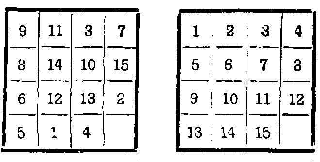
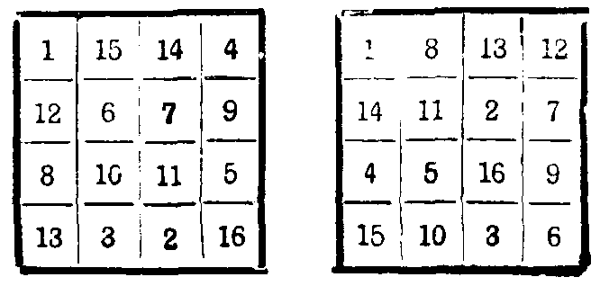
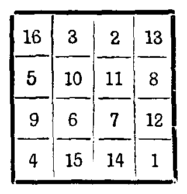
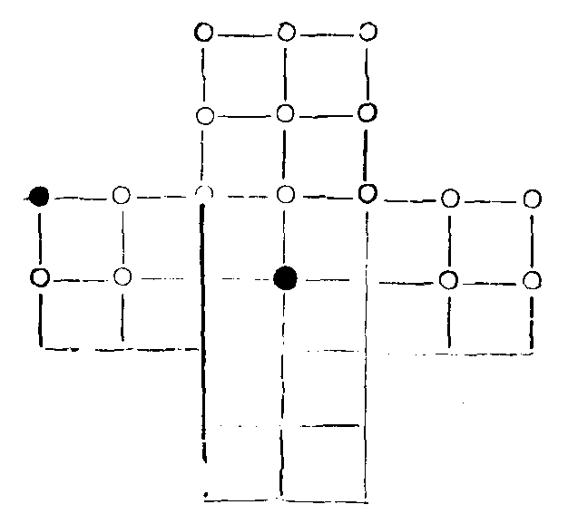
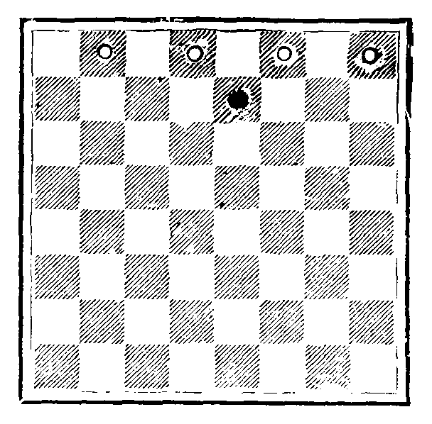
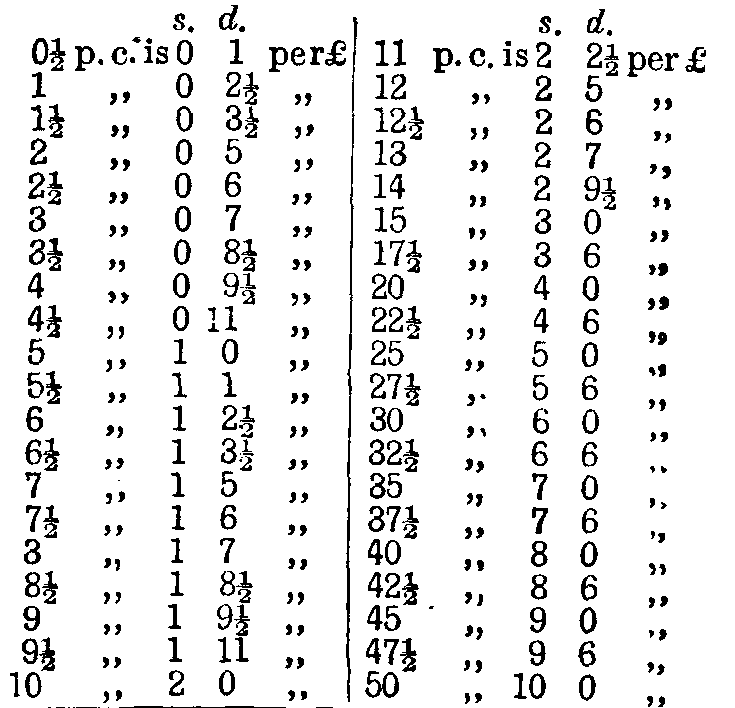
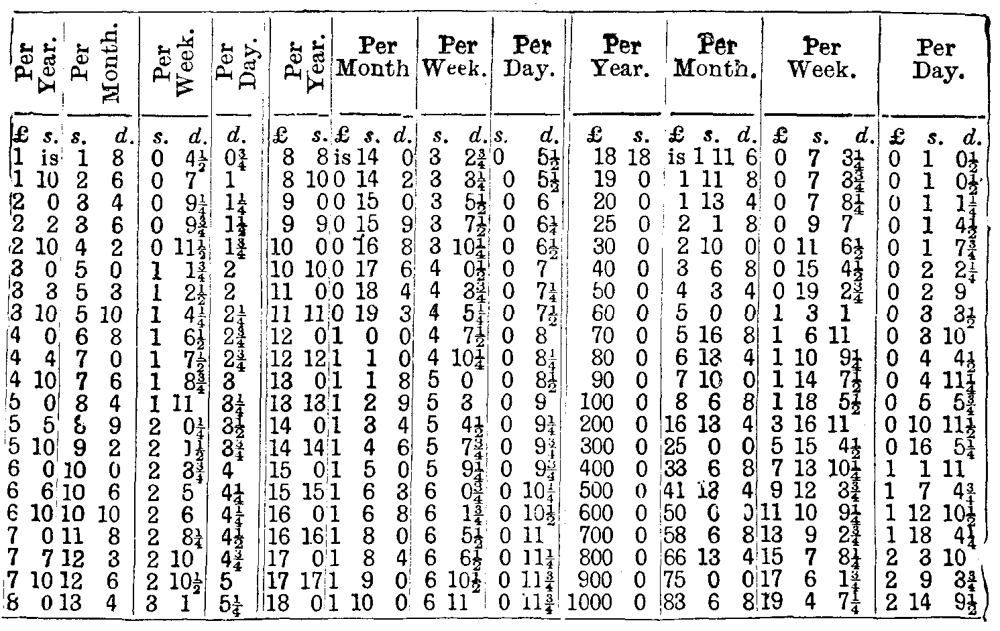
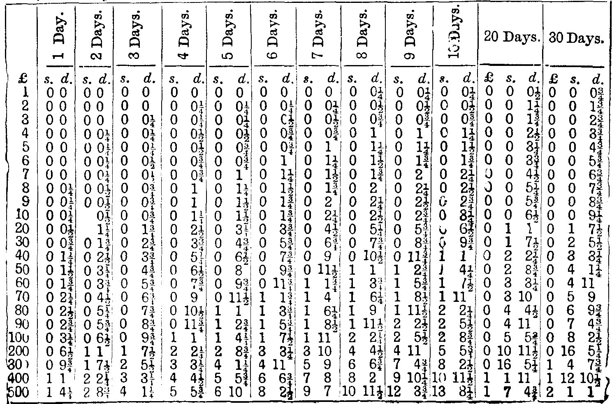
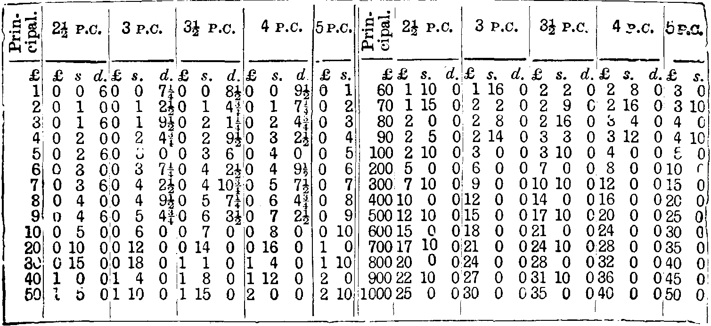
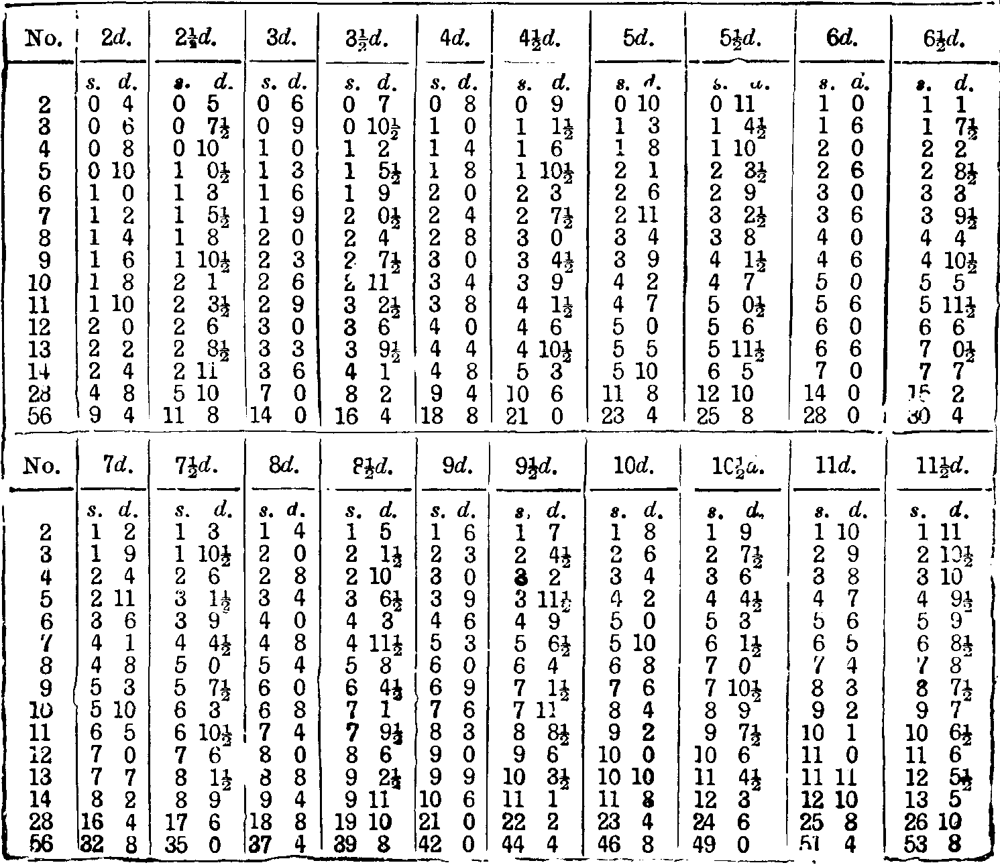

Enquire Within
Upon Everything
Part 3
1808. Fancy Needlework
Although there is a continual change in designs and materials for
fancy needlework of every description, the fundamental principles on
which this kind of work in all its various branches is executed remain
the same. These are carefully, though briefly set forth in the
following series of instructions on this subject.
Contents / Index
1809. Instructions in Crochet
1810. Popularity of Crochet
Perhaps no kind of work has ever attained such popularity as
Crochet. Whether as a simple trimming, as an elaborate quilt, or as
a fabric, almost rivalling Point Lace, it is popular with every woman
who has any time at all for fancy work, since it is only needful to
understand the stitches, and the terms and contractions used in
writing the descriptions of the different designs, to be enabled to
work with ease the most beautiful pattern that ever appeared in
crochet.
Contents / Index
1811. Stitches used in Crochet
These, with their abbreviations, are:
| ch |
chain stitch |
| s |
single crochet |
| dc |
double crochet |
| L |
long stitch |
|
double and treble long |
Contents / Index
1812. Chain Stitch, ch.
Hook the cotton into a loop, and keep on looping the cotton through a
previous stitch till a succession of chains are made to form a
foundation.
Contents / Index
1813. Single Crochet, s.
This occurs only in working designs; the hook is inserted in a stitch,
and the cotton is pulled through that and the cotton which is on the
hook at the same time; it thus makes a close tie.
Contents / Index
1814. Double Crochet, or dc.
With cotton on the hook insert the latter into a stitch, draw the
cotton through; there are now two loops on the hook, take up the
cotton on the hook, and with cotton again upon the hook draw it
through the two loops.
Contents / Index
1815. Long Stitch, or l.
With the loop of last stitch on the hook, twist the cotton over the
hook, place the latter through a stitch, draw the cotton through, then
put the cotton over the hook, draw the cotton through two loops, and
again through two loops.
Contents / Index
1816. Double and Treble Long
With the hook in a loop, twist the cotton twice or three times over
the hook, and draw the hook successively through either two or three
loops.
Contents / Index
1817. Square Crochet
Square crochet is also sometimes used. The squares are either open or
close. An open square consists of one L, two Ch, missing two on the
line beneath, before making the next stitch. A close square has three
successive L's. Thus, any given number of close squares, followed by
an open, will have so many times three L's; consequently any
foundation for square crochet must have a number that can be divided
by three.
Contents / Index
1818. To Contract an Edge
This may be done in Dc, or long stitch. Twist the thread round the
hook as often as required, insert it in the work, and half do a
stitch. Instead of finishing it, twist the thread round again, until
the same number of loops are on, and work a stitch entirely; so that,
for two stitches, there is only one head.
Contents / Index
1819. To Join on a Thread
Joins should be avoided as much as possible in open work. In joining,
finish the stitch by drawing the new thread through, leaving two
inches for both ends, which must be held in.
Contents / Index
1820. To Use Several Colours
This is done in single crochet. Hold the threads not in use on the
edge of the work, and work them in. Change the colour by beginning the
stitch in the old colour, and finishing it with the new, continuing
the work with the latter holding in the old. If only one stitch is
wanted in the new colour, finish one stitch, and begin the next with
it; then change.
Contents / Index
1821. To Join Leaves, &c.
When one part of a leaf or flower is required to be joined to another,
drop the loop from the hook, which insert in the place to be joined;
draw the loop through and continue.
Contents / Index
1822. To Work over Cord
Hold the cord in the left hand with the work, and work round it, as
you would over an end of thread, working closely. When beads are used
they must be first threaded on silk or thread, and then dropped,
according to the pattern, on the wrong side of the work. This side
looks more even than the other: therefore, when bead purses are worked
from an engraving, they are worked the reverse of the usual way, viz.,
from right to left.
Contents / Index
1823. Oriental Crochet erroneously termed Tricotee
This is worked by just making a chain the length required. Then put
the hook through a loop of the chain, pull the wool through without
twisting it, and so continue to the end, keeping all the stitches on
the hook. In returning, twist the wool over the hook, pull it
through the first loop, twist the wool again over the hook, pull it
through the next, and so continue to the end. There will now be a row
of flat loops, but not on the edge. Work exactly as at the first row
which was worked with the chain row, but in this there is no chain row.
Contents / Index
1824. Instructions in Netting
1825. Regularity in Netting
The beauty of netting consists in its firmness and regularity. All
joins in the thread must be made in a very strong knot; and, if
possible, at an edge, so that it may not be perceived.
Contents / Index
1826. Implements used in Netting
These are a netting needle and mesh. In filling a netting needle with
the material, be careful not to make it so full that there will be a
difficulty in passing it through the stitches. The size of the needle
must depend on the material to be employed, and the fineness of the
work. Steel needles are employed for every kind of netting except the
very coarsest. They are marked from 12 to 24, the latter being
extremely fine. The fine meshes are usually also of steel; but, as
this material is heavy, it is better to employ bone or wooden meshes
when large ones are required. Many meshes are flat; and in using them
the width is given.
Contents / Index
1827. Diamond Netting
The first stitch in this work is termed diamond netting, the holes
being in the form of diamonds. To do the first row, a stout thread,
knotted to form a round, is fastened to the knee with a pin, or passed
over the foot, or on the hook sometimes attached to a work cushion for
the purpose. The end of the thread on the needle is knotted to this,
the mesh being held in the left hand on a line with it. Take the
needle in the right hand; let the thread come over the mesh and the
third finger, bring it back under the mesh, and hold it between the
thumb and first finger. Slip the needle through the loop over the
third finger, under the mesh and the foundation thread. In doing this
a loop will be formed, which must be passed over the fourth finger.
Withdraw the third finger from the loop, and draw up the loop over the
fourth, gradually, until it is quite tight on the mesh. The thumb
should be kept firmly over the mesh while the stitch is being
completed. When the necessary number of stitches is made on this
foundation, the future rows are to be worked backwards and forwards.
To form a round, the first stitch is to be worked into immediately
after the last, which closes the netting into a circle.
Contents / Index
1828. Round Netting
Round Netting is very nearly the same stitch. The difference is merely
in the way of putting the needle through the loop and foundation, or
other stitch. After passing the needle through the loop, it must be
brought out, and put downwards through the stitch. This stitch is
particularly suitable for purses.
Contents / Index
1829. Square Netting
Square Netting is exactly the same stitch as diamond netting, only it
is begun at a corner, on one stitch, and increased (by doing two in
one) in the last stitch of every row, until the greatest width
required is attained. Then, by netting two stitches together at the
end of every row, the piece is decreased to a point again. When
stretched out, all the holes in this netting are squares.
Contents / Index
One Kind Word may Turn Aside a Torrent of Anger.
1830. Darning on Netting
Square and diamond netting are the most frequently used, and are
ornamented with patterns darned on them, in simple darning or in
various point stitches. In the latter case it forms a variety of the
sort of work termed guipure d'Art.
Contents / Index
1831. Grecian Netting
-
Do one plain row. First pattern row. Insert the needle in the
first stitch, and, without working it, draw through it the second
stitch, through the loop of which draw the first, and work it in the
ordinary way. This forms a twisted stitch, and the next is a very
small loop formed of a part of the second stitch. Repeat this
throughout the row.
-
The second row is done plain.
-
The third like the first; but the first and last stitches are
to be done in the usual manner, but begin the twisting with the
second and third loops.
-
The fourth is plain. Repeat these four rows as often as
required.
-
Use No. 20 mesh for the fancy rows, and No. 14 for the plain.
Contents / Index
1832. Counting Stitches
Stitches in Netting are always counted by knots.
Contents / Index
1833. Instructions in Tatting, or Frivolité
1834. Implements for Tatting
The only necessary implements for tatting are a thin shuttle or short
netting-needle, and a gilt pin and ring, united by a chain. The cotton
used should be strong and soft. There are three available sizes, Nos.
1, 2, and 3. Attention should be paid to the manner of holding the
hands, as on this depends the grace or awkwardness of the movement.
Fill the shuttle with the cotton (or silk) required, in the same
manner as a netting needle. Hold the shuttle between the thumb and
first and second fingers of the right hand, leaving about half a yard
of cotton unwound. Take up the cotton, about three inches from the
end, between the thumb and first finger of the left hand, and let the
end fall in the palm of the hand; pass the cotton round the other
fingers of the left hand (keeping them parted a little), and bring it
again between the thumb and forefinger, thus making a circle round the
extended fingers. There are only two stitches in tatting, and they are
usually done alternately; this is therefore termed a double stitch.
Contents / Index
1835. English Stitch
The first stitch is called the English stitch, and made thus:—Let
the thread between the right and left hands fall towards you; slip the
shuttle under the thread between the first and second fingers; draw it
out rather quickly, keeping it in a horizontal line with the left
hand. You will find a slipping loop is formed on this cotton with that
which went round the fingers. Hold the shuttle steadily, with the
cotton stretched tightly out, and with the second finger of the left
hand slip the loop thus made under the thumb.
Contents / Index
1836. French Stitch
The other stitch is termed French stitch; the only difference being,
that instead of allowing the cotton to fall towards you, and passing
the shuttle downwards, the cotton is thrown in a loop over the left
hand, and the shuttle passed under the thread between the first and
second fingers upwards. The knot must be invariably formed by the
thread which passes round the fingers of the left hand. If the
operation is reversed, and the knot formed by the cotton connected
with the shuttle, the loop will not draw up. This is occasioned by
letting the cotton from the shuttle hang loosely instead of drawing it
out and holding it tightly stretched. When any given number of these
double stitches are done, and drawn closely together, the stitches are
held between the first finger and thumb, and the other fingers are
withdrawn from the circle of cotton, which is gradually diminished by
drawing out the shuttle until the loop of tatting is nearly or
entirely closed. The tatted loops should be quite close to each other,
unless directions to the contrary are given.
Contents / Index
1837. Ornamental Edging
The pin is used in making an ornamental edge, something like purl
edging, thus:—Slip the ring on the left-hand thumb, that the pin
attached may be ready for use. After making the required number of
double stitches, twist the pin in the circle of cotton, and hold it
between the forefinger and thumb, whilst making more double stitches;
repeat. The little loops thus formed are termed picots.
Contents / Index
1838. Trefoil Tatting
This is done by drawing three loops up tightly, made close together,
and then leaving a short space before making more. The trefoil is
sewed into shape afterwards with a needle.
Contents / Index
1839. To Join Loops
When two loops are to be connected, a picot is made in the first,
wherever the join is required. When you come to the corresponding
part of the second loop, draw the thread which goes round the
fingers of the left hand through the picot with a needle, pulling
through a loop large enough to admit the shuttle. Slip this through,
then draw the thread tight again over the fingers, and continue the
work. In many patterns a needle is used to work over, in buttonhole
stitch, the thread which passes from one loop to another. A long
needleful of the same cotton or silk used for the tatting is left at
the beginning of the work, and a common needle used to buttonhole over
bars wherever they occur.
Contents / Index
1840. Alternative Picots
Picots are also sometimes made with the needle and cotton in working
over these bars.
Contents / Index
1841. Instructions in Knitting
1842. Improvements in Process
Although the art of knitting is known perhaps more generally than
almost any other kind of fancy work, still as the knowledge is not
universal, and there have been of late years great improvements in
many of the processes, we hope that a short account of all the
stitches, and the elementary parts of the craft, will be welcomed by
many of our friends—and most seriously would we recommend them to
attain perfection in this branch of work, because, above all others,
it is a resource to those who, from weak eyes, are precluded from many
kinds of industrial amusement, or who, as invalids, cannot bear the
fatigue of more elaborate work. The fact is that knitting does not
require eyesight at all; and a very little practice ought to enable
any one to knit whilst reading, talking, or studying, quite as well as
if the fingers were unemployed. It only requires that the fingers
should be properly used, and that one should not be made to do the
duty of another.
Contents / Index
1843. Implements for Knitting
These are rods or pins of ivory, bone, or steel. The latter are most
commonly used, and should have tapered points, without the least
sharpness at the extremity.
Contents / Index
1844. Casting On
The first process in knitting is casting on. To effect this, hold the
end of cotton between the first and second fingers of the left hand;
bring it over the thumb and forefinger, and bend the latter to twist
the cotton into a loop; bend the needle in the loop; hold the cotton
attached to the reel between the third and little fingers of the right
hand, and over the point of the forefinger; bring the thread round the
needle by the slightest possible motion; bend the needle towards you,
and tighten the loop on the left-hand finger, in letting it slip off
to form the first stitch.
Contents / Index
1845. Formation of Stitches
Now take that needle with the loop on it in the left hand, and another
in the right. Observe the position of the hands. The left hand needle
is held between the thumb and the second finger, leaving the
forefinger free, to aid in moving the points of the needles. This mode
of using the forefinger, instead of employing it merely to hold the
needle, is the great secret of being able to knit without looking at
the work, for so extremely delicate is the sense of touch in this
finger, that it will, after a little practice, enable you to tell the
sort of stitch coming next, in the finest material, so that knitting
becomes merely mechanical. Insert the point in the loop, bringing it
behind the other needle, slip the thread round it, bring the point in
front, and transfer the loop to the left-hand needle without
withdrawing it from the right hand. Repeat the process for any number
of stitches required.
Contents / Index
1846. Plain Knitting
Slip the point of the right-hand needle in a loop, bring the thread
round it, and with the forefinger push the point of the needle off the
loop so that the thread just twisted round forms a new one on the
right hand.
Contents / Index
1847. Purling
The right-hand needle is slipped in the loop in front of the
left-hand one, and the thread, after passing between the two, is
brought round it; it is then worked as before. The thread is always
brought forward before beginning a purled stitch, unless particular
directions to the contrary are given.
Contents / Index
1848. Mode of making Stitches
To make one, merely bring the thread in front before knitting, when,
as it passes over the needle, it makes a loop; to make two, three, or
more, pass the thread round the needle in addition, once for 2,
twice for 3, and so on.
Contents / Index
1849. To Decrease
Take one stitch off without knitting; knit one, then slip the point of
the left-hand needle in the unknitted stitch and draw it over the
other. It is marked in receipts d. To decrease 2 or more, slip 1, knit
2, 3, or more together, as one, and pass the slip stitch over.
Contents / Index
1850. How to Join a Round
Four or five needles are used in round work, such as socks, stockings,
&c. Cast on any given number of stitches on one needle, then slip
another needle in the last stitch, before casting any on it; repeat
for any number. When all are cast on, knit the first 2 stitches off
on to the end of the last needle. One needle is always left unused in
casting on for a round.
Contents / Index
1851. How to Join Toe of Sock, &c.
Divide all the stitches on to two needles, hold both in the left hand,
as if they were one, and in knitting take a loop off each one, which
knit together.
Contents / Index
1852. To Cast off
Knit 2 stitches; with the left-hand needle draw the first over the
second; knit another; repeat. Observe that the row before the casting
off should never be very tightly knitted.
Contents / Index
1853. To Knit Three Stitches Together
To knit three stitches together, so that the centre one shall be in
front.—Slip 2 off the needle together knit the third, and draw the
others over together.
Contents / Index
1854. To Raise a Stitch
To raise a stitch is to knit the bar of thread between the two
stitches as one.
Contents / Index
1855. Abbreviations
The abbreviations used are:
| K |
knit |
| P |
purl |
| D |
decrease |
| K 2 t |
knit 2 together |
| P 2 t |
purl 2 together |
| M 1 |
make 1 |
Contents / Index
1856. Size of Needles
Take care to have needles and cotton or wool that are suitable to each
other in size. The work of the best knitter in the world would appear
ill done if the needles were too fine or too coarse. In the former
case, the work would be close and thick; in the latter it would be too
much like a cobweb.
Contents / Index
1857. Instructions in Embroidery and Canvas Work
1858. Embroidery
Embroidery, properly speaking, includes every sort of ornamental work
done with a sewing needle of any kind; but in its popular acceptation,
it applies only to the ornamentation of any article by the eye, or
from drawn or marked patterns—whatever may be the material, or
combination of materials employed; Berlin or canvas work, on the
contrary, is the usual designation of all kinds of embroidery on
canvas, done by counting threads, and frequently by the aid of a
painting on checked paper.
Contents / Index
1859. Distinction in Embroidered Work
Although these two different sorts of work are really equally entitled
to the designation of embroidery, yet for the sake of making our
hints as intelligible as possible, we will adopt the popular terms,
and confine our present remarks to that sort of embroidery which is
not executed by the stitch.
Contents / Index
Be A Friend to Virtue—a Stranger to Vice.
1860. Materials
Every sort of embroidery material may be used for embroidering upon.
The most common are muslin, cambric, velvet, satin, cloth, and leather.
Contents / Index
1861. Application
The simplest style of embroidery is that termed Application,—that
is, where the pattern is in one material, laid on another which forms
the ground. In this way muslin is worked on net, velvet is laid on
cloth, or on another velvet, and cretonne designs cut out and laid on
another material, the edges being either sewed over, or ornamented
with fancy cord, braid, gold thread, or any other appropriate material.
Contents / Index
1862. Braiding
Another very easy style of ornamentation is that known as braiding.
Children's dresses are worked with narrow silk or worsted braid, the
latter being also used for ladies' aprons, flounces, &c. Gold and
silver braid enter largely into various sorts of decorated needlework,
and the Victoria braid, of cotton, which has something of the
appearance of satin stitch, is generally known.
Contents / Index
1863. Stitches in Braiding
There is considerable art required to achieve putting on the Victoria
braid evenly and firmly. The stitches should be taken across the
braid. This makes it lie flat.
Contents / Index
1864. Elaborate Embroidery
But the most elaborate kinds of embroidery are those which represent
flowers, fruit, and other devices on any material; and these may be
divided into white and coloured embroidery.
Contents / Index
1865. Broderie Anglaise
White embroidery, or embroidery on muslin, is used for a great variety
of articles of ladies' dress. The simplest is termed Broderie
Anglaise. In this style, the pattern is either in satin stitch, or
from left to right, formed of holes cut out of the muslin, and sewed
over with embroidery cotton. The great art in working broderie is to
make the holes all of the same size, and to take the stitches closely
and regular.
Contents / Index
1866. Satin Stitch
Satin stitch is a smooth raised work, used for leaves, flowers, &c. It
is done by first tracing the outlines accurately with soft cotton,
then taking stitches from point to point of the part to be raised, so
as to have the greatest thickness of cotton in the centre, and sewing
it over, in stitches taken close together, but slightly slanting, and
completely across the part outlined. The veining of leaves is
generally formed by taking the stitches from the vein to the edge,
first on one side and then on the other. The borders of embroidered
muslin collars, &c., are usually finished with buttonhole stitch,
worked either the width of an ordinary buttonhole, or in long
stitches, and raised like satin stitch. Eyelet holes are made by
piercing round holes with a stiletto, and sewing them round.
Contents / Index
1867. Fancy Stitches
There are many fancy stitches introduced into muslin work, but these
require to be practically taught.
Contents / Index
1868. Frame for Embroidery
The kind of frame on which muslin is most easily worked, consists of
two hoops of wood, about eight inches in diameter. One is rather
smaller than the other. On it the muslin is stretched, and the larger
one being slipped over it, and fitting tightly, keeps the muslin in
its place.
Contents / Index
1869. Embroidery on Satin, &c.
Satin and velvet are embroidered in coloured silks, gold and silver
bullion, pearls, &c. A very fashionable style is the work with ombre
or shaded silks.
Contents / Index
1870. Netting Silk in Embroidery
The most delicate kinds of embroidery are worked with fine netting
silk, one strand of which is drawn out. This makes the silk appear
softer and richer.
Contents / Index
1871. Shading in Silks
It requires considerable care to work well with ombre silks, to avoid
incorrect shading. Nature should be followed as closely as possible.
Not only must the form be carefully preserved, but the lights and
shades must be disposed in an artistic manner. For instance: the point
of a leaf is never the darkest part, nor should the lower leaves and
flowers of a group of the same kind be light.
Contents / Index
1872. Materials used in Embroidery and Canvas Work
The materials for canvas work and embroidery may be classed under the
names of wool, silk, chenille, and braid; beads, straw, and a variety
of other fancy materials, are also brought into use. A knowledge of
the proper mode of using them, and the varieties of each which are
made, is one of the most useful things it is possible for the amateur
needle-woman to become acquainted with. We will, therefore, take them
in their order.
Contents / Index
1873. Wool
German wool (or Berlin wool, as it is commonly called) is the most
beautiful material manufactured for canvas-work. The vast variety of
shades, the exquisite tints produced, the softness and evenness of the
fabric, are beyond all praise. We speak of Berlin wool as it ought to
be; for no article is more frequently of inferior quality. From damp,
or bad packing, or many other causes, it is frequently crushed and
injured, and in that state is not fit to be used for good work. Berlin
wool is supposed to be all dyed, as well as made, abroad; at present a
large proportion is entirely produced in our own country, which is
little, if at all, inferior to the foreign. Berlin wool is made only
in two sizes, 4-thread and 8-thread; unless the latter is specified in
directions, the other is always implied.
Berlin wools are either dyed in one colour, or in shades of the same
colour, or (very rarely) in shades of several colours. Technically,
a silk or wool dyed in shades of the same colour, going gradually from
light to dark, and from dark to light again, is termed an ombre, or
shaded wool or silk, whereas chine is the term employed when there
are several colours used. There are, also, what are called short
and long shades; that is, in the former the entire shades, from the
lightest to the lightest again, will occur within a short space, a
yard or so; whereas, in long shades the gradation is much more
gradually made.
We notice these apparently trifling differences that readers may
comprehend the importance of obtaining precisely the proper materials
for each design. If we prescribe a certain article, it is because it
and no other will give the effect. Transparent, white, or silver beads
are usually worked with white silk, but clear glass beads, threaded on
cerise silk, produce a peculiarly rich effect by the coloured silk
shining through transparent glass. The silk used must be extremely
fine, as the beads vary much in size. A change of material, which
might appear of no consequence whatever, would completely spoil the
effect of the design.
Contents / Index
1874. Fleecy Wool
Fleecy wool is the sort of wool used for jackets and other large
articles. Some of the tints are quite as brilliant as those of Berlin
wool. It is made in 3, 4, 6, 8, and 12 threads, and is much cheaper
than German wool. It does very well for grounding large pieces of
canvas work.
Contents / Index
1875. Shetland Wool
Shetland wool is very fine and soft, is much used, and prized for
shawls and neckties and for veils.
Contents / Index
1876. Eis Wool
A pure German wool of silky brightness, is used for the same purpose
as Shetland wool excepting for veils. It is also used instead of silk
for embroidering on velvet, as tea cosies, &c.
Contents / Index
1877. Andalusian Wool
Andalusian wool is a medium wool, less thick than Berlin wool, is used
for cuffs and shawls.
Contents / Index
1878. Other kinds of Wool
There are also other names given to wools by the vendors or
manufacturers of them: for instance, "The Peacock Wool" and "The Coral
Wool" are trade marks, and not particular wools.
Contents / Index
1879. Scotch Fingering Wool
Scotch fingering wool is used for knitting stockings and socks, and
gentlemen's kilt hose.
Contents / Index
1880. Thin Lambs' Wool and Wheeling Yarn
Scotch yarns, used principally for children's socks and stockings.
Contents / Index
1881. Merino Wool
Merino wool is the produce of a Spanish breed of sheep. The wool was
introduced into this country about the close of the last century.
George III. was a great patron of this breed. French Merino is made
from this peculiariy soft wool; so also Berlin wool, used for canvas
embroidery.
Contents / Index
1882. Angola Wool
The produce of an African breed of sheep; is a soft hairy wool. Is
used for making Angola shawls and gloves, valued for their extreme
softness and warmth. These were popular till the cotton manufacturers
introduced a very poor imitation make entirely of cotton.
Contents / Index
1883. Camel-hair Wool
Camel-hair wool is the production of the llama, or al-lama, a native
of South America. This ruminant animal resembles in its nature, but
not in its form, a camel. The back and sides of the llama are clothed
with fine long woolly hairs, becoming smooth, silky, and shining
towards the tips, the general colours being of a uniform bright brown.
The native Indians use it in the manufacture of stuffs, ropes, bags,
and mats.
Contents / Index
1884. Alpaca
Al-Paco produces the alpaca wool. This creature is also a species of
camel, though different in shape. Cavier regarded the paco as a
variety of the llama; so also the vicugua. The llama is generally used
as a beast of burden, while the former are used chiefly for their
flesh and wool.
Contents / Index
1885. Yak Lace and Fringe
This is said to be made from the tail hair of an animal resembling an
ox, a horse, and sheep; the first for its shape, the next for its
tail, and the third for its wool. The tail, under the Indian name of
Chowrie, is often mounted in horns and silver, and used as a switch
to keep off flies. The yak inhabits the coldest parts of Tibet, India.
Contents / Index
1886. Silk
This well known production of the silk-worm in its natural state, as
reeled from the cocoon, is termed "raw silk;" and before this can be
used for weaving it requires to be twisted, or, as it is technically
termed, "thrown;" that is to say, it is not two threads twisted one
over the other, but the single filament itself is twisted so as to
render it firmer; this is termed "singles." The next process is termed
"tram." This is two threads loosely twisted together. This usually
constitutes the "weft" silk, which is thrown by the shuttle across the
long threads, or "warp," of the piece-silk.
Contents / Index
1887. Organzine
Organzine, or hard silk, generally constitutes the "warp," or length
of the silk. This is made by first twisting each individual thread of
silk, and then two or more of the threads are twisted together by the
"throwing" mill (throw one thread over the other). In this state it
must be boiled, to discharge the gum which renders the silk hard to
the touch, and unfit to receive the dye. It is now boiled in soap and
water for four hours, and then boiled in clear water to discharge the
soap; after which it is glossy, soft, and fit for wearing.
Contents / Index
1888. Filoselle Silk
Filoselle silk was formerly a "spun silk," and the product chiefly of
the silkworm, which naturally eats its way through its cocoon. It is
only comparatively of late years that this silk has been used. The
short filaments are spun in the same way that cotton and wool are
spun, and is afterwards woven. A great deal of this silk is used for
stockings and socks, and for weaving in with wool-fabrics, but there
is also another kind of Filoselle used in needlework. This is
two-thread silk, or "tram." Eight or ten of these slightly twisted
threads form a strand of silk, so that, according to the purpose
required, one, two, or more threads of it can be used for embroidery.
This is glossy as satin.
Contents / Index
1889. Floss Silk
Floss silk consists of several filaments of untwisted silk sufficient
to make a strand of silk. It is used for working on the surface of
wool stitches to heighten the effect and give brilliancy.
Contents / Index
1890. Tusseh Silk
Tusseh silk or, as some term it, "Tussore," is spun from the silk of
the perforated cocoon of the tusseh-moth. This silk is seldom dyed,
being the natural colour of the cocoon, which cannot be satisfactorily
extracted; nor will it absorb dye perfectly.
Contents / Index
1891. Embroidery Silk
Embroidery silk is bright and lustrous, and composed of two rather
loosely twisted large threads. Sadler's Silk and Purse-Silk have
three threads. Sewing Silk has two. Tailor's Twist three threads.
Contents / Index
1892. Chenille
Chenille is of two kinds. Chenille à broder (the finest sort), and
chenille ordinaire, which is stiff, and about the thickness of a
quill: both are round. The extreme richness of the appearance of
chenille makes it suitable for any work requiring great brilliancy; as
the plumage of birds, some flowers, and arabesques. Silk canvas is
much embroidered with chenille, but is extremely expensive, and very
soon injured by dust. It should only be employed for articles intended
to be glazed, such as pole-screens, the tops of work-boxes, and
screens.
Contents / Index
1893. Arrasene
Arrasene is a perfectly flat silk-chenille—and is used for
embroidery on all descriptions of material.
Contents / Index
1894. Braids
Braids are of various kinds. Russian silk braids are generally
employed for dresses, slippers, &c.; but for many of these purposes
the new Albert braid recently manufactured in England is much richer
and far more effective. Russian silk braid is generally narrow, and
the plait is of that kind which is termed Grecian—all the strands
going from the edge to the centre. In French braid, on the contrary,
the plait of every two strands over each other. French braid, in
silk, is very little used in this country. Slippers and other small
articles worked in braid have the effect greatly improved by laying a
gold thread on one or both sides of the braid.
Contents / Index
1895. Victoria, Adelaide, or Coronation Braid
Victoria, Adelaide, or Coronation braid (for the same article has
been called by all these various names), is a cotton braid, which,
when laid on net or muslin, looks something like satin-stitch. It is
composed of thick and thin parts alternately, and is made in only two
sizes.
Contents / Index
1896. Albert Braid
Albert braid is a sort of silk cord, made in many beautiful colours.
It is intended for either application, in braiding, and being
raised, looks extremely well, with very small outlay of time or
money.
Contents / Index
1897. Gold and Silver Braids
Gold and silver braids are often used in Mosaic work, and for
slippers, blotting-cases, &c. The Mosaic braid, which is comparatively
cheap, is generally used.
Contents / Index
1898. Stitches
Various stitches are used in embroidery with crewels and silk.
Contents / Index
1899. Stem Stitch
Stem stitch, also Crewel stitch, is that used for stems and for
ordinary filling-in of flowers and arabesques. Instead of working from
right to left, the stitches are smoother if worked from left to right.
In stems a long stitch is made, and then a second halfway the length
of the first, and half-way beyond it, till a stem is formed; and to
complete it work from right to left, placing the needle under a stitch
of the stem, not of the material, and so work back upon the top of the
previous stitches. In the stem first worked only the tiniest piece of
the material is taken up on the needle, so that the wool or silk is
all on the surface.
Contents / Index
1900. Stem Stitch in Flowers, &c.
In flowers and arabesques the stem-stitch is worked straight, but each
stitch differing in length from the other, so as to make the wool
smooth. Commence the work at the lowest part of the petals, and work
upwards to the edge.
Contents / Index
1901. Split Stem Stitch
Having worked one stitch, in making the second split the first stitch
in the centre with the needle. In the stitch, the thread is continued
under the material.
Contents / Index
1902. Couching
Couching is a laying down on the outline of the design, a thick strand
of filoselle, or cord or wool or silk of any kind, and then
over-stitching it down with a fine silk of the same, or a contrasting
colour.
Contents / Index
1903. Basket-work Stitch and Diaper Stitch
These are done with gold, silver, or silk cords, stitched on the
material in patterns, with silk of another, or of the same colour. The
cords are just passed through the back of the work to its surface;
either one, two, or three at a time are held in place by the left
hand, the over-stitching being done by the right hand.
Contents / Index
1904. Canvas for Cross-stitch Work
The Penelope is now universally used where the ground is filled in.
Formerly it resembled the silk canvas now used where no grounding is
required, but by accident a manufacturer observing some cross-stitch
work unpicked, took the hint, and the result was the "Penelope
canvas," of which there are different degrees of fineness, determined
by the number of double-crossed threads that may fill the space of one
inch.
Contents / Index
1905. Elephant Penelope Canvas
Elephant Penelope Canvas is extremely coarse—fitted for working rugs
and eight or twelve thread wools.
Contents / Index
1906. Silk Canvas
Silk canvas requires no grounding; it is made of a cotton thread
overcast with silk, and resembles coarse even-threaded cheese cloths,
but is silky.
Contents / Index
1907. Mode of doing Canvas Work
This is always done by the thread,—particular care should in all
cases be taken that the size of the various materials is properly
proportioned. Placing the canvas in a frame, technically termed
dressing the frame, is an operation which requires considerable
care. The frame itself, especially for a large piece of work, should
be substantially made; otherwise the stress upon it will be apt to
warp it, and drag the canvas. If this occurs to any extent, the injury
can never be repaired.
Contents / Index
1908. To Frame Canvas
After herringboning the raw edges of the canvas, sew them, by the
thread, to the webbing of the frame,—that is, to the top and bottom.
Then stretch the ends till the canvas is extended to its utmost
length, put in the pegs, and brace the sides with fine twine. If the
canvas is too long for the frame, and any part has to be rolled over
the end, let the wood be first covered with a few thicknesses of
silver paper.
Contents / Index
1909. Design on Cloth
Sometimes, to save the trouble of grounding, a design is worked on
cloth, over which canvas is laid. Whenever this is the case, the cloth
must be carefully damped, to remove the gloss, before it is put into
the frame. Then, as cloth will always stretch much more than canvas,
it must be cut a little smaller both ways. The raw edges of the cloth
should be turned in, and tacked to the canvas before they are framed.
Some people withdraw the threads of canvas after the work is done; but
it has a much richer effect if the threads of canvas are cut close to
the outer stitches; and if there are any small spaces in the pattern,
where the ground should be seen, they may be worked in wool of the
colour of the ground.
Contents / Index
1910. Stretching Work
Should a piece of work be a little drawn when taken out of the frame,
damp the back well with a clean sponge, and stretch it again in the
frame in the opposite direction. Whenever Berlin-work is done on any
solid thick material, as cloth, velvet, &c., a needle should be used
with an eye sufficiently large to form a passage for this wool. This
prevents the latter from being crushed and impoverished as it passes
through.
Contents / Index
1911. Stitches in Canvas Work
There are five kinds of stitch used in canvas work—Cross Stitch,
Tent Stitch, Tapestry Stitch, German Stitch, and Irish Stitch.
Contents / Index
1912. Cross Stitch
Cross stitch is generally known. The needle is brought up in one pole
of the canvas and down on another, two threads higher and more to the
right. The slanting thread is then crossed in the opposite direction.
A cross-stitch covers two threads in each direction.
Contents / Index
1913. Tent Stitch
Tent stitch occupies one-fourth the space of cross-stitch. It is taken
from one hole to the next above, and on the right hand side of a
previous stitch.
Contents / Index
Every One Basteth the Fat Hog, while the Lean One Burneth.
1914. Tapestry Stitch
Tapestry stitch crosses two threads of the canvas in the length, and
one in the width. It is sometimes called Gobelin stitch, because it
resembles somewhat the Gobelin tapestry. It is not suited for coarse
canvas, and, in working from a Berlin pattern, two straight stitches
must be counted as one square cross stitch.
Contents / Index
1915. German Stitch
German stitch is worked diagonally, and consists of the first part of
a cross stitch, and a tent stitch alternately worked.
Contents / Index
1916. Irish Stitch
Irish stitch is worked parallel with the selvedges of the canvas. None
of the stitches cross the threads in the width. In the first row,
take the thread alternately over four and two threads; in all future
rows take the stitches over four threads,—which, as they rise—first
from the long and then from the short stitch, will produce the same
appearance in others.
Contents / Index
1917. Handling Wool
With regard to wools, they should never be wound, as the least
handling crushes the pile and spoils them. Chenille needs still more
careful handling.
Contents / Index
1918. Stiffening Work
To stiffen large pieces of work, wet the wrong side thoroughly with
gum water or gum tragacanth, and dry it before a fire (the wet side
nearest the fire), before removing it from the frame.
Contents / Index
1919. Beads in Canvas Work
Beads in canvas work have the treble merit of being at once brilliant,
durable, and attractive.
Contents / Index
1920. Tapestry Painting
Tapestry painting is an imitation of the famed Gobelin tapestry, which
is hand-woven over fine cord. The imitation is painted on a
machine-woven rep canvas: the term rep is a corruption of the Saxon
term wrepp, or rape, a cord, Dutch roop, from which we get the
word rope. In the Gobelins the shading of the different tints of wool
that form a picture, or other designs, are put in by hand work, or
shuttles moved by the hand, and on the wrong side of the picture, and
the threads of wool, the weft run longitudinally, not horizontally, so
that when the design is finished the picture is turned horizontally,
and is complete. In Tapestry Painting the rep of the canvas is from
right to left (horizontal), and this is then painted over and forms a
picture in imitation of the Gobelin tapestry. The latter is so named
after its French inventor, Giles Gobelin, about 1520. He was a famous
dyer who discovered the celebrated Gobelin's scarlet dye. The house in
which he lived was purchased by Louis XIV for a manufactory of
tapestry for adorning palaces, the designs for which were drawn by Le
Brun, a celebrated French painter, about 1666. Her Majesty Queen
Victoria has recently caused to be established at Windsor, an
establishment where the art of making "Gobelin Tapestry" is
successfully taught.
Contents / Index
1921. Tapestry of Auxerre
This town, in the northern part of the province of Burgundy, was once
famous for its tapestry of a peculiar make. The design was handwoven
in small patches of colour, and then was sewed together at the back to
form the picture. Tapestry painting in blocks or masses of a single
colour successfully imitate this tapestry, only that where the joining
is of the real Auxerre tapestry is in tapestry painting marked by a
black outline.
Contents / Index
1922. Terra Cotta Painting
Terra Cotta is an Italian term for "burnt-earth." Bricks are a coarse
kind of terra cotta. The new building erected at Kensington for the
reception of valuable remains and subjects of natural history, is
built entirely of terra cotta slabs. Terra Cotta vases of the early
and late Etruscan period, such as those in the British Museum, are
priceless. These are painted in various designs, and burnt in. The
Doulton Ware is a close, if not exact, representation of these
matchless specimens. Terra Cotta painting is simply vases and plates
of red terra cotta, painted in Greek designs with ordinary black
paint, and then varnished, or plates painted with a similar medium, in
flowers of various colours. These last, of course, are no imitations
of the antique.
Contents / Index
Time and Tide Tarry for No Man.
1923. Lustra Painting
Lustra painting is a recent invention that so much resembles silk
embroidery as to be mistaken for it. The outline of a design is
sketched either on Roman satin or any smooth fabric, and then bronze
powders of different colours are rubbed in with a preparation which is
a trade secret. The leaves and stems are outlined in silk, this
rendering the imitations more complete.
Contents / Index
1924. Hints upon Etiquette1
Footnote 1: See "Etiquette and Social Ethics." 1s. London: Houlston
and Sons
return to footnote mark
Contents / Index
1925. Introduction to Society
Avoid all extravagance and mannerism, and be not over-timid at the
outset. Be discreet and sparing of your words. Awkwardness is a great
misfortune, but it is not an unpardonable fault. To deserve the
reputation of moving in good society, something more is requisite than
the avoidance of blunt rudeness. Strictly keep to your engagements.
Punctuality is the essence of politeness.
Contents / Index
1926. The Toilet
Too much attention cannot be paid to the arrangements of the toilet. A
man is often judged by his appearance, and seldom incorrectly. A neat
exterior, equally free from extravagance and poverty, almost always
proclaims a right-minded man. To dress appropriately, and with good
taste, is to respect yourself and others. A gentleman walking, should
always wear gloves, this being one of the characteristics of good
breeding. Fine linen, and a good hat, gloves, and boots, are evidences
of the highest taste in dress.
Contents / Index
1927. Visiting Dress
A black coat and trousers are indispensable for a dinner, or a ball.
Either a white or black waistcoat is proper on such occasions. Morning
dress is sufficient for an ordinary visit of ceremony.
Contents / Index
1928. Officers' Dress
Upon public and state occasions all officers should appear in uniform.
Contents / Index
1929. Ladies' Dress
Ladies' dresses should be chosen so as to produce an agreeable
harmony. Never put on a dark-coloured bonnet with a light spring
costume. Avoid uniting colours which will suggest an epigram; such as
a straw-coloured dress with a green bonnet.
Contents / Index
1930. Arrangement of the Hair
The arrangement of the hair is most important. Bands are becoming to
faces of a Grecian caste. Ringlets better suit lively and expressive
heads. Avoid the extremes of fashion, whatever the fashion may be,
especially those fashions which tend to spoil the hair and render it
unfitted for plainer styles.
Contents / Index
1931. Excess of Lace and Flowers
Whatever be your style of face, avoid an excess of lace, and let
flowers be few and choice.
Contents / Index
1932. Appropriateness of Ornaments
In a married woman a richer style of ornament is admissible. Costly
elegance for her—for a young girl, a style of modern simplicity.
Contents / Index
1933. Simplicity and Grace
The most elegant dress loses its character if it is not worn with
grace. Young girls have often an air of constraint, and their dress
seems to partake of their want of ease. In speaking of her toilet, a
women should not convey the idea that her whole skill consists in
adjusting tastefully some trifling ornaments. A simple style of dress
is an indication of modesty.
Contents / Index
1934. Cleanliness
The hands should receive special attention. They are the outward signs
of general cleanliness. The same may be said of the face, the neck,
the ears, and the teeth. The cleanliness of the system generally, and
of bodily apparel, pertains to Health, and is treated of under this
head.
Contents / Index
1935. The Handkerchief
There is considerable art in using this accessory of dress and
comfort. Avoid extreme patterns, styles, and colours.
Never be without a handkerchief. Hold it freely in the hand, and do
not roll it into a ball. Hold it by the centre, and let the corners
form a fan-like expansion. Avoid using it too much. With some persons
the habit becomes troublesome and unpleasant.
Contents / Index
Punctuality Begets Confidence.
1936. Visits and Presentations
-
Friendly calls should be made in the forenoon, and require
neatness, without costliness of dress.
-
Calls to give invitations to dinner-parties, or balls, should be
very short, and should be paid in the afternoon.
-
Visits of condolence require a grave style of dress.
-
A formal visit should never be made before noon. If a second
visitor is announced, it will be proper for you to retire, unless
you are very intimate both with the host and the visitor announced;
unless, indeed, the host expresses a wish for you to remain.
-
Visits after balls or parties should be made within a month.
-
In the latter, it is customary to enclose your card in an
envelope, bearing the address outside. This may be sent by post, if
you reside at a distance.
-
But, if living in the neighbourhood, it is polite to send your
servant, or to call in person. In the latter case a corner should be
turned down.
-
Scrape your shoes and use the mat. Never appear in a
drawing-room with mud on your boots.
-
When a new visitor enters a drawing-room, if it be a gentleman,
the ladies bow slightly, if a lady, the guests rise.
-
Hold your hat in your hand, unless requested to put it down. Then
lay it beside you.
-
The last arrival in a drawing-room takes a seat left vacant near
the mistress of the house.
-
A lady is not required to rise to receive a gentleman, nor to
accompany him to the door.
-
When your visitor retires, ring the bell for the servant. You
may then accompany your guest as far towards the door as the
circumstances of your friendship seem to demand.
-
Request the servant, during the visits of guests, to attend to
the door the moment the bell rings.
-
When you introduce a person, pronounce the name distinctly, and
say whatever you can to make the introduction agreeable. Such as "an
old and valued friend," a "schoolfellow of mine," "an old
acquaintance of our family."
-
Never stare about you in a room as if you were taking stock of
those who are present.
-
The gloves should not be removed during a visit.
-
Be hearty in your reception of guests; and where you see much
diffidence, assist the stranger to throw it off.
-
A lady does not put her address on her visiting card.
Contents / Index
1937. Balls and Evening Parties
-
An invitation to a ball should be given at least a week
beforehand.
-
Upon entering, first address the lady of the house; and after
her, the nearest acquaintances you may recognise in the room.
-
If you introduce a friend, make him acquainted with the names
of the chief persons present. But first present him to the lady of
the house, and to the host.
-
Appear in full dress.
-
Always wear gloves.
-
Do not wear rings on the outside of your gloves.
-
Avoid an excess of jewellery.
-
Do not select the same partner frequently.
-
Distribute your attentions as much as possible.
-
Pay respectful attention to elderly persons.
-
Be cordial when serving refreshments, but not importunate.
-
If there are more dancers than the room will accommodate, do
not join in every dance.
-
In leaving a large party it is unnecessary to bid farewell,
and improper to do so before the guests.
-
In balls and large parties there should be a table for cards,
and two packs of cards placed upon each table.
-
Chess and all unsociable games should be avoided.
-
Although many persons do not like to play at cards except for a
stake, the stakes agreed to at parties should be very trifling, so
as not to create excitement or discussion.
-
The host and hostess should look after their guests, and not
confine their attentions. They should, in fact, attend chiefly to
those who are the least known in the room.
-
Avoid political and religious discussions. If you have a
hobby, keep it to yourself.
-
After dancing, conduct your partner to a seat.
-
Resign her as soon as her next partner advances.
(For the Figures of Dances, see pars. 139-159.—See Hints Upon Etiquette, par 2024.)
Contents / Index
1938. Marriage Arrangements
1939. Special Licences
Special licences are dispensations from the ordinary rule, under which
marriages can only take place canonically in the parish church, or
other places duly licensed for that purpose. They can only be obtained
from the Metropolitan or archbishop of the province, and often with no
small difficulty, not being readily granted; and when obtained the
fees are about £50.
Contents / Index
1940. Common Licences
Common Licences enable persons of full age, or minors with consent of
parents or guardians, to be married in the church of the parish in
which one of them has resided for three weeks. They are procured from
Doctors' Commons, or from any surrogate, at the cost of about £2 10s.
Contents / Index
1941. Banns
Banns must be published three times in the parish church, in _each
place_ where the persons concerned reside. The clerk is applied to on
such occasions; his fee varies from 1s. 6d. upwards. When the marriage
ceremony is over, the parties repair to the vestry, and enter their
names in the parish registry. The registry is signed by the clergyman
and the witnesses present, and a certificate of the registry is given
to the bridegroom if desired. The charge for a certificate of marriage
is 2s. 7d., including the penny stamp on the documents, as by law
required, and the clergyman's fee varies according to circumstances.
The clerk will at all times give information thereupon; and it is best
for a friend of the bridegroom to attend to the pecuniary arrangements.
Contents / Index
1942. Marriage by Registration
An Act was passed in the reign of William the Fourth, by which it was
rendered legal for persons wishing to be married by a civil ceremony,
to give notice of their intention to the Registrar of Marriages in
their district or districts. Three weeks' notice is necessary, to give
which the parties call, separately or together, at the office of the
registrar, who enters the names in a book. When the time of notice
has expired, it is only necessary to give the registrar an intimation,
on the previous day, of your intention to attend at his office on the
next day, and complete the registration. The ceremony consists of
merely answering a few questions, and making the declaration that you
take each other to live as husband and wife. The fee amounts only to
a few shillings, and in this form no wedding ring is required, though
it is usually placed on the ring-finger of the bride's left hand, in
the presence of the persons assembled. The married couple receive a
certificate of marriage, which is in every respect lawful.
Contents / Index
One To-day is Worth Two To-morrow.
1943. Wedding Dress
It is impossible to lay down specific rules for dress, as fashions
change, and tastes differ. The great art consists in selecting the
style of dress most becoming to the person. A stout person should
adopt a different style from a thin person; a taLl one from a short
one. Peculiarities of complexion, and form of face and figure, should
be duly regarded; and in these matters there is no better course than
to call in the aid of any respectable milliner and dressmaker, who
will be found ready and able to give the best advice. The bridegroom
should simply appear in morning dress, and should avoid everything
eccentric and conspicuous in style. The bridesmaids should always be
made aware of the bride's dress before they choose their own, which
should be determined by a proper harmony with the former.
Contents / Index
1944. The Order of Going to Church
The order of going to church is as follows:—The Bride, accompanied by
her father, occupies the last carriage. The father hands out the
bride, and leads her direct to the altar, round which those who have
been invited have already grouped themselves, leaving room for the
father, the bride, and the bridesmaids, who usually await the bride's
coming at the entrance to the church, or at the bottom of the chancel,
and follow her to the communion rails.
Contents / Index
1945. The Bridegroom
The Bridegroom, who has made his way to the church, accompanied by his
"best man," or principal groomsman —an intimate friend or
brother—should be waiting at the communion rails to receive his
future wife on her arrival. He and she then stand facing the altar, he
being on the right of the bride, and the father or the gentleman who
is to "give away" the bride, on the left.
Contents / Index
1946. The Chief Bridesmaid
The Chief Bridesmaid occupies a place immediately behind the bride,
to hold her gloves and handkerchief, and flowers; her companions
range themselves close to, and slightly in the rear of the principal
bridesmaid. If any difficulties occur from forgetfulness, or want of
knowledge, the woman who is usually in attendance at the church can
set everything right.
Contents / Index
1947. Important Details
Remember to take the License and the Ring with you.—The fee to a
clergyman is according to the rank and fortune of the bridegroom; the
clerk if there be one, expects five shillings, and a trifle should
be given to the pew opener, and other officials of the church. There
is a fixed scale of fees at every church, to which the parties married
can add if they please.
Contents / Index
1948. Afterwards
When the Ceremony is concluded, the bride, taking the bridegroom's
arm, goes into the vestry, the others following; signatures are then
affixed, and a registration made, after which the married pair enter
their carriage, and proceed to the breakfast, everyone else following.
Contents / Index
1949. The Order of Return
The order of return from Church differs from the above only in the
fact that the bride and bridegroom now ride together in the first
carriage, the bride being on his left. The bridesmaids and other
guests find their way home in the remaining carriages, but to prevent
confusion some preconcerted arrangement is desirable.
Contents / Index
1950. The Wedding Breakfast
The Wedding Breakfast having been already prepared, the wedding party
return thereto. If a large party, the bride and bridegroom occupy
seats in the centre of the long table, and the two extremities should
be presided over by the father and mother of the bride, or, failing
these, by elderly relatives, if possible one from each family.
Everyone should endeavour to make the occasion as happy as possible.
One of the senior members of either the bride or bridegroom's family
should, sometime before the breakfast has terminated, rise, and in a
brief but graceful manner, propose the "Health and happiness of the
wedded pair." It is much better to drink their healths together than
separately; and, after a brief interval, the bridegroom should return
thanks, which he may do without hesitation, since no one looks for a
speech upon such an occasion. A few words, feelingly expressed, are
all that is required. The breakfast generally concludes with the
departure of the happy pair upon their wedding tour.
Contents / Index
An Hour in the Morning is Worth Two at Night.
1951. Cards
A newly married couple send out cards immediately after the ceremony
to their friends and acquaintance, who, on their part, return either
notes or cards of congratulation on the event. As soon as the lady is
settled in her new home, she may expect the calls of her acquaintance;
for which it is not absolutely necessary to remain at home, although
politeness requires that they should be returned as soon as possible.
But, having performed this, any further intercourse may be avoided
(where it is deemed necessary) by a polite refusal of invitations.
Where cards are to be left, the number must be determined according to
the various members of which the family called upon is composed. For
instance, where there are the mother, aunt, and daughters (the latter
having been introduced to society), three cards should be left.
Recently, the custom of sending cards has been in a great measure
discontinued, and instead of this, the words "No cards" are appended
to the ordinary newspaper advertisement, and the announcement of the
marriage, with this addition, is considered all sufficient.
Contents / Index
1952. Reception
When the married pair have returned, and the day of reception arrives,
wedding cake and wine are handed round, of which every one partakes,
and each expresses some kindly wish for the newly married couple. The
bride ought not to receive visitors without a mother, or sister, or
some friend being present, not even if her husband be at home.
Gentlemen who are in professions, or have Government appointments,
cannot always await the arrival of visitors; when such is the case,
some old friend of the family should represent him, and proffer an
apology for his absence.
Contents / Index
1953. The Wedding Tour
The Wedding Tour must depend upon the tastes and circumstances of the
married couple. Home-loving Englishmen and women may find much to
admire and enjoy without ranging abroad. Those whose time is somewhat
restricted should visit some spot which may be reached without
difficulty. Cornwall and Devonshire, the Isle of Wight, &c., are each
delightful to the tourist; and the former is now accessible by railway
as far as the Land's End. The scenery of the North of Devon, and of
both coasts of Cornwall, is especially beautiful. North Wales offers a
delightful excursion; the lakes of Westmoreland and Cumberland; the
lakes of Killarney, in Ireland; also the magnificent scenery of the
Scottish lakes and mountains. To those who wish for a wider range,
France, Germany, Switzerland, and the Rhine offer charms which cannot
be surpassed.
Contents / Index
1954. Wedding Cakes
Four pounds of fine flour, well dried; four pounds of fresh butter;
two pounds of loaf sugar; a quarter of a pound of mace, pounded and
sifted fine; the same of nutmegs. To every pound of flour add eight
eggs; wash four pounds of currants, let them be well picked and dried
before the fire; blanch a pound of sweet almonds, and cut them
lengthwise very thin; a pound of citron; one pound of candied orange;
the same of candied lemon; half a pint of brandy. When these are made
ready, work the butter with your hand to a cream; then beat in the
sugar a quarter of an hour; beat the whites of the eggs to a very
strong froth; mix them with the sugar and butter; beat the yolks half
an hour at least, and mix them with the cake; then put in the flour,
mace, and nutmeg, keep beating it well till your oven is ready—pour
in the brandy, and beat the currants and almonds lightly in. Tie three
sheets of white paper round the bottom of your hoop to keep it from
running out; rub it well with butter, put in your cake; lay the
sweetmeats in layers; with cake between each layer; and after it is
risen and coloured cover it with paper before your oven is stopped up.
It will require three hours to bake properly.
Contents / Index
Morning for Work, Evening for Contemplation.
1955. Almond Icing for Wedding Cake
Beat the whites of three eggs to a strong froth, pulp a pound of
Jordan almonds very fine with rose water, mix them, with the eggs,
lightly together; put in by degrees a pound of common loaf sugar in
powder. When the cake is baked enough, take it out, and lay on the
icing; then put it in to brown.
Contents / Index
1956. Sugar Icing for Wedding Cake
Beat two pounds of double refined sugar with two ounces of fine
starch, sift the whole through a gauze sieve, then beat the whites of
five eggs with a knife upon a pewter dish for half an hour; beat in
the sugar a little at a time, or it will make the eggs fall, and
injure the colour; when all the sugar is put in, beat it half an hour
longer, and then lay on your almond icing, spreading it even with a
knife. If put on as soon as the cake comes out of the oven, it will
harden by the time the cake is cold.
Contents / Index
1957. Marriages of Dissenters
Marriages of Dissenters may be solemnized at any place of worship duly
licensed, and in accordance with the forms of their worship. In some
cases, the service of the Church of England is read, with slight
additions or modifications. The clerk of the place of worship should
be applied to for information.
Contents / Index
1958. Christenings
Christenings may be performed either in accordance with the rites of
the Established Church, or of dissenting congregations; the time of
birth, and the name of every child, must also be registered. The fees
paid for christening vary with a variety of circumstances. Particulars
should in each case be obtained of the clerk of the place of worship.
It is usual to make a christening the occasion of festivity; but not
in such a manner as to require special remark. The parents and
god-parents of the child appear at church at the appointed hour. The
child is carried by the nurse. The dress of the parties attending a
christening should be what may be termed demi-costume, or
half-costume; but the infant should be robed in the choicest manner
that the circumstances will allow. It is usual for the sponsors to
present the child with a gift to be preserved for its future years.
Silver spoons, a silver knife and fork, a clasp-bible, a silver cup,
and other such articles, are usually chosen. It is usual, also, to
give a trifling present to the nurse.
Contents / Index
1959. Registration of Births
The law of registration requires the parents, or occupiers of houses
in which the births happen, to register such birth at the registrar's
office within six weeks after the date thereof. For registration,
within the time specified, no charge is made. But after the
expiration of the forty-second day from the birth, a fee of seven
shillings and sixpence must be paid. After the expiration of six
months from the date of the birth, no registration is allowed. It is
therefore most important, as soon as possible after the birth of a
child, for the father or mother, or in default of either, the occupier
of the house in which to his knowledge the child is born, or any one
who may have been present at the birth, to go to the office of the
registrar of the district, and communicate the following particulars:
- Date when born.
- Name of the child.
- Boy or girl.
- Name of the father.
- Name and maiden name of the mother.
- Rank or profession of the father.
- Signature, description, and residence of the person giving the information.
- Date of the registration.
Contents / Index
1960. Baptismal Name
If any child born in England, whose birth has been registered, shall,
within six months of such registration, have any name given to it in
baptism other than that originally registered, such baptismal name may
be added to the previous registration, if, within seven days of such
baptism, application be made to the registrar by whom the child was
originally registered. For this purpose a certificate of the baptism
must be procured of the clergyman, for which a fee of 2s. 7d.
(including stamp) must he paid. This certificate must he taken to the
registrar, who will charge another fee of one shilling for adding
the baptismal name to the original registration.
Contents / Index
Frugality Proves an Easy Chair for Old Age.
1961. Choice of Names
To choose names for children, parents should consult the list of names
in pars. 971, 972.
Contents / Index
1962. Children born at Sea
If any child of an English parent shall be born at sea on board a
British vessel, the captain or commanding officer shall make a minute
of the particulars touching the birth of the child, and shall, on the
arrival of the vessel at any part of the kingdom, or sooner, by any
other opportunity, send a certificate of the birth through the
post-office (for which no postage will be charged), to the Registrar
General, General Registrar Office, London.
Contents / Index
1963. Funerals and Registration of Deaths
It is always best to place the direction of a funeral under a
respectable undertaker, with the precaution of obtaining his estimate
for the expenses, and limiting him to them. He can best advise upon
the observances to be attended to, since the style of funerals differs
with the station of the deceased's family, and is further modified by
the customs of particular localities, and even by religious views.
Contents / Index
1964. Registration of Deaths
The father or mother of any child that dies, or the occupier of a
house in which any person may die, must, within _five days_ after such
death, give notice to the registrar of the district. Some person
present at the death should at the same time attend and give to the
registrar an account of the circumstances or cause of the death, to
the best of his or her knowledge or belief. Such person must sign his
or her name, and give the place of abode at which he or she resides.
The following are the particulars required:
- Date of Death.
- Name in full.
- Sex and age.
- Rank or profession.
- Cause of death.
- Signature, description, and residence of the person giving the information.
- Date of the registration.
A certificate of the cause of death must be obtained from the medical
man in attendance, who is required to state when he last saw the
patient.
Contents / Index
1965. Persons dying at Sea
The commander of any British vessel, on board of which a death occurs
at sea, must act the same as in a case of birth.
Contents / Index
1966. Certificates of Death
Every registrar must deliver to the undertaker, without fee, a
certificate of the death, which certificate shall be delivered to the
officiating minister. No dead body can be buried without such
certificate, under a penalty of £10.
Contents / Index
1967. Observances of Deaths and Funerals
It is usual, when a death takes place, to communicate it immediately,
upon mourning note-paper, to the principal members of the family, and
to request them to notify the same to the more remote relatives in
their circle. A subsequent note should state the day and hour at which
the funeral is fixed to take place.
Contents / Index
1968. Special Invitations
Special invitations to funerals are not considered requisite to be
sent to near relatives; but to friends and acquaintances such
invitations should be sent.
Contents / Index
1969. Gloves
Most persons who attend funerals will provide themselves with gloves;
but it is well to have a dozen pairs, of assorted sizes, provided in
case of accident. An arrangement can be made for those not used to be
returned.
Contents / Index
1970. Hatbands and Cloaks
Hatbands and Cloaks will be provided by the undertaker.
Contents / Index
1971. Mourning
The dressmaker will advise upon the "degree" of mourning to be worn,
which must be modified according to the age of the deceased, and the
relationship of the mourner. The undertaker will advise respecting the
degree of mourning to be displayed upon the carriages, horses, &c.
Contents / Index
1972. Going to the Funeral
In going to the Funeral the nearest relatives of the deceased occupy
the carriages nearest the hearse. The same order prevails in
returning. Only the relatives and most intimate friends of the family
should return to the house after the funeral; and their visit should
be as short as possible.
Contents / Index
1973. Walking Funerals
In Walking Funerals it is considered a mark of respect for friends to
become pall-bearers. In the funerals of young persons, the pall should
be borne by their companions, wearing white gloves. It is a pretty and
an affecting sight to see the pall over the coffin of a young lady
borne by six of her female friends. Flowers may be placed, upon the
coffin, and strewed in and over the grave.
Contents / Index
1974. Societies
As funerals in England, when conducted in ths ordinary way, with the
usual display of hearse, mourning carriages, and costly mourning, are
attended with considerable expense, societies have been formed in many
parishes with the view of reducing the outlay resorted to on these
occasions, and at a time perhaps when it would be better in many cases
to observe the strictest economy. The members of these societies
agree among themselves to do all that is possible to reduce
expenditure at funerals, and to render the accompaniments of the sad
ceremony as inexpensive as possible. Instead of going into mourning,
many now content themselves with wearing a simple band of cloth round
the left arm. This is done by women as well as by men.
Contents / Index
1975. Visits of Condolence
Visits of condolence after funerals should be paid by relatives within
from a week to a fortnight; by friends within the second week of the
fortnight; friends of less intimacy should make enquiries and leave
cards.
Contents / Index
1976. Correspondence
Correspondence with families in mourning should be upon black-edged
paper, if from members of the family; or upon the ordinary notepaper,
but sealed with black, if from friends.
Contents / Index
1977. Ceremonies
All ceremonies are in themselves superficial things; yet a man of the
world should know them. They are the outworks of manners and decency,
which would be too often broken in upon, if it were not for that
defence which keeps the enemy at a proper distance. It is for that
reason we always treat fools and coxcombs with great ceremony, true
good-breeding not being a sufficient barrier against them.
Contents / Index
1978. Love's Telegraph
If a gentleman want a wife, he wears a ring on the first finger of
the left hand; if he be engaged, he wears it on the second finger;
if married, on the third; and on the fourth if he never intends to
be married. When a lady is not engaged, she wears a hoop or diamond
on her first finger; if engaged, on the second; if married, on the
third; and on the fourth if she intends to die unmarried. When a
gentleman presents a fan, flower, or trinket, to a lady with the
left hand, this, on his part, is an overture of regard; should she
receive it with the left hand, it is considered as an acceptance of
his esteem; but if with the right hand, it is a refusal of the
offer. Thus, by a few simple tokens explained by rule, the passion of
love is expressed; and through the medium of the telegraph, the most
timid and diffident man may, without difficulty, communicate his
sentiments of regard to a lady, and, in case his offer should be
refused, avoid experiencing the mortification of an explicit refusal.
Contents / Index
1979. Wedding Rings
The custom of wearing wedding rings appears to have taken its rise
among the Romans. Before the celebration of their nuptials, there was
a meeting of friends at the house of the lady's father, to settle
articles of the marriage contract, when it was agreed that the dowry
should be paid down on the wedding day or soon after. On this occasion
there was commonly a feast, at the conclusion of which the man gave to
the woman, as a pledge, a ring, which she put on the fourth finger of
her left hand, because it was believed that a nerve reached thence to
the heart, and a day was then named for the marriage.
Contents / Index
1980. Why the Wedding Ring is placed on the Fourth Finger
"We have remarked on the vulgar error which supposes that an artery
runs from the fourth finger of the left hand to the heart. It is
said by Swinburn and others, that therefore it became the wedding
finger. The priesthood kept up this idea by still retaining it as
the wedding finger, but the custom is really associated with the
doctrine of the Trinity; for, in the ancient ritual of English
marriages, the ring was placed by the husband on the top of the
thumb of the left hand, with the words, 'In the name of the father;'
he then removed it to the forefinger, saying, 'In the name of the
Son;' then to the middle finger, adding, 'And of the Holy Ghost;'
finally, he left it as now, on the fourth finger, with the closing
word, 'Amen.' "
The History and Poetry of Finger Rings.
Contents / Index
1981. The Art of being Agreeable
The true art of being agreeable is to appear well pleased with all the
company, and rather to seem well entertained with them than to bring
entertainment to them. A man thus disposed, perhaps may not have much
learning, nor any wit; but if he has common sense and something
friendly in his behaviour, it conciliates men's minds more than the
brightest parts without this disposition; and when a man of such a
turn comes up to old age, he is almost sure to be treated with
respect. It is true, indeed, that we should not dissemble and flatter
in company; but a man may be very agreeable, strictly, consistent with
truth and sincerity, by a prudent silence where he cannot concur, and
a pleasing assent where he can. Now and then you meet a person so
exactly formed to please, that he will gain upon everyone that hears
or beholds him: this disposition is not merely the gift of nature, but
frequently the effect of much knowledge of the world, and a command
over the passions.
Contents / Index
1982. Artificial Manners
Artificial manners, and such as spring from good taste and refinement,
can never be mistaken, and differ as widely as gold and tinsel. How
captivating is gentleness of manner derived from true humility, and
how faint is every imitation! That suavity of manner which renders a
real gentlewoman courteous to all, and careful to avoid giving
offence, is often copied by those who merely subject themselves to
certain rules of etiquette: but very awkward is the copy. Warm
professions of regard are bestowed on those who do not expect them,
and the esteem which is due to merit appears to be lavished on every
one alike. And as true humility, blended with a right appreciation of
self-respect, gives a pleasing cast to the countenance, so from a
sincere and open disposition springs that artlessness of manner which
disarms all prejudice. Feeling, on the contrary, is ridiculous when
affected, and, even when real, should not be too openly manifested.
Let the manners arise from the mind, and let there be no disguise for
the genuine emotions of the heart.
Contents / Index
1983. Hints upon Personal Manners
It is sometimes objected to books upon etiquette that they cause those
who consult them to act with mechanical restraint, and to show in
society that they are governed by arbitrary rules, rather than by an
intuitive perception of what is graceful and polite.
Contents / Index
1984. Unsound Objection
This objection is unsound because it supposes that people who study
the theory of etiquette do not also exercise their powers of
observation in society, and obtain, by their intercourse with others,
that freedom and ease of deportment which society alone can impart.
Contents / Index
Better Go to Bed Supperless than Rise in Debt.
1985. Books upon Etiquette
Books upon Etiquette are useful, inasmuch as they expound the laws of
polite society. Experience alone, however, can give effect to the
precise manner in which those laws are required to be observed.
Contents / Index
1986. Simple Hints
Whatever objections may be raised to the teachings of works upon
etiquette, there can be no sound argument against a series of simple
and brief hints, which shall operate as precautions against mistakes
in personal conduct.
Contents / Index
1987. No Gossip
Avoid intermeddling with the affairs of others. This is a most common
fault. A number of people seldom meet but they begin discussing the
affairs of some one who is absent. This is not only uncharitable, but
positively unjust. It is equivalent to trying a cause in the absence
of the person implicated. Even in the criminal code a prisoner is
presumed to be innocent until he is found guilty. Society, however, is
less just, and passes judgment without hearing the defence. Depend
upon it, as a certain rule, that the people who unite with you in
discussing the affairs of others will proceed to your affairs and
conduct in your absence.
Contents / Index
1988. Consistent Principles
Be consistent in the avowal of Principles. Do not deny to-day that
which you asserted yesterday. If you do, you will stultify yourself,
and your opinions will soon be found to have no weight. You may fancy
that you gain favour by subserviency; but so far from gaining favour,
you lose respect.
Contents / Index
1989. Avoid Falsehood
Avoid falsehood. There can be found no higher virtue than the love of
truth. The man who deceives others must himself become the victim of
morbid distrust. Knowing the deceit of his own heart, and the
falsehood of his own tongue, his eyes must be always filled with
suspicion, and he must lose the greatest of all happiness—confidence
in those who surround him.
Contents / Index
1990. Elements of Manly Character
The following elements of manly character are worthy of frequent
meditation:
-
To be wise in his disputes.
-
To be a lamb in his home.
-
To be brave in battle and great in moral courage.
-
To be discreet in public.
-
To be a bard in his chair.
-
To be a teacher in his household.
-
To be a council in his nation.
-
To be an arbitrator in his vicinity.
-
To be a hermit in his church.
-
To be a legislator in his country.
-
To be conscientious in his actions.
-
To be happy in his life.
-
To be diligent in his calling.
-
To be just in his dealing.
-
To do whatever he doeth as being done unto God, and not unto men.
Contents / Index
1991. Good Temper
Avoid Manifestations of Ill-temper. Reason is given for man's
guidance. Passion is the tempest by which reason is overthrown. Under
the effects of passion, man's mind becomes disordered, his face
disfigured, his body deformed. A moment's passion has frequently cut
off a life's friendship, destroyed a life's hope, embittered a life's
peace, and brought unending sorrow and disgrace. It is scarcely worth
while to enter into a comparative analysis of ill-temper and passion;
they are alike discreditable, alike injurious, and should stand
equally condemned.
Contents / Index
1992. Be Humble
Avoid Pride. If you are handsome, God made you so; if you are learned,
some one instructed you; if you are rich, God gave you what you own.
It is for others to perceive your goodness; but you should be blind to
your own merits. There can be no comfort in deeming yourself better
than you really are: that is self-deception. The best men throughout
all history have been the most humble.
Contents / Index
1993. Affectation is a Form of Pride
It is, in fact, pride made ridiculous and contemptible. Some one
writing upon affectation has remarked as follows:
"If anything will sicken and disgust a man, it is the affected,
mincing way in which some people choose to talk. It is perfectly
nauseous. If these young jackanapes, who screw their words into all
manner of diabolical shapes, could only feel how perfectly
disgusting they were, it might induce them to drop it. With many, it
soon becomes such a confirmed habit that they cannot again be taught
to talk in a plain, straightforward, manly way. In the lower order
of ladies' boarding-schools, and indeed, too much everywhere, the
same sickening, mincing tone is too often found. Do, pray, good
people, do talk in your natural tone, if you don't wish to be
utterly ridiculous and contemptible."
Contents / Index
1994. Vulgarity
We have adopted the foregoing Paragraph because we approve of some of
its sentiments, but chiefly because it shows that persons who object
to affectation may go to the other extreme—vulgarity. It is vulgar,
we think, to call even the most affected people "jackanapes, who screw
their words into all manner of diabolical shapes." Avoid vulgarity in
manner, in speech, and in correspondence. To conduct yourself vulgarly
is to offer offence to those who are around you; to bring upon
yourself the condemnation of persons of good taste; and to incur the
penalty of exclusion from good society. Thus, cast among the vulgar,
you become the victim of your own error.
Contents / Index
1995. Avoid Swearing
An oath is but the wrath of a perturbed spirit. It is mean. A man of
high moral standing would rather treat an offence with contempt than
show his indignation by an oath. It is vulgar, altogether too low
for a decent man. It is cowardly, implying a fear either of not
being believed or obeyed. It is ungentlemanly, A gentleman,
according to Webster, is a genteel man—well-bred, refined. It is
indecent, offensive to delicacy, and extremely unfit for human ears.
It is foolish. "Want of decency is want of sense." It is
abusive—to the mind which conceives the oath, to the tongue which
utters it, and to the person at whom it is aimed. It is venomous,
showing a man's heart to be as a nest of vipers; and every time he
swears, one of them starts out from his head. It is contemptible,
forfeiting the respect of all the wise and good. It is wicked,
violating the Divine law, and provoking the displeasure of Him who
will not hold him guiltless who takes His name in vain.
Contents / Index
1996. Be a Gentleman
Moderation, decorum, and neatness distinguish the gentleman; he is at
all times affable, diffident, and studious to please. Intelligent and
polite, his behaviour is pleasant and graceful. When he enters the
dwelling of an inferior, he endeavours to hide, if possible, the
difference between their ranks of life; ever willing to assist those
around him, he is neither unkind, haughty, nor over-bearing. In the
mansions of the rich, the correctness of his mind induces him to bend
to etiquette, but not to stoop to adulation; correct principle
cautions him to avoid the gaming-table, inebriety, or any other foible
that could occasion him self-reproach. Gratified with the pleasures of
reflection, he rejoices to see the gaieties of society, and is
fastidious upon no point of little import. Appear only to be a
gentleman, and its shadow will bring upon you contempt; be a
gentleman, and its honours will remain even after you are dead.
Contents / Index
1997. The Happy Man, or True Gentleman
How happy is he born or taught,
That serveth not another's will,
Whose armour is his honest thought,
And simple truth his only skill:
Whose passions not his masters are.
Whose soul is still prepared for death
Not tied unto the world with care
Of prince's ear, or vulgar breath:
Who hath his life from rumours freed,
Whose conscience is his strong retreat
Whose state can neither flatterers feed.
Nor ruin make oppressors great,
Who God doth late and early pray
More of His grace than gifts to lend;
And entertains the harmless day
With a well-chosen book or friend;
This man is freed from servile bands,
Of hope to rise or fear to fall;
Lord of himself, though not of lands,
And having nothing, yet hath all.
Sir Henry Wotton, 1530.
Contents / Index
Riches are but the Baggage of Fortune.
1998. Be Honest
Not only because "honesty is the best policy," but because it is a
duty to God and to man. The heart that can be gratified by dishonest
gains; the ambition that can be satisfied by dishonest means; the mind
that can be devoted to dishonest purposes, must be of the worst order.
Contents / Index
1999. General Principles
Having laid down these General Principles for the government of
personal conduct, we will epitomize what we would still enforce:
Contents / Index
2000. Idleness
Avoid Idleness. It is the parent of many evils. Can you pray, "Give us
this day our daily bread," and not hear the reply, "Do thou this day
thy daily duty"?
Contents / Index
2001. Idle Tales
Avoid telling Idle Tales, which is like firing arrows in the dark: you
know not into whose heart they may fall.
Contents / Index
2002. Self-Praise
Avoid talking about yourself, praising your own works, and proclaiming
your own deeds. If they are good they will proclaim themselves, if
bad, the less you say of them the better.
Contents / Index
2003. Envy
Avoid Envy; for it cannot benefit you, nor can it injure those against
whom it is cherished.
Contents / Index
2004. Disputation
Avoid Disputation for the mere sake of argument. The man who disputes
obstinately, and in a bigoted spirit, is like the man who would stop
the fountain from which he should drink. Earnest discussion is
commendable; but factious argument never yet produced a good result.
Contents / Index
2005. Kindness
Be Kind in Little Things. —The true generosity of the heart is more
displayed by deeds of minor kindness, than by acts which may partake
of ostentation.
Contents / Index
2006. Politeness
Be Polite.—Politeness is the poetry of conduct—and like poetry, it
has many qualities. Let not your politeness be too florid, but of
that gentle kind which indicates a refined nature.
Contents / Index
2007. Sociable
Be Sociable—avoid reserve in society. Remember that the social
elements, like the air we breathe, are purified by motion. Thought
illumines thought, and smiles win smiles.
Contents / Index
2008. Punctuality
Be Punctual.—One minute too late has lost many a golden opportunity.
Besides which, the want of punctuality is an affront offered to the
person to whom your presence is due.
Contents / Index
2009. Hints
The foregoing Remarks may be said to apply to the moral conduct,
rather than, to the details of personal manners. Great principles,
however, suggest minor ones; and hence, from the principles laid down,
many hints upon personal behaviour may be gathered.
Contents / Index
2010. Hearty
Be Hearty in your salutations, discreet and sincere in your
friendships.
Contents / Index
2011. Listen
Prefer to Listen rather than to talk.
Contents / Index
2012. Respect
Behave, even in the presence of your relations, as though you felt
respect to be due to them.
Contents / Index
2013. Humble
In Society never forget that you are but one of many.
Contents / Index
2014. House Rules
When you Visit a Friend, conform to the rules of his household; lean
not upon his tables, nor rub your feet against his chairs.
Contents / Index
2015. Privacy
Pry not into Letters that are not your own.
Contents / Index
2016. Ladies
Pay unmistakable Respect to ladies everywhere.
Contents / Index
2017. Silliness
Beware of Foppery, and of silly flirtation.
Contents / Index
2018. Considerate
In Public Places be not too pertinacious of your own rights, but find
pleasure in making concessions.
Contents / Index
2019. Conversation
Speak Distinctly, look at the person to whom you speak, and when you
have spoken, give him an opportunity to reply.
Contents / Index
2020. Temperance
Avoid Drunkenness as you would a curse; and modify all appetites,
especially those that are acquired.
Contents / Index
2021. Correct Dress
Dress Well, but not superfluously; be neither like a sloven, nor like
a stuffed model.
Contents / Index
2022. Cleanliness
Keep away all Uncleanly Appearances from the person. Let the nails,
the teeth, and, in fact, the whole system receive salutary rather
than studied care. But let these things receive attention at the
toilet—not elsewhere.
Contents / Index
2023. Jewellery
Avoid displaying Excess of Jewellery. Nothing looks more effeminate
upon a man.
Contents / Index
2024. Central Ideas
Every one of these Suggestions may be regarded as the centre of many
others, which the earnest mind cannot fail to discover. (See Hints on
Etiquette, par. 1924.)
Contents / Index
2025. Children
Happy indeed is the child who, during the first period of its
existence, is fed upon no other aliment than the milk of its mother,
or that of a healthy nurse. If other food become necessary before the
child has acquired teeth, it ought to be of a liquid form; for
instance, biscuits or stale bread boiled in an equal mixture of milk
and water, to the consistence of a thick soup; but by no means even
this in the first week of its life. Children who are brought up by
hand, that is to say, who are not nursed by mother or wet nurse,
require an occasioned change of diet, and thin gruel affords a
wholesome alternation to milk. When cows' milk is used it should be
obtained, if possible, from one and the same cow, and diluted with
boiled water. Swiss milk is recommended by some medical men. The
Aylesbury Dairy Company furnish a speciality for young children under
the name of "Artificial Human Milk," which is recommended.
Contents / Index
2026. Thickening
Flour or Meal ought never to be used for soup, as it produces viscid
humours, instead of a wholesome nutritious chyle.
Contents / Index
2027. Introducing Solid Food
After the first Six Months, weak veal or chicken broth may be given,
and also, progressively, vegetables that are not very flatulent, for
instance, carrots, endive, spinach, parsnips, with broth, and a little
stewed fruit, such as apples, pears, plums, and cherries.
Contents / Index
2028. After Weaning
When the Infant Is Weaned, and has acquired its proper teeth, it is
advisable to let it have small portions of meat, and other vegetables,
as well as dishes prepared of flour, &c., so that it may gradually
become accustomed to every kind of strong and wholesome food.
Contents / Index
2029. Simple Food
We ought, however, to be cautious, and not upon any account to allow a
child pastry, confectionery, cheese, heavy dishes made of boiled or
baked flour, onions, horseradish, mustard, smoked and salted meat,
especially pork, and all compound dishes; for the most simple food is
the most wholesome.
Contents / Index
2030. Potatoes
Potatoes should be allowed only in moderation, and not to be eaten
with butter, but rather with other vegetables, either mashed up or in
broth.
Contents / Index
2031. Time-Table
The Time of Taking Food is not a matter of indifference; very young
infants make an exception; for, as their consumption of vital power is
more rapid, they may be more frequently indulged with aliment.
Contents / Index
2032. Regularity
It is, however, advisable to accustom even them to a certain
regularity, so as to allow them their victuals at stated periods of
the day; for it has been observed that those children which are fed
indiscriminately through the whole day, are subject to debility and
disease. The stomach should be allowed to recover its tone, and to
collect the juices necessary for digestion, before it is supplied with
a new portion of food.
Contents / Index
2033. Daily Diet
The following Order of giving Food to children has been found proper,
and conducive to their health:—After rising in the morning, suppose
about six o'clock, a moderate portion of lukewarm milk, with well
baked bread, which should by no means be new; at nine o'clock, bread
with some fruit, or, if fruit be scarce, a small quantity of fresh
butter; about twelve o'clock, the dinner, of a sufficient quantity;
between four and five o'clock, some bread with fruit, or, in winter,
some preserve as a substitute for fruit.
Contents / Index
2034. Tea
On this Occasion, Children should be allowed to eat till they are
satisfied, without surfeiting themselves, that they may not crave for
a heavy supper, which disturbs their rest, and is productive of bad
humours: lastly, about seven o'clock they may be permitted a light
supper, consisting either of milk, soup, fruit, or boiled vegetables
and the like, but neither meat nor mealy dishes, nor any article of
food which produces flatulency; in short, they ought then to eat but
little, and remain awake at least for an hour after it.
Contents / Index
2035. Bread
It has often been contended that Bread is hurtful to children; but
this applies only to new bread, or such as is not sufficiently baked;
for instance, nothing can be more hurtful or oppressive than rolls,
muffins, and crumpets. Good wheaten bread, especially that baked by
the aerated process, is extremely proper during the first years of
infancy; but that made of whole wheat meal, or wheat flour from which
the bran has not been eliminated is, perhaps, more conducive to health
after the age of childhood.
Contents / Index
2036. Drink
With respect to Drink, physicians are decidedly against giving it to
children in large quantities, and at irregular periods, whether it
consists of the mother's milk, or any other equally mild liquid.
Contents / Index
2037. Improper
It is improper and pernicious to keep infants continually at the
breast; and it would be less hurtful, nay, even judicious, to let them
cry for a few nights, rather than to fill them incessantly with milk,
which readily turns sour on the stomach, weakens the digestive organs,
and ultimately generates scrofulous affections.
Contents / Index
2038. Liquids
In the latter part of the First Year, pure water, milk-and-water, or
toast-and-water may occasionally be given. On no account should a
young child be permitted to taste beer or wine, unless specially
ordered by a medical man. Those parents who accustom their children to
drink water only, bestow on them a fortune, the value and importance
of which will be sensibly felt through life.
Contents / Index
2039. Drinking with Meals
Many Children acquire a Habit of Drinking during their meals; it would
be more conducive to digestion if they were accustomed to drink only
after having made a meal. This salutary rule is too often neglected,
though it is certain that inundations of the stomach, during the
mastication and maceration of the food, not only vitiate digestion,
but they may be attended with other bad consequences; as cold drink,
when brought in contact with the teeth previously heated, may easily
occasion cracks or chinks in these useful bones, and pave the way for
their carious dissolution.
Contents / Index
2040. Crying
If we Inquire into the Cause which produces the crying of infants, we
shall find that it seldom originates from pain, or uncomfortable
sensations, for those who are apt to imagine that such causes must
always operate on the body of an infant, are egregiously mistaken;
inasmuch as they conceive that the physical condition, together with
the method of expressing sensations, is the same in infants and adults.
Contents / Index
2041. Difference
It requires, however, no demonstration to prove that the state of the
former is essentially different from that of the latter.
Contents / Index
2042. Power
In the First Year of Infancy, many expressions of the tender organs
are to be considered only as efforts of manifestations of power.
Contents / Index
2043. Exertions
We observe, for instance, that a child, as soon as it is undressed, or
disencumbered from swaddling clothes, moves its arms and legs, and
often makes a variety of strong exertions; yet no reasonable person
would suppose that such attempts arise from a preternatural or
oppressive state of the little agent.
Contents / Index
2044. Exercise
It is therefore equally absurd to draw an unfavourable inference from
every inarticulate cry; because, in most instances, these vociferating
sounds imply the effort which children necessarily make to display the
strength of their lungs, and exercise the organs of respiration.
Contents / Index
Haste Makes Waste.
2045. Functions
Nature has wisely ordained that by these very efforts the power and
utility of functions so essential to life should be developed, and
rendered more perfect with every inspiration.
Contents / Index
2046. Development of the Breast
Hence it follows, that those over-anxious parents or nurses, who
continually endeavour to prevent infants crying do them a material
injury; for, by such imprudent management, their children seldom or
never acquire a perfect form of the breast, while the foundation is
laid in the pectoral vessels for obstructions and other diseases.
Contents / Index
2047. Independent
Independently of any particular causes, the cries of children, with
regard to their general effects, are highly beneficial and necessary.
Contents / Index
2048. Sole Exercises
In the First Period of Life, such exertions are almost the only
exercises of the infant; thus the circulation of the blood, and all
the other fluids, is rendered more uniform; digestion, nutrition, and
the growth of the body are thereby promoted; and the different
secretions, together with the very important office of the skin, or
insensible perspiration, are duly performed.
Contents / Index
2049. Extremely Improper
It is Extremely Improper to consider every noise of an infant as a
claim upon our assistance, and to intrude either food or drink, with a
view to satisfy its supposed wants. By such injudicious conduct,
children readily acquire the injurious habit of demanding nutriment at
improper times, and without necessity; their digestion becomes
impaired; and consequently, at this early age, the whole mass of the
fluids is gradually corrupted.
Contents / Index
2050. Cold
Sometimes, however, the Mother or Nurse removes the child from its
couch, carries it about frequently in the middle of the night, and
thus exposes it to repeated colds, which are in their effects
infinitely more dangerous than the most violent cries.
Contents / Index
2051. Indulgence
We learn from Daily Experience, that children who have been the least
indulged, thrive much better, unfold all their faculties quicker, and
acquire more muscular strength and vigour of mind, than those who have
been constantly favoured, and treated by their parents with the most
solicitous attention: bodily weakness and mental imbecility are the
usual attributes of the latter.
Contents / Index
2052. Free and Independent Agent
The First and Principal Rule of education ought never to be
forgotten—that man is intended to be a free and independent agent;
that his moral and physical powers ought to be spontaneously
developed; that he should as soon as possible be made acquainted with
the nature and uses of all his faculties, in order to attain that
degree of perfection which is consistent with the structure of his
organs; and that he was not originally designed for what we endeavour
to make of him by artificial aid.
Contents / Index
2053. Guide and Watch
The Greatest Art in educating children consists in a continued
vigilance over all their actions, without ever giving them an
opportunity of discovering that they are guided and watched.
Contents / Index
2054. Instances
There are, however, Instances in which the loud complaints of infants
demand our attention.
Contents / Index
2055. Causes
Thus, if their Cries be unusually violent and long continued, we may
conclude that they are troubled with colic pains; if, on such
occasions, they move their arms and hands repeatedly towards the face,
painful teething may account for the cause; and if other morbid
phenomena accompany their cries, or if these expressions be repeated
at certain periods of the day, we ought not to slight them, but
endeavour to discover the proximate or remote causes.
Contents / Index
2056. Sleep
Infants cannot Sleep too Long; and it is a favourable symptom when
they enjoy a calm and long-continued rest, of which they, should by no
means be deprived, as this is the greatest support granted to them by
by nature.
Contents / Index
2057. Faster Life
A Child lives comparatively much faster than an adult; its blood flows
more rapidly; every stimulus operates more powerfully; and not only
its constituent parts, but its vital resources also, are more speedily
consumed.
Contents / Index
Do a Little Well, and You Do Much.
2058. Aid of Sleep
Sleep promotes a more Calm and Uniform Circulation of the blood; it
facilitates the assimilation of the nutriment received, and
contributes towards a more copious and regular deposition of
alimentary matter, while the horizontal posture is the most favourable
to the growth and development of the child.
Contents / Index
2059. Proportion
Sleep ought to be in Proportion to the age of the infant. After the
age of six months, the periods of sleep, as well as all other animal
functions, may in some degree be regulated; yet, even then, a child
should be suffered to sleep the whole night, and several hours both in
the morning and in the afternoon.
Contents / Index
2060. Night Preferable
Mothers and Nurses should endeavour to accustom infants, from the time
of their birth, to sleep in the night preferably to the day, and for
this purpose they ought to remove all external impressions which may
disturb their rest, such as noise, light, &c., but especially not to
obey every call for taking them up, and giving food at improper times.
Contents / Index
2061. Day Sleep
After the Second Year of their age, children will not instinctively
require to sleep in the forenoon, though after dinner it may be
continued to the third and fourth year of life, if the child shows a
particular inclination to repose; because, till that age, the full
half of life may safely be allotted to sleep.
Contents / Index
2062. Proportion of Sleep
From that period, however, sleep ought to be shortened for the space
of one hour with every succeeding year, so that a child of seven years
old may sleep about eight, and not exceeding nine hours: this
proportion may be continued to the age of adolescence, and even
manhood.
Contents / Index
2063. Gradual Awakening
To awaken Children from their sleep with a noise, or in an impetuous
manner, is extremely injudicious and hurtful; nor is it proper to
carry them from a dark room immediately into a glaring light, or
against a dazzling wall; for the sudden impression of light
debilitates the organs of vision, and lays the foundation of weak
eyes, from early infancy.
Contents / Index
2064. Room for Sleeping
A Bedroom or Night Nursery ought to be spacious and lofty, dry, airy,
and not inhabited through the day.
Contents / Index
2065. No Contamination
No Servants, if possible, should be suffered to sleep in the same
room, and no linen or washed clothes should ever be hung there to dry,
as they contaminate the air in which so considerable a portion of
infantile life must be spent.
Contents / Index
2066. Consequences
The Consequences attending a vitiated atmosphere in such rooms are
serious, and often fatal.
Contents / Index
2067. Feather Beds
Feather Beds should be banished from nurseries, as they are unnatural
and debilitating contrivances.
Contents / Index
2068. Windows
The Windows should never be opened at night, but may be left open the
whole day in fine clear weather.
Contents / Index
2069. Position of Bedstead
Lastly, the Bedstead must not be placed too low on the floor; nor is
it proper to let children sleep on a couch which is made without any
elevation from the ground; because the most mephitic and pernicious
stratum of air in an apartment is that within one or two feet from the
floor, while the most wholesome, or atmospheric air, is in the middle
of the room, and the inflammable gas ascends to the top.
Contents / Index
2070. Cookery for Children
2071. Food for an Infant
Take of fresh cow's milk, one tablespoonful, and mix with two
tablespoonfuls of hot water; sweeten with loaf sugar, as much as may
be agreeable. This quantity is sufficient for once feeding a new-born
infant; and the same quantity may be given every two or three
hours,—not oftener,—till the mother's breast affords natural
nourishment.
Contents / Index
2072. Milk for Infants Six Months Old
Take one pint of milk, one pint of water; boil it, and add one
tablespoonful of flour. Dissolve the flour first in half a teacupful
of water; it must he strained in gradually, and boiled hard twenty
minutes. As the child grows older, one-third water. If properly made,
it is the most nutritious, at the same time the most delicate food
that can be given to young children.
Contents / Index
2073. Broth
Broth, made of mutton, veal, or chicken, with stale bread toasted, and
broken in, is safe and wholesome for the dinners of children when
first weaned.
Contents / Index
2074. Milk
Milk, fresh from the cow, with a very little loaf sugar, is good and
safe food for young children. From three years old to seven, pure
milk, into which stale bread is crumbled, is the best breakfast and
supper for a child.
Contents / Index
2075. For a Child's Luncheon
Good sweet butter, with stale bread, is one of the most nutritious, at
the same time the most wholesome articles of food that can be given
children after they are weaned.
Contents / Index
2076. Milk Porridge
Stir four tablespoonsfuls of oatmeal, smoothly, into a quart of milk,
then stir it quickly into a quart of boiling water, and boil up a few
minutes till it is thickened: sweeten with sugar. Oatmeal, where it is
found to agree with the stomach, is much better for children, being a
mild aperient as well as cleanser; fine flour in every shape is the
reverse. Where biscuit-powder is in use, let it be made at home; this,
at all events, will prevent them getting the sweepings of the baker's
counters, boxes, and baskets, All the waste bread in the nursery, hard
ends of stale loaves, &c., ought to be dried in the oven or screen,
and reduced to powder in the mortar.
Contents / Index
2077. Meats for Children
Mutton and poultry are the best. Birds and the white meat of fowls
are the most delicate food of this kind that can be given. These meats
should be slowly cooked, and no gravy, if made rich with butter,
should be eaten by a young child, Never give children hard, tough,
half-cooked meats, of any kind.
Contents / Index
2078. Vegetables for Children. Eggs, &c.
For children rice ought to be cooked in no more water than is
necessary to swell it; apples roasted, or stewed with no more water
than is necessary to steam them; vegetables so well cooked as to make
them require little butter, and less digestion; eggs boiled slowly and
soft. The boiling of milk ought to be directed by the state of the
bowels; if flatulent or bilious, a very little currie-powder may be
given with vegetables with good effect. Turmeric and the warm seeds
(not hot peppers) are also particularly useful in such cases.
Contents / Index
2079. Potatoes and Peas
Potatoes, particularly some kinds, are not easily digested by
children; but this may be remedied by mashing them very fine, and
seasoning them with salt and a little milk. When peas are dressed for
children, let them be seasoned with mint and salt, which will take off
the flatulency. If they are old, let them be pulped, as the skins
cannot be digested by children's stomachs. Never give them vegetables
less stewed than would pulp through a cullender.
Contents / Index
2080. Rice Pudding With Fruit
In a pint of new milk put two large spoonfuls of rice, well washed;
then add two apples, pared and quartered, or a few currants or raisins.
Simmer slowly till the rice is very soft, then add one egg beaten to
bind it: serve with cream and sugar.
Contents / Index
2081. Puddings and Pancakes for Children
Sugar and egg, browned before the fire, or dropped as fritters into a
hot frying-pan, without fat, will make a nourishing meal.
Contents / Index
2082. To prepare Fruit for Children
A far more wholesome way than in pies or puddings, is to put apples
sliced, or plums, currants, gooseberries, &c., into a stone jar, and
sprinkle among them as much sugar as necessary. Set the jar in the
oven, with a teacupful of water to prevent the fruit from burning, or
put the jar into a saucepan of water till its contents be perfectly
done, Slices of bread or some rice may be put in to the jar to eat
with the fruit.
Contents / Index
Honest Loss is Preferable to Shameful Gain.
2083. Rice and Apples
Core as many nice apples as will fill the dish; boil them in light
syrup; prepare a quarter of a pound of rice in milk with sugar and
salt; put some of the rice in the dish, put in the apples, and fill up
the intervals with rice; bake it in the oven till it is a fine colour.
Contents / Index
2084. A nice Apple Cake for Children
Grate some stale bread, and slice about double the quantity of apples;
butter a mould, and line it with sugar paste, and strew in some
crumbs, mixed with a little sugar; then lay in apples, with a few bits
of butter over them, and so continue till the dish is full; cover it
with crumbs, or prepared rice; season with cinnamon and sugar. Bake it
well.
Contents / Index
2085. Fruits for Children
That fruits are naturally healthy in their season, if rightly taken,
no one who believes that the Creator is a kind and beneficent Being
can doubt. And yet the use of summer fruits appears often to cause
most fatal diseases, especially in children. Why is this? Because we
do not conform to the natural laws in using this kind of diet. These
laws are very simple, and easy to understand. Let the fruit be ripe
when you eat it; and eat when you require food. Fruits that have
seeds are much more wholesome than the stone fruits. But all
fruits are better, for very young children, if baked or cooked in some
manner, and eaten with bread. The French always eat bread with raw
fruit. Apples and winter pears are very excellent food for
children,—indeed, for almost any person in health,—but best when
eaten for breakfast or dinner. If taken late in the evening, fruit
often proves injurious. The old saying, that apples are gold in the
morning, silver at noon, and lead at night, is pretty near the truth.
Both apples and pears are often good and nutritious when baked or
stewed, and when prepared in this way are especially suitable for
those delicate constitutions that cannot bear raw fruit. Much of the
fruit gathered when unripe might be rendered fit for food by
preserving in sugar.
Contents / Index
2086. Ripe Currants
Ripe Currants are excellent food for children. Mash the fruit,
sprinkle with sugar, and let them eat freely, taking some good bread
with the fruit.
Contents / Index
2087. Blackberry Jam
Gather the fruit in dry weather; allow half a pound of good brown
sugar to every pound of fruit; boil the whole together gently for an
hour, or till the blackberries are soft, stirring and mashing them
well. Preserve it like any other jam, and it will be found very useful
in families, particularly for children, regulating their bowels, and
enabling you to dispense with cathartics. It may be used in the
ordinary way in roll-over puddings, and for tarts, or spread on bread
instead of butter; and even when the blackberries are bought, it is
cheaper than butter. In the country every family should preserve at
least half a peck of blackberries.
Contents / Index
2088. Blackberry Pudding or Pie
Pudding or pie made of blackberries only, or of blackberries and
apples mixed in equal proportions is excellent. For suitable suet
crust see par. 1269. and for puff paste see par. 1257.
Contents / Index
2089. To make Senna and Manna Palatable
Take of senna leaves and manna a quarter of an ounce of each, and pour
over them a pint of boiling water; when the strength is abstracted,
pour the infusion over from a quarter to half a pound of prunes and
two large tablespoonfuls of West India molasses. Stew the whole slowly
until the liquid is nearly absorbed. When cold it can be eaten with
bread and butter, without detecting the senna, and is excellent for
children when costive.
Contents / Index
2090. Discipline of Children
Children should not be allowed to ask for the same thing twice. This
may be accomplished by parents, teacher, or whoever may happen to have
the management of them, paying attention to their little wants, if
proper, at once, when possible. Children should be instructed to
understand that when they are not answered immediately, it is because
it is not convenient. Let them learn patience by waiting.
Contents / Index
Care in Summer, Comfort in Winter.
2091. My Wife's Little Tea Parties
My wife is celebrated for her little parties,—not tea parties alone,
but dinner parties, pic-nic parties, music parties, supper parties—in
fact, she is vhe life and soul of All Parties, which is more than any
leading politician of the day can boast. But her great forte is her
little tea parties—praised and enjoyed by everybody. A constant
visitor at these little parties is Mrs. Hitching (spoken of
elsewhere), and before a certain epoch in her life (See par. 215)
she was wont to remark that she " never knew hany one who understood
the hart of bringing so many helegancies together" as my wife.
Nobody makes tea like her, and how she makes it she will impart at a
future time. But for her little "nick nacks," as she calls them, which
give a variety and a charm to the tea-table without trenching too
deeply upon our own pocket, she has been kind enough to give a few
receipts upon the present occasion.
Contents / Index
2092. Good Plum Cake
One pound of flour, quarter of a pound of butter, quarter of a pound
of sugar, quarter of a pound of currants, three eggs, half a pint of
milk, and a small teaspoonful of carbonate of soda or baking powder.
The above is excellent. The cakes are always baked in a common earthen
flower-pot saucer, which is a very good plan.
Contents / Index
2093. Gingerbread Snaps
One pound of flour, half a pound of treacle, half a pound of sugar,
quarter of a pound of butter, half an ounce of best prepared ginger,
sixteen drops of essence of lemon, potash the size of a nut dissolved
in a tablespoonful of hot water.
Contents / Index
2094. Drop Cakes
One pint of flour, half a pound of butter, quarter of a pound of
pounded lump sugar, half a nutmeg grated, a handful of currants, two
eggs, and a large pinch of carbonate of soda, or a little baking
powder. To be baked in a slack oven for ten minutes or a quarter of an
hour. The above quantity will make about thirty excellent cakes.
Contents / Index
2095. A very Nice and Cheap Cake
Two pounds and a half of flour, three quarters of a pound of sugar,
three quarters of a pound of butter, half a pound of currants or
quarter of a pound of raisins, quarter of a pound of orange peel, two
ounces of caraway seeds, half an ounce of ground cinnamon or ginger,
four teaspoonfuls of carbonate of soda or some baking powder; mixed
well, with rather better than a pint of new milk. The butter must be
well melted previous to being mixed with the ingredients.
Contents / Index
2096. "Jersey Wonders"
The oddity of these "wonders" consists solely in the manner of
cooking, and the shape consequent. Take two pounds of flour, six
ounces of butter, six ounces of white sugar, a little nutmeg, ground
ginger, and lemon peel; beat eight eggs, and knead them all well
together; a taste of brandy will be an improvement. Roll the paste
into a long mass about the thickness of your wrist; cut off a slice
and roll it into an oval, about four inches long and three inches
wide, not too thin; cut two slits in it, but not through either end,
there will then be three bands. Pass the left one through the aperture
to the right, and throw it into a brass or bell-metal skillet of
boiling lard or beef or mutton dripping. You may cook three or four at
a time. In about two minutes turn them with a fork, and you will find
them browned, and swollen or risen in two or three minutes more.
Remove them from the pan to a dish, when they will dry and cool.
Contents / Index
They Must Hunger in Frost who will Not Work in Heat.
2097. Muffins
Add a pint and a half of good ale yeast (from pale malt, if possible)
to a bushel of the very best white flour; let the yeast lie all night
in water, then pour off the water quite clear; heat two gallons of
water just milk-warm, and mix the water, yeast, and two ounces of salt
well together for about a quarter of an hour. Strain the whole, and
mix up your dough as light as possible, letting it lie in the trough
an hour to rise; next roll it with your hand, pulling it into little
pieces about the size of a large walnut. These must be rolled out thin
with a rolling-pin, in a good deal of flour, and if covered
immediately with a piece of flannel, they will rise to a proper
thickness; but if too large or small, dough must be added accordingly,
or taken away; meanwhile, the dough must be also covered with flannel.
Next begin baking; and when laid on the iron, watch carefully, and
when one side changes colour, turn the other, taking care that they do
not burn or become discoloured. Be careful also that the iron does not
get too hot. In order to bake muffins properly, you ought to have a
place built as if a copper were to be set; but instead of copper a
piece of iron must be put over the top, fixed in form like the bottom
of an iron pot, underneath which a coal fire is kindled when required.
Toast the muffins crisp on both sides with a fork; pull them open
with your hand, and they will be like a honeycomb; lay in as much
butter as you intend; then clap them together, and set by the fire:
turn them once, that both sides may be buttered alike. When quite
done, cut them across with a knife; but if you use a knife either to
spread or divide them, they will be as heavy as lead. Some kinds of
flour will soak up more water than others; when this occurs, add
water; or if too moist, add flour: for the dough must be as light as
possible.
Contents / Index
2098. Unfermented Cakes, &c.
All cakes of this description may be made with the aid of a little
baking-powder, or egg-powder. For instructions respecting these
preparations the reader is referred to pars. 1011, 1012.
Contents / Index
2099. Tea Cakes
Take of flour one pound; sugar, one ounce; butter, one ounce;
baking-powder, three teaspoonfuls; milk, six ounces; water, six
ounces. Rub the butter and baking powder into the flour; dissolve the
sugar in the water, and then add the milk. Pour this mixture gradually
over the flour, and mix well together; divide the mass into three
portions, and bake twenty-five minutes. Flat round tins or
earthen-pans are the best to bake the cakes in. Buttermilk may be used
instead of milk and water, if preferred.
Contents / Index
2100. Unfermented Cake
Take of flour one pound and a half; baking powder, four teaspoonfuls;
sugar, one ounce and a half; butter, one ounce and a half; milk,
twenty ounces; currants, six ounces, more or less. Mix the baking
powder and butter into the flour by rubbing them together; next
dissolve the sugar in the milk, and add it gradually to the flour,
mixing the whole intimately, and adding fruit at discretion. Bake in a
tin or earthen pan.
Contents / Index
2101. Luncheon Cakes
Take of flour one pound; baking powder, three teaspoonfuls; sugar,
three ounces; butter, three ounces; currants, four ounces; milk, one
pint, or twenty ounces: bake one hour in a quick oven.
Contents / Index
2102. Nice Plum Cake
Take of flour one pound; baking powder, three teaspoonfuls; butter,
six ounces; loaf sugar, six ounces; currants, six ounces; three eggs;
milk, about four ounces; bake for one hour and a half in a tin or pan.
Contents / Index
2103. Lemon Buns
Take of flour one pound; baking powder, three teaspoonfuls; butter,
six ounces; loaf sugar, four ounces; one egg; essence of lemon, six or
eight drops: make into twenty buns, and bake in a quick oven for
fifteen minutes.
Contents / Index
2104. Soda Cake
Take of flour half a pound; bicarbonate of soda, two drachms; tartaric
acid, two drachms; butter, four ounces; white sugar, two ounces;
currants, four ounces; two eggs; warm milk, half a teacupful.
Contents / Index
An Honest Word is Better than a Careless Oath.
2105. Excellent Biscuits
Take of flour two pounds; carbonate of ammonia, three drachms, in fine
powder; white sugar, four ounces; arrowroot one ounce; butter, four
ounces; one egg: mix into a stiff paste with new milk, and beat them
well with a rolling-pin for half an hour; roll out thin, and cut them
out with a docker, and bake in a quick oven for fifteen minutes.
Contents / Index
2106. Wine Biscuits
Take of flour half a pound; butter, four ounces; sugar, four ounces;
two eggs; carbonate of ammonia, one drachm; white wine, enough to mix
to a proper consistence. Cut out with a glass.
Contents / Index
2107. Ginger Cakes
To two pounds of flour add three quarters of a pound of good moist
sugar, one ounce best Jamaica ginger well mixed in the flour; have
ready three quarters of a pound of lard, melted, and four eggs well
beaten: mix the lard and eggs together, and stir into the flour, which
will form a paste; roll out in thin cakes, and bake in a moderately
heated oven. Lemon biscuits may be made in a similar way, by
substituting essence of lemon for ginger.
Contents / Index
2108. Sponge Cake (1)
(Very Easy Method.)—The following receipt is as excellent as it is
simple, it gives less trouble than any other, and has never been known
to fail:—Take five eggs and half a pound of loaf sugar, sifted; break
the eggs upon the sugar, and beat all together with a steel fork for
half an hour. Previously take the weight of two eggs and a half, in
their shells, of flour. After you have beaten the eggs and sugar the
time specified, grate in the rind of a lemon (the juice may be added
at pleasure), stir in the flour, and immediately pour it into a tin
lined with buttered paper, and let it be instantly put into rather a
cool oven.
Contents / Index
2109. Sponge Cake (2)
Take equal weight of eggs and sugar; half their weight in sifted
flour; to twelve eggs add the grated rind of three lemons, and the
juice of two. Beat the eggs carefully, white and yolks separately,
before they are used. Stir the materials thoroughly together, and bake
in a quick oven.
Contents / Index
2110. Almond Sponge Cake
Almond Sponge Cake is made by adding blanched almonds to the above.
Contents / Index
2111. Yule Cake
Take one pound of fresh butter; one pound of sugar; one pound and a
half of flour; two pounds of currants; a glass of brandy; one pound of
sweetmeats; two ounces of sweet almonds; ten eggs; a quarter of an
ounce of allspice; and a quarter of an ounce of cinnamon. Melt the
butter to a cream, and put in the sugar. Stir it till quite light,
adding the allspice and pounded cinnamon; in a quarter of an hour,
take the yolks of the eggs, and work them two or three at a time; and
the whites of the same must by this time be beaten into a strong snow,
quite ready to work in. As the paste must not stand to chill the
butter, or it will be heavy, work in the whites gradually, then add
the orange peel, lemon, and citron, cut in fine strips, and the
currants, which must be mixed in well, with the sweet almonds; then
add the sifted flour and glass of brandy. Bake this cake in a tin
hoop, in a hot oven, for three hours, and put twelve sheets of paper
under it to keep it from burning.
Contents / Index
2112. Cake of Mixed Fruits
Extract the juice from red currants by simmering them very gently for
a few minutes over a slow fire; strain it through folded muslin, and
to one pound of the juice add a pound and a half of freshly gathered
cooking apples, pared, and rather deeply cored, that the fibrous part
may be avoided. Boil these quite slowly until the mixture is perfectly
smooth; then, to evaporate part of the moisture, let the boiling be
quickened. In from twenty-five to thirty minutes, draw the pan from
the fire, and throw in gradually a pound and a quarter of sugar in
fine powder; mix it well with the fruit, and when it is dissolved,
continue the boiling rapidly for twenty minutes longer, keeping the
mixture constantly stirred; put it into a mould, and store it, when
cold, for winter use, or serve it for dessert, or for the second
course; in the latter case, decorate it with spikes of almonds,
blanched, and heap solid whipped cream round it, or pour a custard
into the dish. For dessert, it may be garnished with dice of the
palest apple jelly.
Contents / Index
Plain Words Make the Most Ornamental Sentences.
2113. Banbury Cakes
Roll out the paste about half an inch thick, and cut it into pieces;
then roll again till each piece becomes twice the size; put some
Banbury meat in the middle of one side; fold the other over it, and
pinch it up into a somewhat oval shape; flatten it with your hand at
the top, letting the seam be quite at the bottom; rub the tops over
with the white of an egg, laid on with a brush, and dust loaf sugar
over them: bake in a moderate oven.
Contents / Index
2114. Meat for Banbury Cakes
The meat for Banbury cakes is made thus:—Beat up a quarter of a pound
of butter until it becomes in the state of cream; then mix with it
half a pound of candied orange and lemon peel, cut fine; one pound of
currants, a quarter of an ounce of ground cinnamon; and a quarter of
an ounce of allspice: mix all well together, and keep in a jar till
wanted for use.
Contents / Index
2115. Bath Buns
A quarter of a pound of flour; four yolks and three whites of eggs,
with four spoonfuls of solid fresh yeast. Beat in a bowl, and set
before the fire to rise; then rub into one pound of flour ten ounces
of butter; put in half a pound of sugar, and caraway comfits; when the
eggs and yeast are pretty light, mix by degrees all together; throw a
cloth over it, and set before the fire to rise. Make the buns, and
when on the tins, brush over with the yolk of egg and milk; strew them
with caraway comfits; bake in a quick oven. If baking powder is used
instead of yeast, use two teaspoonfuls, and proceed as directed,
omitting to set the dough before the fire to rise, which is useless as
regards all articles made with baking powder.
Contents / Index
2116. Belvidere Cake for Breakfast or Tea
Take a quart of flour; four eggs; a piece of butter the size of an
egg; a piece of lard the same size: mix the butter and lard well in
the flour; beat the eggs light in a pint bowl, and fill it up with
cold milk; then pour it gradually into the flour; add a teaspoonful of
salt; work it for eight or ten minutes only: cut the dough with a
knife to the size you wish it; roll them into cakes about the size of
a breakfast plate, and bake in a quick oven.
Contents / Index
2117. To Make Gingerbread Cake
Take one pound and a half of treacle; one and a half ounces of ground
ginger; half an ounce of caraway seeds; two ounces of allspice; four
ounces of orange peel, shred fine; half a pound of sweet butter; six
ounces of blanched almonds; one pound of honey; and one and a half
ounces of carbonate of soda; with as much fine flour as makes a dough
of moderate consistence.
Directions for making. Make a pit in five
pounds of flour; then pour in the treacle, and all the other
ingredients, creaming the butter; then mix them altogether into a
dough; work it well; then put in three quarters of an ounce of
tartaric acid, and put the dough into a buttered pan, and bake for two
hours in a cool oven. To know when it is ready, plunge a fork into it,
and if it comes out sticky, put the cake in the oven again; if not it
is ready. This is a good and simple test, which may be resorted to in
baking bread and all kinds of cakes.
Contents / Index
2118. Pic-Nic Biscuits
Take two ounces of fresh butter, and well work it with a pound of
flour. Mix thoroughly with it half a saltspoonful of pure carbonate of
soda, two ounces of sugar; mingle thoroughly with the flour, make up
the paste with spoonfuls of milk; it will require scarcely a quarter
of a pint. Knead smooth, roll a quarter of an inch thick, cut in
rounds about the size of the top of a small wineglass; roll these out
thin, prick them well, lay them on lightly floured tins, and bake in a
gentle oven until crisp. When cold put into dry canisters. Thin cream
used instead of milk, in the mixture will enrich the biscuits. To
obtain variety caraway seeds or ginger can be added at pleasure.
Contents / Index
A Duel is Folly Playing at Murder.
2119. Ginger Biscuits and Cakes
Work into small crumbs three ounces of butter, two pounds of flour,
and three ounces of powdered sugar and two of ginger, in fine powder;
knead into a stiff paste, with new milk; roll thin, cut out with a
cutter: bake in a slow oven until crisp through; keep of a pale
colour. Additional sugar may be used when a sweeter biscuit is
desired. For good ginger cakes, butter six ounces, sugar eight, for
each pound of flour; wet the ingredients into a paste with eggs: a
little lemon-peel grated will give an agreeable flavour.
Contents / Index
2120. Sugar Biscuits
Cut the butter into the flour. Add the sugar and caraway seeds. Pour
in the brandy, and then the milk. Lastly, put in the soda. Stir all
well with a knife, and mix it thoroughly, till it becomes a lump of
dough. Flour your pasteboard, and lay the dough on it. Knead it very
well. Divide it into eight or ten pieces, and knead each piece
separately. Then put them all together, and knead them very well into
one lump. Cut the dough in half, and lay it out into sheets, about
half an inch thick. Beat the sheets of dough very hard on both sides
with the rolling pin. Cut them out into round cakes with the edge of a
tumbler. Butter tins and lay the cakes on them. Bake them of a very
pale brown. If done too much they will lose their taste. Let the oven
be hotter at the top than at the bottom. These cakes kept in a stone
jar, closely covered from the air, will continue perfectly good for
several months.
Contents / Index
2121. Lemon Sponge
For a quart mould—dissolve two ounces of isinglass in a pint and
three quarters of water; strain it, and add three quarters of a pound
of sifted loaf sugar, the juice of six lemons and the rind of one;
boil the whole for a few minutes, strain it again, and let it stand
till quite cold and just beginning to stiffen; then beat the whites of
two eggs, and put them to it, and whisk till it is quite white; put it
into a mould, which must be first wetted with cold water. Salad oil is
much better than water for preparing the mould for turning out jelly,
blancmange, &c., but great care must be taken not to pour the jelly
into the mould till quite cool, or the oil will float on the top,
and after it is turned out it must be carefully wiped over with a
clean cloth. This plan only requires to be tried once to be invariably
adopted.
Contents / Index
2122. Almond Custards
Blanch and pound fine, with half a gill of rose water, six ounces of
sweet and half an ounce of bitter almonds; boil a pint of milk, with a
few coriander seeds, a little cinnamon, and some lemon-peel; sweeten
it with two ounces and a half of sugar, rub the almonds through a fine
sieve, with a pint of cream; strain the milk to the yolks of eight
eggs, and the whites of three well beaten; stir it over a fire till it
is of a good thickness, take it off the fire, and stir it till nearly
cold, to prevent its curdling.
Contents / Index
2123. Arrowroot Blancmange
A teacupful of arrowroot to a pint of milk; boil the milk with twelve
sweet and six bitter almonds, blanched and beaten; sweeten with loaf
sugar, and strain it; break the arrowroot with a little of the milk as
smooth as possible; pour the boiling milk upon it by degrees, stir the
while; put it back into the pan and boil a few minutes, still
stirring: dip the shape in cold water before you put it in, and turn
it out when cold.
Contents / Index
2124. Red Currant Jelly
With three parts of fine ripe red currants mix one of white currants;
put them into a clean preserving-pan, and stir them gently over a
clear fire until the juice flows from them freely; then turn them in a
fine hair sieve, and let them drain well, but without pressure. Pass
the juice through a folded muslin, or a jelly bag; weigh it, and then
boil it fast for a quarter of an hour; add for each pound, eight
ounces of sugar coarsely powdered, stir this to it off the fire until
it is dissolved, give the jelly eight minutes more of quick boiling,
and pour it out. It will be firm, and of excellent colour and flavour.
Be sure to clean off the scum as it rises, both before and after the
sugar is put in, or the preserve will not be clear. Juice of red
currants, three pounds; juice of white currants, one pound: fifteen
minutes. Sugar, two pounds: eight minutes. An excellent jelly may be
made with equal parts of the juice of red and of white currants, and
of raspberries, with the same proportion of sugar and degree of
boiling as mentioned in the foregoing receipt.
Contents / Index
Revenge is the Only Debt which is Wrong to Pay.
2125. White Currant Jelly
White currant jelly is made in the same way as red currant jelly, only
double refined sugar should be used, and it should not be boiled above
ten minutes. White currant jelly should be put through a lawn sieve.
Contents / Index
2126. Another Receipt for White Currant Jelly
After the fruit is stripped from the stalks, put it into the pan, and
when it boils, run it quickly through a sieve: take a pound of sugar
to each pint of juice, and let it boil twenty minutes.
Contents / Index
2127. Black Currant Jelly
To each pound of picked fruit allow one gill of water; set them on the
fire in the preserving-pan to scald, but do not let them boil; bruise
them well with a silver fork, or wooden beater; take them oft and
squeeze them through a hair sieve, and to every pint of juice allow a
pound of loaf or raw sugar; boil it ten minutes.
Contents / Index
2128. Apricot Jelly
Divide two dozen ripe apricots into halves, pound half of the kernels
in a gill of water, and a teaspoonful of lemon juice; reduce the fruit
to a pulp, and mix the kernels with it; put the whole into a stewpan
with a pound of sugar, boil thoroughly, skim till clear, and put into
small pots.
Contents / Index
2129. Ox-heel Jelly
Ox-heel Jelly is made in the same way as Calves' Feet Jelly (See
par. 2132).
Contents / Index
2130. Arrowroot Jelly
A tablespoonful of arrow-root, and cold water to form a paste; add a
pint of boiling water; stir briskly, boil for a few minutes. A little
sherry and sugar may be added. For infants, a drop or two of the
essence of caraway seed or cinnamon is preferable.
Contents / Index
2131. An Excellent Jelly
(For the Sick room.)—Take rice, sago, pearl-barley, hartshorn
shavings, each one ounce; simmer with three pints of water to one, and
strain it. When cold, it will be a jelly, which give, dissolved in
wine, milk, or broth, in change with the other nourishment.
Contents / Index
2132. Calves' Feet Jelly
It is better to buy the feet of the butcher, than at the tripe-shop
ready boiled, because the best portion of the jelly has been
extracted. Slit them in two, and take every particle of fat from the
claws; wash well in warm water, put them in a large stewpan, and cover
with water; skim well, and let them boil gently for six or seven
hours, until reduced to about two quarts, then strain and skim off any
oily substance on the surface. It is best to boil the feet the day
before making the jelly, as, when the liquor is cold, the oily part
being at the top, and the other being firm, with pieces of blotting
paper applied to it, you may remove every particle of the oily
substance without wasting the liquor. Put the liquor in a stewpan to
melt, with a pound of lump sugar, the peel of two lemons, and the
juice of six, six whites and shells of eggs beat together, and a
bottle of sherry or Madeira; whisk the whole together until it is on
the boil, then put it by the side of the stove, and let it simmer a
quarter of an hour; strain it through a jelly-bag: what is strained
first must be poured into the bag again, until it is as bright and
clear as distilled water; then put the jelly in moulds, to be cold and
firm; if the weather is too warm, it requires some ice or some of
Nelson's gelatine.
If required to be very stiff, half an ounce of isinglass may be added
when the wine is put in. It may be flavoured by the juice of various
fruits and spices, &c., and coloured with saffron, cochineal, the
juice of beetroot, spinach juice, claret, &c. It is sometimes made
with cherry brandy, red noyeau, curaçao, or essence of punch.
Contents / Index
2133. Orange Marmalade
Select the largest Seville oranges, as they usually contain the
greatest quantity of juice, and take those that have clear skins, as
the skins form the largest part of the marmalade. Weigh the oranges,
and weigh also an equal quantity of loaf sugar. Peel the oranges,
dividing the peel of each into quarters, and put them into a
preserving-pan; cover them well with water, and set them on the fire
to boil. In the meantime prepare your oranges; divide them into gores,
then scrape with a teaspoon all the pulp from the white skin; or,
instead of peeling the oranges, cut a hole in the orange and scoop out
the pulp: remove carefully all the pips, of which there are
innumerable small ones in the Seville orange, which will escape
observation unless they are very minutely examined. Have a large basin
near you with some cold water in it, to throw the pips and peels
into—a pint is sufficient for a dozen oranges.
Boil these in the water, and having strained off the glutinous matter
which comes from them, add it to the other parts. When the peels have
boiled till they are sufficiently tender to admit of a fork being
stuck into them, scrape away all the pith from the inside of them; lay
them in folds, and cut them into thin slices of about an inch long.
Clarify the sugar; then throw the peels and pulp into it, stir it
well, and let it boil for half an hour. Then remove it from the fire,
and when it becomes cool, put it by in pots. Marmalade should be made
at the end of March, or at the beginning of April, as Seville oranges
are then in their best state.
Contents / Index
2134. Apple Marmalade
Peel and core two pounds of sub-acid apples—Wellingtons are excellent
for the purpose—and put them in an enamelled saucepan with one pint
of sweet cider, or half a pint of pure wine, and one pound of crushed
sugar. Cook them by a gentle heat three hours, or longer, until the
fruit is very soft, then squeeze it first through a cullender and then
through a sieve. If not sufficiently sweet, add powdered sugar to
taste, and put away in jars made air-tight by covering them with a
piece of wet bladder.
Contents / Index
2135. Plum, Green-gage, or Apricot Jam
After taking away the stones from the fruit, and cutting out any
blemishes, put them over a slow fire, in a clean stewpan, with half a
pint of water, and when scalded, rub them through a hair sieve. To
every pound of pulp put one pound of sifted loaf sugar, put it into a
preserving pan over a brisk fire, and when it boils skim it well, and
throw in the kernels of the apricots and half an ounce of bitter
almonds, blanched. Then boil it fast for a quarter of an hour longer,
stirring it all the time. Store away in pots in the usual manner.
Contents / Index
2136. Almond Flavour
(Essence of Peach Kernels—Quintessence of Noyeau.)—Dissolve one
ounce of essential oil of bitter almonds in one pint of spirit of
wine. Use it as flavouring for cordials and pastry. In large
quantities is exceedingly poisonous. A few drops only should be used
to several pounds of syrups, pastry, &c. This and other flavourings
may be bought in small bottles, ready for use, of grocers or oilmen.
Contents / Index
2137. Syrup of Orange or Lemon Peel
Of fresh outer rind of Seville orange or lemon-peel, three ounces,
apothecaries' weight; boiling water, a pint and a half; infuse the
peel for a night in a close vessel; then strain the liquor; let it
stand to settle; and having poured it off clear from the sediment,
dissolve in it two pounds of double refined loaf sugar, and make it
into a syrup with a gentle heat.
Contents / Index
Pride Costs More than Hunger, Thirst, or Cold.
2138. Indian Syrup
(A delicious summer drink.) Five pounds of lump sugar, two ounces of
citric acid, a gallon of boiling water: when cold add half a drachm of
essence of lemon and half a drachm of spirit of wine; stir it well and
bottle it. About two tablespoonfuls to a glass of cold water.
Contents / Index
2139. Apples in Syrup for Immediate Use
Pare and core some hard round apples, throwing them into a basin of
water as each is peeled. Clarify as much loaf sugar as will cover
them; put the apples in water with the juice and rind of a lemon, and
let them simmer till they are quite clear; great care must be taken
not to break them. Place them on the dish they are to appear upon at
table, and pour the syrup over.
Contents / Index
2140. Pounding Almonds
The almonds should be dried for a few days after being blanched. Set
them in a warm place, strewn singly over a dish or tin. A little
powdered lump sugar will assist the pounding. They may be first
chopped small, and rolled with a rolling pin.—Almond Paste may be
made in the same manner.
Contents / Index
2141. Blanched Almonds
Put the almonds into cold water, and heat them slowly to scalding;
then take them out and peel them quickly, throwing them into cold
water as they are done. Dry them in a cloth before serving.
Contents / Index
2142. Freezing without Ice or Acids
The use of ice in cooling depends upon the fact of its requiring a
vast quantity of heat to convert it from a solid into a liquid state,
or in other words, to melt it; and the heat so required is obtained
from those objects with which it may be in contact. A pound of ice
requires nearly as much heat to melt it as would be sufficient to make
a pound of cold water boiling hot; hence its cooling power is
extremely great. But ice does not begin to melt until the temperature
is above the freezing point, and therefore it cannot be employed in
freezing liquids, &c., but only in cooling them. If, however, any
substance is mixed with ice which is capable of causing it to melt
more rapidly, and at a lower temperature, a still more intense cooling
effect is the result; such a substance is common salt, and the degree
of cold produced by the mixture of one part of salt with two parts of
snow or pounded ice is greater than thirty degrees below freezing.
In making ice-creams and dessert ices, the following articles are
required:—Pewter ice-pots with tightly-fitting lids, furnished with
handles; wooden ice-pails, to hold the rough ice and salt—the pails
should be stoutly made, about the same depth as the ice pots, and nine
or ten inches more in diameter, with a hole in the side, fitted with a
good cork, in order that the water from the melted ice may be drawn
off as required. In addition, a broad spatula, about four inches long,
rounded at the end, and furnished with a long wooden handle, is
necessary to scrape the frozen cream from the sides of the ice-pot,
and for mixing the whole smoothly together. When making ices, place
the mixture of cream and fruit to be frozen in the ice-pot, cover it
with the lid, and put the pot in the ice-pail, which proceed to fill
up with coarsely-pounded ice and salt, in the proportion of about one
part of salt to three of ice; let the whole remain a few minutes (if
covered by a blanket so much the better), then whirl the pot briskly
by the handle for a few minutes, take off the lid, and with the
spatula scrape the iced cream from the sides, mixing the whole
smoothly; put on the lid, and whirl again, repeating all the
operations every few minutes until the whole of the cream is well
frozen.
Great care and considerable labour are required in stirring, so that
the whole cream may be smoothly frozen, and not in hard lumps. When
finished, if it is required to be kept any time, the melted ice and
salt should be allowed to escape, by removing the cork, and the pail
filled up with fresh materials. It is scarcely necessary to add, that
if any of the melted ice and salt is allowed to mix with the cream,
the latter is spoiled. From the difficulty of obtaining ice in places
distant from large towns, and in hot countries, and from the
impracticability of keeping it any length of time, or, in fact, of
keeping small quantities more than a few hours its use is much
limited, and many have been the attempts to obtain an efficient
substitute. For this purpose various salts have been employed, which,
when dissolved in water, or in acids, absorb a sufficient amount of
heat to freeze substances with which they may be placed in contact. We
shall not attempt, in this article, to describe all the various
freezing mixtures that have been devised, but speak only of those
which have been found practically useful.
Many of the freezing mixtures which are to be found described in books
are incorrectly so named, for although they themselves are below the
freezing point, yet they are not sufficiently powerful to freeze any
quantity of water, or other substances, when placed in a vessel within
them. In order to be efficient as a freezing mixture, as distinguished
from a cooling one, the materials used ought to be capable of
producing by themselves an amount of cold more than thirty degrees
below the freezing point of water, and this the ordinary mixtures will
not do. Much more efficient and really freezing mixtures may be made
by using acids to dissolve the salts. The cheapest, and perhaps the
best, of these for ordinary use, is one which is frequently employed
in France, both for making dessert ices, and cooling wines, &c. It
consists of coarsely powdered Glauber salt (sulphate of sodium), on
which is poured about two-thirds its weight of spirit of salts
(hydrochloric acid).
The mixture should be made in a wooden vessel, as that is preferable
to one made of metal, which conducts the external heat to the
materials with great rapidity; and when the substance to be cooled is
placed in the mixture, the whole should be covered with a blanket, a
piece of old woollen carpet doubled or some other non-conducting
material, to prevent the access of the external warmth; the vessel
used for icing wines should not be too large, that there may be no
waste of the freezing mixture. This combination produces a degree of
cold thirty degrees below freezing; and if the materials are bought of
any of the wholesale druggists or dry salters, it is exceedingly
economical. It is open, however, to the very great objection, that the
spirit of salt is an exceedingly corrosive liquid, and of a pungent,
disagreeable odour: this almost precludes its use for any purpose
except that of icing wines.
Contents / Index
Fair And Softly Go Sure And Far.
2143. Further Directions
Actual quantities—one pound of chloride of ammonium, or sal ammoniac,
finely powdered, is to be intimately mixed with two pounds of
nitrate of potassium or saltpetre, also in powder; this mixture we may
call No. 1. No. 2 is formed by crushing three pounds of the best
Scotch soda. In use, an equal bulk of both No. 1 and No. 2 is to be
taken, stirred together, placed in the ice-pail, surrounding the
ice-pot, and rather less cold water poured on than will dissolve the
whole; if one quart of No. 1, and the same bulk of No. 2 are taken, it
will require about one quart of water to dissolve them, and the
temperature will fall, if the materials used are cool, to nearly
thirty degrees below freezing. Those who fail, may trace their want of
success to one or other of the following points:—the use of too small
a quantity of the preparation,—the employment of a few ounces;
whereas, in freezing ices, the ice-pot must be entirely surrounded
with the freezing material: no one would attempt to freeze with four
ounces of ice and salt. Again, too large a quantity of water may be
used to dissolve the preparation, when all the excess of water has to
be cooled down instead of the substance it is wished to freeze. All
the materials used should be pure, and as cool as can be obtained. The
ice-pail in which the mixture is made must be of some non-conducting
material, as wood—which will prevent the access of warmth from the
air; and the ice-pot, in which the liquor to be frozen is placed,
should be of pewter, and surrounded nearly to its top by the freezing
mixture. Bear in mind that the making of ice-cream, under any
circumstances, is an operation requiring considerable dexterity and
practice.
Contents / Index
2144. To Make Dessert Ices, both Cream and Water
2145. Strawberry Ice Cream
Take one pint of strawberries, one pint of cream, nearly half a pound
of powdered white sugar, the juice of a lemon; mash the fruit through
a sieve, and take out the seeds: mix with the other articles, and
freeze. A little new milk added makes the whole freeze more quickly.
Contents / Index
2146. Raspberry Ice Cream
The same as strawberry. These ices are often coloured by cochineal,
but the addition is not advantageous to the flavour. Strawberry or
raspberry jam may be used instead of the fresh fruit, or equal
quantities of jam and fruit employed. Of course the quantity of sugar
must be proportionately diminished.
Contents / Index
2147. Strawberry Water Ice
One large pottle of scarlet strawberries, the juice of a lemon, a
pound of sugar, or one pint of strong syrup, half a pint of water.
Mix,—first rubbing the fruit through a sieve,—and freeze.
Contents / Index
2148. Raspberry Water Ice
Raspberry Water Ice is made in precisely the same manner as
Strawberry-water ice.
Contents / Index
2149. Lemon-Water Ice
Lemon juice and water, each half a pint; strong syrup, one pint: the
rind of the lemons should be rasped off, before squeezing, with lump
sugar, which is to be added to the juice; mix the whole; strain after
standing an hour, and freeze. Beat up with a little sugar the whites
of two or three eggs, and as the ice is beginning to set, work this in
with the spatula, which will be found to much improve the consistence
and taste.
Contents / Index
2150. Orange-Water Ice
Orange-Water Ice is made in the same way as Lemon-water ice.
Contents / Index
2151. Nitrate of Ammonium as a Freezing Mixture
Another substance, which is free from any corrosive action or
unpleasant odour, is nitrate of ammonium, which, if simply dissolved
in rather less than its own weight of water, reduces the temperature
about twenty-five degrees below freezing. The objections to its use
are that its frigorific power is not sufficiently great to freeze
readily; and if it be required to form dessert ices, it is requisite
to renew the process, at the expiration of a quarter of an hour, a
second time, and, if the weather is very hot, and the water used is
rather warm, even a third or fourth time. Again, nitrate of ammonium
is a very expensive salt; even in France, where it is manufactured
expressly for this purpose, it is sold at the rate of three francs a
pound; and in England it cannot be obtained under a much higher price.
One great recommendation, however, attends its use, namely, that it
may be recovered again, and used any number of times, by simply
boiling away the water in which it is dissolved, by a gentle fire,
until a small portion, on being removed, crystallizes on cooling.
Contents / Index
2152. Washing Soda as a Freezing Mixture
If, however, nitrate of ammonium in coarse powder is put into the
cooler, and there is then added twice its weight of freshly crushed
washing soda, and an equal quantity of the coldest water that can be
obtained, an intensely powerful frigorific mixture is the result, the
cold often falling to forty degrees below freezing. This is by far
the most efficacious freezing mixture that can be made without the use
of ice or acids. But, unfortunately, it has an almost insuperable
objection, that the nitrate of ammonium is decomposed by the soda, and
cannot be recovered by evaporation; this raises the expense to so
great a height, that the plan is practically useless.
Contents / Index
All is Not Gold that Glitters.
2153. Sal Ammoniac as a Freezing Mixture
If the ordinary sal ammoniac of the shops is used, it will be found
both difficult to powder, and expensive; in fact, it is so exceedingly
tough, that the only way in which it can be easily divided, except in
a drug mill, is by putting as large a quantity of the salt into water
which is actually boiling as the latter will dissolve; as the solution
cools, the salt crystalizes out in the solid form, and if stirred as
it cools, it separates in a state of fine division. As this process is
troublesome, and as the sal ammoniac is expensive, it is better to use
the crude muriate of ammonium, which is the same substance as sal
ammoniac, but before it has been purified by sublimation. This is not
usually kept by druggists, but may be readily obtained of any of the
artificial manure merchants, at a very moderate rate; and its purity
may be readily tested by placing a portion of it on a red-hot iron,
when it should fly off in a vapour, leaving scarcely any residue.
Contents / Index
2154. Coldness of the Materials used
It is hardly necessary to add, that in icing wines, or freezing, the
effect is great in proportion to the coldness of the materials used;
therefore, every article employed, viz., the water, tubs, mixtures,
&c., should be as cool as possible.
Contents / Index
2155. Blackbirds
The cock bird is of a deep black, with a yellow bill. The female is
dark brown. It is difficult to distinguish male from female birds when
young; but the darkest generally are males. Their food consists of
German paste, bread, meat, and bits of apple. The same treatment as
given for the thrush (See par. 2157) applies to the blackbird.
Contents / Index
2156. Food of Blackbirds
The natural food of the blackbird is berries, worms, insects, shelled
snails, cherries, and other similar fruit; and its artificial food,
lean fresh meat, cut very small, and mixed with bread, or German paste.
Contents / Index
2157. Thrushes
A cock may be distinguished from a hen by a darker back, and the more
glossy appearance of the feathers. The belly also is white. Their
natural food is insects, worms, and snails. In a domesticated state
they will eat raw meat, but snails and worms should be procured for
them. Young birds are hatched about the middle of April, and should be
kept very warm. They should be fed with raw meat, cut small, or bread
mixed in milk with hemp seed well bruised; when they can feed
themselves give them lean meat cut small, and mixed with bread or
German paste, plenty of clean water, and keep them in a warm, dry, and
sunny situation.
Contents / Index
2158. Canaries
To distinguish a cock bird from a hen, observe the bird when it is
singing, and if it be a cock you will perceive the throat heaving with
a pulse-like motion, a peculiarity which is scarcely perceptible in
the hen. Feed young canaries with white and yolk of hard egg, mixed
together with a little bread steeped in water. This should be pressed
and placed in one vessel, while in another should be put some boiled
rape seed, washed in fresh water. Change the food every day. When they
are a month old, put them into separate cages. Cut the claws of
cage-birds occasionally, when they become too long, but in doing so be
careful not to draw blood.
Contents / Index
2159. Treatment of Canaries
Care must be taken to keep canaries very clean. For this purpose, the
cage should be strewed every morning with clean sand, or rather, fine
gravel, for small pebbles are absolutely essential to life and
health in cage-birds: fresh water must be given every day, both for
drinking and bathing; the latter being in a shallow vessel; and,
during the moulting season, a small bit of iron should be put into the
water for drinking. The food of a canary should consist principally of
summer rape seed that is, of those small brown rape seeds which
are obtained from plants sown in the spring, and which ripen during
the summer; large and black rape seeds, on the contrary, are
produced by such plants as are sown in autumn and reaped in spring. A
little chickweed in spring, lettuce leaves in summer, and endive in
autumn, with slices of sweet apple in winter, may be safely given; but
bread and sugar ought to be generally avoided. Occasionally, also, a
few poppy or canary seeds, and a small quantity of bruised hemp seed
may be added, but the last very sparingly.
Cleanliness, simple food, and fresh but not cold air, are essential
to the well-being of a canary. During the winter, the cage should
never be hung in a room without a fire, but even then, when the air is
mild, and the sun shines bright, the little prisoner will be refreshed
by having the window open. The cage should never be less than eight
inches in diameter, and a foot high, with perches at different heights.
Contents / Index
2160. Bullfinches
Old birds should be fed with German Paste, (See par. 2164), and
occasionally rapeseed. The Germans sometimes give them a little
poppy-seed, and a grain or two of rice, steeped in Canary wine, when
teaching them to pipe, as a reward for the progress they make. Bird
organs, or flageolets, are used to teach them. They breed three or
four times a year. The young require to be kept very warm, and to be
fed every two hours with rape seed, soaked for several hours in cold
water, afterwards scalded and strained, bruised, mixed with bread, and
moistened with milk. Not more than one, two, or three mouthfuls should
be given at a time.
Contents / Index
2161. Linnets
Cock birds are browner on the back than the hens, and have some of the
large feathers of the wings white up to the quills. Canary and hemp
seed, with occasionally a little groundsel, water-cress, chickweed,
&c., constitute their food.
Contents / Index
2162. Skylarks
The cock is recognised by the largeness of his eye, the length of his
claws, the mode of erecting his crest, and by marks of white in the
tail. It is also a larger bird than the hen. The cage should be of the
following proportions:—Length, one foot five inches; width, nine
inches; height, one foot three inches. There should be a circular
projection in front to admit of a fresh turf being placed every two or
three days, and the bottom of the cage should be plentifully and
constantly sprinkled with river sand. All vessels containing food
should be placed outside, and the top of the cage should be arched and
padded, so that the bird may not injure itself by jumping about.
Their food, in a natural state, consists of seeds, insects, and also
buds, green herbage, as clover, endive, lettuce, &c., and occasionally
berries. When confined, they are usually fed with a paste made in the
following manner:—Take a portion of bread, well-baked and stale, put
it into fresh water, and leave it until quite soaked through, then
squeeze out the water and pour boiled milk over it, adding two-thirds
of the same quantity of barley meal well sifted, or, what is better,
wheat meal. This should be made fresh every two days. Occasionally the
yolk of a hard-boiled egg should be crumbled small and given to the
birds, as well as a little hemp seed, meal, worms, and elder berries
when they can be got. The cages of these birds should be kept very
clean.
Contents / Index
2163. Parrots
Parrots may best be taught to talk by covering the cage at night, or
rather in the evening, and then repeating to them slowly and
distinctly, the words they are desired to learn. They should not be
kept in places where they are liable to hear disagreeable noises, such
as street cries, and the whistling and shouts of boys at play, for
they will imitate them, and become too noisy to be tolerated. Parrots
may be fed upon soaked bread, biscuit, mashed potatoes, and rape seed.
They are fond of nuts. They should be kept very clean, and allowed a
bath frequently. When parrots appear sickly in any way, it is best to
keep them warm, change their food for a time, and give them lukewarm
water to bathe in.
Contents / Index
Short Reckonings Make Long Friends.
2164. German Paste
Good German paste for cage birds may be made in the following
manner:—Boil four eggs until quite hard, then throw them into cold
water; remove the whites and grate or pound the yolks until quite |
fine, and add a pound of white pea-meal and a tablespoonful of olive
oil. Mix the whole up together, and press the dough through a tin
cullender so as to form it into small grains like shot. Fry these over
a gentle fire, gradually stirring them until of a light brown colour,
when they are fit for use.
Contents / Index
2165. Insects in Birdcages
To keep away insects suspend a little bag of sulphur in the cage. This
is said to be healthful for birds generally, as well as useful in
keeping away insects by which they become infested.
Contents / Index
2166. Squirrels
In a domestic state these little animals are fed with hazel nuts, or
indeed any kind of nuts; and occasionally bread and milk. They should
be kept very clean.
Contents / Index
2167. Rabbits
Rabbits should be kept dry and warm. Their best food is celery,
parsley, and carrots; but they will eat almost any kind of vegetable,
especially the dandelion, milk-thistle, &c. In spring it is
recommended to give them tares. A little bran, and any kind of grain
occasionally is beneficial, as too much green food is very hurtful.
Care should be taken not to over-feed them. When fed upon dry food a
little skim milk is good for them. Tea leaves also, in small
quantities, may be given to them.
Contents / Index
2168. White Mice
White Mice are fed upon bread soaked in milk, peas, oats, beans, &c.,
and any kind of nuts.
Contents / Index
2169. Monkeys
Monkeys feed upon bread, and fruit of any kind. Do not give them
meat, but occasionally they may I have small bones to pick.
Contents / Index
2170. Guinea Pigs
Guinea Pigs very much resemble rabbits in their mode of living, and
may be treated in much the same manner. They should be kept dry,
warm, and very clean.
Contents / Index
2171. To Fatten Poultry
Poultry should be fattened in coops, and kept very clean. They should
be furnished with gravel, but with no water, except that with which
their only food, barley-meal, is mixed. Their thirst makes them eat
more than they would, in order to extract the moisture from the food.
This should not be put in troughs, but laid upon a board, which should
be washed clean every time fresh food is put upon it.
Contents / Index
2172. To Fatten Fowls in a Short Time
Mix together ground rice well scalded with milk, and add some coarse
sugar. Feed them with this in the daytime, but do not give them too
much at once; let it be rather thick.
Contents / Index
2173. Egg Shells for Poultry
It is a bad thing to give fowls egg-shells. They supply nothing that
is not equally well furnished by lime, and especially bricklayers'
rubbish, old ceilings, &c. Never do anything that has a tendency to
make them eat eggs. They are apt scholars. If they find worms in a
natural way they are good food, but it is a bad plan to give them by
the handful.
Contents / Index
2174. Gold Fish
Great care must be taken of gold fish, as they are very sensitive; and
hence a loud noise, strong smell, violent or even slight shaking of
the vessel, will sometimes destroy them. Small worms, which are common
to the water, suffice for their food in general, but the Chinese, who
bring gold fish to great perfection, throw small balls of paste into
the water, of which they are very fond. They give them also lean pork,
dried in the sun, and reduced to a very fine and delicate powder.
Fresh river-water should be given them frequently, if possible.
Gold-fish seldom deposit spawn when kept in glass-vessels. In order to
procure a supply, they must be put into reservoirs of a considerable
depth, in some part at least, well shaded at intervals with
water-lilies, and constantly supplied with fresh water.
Contents / Index
First be Just, then you may be Generous.
2175. Dogs
The best way to keep dogs healthy is to let them have plenty of
exercise, and not to over-feed them. Let them at all times have a
plentiful supply of clean water, and encourage them to take to
swimming, as it assists their cleanliness. Naldire's soap is
recommended as highly efficacious in ridding dogs of fleas. After
using any soap rinse it well off with clean water. Properly treated,
dogs should be fed only once a day. Meat boiled for dogs, and the
liquor in which it is boiled thickened with barley meal, or oatmeal,
forms capital food.
Contents / Index
2176. Distemper in Dogs
The distemper is liable to attack dogs from four months to four years
old. It prevails most in spring and autumn. The disease is known by
dulness of the eye, husky cough, shivering, loss of appetite and
spirits, and fits. When fits occur, the dog will most likely die,
unless a veterinary surgeon be called in. During the distemper, dogs
should be allowed to run on the grass; their diet should be spare; and
a little sulphur be placed in their water. Chemists who dispense
cattle medicines can generally advise with sufficient safety upon the
diseases of dugs, and it is best for unskilful persons to abstain from
physicing them. In many diseases dogs will be benefited by warm baths.
Contents / Index
2177. Hydrophobia in Dogs
Hydrophobia is the most dreadful of all diseases. The first symptoms
are attended by thirst, fever, and languor. The dog starts
convulsively in his sleep, and when awake, though restless, is
languid. When a dog is suspected, he should he firmly chained in a
place where neither children nor dogs nor cats can get near him. Any
one going to attend him should wear thick leather gloves, and proceed
with great caution. When a dog snaps savagely at an imaginary object,
it is almost a certain indication of madness; and when it exhibits a
terror of fluids, it is confirmed hydrophobia. Some dogs exhibit a
great dislike of musical sounds, and when this is the case they are
too frequently made sport of. But it is a dangerous sport, as dogs
have sometimes been driven mad by it.
Contents / Index
2178. Mange in Dogs
The mange is a contagious disease, which it is difficult to get rid of
when once contracted. The best way is to apply to a veterinary chemist
for an ointment, and to keep applying it for some time after the
disease has disappeared, or it will break out again.
Contents / Index
2179. Cats
It is generally supposed that cats are more attached to places than to
individuals, but this is an error. They obstinately cling to certain
places, because it is there they expect to see the persons to whom
they are attached. A cat will return to an empty house, and remain in
it many weeks. But when at last she finds that the family does not
return, she strays away, and if she chance then to find the family,
she will abide with them. The same rules of feeding which apply to
dogs apply also to cats. They should not be over-fed, nor too
frequently. Cats are liable to the same diseases as dogs; though they
do not become ill so frequently. A little brimstone in their milk
occasionally is a good preventive. The veterinary chemist will also
prescribe for the serious diseases of cats.
Contents / Index
2180. Choice of Friends
Dr. Blair has said:
"We should ever have it fixed in our memories, that by the
character of those whom we choose for our friends our own character
is likely to be formed, and will certainly be judged of by the
world. We ought, therefore, to be slow and cautious in contracting
intimacy; but when a virtuous friendship is once established, we
must ever consider it as a sacred engagement."
Contents / Index
2181. Words
Soft words soften the soul—angry words are fuel to the flame of
wrath, and make it blaze more freely. Kind words make other people
good-natured—cold words freeze people, and hot words scorch them, and
bitter words make them bitter, and wrathful words make wrathful. There
is such a rush of all other kinds of words in our days, that it seems
desirable to give kind words a chance among them. There are vain
words, and idle words, and hasty words, and spiteful words, and silly
words, and empty words, and profane words, and boisterous words, and
warlike words. Kind words also produce their own image on men's souls,
and a beautiful image it is. They smooth, and quiet, and comfort the
hearer. They shame him out of his sour, and morose, and unkind
feelings. We have not yet begun to use kind words in such abundance as
they ought to be used.
Contents / Index
2182. Gossiping
If you wish to cultivate a gossiping, meddling, censorious spirit in
your children, be sure when they come home from church, a visit, or
any other place where you do not accompany them, to ply them with
questions concerning what everybody wore, how everybody looked, and
what everybody said and did; and if you find anything in this to
censure, always do it in their hearing. You may rest assured, if you
pursue a course of this kind, they will not return to you unladen with
intelligence; and rather than it should be uninteresting, they will by
degrees learn to embellish, in such a manner as shall not fail to call
forth remarks and expressions of wonder from you. You will, by this
course, render the spirit of curiosity, which is so early visible in
children, and which, if rightly directed, may be made the instrument
of enriching and enlarging their minds, a vehicle of mischief which
will serve only to narrow them.
Contents / Index
2183. Rules of Conduct
The following rules of conduct were drawn up by Mrs. Fry, who combined
in her character and conduct all that is truly excellent in woman:
-
Never lose any time,—I do not think that time lost which is
spent in amusement or recreation some part of each day; but always
be in the habit of being employed.
-
Never err the least in truth.
-
Never say an ill thing of a person when thou canst say a good
thing of him; not only speak charitably, but feel so.
-
Never be irritable or unkind to anybody.
-
Never indulge thyself in luxuries that are not necessary.
-
Do all things with consideration; and when thy path to act right
is most difficult, feel confidence in that Power alone which is able
to assist thee, and exert thy own powers as far as they go.
Contents / Index
2184. The Female Temper
No trait of character is more agreeable in a female than the
possession of a sweet temper. Home can never be happy without it. It
is like the flowers that spring up in our pathway, reviving and
cheering us. Let a man go home at night, wearied and worn by the toils
of the day, and how soothing is a word dictated by a good disposition!
It is sunshine falling on his heart. He is happy, and the cares of
life are forgotten. A sweet temper has a soothing influence over the
minds of a whole family. Where it is found in the wife and mother, you
observe a kindness and love predominating over the natural feelings of
a bad heart. Smiles, kind words and looks, characterize the children,
and peace and love have their dwelling there. Study, then, to acquire
and maintain a sweet temper.
Contents / Index
2185. Counsels for the Young
-
Never be cast down by trifles. If a spider break his thread
twenty times, he will mend it again as often.
-
Make up your mind to do a thing, and you will do it.
-
Fear not if a trouble comes upon you; keep up your spirits,
though the day be a dark one. If the sun is going down, look up to
the stars. If the earth is dark, keep your eye on heaven. With God's
promises, a man or a child may be cheerful.
-
Mind what you run after. Never be content with a bubble that
will burst—firewood that will end in smoke and darkness. Get that
which you can keep, and which is worth keeping.
-
Fight hard against a hasty temper. Anger will come, but resist it
strongly. A fit of passion may give you cause to mourn all the days
of your life.
-
Never revenge an injury. If you have an enemy, act kindly to
him, and make him your friend. You may not win him over at once, but
try again. Let one kindness be followed by another, till you have
compassed your end. By little and little, great things are
completed; and repeated kindness will soften the heart of stone.
-
Whatever you do, do it willingly. A boy that is whipped to
school never learns his lessons well. A man who is compelled to work
cares not how badly it is performed. He that pulls off his coat
cheerfully, turns up his sleeves in earnest, and sings while he
works, is the man of action.
Contents / Index
2186. Advice to Young Ladies
-
If you have blue eyes you need not languish: if black eyes, you
need not stare.
-
If you have pretty feet there is no occasion to wear short
petticoats: if you are doubtful as to that point, there can be no
harm in letting the petticoats be long.
-
If you have good teeth, do not laugh in order to show them: if
bad teeth do not laugh less than the occasion may warrant.
-
If you have pretty hands and arms, you may play on the harp if
you play well: if they are disposed to be clumsy, work tapestry.
-
If you have a bad voice, speak in a subdued tone: if you have the
finest voice in the world, never speak in a high tone.
-
If you dance well, dance but seldom; if ill, never dance at all.
-
If you sing well, make no previous excuses: if indifferently,
do not hesitate when you are asked, for few people are judges of
singing, but every one is sensible of a desire to please.
-
To preserve beauty, rise early.
-
To preserve esteem, be gentle.
-
To obtain power, be condescending.
-
To live happily, try to promote the happiness of others.
Contents / Index
2187. Daughters
Mothers who wish not only to discharge well their own duties in the
domestic circle, but to train up their daughters for a later day to
make happy and comfortable firesides for their families, should watch
well, and guard well, the notions which they imbibe and with which
they grow up. There will be many persons ready to fill their young
heads with false and vain fancies, and there is so much always afloat
in society opposed to duty and common sense, that if mothers do not
watch well, their children may contract ideas very fatal to their
future happiness and usefulness, and hold them till they grow into
habits of thought or feeling. A wise mother will have her eyes open,
and be ready for every emergency. A few words of common, downright
practical sense, timely uttered by her, may be enough to counteract
some foolish idea or belief put into her daughter's head by others,
whilst if it be left unchecked, it may take such possession of the
mind that it cannot be corrected at a later time.
One false notion rife in the present age is the idea that women,
unless compelled to it by absolute poverty, are out of place when
engaged in domestic affairs. Now mothers should have a care lest their
daughters get hold of this conviction as regard themselves—there is
danger of it; the fashion of the day engenders it, and even the care
that an affectionate family take to keep a girl, during the time of
her education, free from other occupations than those of her tasks, or
her recreations, may lead her to infer that the matters with which she
is never asked to concern herself are, in fact, no concern to her, and
that any attention she may ever bestow on them is not a matter of
simple duty, but of grace, or concession, or stooping, on her part.
Let mothers bring up their daughters from the first with the idea
that in this world it is required to give as well as to receive, to
minister as well as to enjoy; that every person is bound to be useful
in his own sphere, and that a woman's first sphere is the house, and
its concerns and demands. Once really imbued with this belief, a young
girl will usually be anxious to learn all that her mother is disposed
to teach, and will be proud and happy to aid in any domestic
occupations assigned to her. These need never be made so heavy as to
interfere with the peculiar duties or enjoyments of her age. If a
mother wishes to see her daughter become a good, happy, and rational
woman, never let there be contempt for domestic occupations, or suffer
them to be deemed secondary.
Contents / Index
2188. A Wife's Power
The power of a wife for good or evil is irresistible. Home must be the
seat of happiness, or it must be for ever unknown. A good wife is to a
man wisdom, and courage, and strength, and endurance. A bad wife is
confusion, weakness, discomfiture, and despair. No condition is
hopeless where the wife possesses firmness, decision, and economy.
There is no outward prosperity which can counteract indolence,
extravagance, and folly at home. No spirit can long endure bad
domestic influence. Man is strong, but his heart is not adamant. He
delights in enterprise and action; but to sustain him he needs a
tranquil mind, and a whole heart. He needs his moral force in the
conflicts of the world. To recover his equanimity and composure, home
must be to him a place of repose, of peace, of cheerfulness, of
comfort; and his soul renews its strength again, and goes forth with
fresh vigour to encounter the labour and troubles of life. But if at
home he find no rest, and is there met with bad temper, sullenness, or
gloom, or is assailed by discontent or complaint, hope vanishes, and
he sinks into despair.
Contents / Index
2189. Husband and Wife
Being hints to each other for the good of both, as actually delivered
at our own table:
Contents / Index
2190. Hints for Wives (1)
If your husband occasionally looks a little troubled when he comes
home, do not say to him, with an alarmed countenance, "What ails you,
my dear?" Don't bother him; he will tell you of his own accord, if
need be. Be observant and quiet. Let him alone until he is inclined
to talk; take up your book or your needlework pleasantly and
cheerfully; and wait until he is inclined to be sociable. Don't let
him ever find a shirt-button missing. A shirt-button being off a
collar or wrist-band has frequently produced the first impatient word
in married Life.
Contents / Index
2191. Hints for Husbands (1)
If your wife complain that young ladies of the present day are very
forward, don't accuse her of jealousy. A little concern on her part
only proves her love for you, and you may enjoy your triumph without
saying a word. Don't evince your weakness either, by complaining of
every trifling neglect. What though her knitting and crochet seem to
absorb too large a share of her attention; depend upon it, that as her
eyes watch the intertwinings of the threads, and the manoeuvres of the
needles, she is thinking of the events of byegone times, which
entangled your two hearts in the network of love, whose meshes you can
neither of you unravel or escape.
Contents / Index
2192. Hints for Wives (2)
Never complain that your husband pores too much over the newspaper, to
the exclusion of that pleasing converse which you formerly enjoyed
with him. Don't hide the paper, but when the boy leaves it at the
door, take it in pleasantly, and lay it down before him. Think what
man would be without a newspaper, and how much good newspapers have
done by exposing bad husbands and bad wives, by giving their errors to
the eye of the public. When your husband is absent, instead of
gossiping or looking into shop windows, sit down quietly, and look
over that paper; run your eye over its home and foreign news; glance
rapidly at the accidents and casualties; carefully scan the leading
articles; and at tea-time, when your husband again takes up the paper,
make some brief remarks on what you have read, and, depend upon it, he
will put it down again. If he has not read the information, he will
hear it all from your lips, and when you have read, he will ask
questions in his turn, and, gradually, you will get into as cosy a
chat as you ever enjoyed; and you will soon discover that, rightly
used, the newspaper is the wife's real friend, for it keeps the
husband at home, and supplies capital topics for every-day table-talk.
Contents / Index
2193. Hints for Husbands (2)
You can hardly imagine how refreshing it is to occasionally call up
the recollection of your courting days. How tediously the hours rolled
away prior to the appointed time of meeting; how swiftly they seemed
to fly when you had met; how fond was the first greeting; how tender
the last embrace; how vivid your dreams of future happiness, when,
returning to your home, you felt yourself secure in the confessed love
of the object of your warm affections! Is your dream realised?—are
you as happy as you expected? Consider whether, as a husband, you are
as fervent and constant as you were when a lover. Remember that the
wife's claims to your unremitting regard, great before marriage, are
now exalted to a much higher degree. She has left the world for
you—the home of her childhood, the fireside of her parents, their
watchful care and sweet intercourse have all been yielded up for you.
Look, then, most jealously upon all that may tend to attract you from
home, and to weaken that union upon which your temporal happiness
mainly depends; and believe that in the solemn relationship of husband
is to be found one of the best guarantees for man's honour and
happiness.
Contents / Index
2194. Hints for Wives (3)
Perchance you think that your husband's disposition is much changed;
that he is no longer the sweet-tempered, ardent lover he used to be.
This may be a mistake. Consider his struggles with the world—his
everlasting race with the busy competition of trade. What is it makes
him so eager in the pursuit of gain—so energetic by day, so sleepless
by night—but his love of home, wife, and children, and a dread that
their respectability, according to the light in which he has conceived
it, may be encroached upon by the strife of existence? This is the
true secret of that silent care which preys upon the hearts of many
men, and true it is, that when love is least apparent, it is
nevertheless the active principle which animates the heart, though
fears and disappointments make up a cloud which obscures the warmer
element. As above the clouds there is glorious sunshine, while below
are showers and gloom, so with the conduct of man—behind the gloom of
anxiety is a bright fountain of high and noble feeling. Think of this
in those moments when clouds seem to lower upon your domestic peace,
and, by tempering your conduct accordingly, the gloom will soon pass
away, and warmth and brightness take its place.
Contents / Index
2195. Hints for Husbands (3)
Summer is the season of love and innocent enjoyment. What shall the
husband do when summer returns to gladden the earth, and all who live
upon it? Must he still pore over the calculations of the
counting-house, or ceaselessly pursue the toils of the
work-room—sparing no moment to taste the joys which Heaven measures
out so liberally? No! Let him ask his wife once more to breathe with
him the fresh air of heaven, and look upon the beauties of earth. The
summers are few that they may dwell together; so let him not give them
all to Mammon, but seek invigorating and health-renewing recreation
abroad, which shall make the hearts of each glow with emotions of
renewed love.
Contents / Index
Truth is a Rock Large Enough for All to Stand Upon.
2196. Hints for Wives (4)
"It was!" "It was not!" "It was!" "It was not!" "Ah!" "Ha!"—Now
who's the wiser or the better for this contention for the last word?
Does obstinacy establish superiority or elicit truth? Decidedly not!
Woman has always been described as clamouring for the last word, and
men, generally, have agreed in attributing this trait to her, and in
censuring her for it. This being so it remains for some one of the
sex, by an exhibition of noble example, to aid in sweeping away the
unpleasant imputation. The wife who will establish the rule of
allowing her husband to have the last word, will achieve for herself
and her sex a great moral victory! Is he right?—it were a great
error to oppose him. Is he wrong?—he will soon discover it, and
applaud the self-command which bore unvexed his pertinacity. And
gradually there will spring up such a happy fusion of feelings and
ideas, that there will be no "last word" to contend about, but a
steady and unruffled flow of generous sentiment.
Contents / Index
2197. Cider
A beverage made from the juice of the apple, and for which sour and
rough-tasted apples are generally preferred. The process of making
cider varies in different localities, but in every case essentially
consists of the collection of the fruit, and the expression and
fermentation of the juice. The collection of the fruit should not be
commenced before it has become sufficiently mature. The apples, after
being gathered, are usually left for fourteen or fifteen days in a
barn or loft to mellow, during which time the mucilage is decomposed,
and alcohol and carbonic acid developed.
The expression of the juice is the next step in cider-making. The
apples are ground to a pulp in a mill, consisting of two fluted
cylinders of hard wood or cast iron working against each other. The
pulp is afterwards put into coarse strong bags, and pressed with a
heavy weight so as to squeeze out all the juice. This is then placed
in large open tubs, and kept at a heat of about sixty degrees. After
two or three days for weak cider, and eight or ten days for strong
cider, or as soon as the sediment has subsided, the liquor is drawn
off into clean casks. The casks are then stored in a cellar, shaded
barn, or other cool place, where a low and regular temperature can be
insured, and are left to mature and ripen until the following spring.
The refuse pulp may be given to pigs and store cattle.
Contents / Index
2198. Bottling Cider
Preparatory to bottling cider, it should always be examined, to see
whether it is clear and sparkling. If not so, it should be clarified,
and left for a fortnight. The night previous to bottling, the bung
should be taken out of the cask, and the filled bottles should not be
corked down until the day after; as, if this is done at once, many of
the bottles will burst by keeping. The best corks should be used.
Champagne bottles are the best for cider. When the cider is wanted
for immediate use, or for consumption during the cooler season of the
year, a small piece of lump sugar may be put into each bottle before
corking it. When intended for keeping, it should be stored in a cool
cellar, when the quality will be greatly improved by age.
Contents / Index
2199. Cider Champagne
Cider, eighteen gallons; spirit, three pints; sugar, five pounds. Mix
and let them rest for a fortnight, then fine with one pint of skimmed
milk. Bottle in champagne bottles: when opened, it will be found to
approach very nearly to genuine champagne.
Contents / Index
2200. Properties of Cider
Cider is a pleasant and refreshing beverage, and with persons in good
health is not unwholesome when drunk in moderation. By persons
suffering from indigestion, however, it should be carefully avoided;
nor should it be drunk by persons when they are overheated, as it is
apt to cause colic and other disagreeable symptoms. Persons who suffer
from rheumatism, or have a tendency to it should not drink cider.
Contents / Index
Knowledge is the Wing whereby we Fly To Heaven.
2201. Perry
A beverage made from pears. The fruit used for this purpose should
contain a large proportion of sugar, and be likewise astringent, or
the liquor from it will be acetous when it ceases to be saccharine. In
the making of perry, the pears are pressed and ground in precisely the
same manner as apples are in the making of cider. The method of
fermenting perry is nearly the same as that for cider; but the former
does not afford the same indications as the latter by which the proper
period of racking off may be known. The thick scum that collects on
the surface of cider rarely appears in the juice of the pear, and
during the time of the suspension of its fermentation, the excessive
brightness of the former liquor is seldom seen in the latter; but when
the fruit has been regularly ripe, its produce will generally become
moderately clear and quiet in a few days after it is made, and it
should then be drawn off from its grosser lees.
In the after management of perry the process is the same as that of
cider; but it does not so well bear situations where it is much
exposed to change of temperature. In bottle it almost always retains
its good qualities, and in that situation it is always advisable to
put it, if it remain sound and perfect at the conclusion of the first
succeeding summer.
Contents / Index
2202. Servants
There are frequent complaints in these days, that servants are bad,
and dependents and aiding hands generally are bad. It may be so. But
if it is so, what is the inference? In the working of the machine of
society, class moves pretty much with class; that is, one class moves
pretty much with its equals in the community (equals so far as social
station is concerned), and apart from other classes, as much those
below as those above itself; but there is one grand exception to this
general rule, and that is, in the case of domestic servants. The same
holds, though in less degree, with assistants; and in less degree
only; because in this last case, the difference of grade is slighter.
Domestic servants, and assistants in business and trade, come most
closely and continually into contact with their employers; and they
are about them from morning till night, and see them in every phase of
character, in every style of humour, in every act of life. How
powerful is the force of example! Rectitude is promoted, not only by
precept but by example, and, so to speak, by contact it is increased
more widely. Kindness is communicated in the same way. Virtue of every
kind acts like an electric shock. Those who come under its influence
imbibe its principles. The same with qualities and tempers that do no
honour to our nature. If servants come to you bad, you may at least
improve them; possibly almost change their nature. Here follows, then,
a receipt to that effect:
Receipt for obtaining good servants.—Let them observe in your
conduct to others just the qualities and virtues that you would desire
they should possess and practise as respects you. Be uniformly kind
and gentle. If you reprove, do so with reason and with good temper. Be
respectable, and you will be respected by them. Be kind, and you will
meet kindness from them. Consider their interests, and they will
consider yours. A friend in a servant is no contemptible thing. Be to
every servant a friend; and heartless, indeed, will be the servant who
does not warm in love to you.
Contents / Index
2203. Oyster Ketchup
Take some fresh oysters; wash them in their own liquor, strain it,
pound them in a marble mortar; to a pint of oysters add a pint of
sherry; boil them up, and add an ounce of salt, two drachms of pounded
mace, and one of cayenne; let it just boil up again, skim it, and rub
it through a sieve; and when cold, bottle it, cork well, and seal it
down.
Contents / Index
2204. Walnut Ketchup
Take two sieves of green walnut shells, put them into a tub, mix them
up well with from two to three pounds of common salt, let them stand
for six days, frequently beating and mashing them. By this time the
shells become soft and pulpy, then by banking the mass up on one side
of the tub, and at the same time raising the tub on that side, the
liquor will drain clear off to the other; then take that liquor out:
the mashing and banking-up may be repeated as often as liquor is
found. The quantity obtained will be about six quarts. When done, let
it be simmered in an iron boiler as long as any scum arises; then
bruise a quarter of a pound of ginger, a quarter of a pound of
allspice, two ounces of long pepper, and two ounces of cloves. Let it
slowly boil for half an hour with the above ingredients; when bottled,
let an equal quantity of the spice go into each bottle. Before
corking, let the bottles be filled quite up: cork them tight, seal
them over, and put them into a cool and dry place for one year before
they are used.
Contents / Index
2205. Essence of Mushrooms
This delicate relish is made by sprinkling a little salt over either
flap or button mushrooms: three hours after, mash them,—next day,
strain off the liquor that will flow from them, put it into a stewpan,
and boil it till it is reduced one half. It will not keep long, but is
preferable to any of the ketchups containing spice, &c., to preserve
them, which overpowers the flavour of the mushrooms. An artificial
mushroom bed will supply these all the year round.
Contents / Index
2206. Essence of Celery
This is prepared by soaking for a fortnight half an ounce of the seeds
of celery in a quarter of a pint of brandy. A few drops will flavour a
pint of soup or broth equal to a head of celery.
Contents / Index
2207. Tincture of Allspice
Bruised allspice, one ounce and a half; brandy, a pint. Steep for a
fortnight, occasionally shaking, then pour off the clear liquor. This
is excellent for many of the uses of allspice, such as making bishop,
mulling wine, flavouring gravies, potted meats, &c.
Contents / Index
2208. Horseradish Vinegar
Pour a quart of best vinegar on three ounces of scraped horseradish,
an ounce of minced shalot, and one drachm of cayenne; let it stand a
week, and you will have an excellent relish for cold beef, salads,
&c., costing but little. Horseradish is in the highest perfection
about November.
Contents / Index
2209. Mint Vinegar
Put into a wide-mouthed bottle, fresh nice clean mint leaves enough to
fill it loosely; then fill up the bottle with good vinegar; and after
it has been corked close for two or three weeks, pour it off clear
into another bottle, and keep well corked for use. Serve with lamb
when mint cannot be obtained.
Contents / Index
2210. Cress Vinegar
Dry and pound half an ounce of cress seed (such as is sown in the
garden with mustard), pour upon it a quart of the best vinegar, let it
steep for ten days, shaking it up every day. This is very strongly
flavoured with cress, and is useful for salads, and as a sauce for
cold meats, &c. Celery vinegar may be made in the same manner.
Contents / Index
2211. Cheap and Good Vinegar
To eight gallons of clear rain water, add three quarts of molasses;
turn the mixture into a clean, tight cask, shake it well two or three
times, and add three spoonfuls of good yeast; place the cask in a warm
place, and in ten or fifteen days add a sheet of common wrapping
paper, smeared with molasses, and torn into narrow strips, and you
will have good vinegar. The paper is necessary to form the "mother,"
or life of the vinegar.
Contents / Index
Little Boats Must Keep Near the Shore.
2212. Cayenne Pepper
Dr. Kitchiner says (in his excellent book, "The Cook's Oracle"1):
"We advise all who are fond of cayenne not to think it too much
trouble to make it of English chilis,—there is no other way of
being sure it is genuine,—and they will obtain a pepper of much
finer flavour, without half the heat of the foreign. A hundred large
chilis, costing only two shillings, will produce you about two
ounces of cayenne,—so it is as cheap as the commonest cayenne. Four
hundred chilis, when the stems were taken off, weighed half a pound;
and when dried produced a quarter of a pound of cayenne pepper. The
following is the way to make it:—Take away the stalks, and put the
pods into a cullender; set them before the fire,—they will take
full twelve hours to dry;—then put them into a mortar, with
one-fourth their weight of salt, and pound them and rub them till
they are as fine as possible, and put them into a well-stoppered
bottle."
Footnote 1: London: Houlston & Sons.
return to footnote mark
Contents / Index
2213. Peas Powder
Pound in a marble mortar half an ounce each of dried mint and sage, a
drachm of celery seed, and a quarter of a drachm of cayenne pepper;
rub them together through a fine sieve, this gives a very savoury
relish to pea soup and even to gruel. A drachm of allspice, or black
pepper, may be pounded with the above as an addition, or instead of
the cayenne.
Contents / Index
2214. Horseradish Powder
The time to make this is during November and December: slice the
radish the thickness of a shilling, and lay it to dry very gradually
in a Dutch oven (a strong heat soon evaporates its flavour); when dry
enough, pound it and bottle it.
Contents / Index
2215. Curry Powder (1)
(a genuine Indian receipt).—Turmeric, coriander, black pepper, four
ounces each; fenugreek, three ounces; ginger, two ounces; cummin seed,
ground rice, one ounce each; cayenne pepper, cardamums, half an ounce
each.
Contents / Index
2216. Another Curry Powder (2)
Coriander, twelve ounces; black pepper, six ounces; turmeric, four
ounces and three-quarters; cummin seed, three ounces; cayenne, one
ounce and a half; ground rice, one ounce; cardamums, half an ounce;
cloves, quarter of an ounce.—It is best to have the above receipts
prepared at a chemist's.
Contents / Index
2217. Another Curry Powder (3)
Take two ounces of turmeric, six ounces of coriander seed, half an
ounce of powdered ginger, two drachms of cinnamon, six drachms of
cayenne pepper, four drachms of black pepper, one drachm of mace and
cloves, powdered fine, two drachms of pimento, four drachms of nutmeg,
and an ounce and a half of fennel seed; powder finely, mix, dry, and
bottle for use.
Contents / Index
2218. Another Curry Powder (4)
Take of coriander seed and turmeric, each six drachms; black pepper,
four drachms; fennel seed and powdered ginger, each two drachms;
cayenne pepper, half a drachm: powder finely, mix, dry, and bottle for
use.
Contents / Index
2219. True Indian Curry Powder (5)
Turmeric, four ounces; coriander seeds, eleven ounces; cayenne, half
an ounce; black pepper, five ounces; pimento, two ounces; cloves, half
an ounce; cinnamon, three ounces; ginger, two ounces; cummin seed,
three ounces; shalots, one ounce. All these ingredients should be of a
fine quality, and recently ground or powdered.
Contents / Index
2220. Oyster Powder
Open the oysters carefully, so as not to cut them, except in dividing
the gristle which adheres to the shells. Put them into a mortar, and
when you have got as many as you can conveniently pound at once, add
salt in the proportion of about two drachms to a dozen oysters; pound
them, and rub them through the back of a hair sieve, dry them
thoroughly, and put them into the mortar again, with as much flour as
will convert them into a paste; roll this paste out several times, and
lastly, flour it, and roll it out the thickness of half a crown, and
cut it into pieces about one inch square; lay them in a Dutch oven,
where they will dry so gently as not to get burned; turn them every
half hour, and when they begin to dry, crumble them. They will take
about four hours to dry. Pound them, sift them, and put them into dry
bottles; cork and seal them.
Three dozen of natives require seven
ounces and a half of flour to make them into a paste weighing eleven
ounces, which, when dried, is reduced to six and a half ounces. To
make half a pint of sauce, put one ounce of butter into a stewpan with
three drachms of oyster powder, and six tablespoonfuls of milk; set it
on a slow fire, stir it till it boils, and season it with salt. As a
sauce, it is excellent for fish, fowls, or rump steaks. Sprinkled on
bread and butter, it makes a good sandwich.
Contents / Index
2221. Anchovy Butter
Scrape the skin from a dozen fine anchovies, take the flesh from the
bones, pound it smooth in a mortar; rub through a hair sieve, put the
anchovies into the mortar with three-quarters of a pound of fresh
butter, a small quantity of cayenne, and a saltspoonful of grated
nutmeg and mace; beat together until thoroughly blended. If to serve
cold, mould the butter in small shapes, and turn it out. For
preservation, press the butter into jars, and keep cool.
Contents / Index
2222. Lobster Butter
Lobster Butter is made in the same manner as anchovy butter. A mixture
of anchovy butter and lobster butter is considered excellent.
Contents / Index
2223. Liver Sauce for Fish
Boil the liver of the fish, and pound it in a mortar with a little
flour, stir it into some broth, or some of the liquor the fish was
boiled in, or melted butter, with some chopped parsley, a few grains
of cayenne, and a little essence of anchovy, soy, or ketchup;—give
the whole a boil up, and rub it through a sieve; a little lemon juice,
or lemon cut in dice, may be added, if liked.
Contents / Index
2224. Sauce for Fish
Twenty-four anchovies, chopped; ten shalots; two ounces of
horseradish, scraped; four blades of mace; one lemon, sliced; twelve
cloves; one quarter of an ounce of black pepper, whole; one gill of
the anchovy liquor; one quart of best vinegar; one quart of water. Let
the whole simmer on the fire, in a covered saucepan, until reduced to
one quart, strain, and bottle for use. If required for long keeping,
add a quarter of an ounce of cayenne pepper.
Contents / Index
2225. Apple Sauce
Pare and core three good-sized baking apples, put them into a
well-tinned pint saucepan, with two tablespoonfuls of cold water;
cover the saucepan close, and set it on a trivet over a slow fire a
couple of hours before dinner,—some apples will take a long time
stewing, others will be ready in a quarter of an hour. When the apples
are done enough pour off the water, let them stand a few minutes to
get dry; then beat them up with a fork, with a bit of butter about as
big as a nutmeg, and a teaspoonful of powdered sugar; some persons add
lemon-peel, grated or minced fine,—or boil a small piece with the
apples. Many persons are fond of apple sauce with cold pork.
Contents / Index
2226. Grill Sauce
To a quarter of a pint of gravy add half an ounce of butter and a
dessertspoonful of flour, well rubbed together; the same of mushroom
or walnut ketchup; a teaspoonful of lemon juice; half a teaspoonful of
made mustard, and of minced capers; a small quantity of black pepper;
a little lemon-peel grated very thin; a saltspoonful of essence of
anchovies; a very small piece of minced shalot, and a little chili
vinegar, or a few grains of cayenne; simmer together for a few
minutes; pour a portion of it over the grill, and send up the
remainder in a sauce-tureen.
Contents / Index
2227. Tomato Sauce
Twelve tomatoes, ripe and red; take off the stalk; cut in halves; put
them in a stewpan with a capsicum, and two or three tablespoonfuls of
beef gravy; set on a slow stove till properly melted; rub them through
a sieve into a clean stewpan; add a little white pepper and salt, and
let them simmer a few minutes.—French cooks add an onion or shalot, a
clove or two, or a little tarragon vinegar.
Contents / Index
One Story is Good until Another is Told.
2228. Beef Gravy Sauce
(Or Brown Sauce for ragoût, Game, Poultry, Fish, &c..)—If you want
gravy, put in a thick and well-tinned stewpan a thin slice of fat ham
or bacon, or an ounce of butter, and a middling-sized onion; on this
lay a pound of nice juicy gravy-beef (as the object in making gravy is
to extract the nutritious qualities of the meat, it must be beaten so
as to reduce the containing vessels, and scored to render the surface
more susceptible to the action of the water); cover the stewpan. Set
it on a slow fire; when the meat begins to brown, turn it about, and
let it get slightly browned (but take care it is not at all burnt):
then pour in a pint-and-a-half of boiling water, set the pan on the
fire;—when it boils, carefully catch the scum, and then put in a
crust of bread toasted brown (don't burn it), a sprig of winter
savoury, or lemon thyme and parsley, a roll of thin-cut lemon peel, a
dozen berries of allspice, and a dozen of black pepper; cover the
stewpan close, let it stew very gently for about two hours, then
strain it through a sieve into a basin.
If you wish to thicken it, set a clean stewpan over a slow fire, with
about an ounce of butter in it; when it is melted, dredge into it (by
degrees) as much flour as will dry it up, stirring them intimately;
when thoroughly mixed, pour in a little of the gravy,— stir it well
together, and add the remainder by degrees; set it over the fire, let
it simmer gently for fifteen or twenty minutes longer, and skim off
the fat, &c., as it rises; when it is about as thick as cream, squeeze
it through a tamis or fine sieve, and you will have a fine rich brown
sauce, at a very moderate expense, and without much trouble.
Observe—If you wish to make it still more relishing—for
poultry, you may pound the liver with a piece of butter, rub it
through a sieve, and stir it into the sauce when you put in the
thickening.
Contents / Index
2229. Chutney
One pound of salt, one pound of mustard seed, one pound of stoned
raisins, one pound of brown sugar, twelve ounces of garlic, six ounces
of cayenne pepper, two quarts of unripe gooseberries, two quarts of
best vinegar. The mustard seed gently dried and bruised; the sugar
made into a syrup with a pint of the vinegar; the gooseberries dried
and boiled in a quart of the vinegar; the garlic to be well bruised in
a mortar. When cold, gradually mix the whole in a large mortar, and
with the remaining vinegar thoroughly amalgamate them. To be tied down
close. The longer it is kept the better it will become.
Contents / Index
2230. Wow Wow Sauce
Chop parsley leaves fine; take two or three pickled cucumbers, or
walnuts, and divide into small squares, and set them by in readiness;
put into a saucepan a piece of butter as big as an egg; when it is
melted, stir into it a tablespoonful of fine flour, and half a pint of
the broth of the beef; add a tablespoonful of vinegar, one of mushroom
ketchup, or port wine, or both, and a tablespoonful of made mustard;
simmer together till it is as thick as you wish, put in the parsley
and pickles to get warm, and pour it over the beef, or send it up in a
sauce-tureen. This is excellent for stewed or boiled beef.
Contents / Index
2231. Sage-and-Onion, or Goose-Stuffing Sauce
Chop very fine an ounce of onion and half an ounce of green sage
leaves, put them into a stewpan with four spoonfuls of water, simmer
gently for ten minutes, then put in a teaspoonful of pepper and salt,
and one ounce of fine bread-crumbs; mix well together; then pour to it
a quarter of a pint of broth, or gravy, or melted butter; stir well
together, and simmer it a few minutes longer. This is an excellent
relish for roast pork, poultry, geese or ducks, or green peas.
Contents / Index
2232. Garnishes
-
Parsley is the most universal garnish for all kinds of cold meat,
poultry, fish, butter, cheese, and so forth. Horseradish is the
garnish for roast beef, and for fish in general; for the latter,
slices of lemon are sometimes laid alternately with the horseradish.
-
Slices of lemon for boiled fowl, turkey, and fish, and for roast
veal and calf's head.
-
Carrot in slices for boiled beef, hot or cold.
-
Barberries, fresh or preserved, for game.
-
Red beetroot sliced for cold meat, boiled beef, and salt fish.
-
Fried smelts as garnish for turbot.
-
Fried sausages or forcemeat balls are placed round turkey,
capon, or fowl.
-
Lobster coral and parsley round boiled fish.
-
Fennel for mackerel and salmon, either fresh or pickled.
-
Currant jelly for game, also for custard or bread pudding.
-
Seville orange or lemon in slices for wild ducks, widgeons,
teal, and so forth.
-
Mint, either with or without parsley, for roast lamb, either
hot or cold.
-
Pickled gherkins, capers, or onions, for some kinds of boiled
meat and stews.
Contents / Index
The Sea is the Heaving Bosom of the World.
2233. Relish, for Chops, &c.
Pound fine an ounce of black pepper, and half an ounce of allspice,
with an ounce of salt, and half an ounce of scraped horseradish, and
the same of shalots, peeled and quartered; put these ingredients into
a pint of mushroom ketchup, or walnut pickle, and let them steep for a
fortnight, and then strain it.
Observe.—A teaspoonful or two of this is generally an acceptable
addition, mixed with the gravy usually sent up for chops and steaks;
or added to thick melted butter.
Contents / Index
2234. Mock Crab
Take any required quantity of good fat mellow cheese, pound it well in
a mortar, incorporating made mustard, salad oil, vinegar, pepper
(cayenne is the best), and salt sufficient to season and render it
about the consistence of the cream of a crab. Add and mix well half a
pint or more of pickled shrimps, and serve in a crab-shell, or on a
dish, garnished with slices of lemon.
Contents / Index
2235. Female Dress
It is well known that a loose and easy dress contributes much to give
the sex the fine proportions of body that are observable in the
Grecian statues, and which serve as models to our present artists,
nature being too much disfigured among us to afford any such. The
Greeks knew nothing of those ligatures and bandages with which our
bodies are compressed. Their women were ignorant of the use of stays,
by which ours distort their shape instead of displaying it. This
practice, carried to excess as it is in England, is in bad taste. To
behold a woman cut in two in the middle, as if she were like a wasp,
is as shocking to the eye as it is painful to the imagination. Such a
deformity would be shocking in a naked figure; wherefore, then, should
it be esteemed a beauty in one that is dressed? Everything that
confines and lays nature under restraint is an instance of bad taste.
This is as true in regard to the ornaments of the body as to the
embellishments of the mind. Life, health, reason, and convenience
ought to be taken first into consideration. Gracefulness cannot
subsist without ease.
Contents / Index
2236. How to take care of your Hat
-
Should you get caught in a shower, always remember to brush your
hat well while wet. When dry, brush the glaze out, and gently iron
it over with a smooth flat iron.
-
If your hat is very wet, or stained with sea water, get a
basin of clean cold water, and a good stiff brush; wash it well all
over, but be careful to keep the nap straight; brush it as dry as
you can, then put it on a peg to dry. When dry, brush the glaze
out, and gently iron it over as above.
-
Should you get a spot of grease on your hat, just drop one drop
of benzine or sapine on the place, and then rub it briskly with a
piece of cloth until out.
-
Should you be travelling, always tie your hat up in a
handkerchief before putting it into your case; this will save it
from getting rubbed or damaged through the friction of the rail or
steamboat.
-
Never put your hat flat on the brim, as it will spoil its shape;
but always hung it up on a peg.
-
Never put your hat, wet or dry, in front of the fire, as it will
soften it, and throw it all out of shape.
-
Before putting your hat down, be careful to see if the place is
free from spots of grease, beer, sugar, &c., as these things often
spoil a good hat more than a twelvemonths' wear, and are often very
difficult to remove.
These simple rules will save a good hat for a very long time.
Contents / Index
Music is Soul Embodied in Sound.
2237. French Polishes
-
Naphtha Polish.—Shell-lac, three pounds; wood naphtha, three
quarts. Put the shell-lac in the naphtha and let it dissolve.
-
Spirit Polish.—Shell-lac, two pounds; powdered mastic and
sandarac, of each one ounce; copal varnish, half a pint; spirits of
wine, one gallon. Digest in the cold till dissolved.
Contents / Index
2238. French Polish for Boots and Shoes
Mix together two pints of the best vinegar and one pint of soft water;
stir into it a quarter of a pound of glue, broken up, half a pound of
logwood chips, a quarter of an ounce of finely powdered indigo, a
quarter of an ounce of the best soft soap, and a quarter of an ounce
of isinglass. Put the mixture over the fire, and let it boil for ten
minutes or more. Then strain the liquid, and bottle and cork it: when
cold it is fit for use. Apply it with a clean sponge.
Contents / Index
2239. To Polish Enamelled Leather
Two pints of the best cream, one pint of linseed oil; make them each
lukewarm, and then mix them well together. Having previously cleaned
the shoe, &c., from dirt, rub it over with a sponge dipped in the
mixture: then rub it with a soft dry cloth until a brilliant polish is
produced.
Contents / Index
2240. Boots and Shoes
Boots and shoes should be cleaned frequently, whether they are worn or
not, and should never be left in a damp place, nor be put too near to
the fire to dry. In cleaning them, be careful to brush the dirt from
the seams, and not to scrape it off with a knife, or you may cut the
leather. Let the hard brush do its work thoroughly well, and the
polish will be all the brighter.
Contents / Index
2241. Blacking
Blacking is generally made with ivory black, treacle, linseed, or
sweet oil, and oil of vitriol. The proportions vary in the different
directions, and a variable quantity of water is added, as paste or
liquid blacking is required; the mode of making being otherwise
precisely the same.
Contents / Index
2242. Liquid Blacking
Ivory black and treacle, of each, one pound; sweet oil and oil of
vitriol, of each, a quarter of a pound. Put the first three together
until the oil is perfectly mixed or "killed;" then add the oil of
vitriol, diluted with three times its weight of water, and after
standing three hours add one quart of water or sour beer. The ivory
black must be very finely ground for liquid blacking, otherwise it
settles rapidly. The oil of vitriol is powerfully corrosive when
undiluted, but uniting with the lime of the ivory black, it is partly
neutralized, and does not injure the leather, whilst it much improves
the quality of the blacking.
Contents / Index
2243. Paste Blacking
Ivory black, two pounds; treacle, one pound; olive oil and oil of
vitriol, of each, a quarter of a pound. Mix as before, adding only
sufficient water to form into a paste.
Contents / Index
2244. Best Blacking for Boots and Shoes
Ivory black, one ounce and a half; treacle, one ounce and a half;
sperm oil, three drachms; strong oil of vitriol, three drachms; common
vinegar, half a pint. Mix the ivory black, treacle, and vinegar
together, then mix the sperm oil and oil of vitriol separately, and
add them to the other mixture.
Contents / Index
2245. Waterproofing for Boots and Shoes (1)
Linseed oil, one pint; oil of turpentine, or camphine, a quarter of a
pint; yellow wax, a quarter of a pound; Burgundy pitch, a quarter of a
pound. Melt together with a gentle heat, and when required for use,
warm and well rub into the leather before a fire, or in the hot sun.
The composition should be poured, when melted, into small gallipots,
or tin boxes.
Contents / Index
2246. To Render Shoes Waterproof (2)
Warm a little bees'-wax and mutton suet until it is liquid, and rub
some of it slightly over the edges of the sole, where the stitches are.
Contents / Index
Out of Debt, Out of Danger.
2247. Directions for putting on Gutta-Percha Soles
Dry the old sole, and rough it well with a rasp, after which, put on a
thin coat of warm solution of gutta percha with the finger, rub it
well in; let it dry, then hold it to the fire, and whilst warm, put on
a second coat of solution thicker than the first; let it dry. Then
take the gutta percha sole, and put it in hot water until it is soft;
take it out, wipe it, and hold the sole in one hand and the shoe in
the other to the fire, and they will become sticky; immediately lay
the sole on, beginning at the toe, and proceed gradually. In half an
hour, take a knife and pare it. The solution should be warmed by
putting as much as you want to use in a cup, and placing it in hot
water, taking care that no water mixes with it.
Contents / Index
2248. Boot Tops (1)
Clean boot tops with one ounce of white vitriol, and one ounce of
oxalic acid dissolved in a quart of warm water. Apply with a clean
sponge. Or, sour milk, one pint; gum arabic, half an ounce; juice of a
lemon, white of an egg, and one ounce of vitriol, well mixed.
Contents / Index
2249. Boot-top Liquid (2)
Oxalic acid and white vitriol, of each one ounce; water, one pint and
a half. To be applied with a sponge to the leather, previously washed,
and then wiped off again. This preparation is poisonous.
Contents / Index
2250. Care of Gloves
Nothing looks worse than shabby gloves; and, as they are expensive
articles in dress, they require a little management. A good glove will
outlast six cheap ones with care. Do not wear your best gloves at
night, the heat of the gas, &c., gives a moisture to the hands, that
spoils the gloves; do not wear them in very wet weather; as carrying
umbrellas, and drops of rain, spoil them.
Contents / Index
2251. To Clean Kid Gloves (1)
Make a strong lather with curd soap and warm water, in which steep a
small piece of new flannel. Place the glove on a flat, clean, and
unyielding surface —such as the bottom of a dish, and having
thoroughly soaped the flannel (when squeezed from the lather), rub the
kid till all dirt be removed, cleaning and re-soaping the flannel
from time to time. Care must be taken to omit no part of the glove, by
turning the fingers, &c. The glove must be dried in the sun, or before
a moderate fire, and will present the appearance of old parchment.
When quite dry, they must be gradually "pulled out," and will look new.
Contents / Index
2252. To Clean French Kid Gloves (2)
Put the gloves on your hand and wash them, as if you were washing your
hands, in some spirits of turpentine, until quite clean; then hang
them up in a warm place, or where there is a current of air, and all
smell of the turpentine will be removed.
Contents / Index
2253. How to Wash Kid Gloves (3)
Have ready a little new milk in one saucer, and a piece of brown soap
in another, and a clean cloth or towel folded three or four times. On
the cloth, spread out the glove smooth and neat. Take a piece of
flannel, dip it in the milk, then rub off a good quantity of soap to
the wetted flannel, and commence to rub the glove downwards towards
the fingers, holding it firmly with the left hand. Continue this
process until the glove, if white, looks of a dingy yellow, though
clean; if coloured, till it looks dark and spoiled. Lay it to dry; and
old gloves will soon look nearly new. They will be soft, glossy,
smooth, well-shaped, and elastic.
Contents / Index
2254. Preserving the Colour of Dresses
The colours of merinos, mousseline-de-laines, ginghams, chintzes,
printed lawns, &c., may be preserved by using water that is only milk
warm; making a lather with white soap, before you put in the dress,
instead of rubbing it on the material; and stirring into a first and
second tub of water a large tablespoonful of oxgall. The gall can be
obtained from the butcher, and a bottle of it should always be kept in
every house. No coloured articles should be allowed to remain long in
the water. They must be washed fast, and then rinsed through two cold
waters. In each, rinsing water stir a teaspoonful of vinegar, which
will help to brighten the colours; and after rinsing, hang them out
immediately. When ironing-dry (or still a little damp), bring them
in; have irons ready heated, and iron them at once—as it injures the
colours to allow them to remain damp too long—or sprinkle and roll
them up in a cover for ironing next day. If they cannot be
conveniently ironed immediately, let them hang till they are quite
dry, and then damp and fold them on the, following day, a quarter of
an hour before ironing.
It is better not to do coloured dresses on the day of the general
wash, but to give them a morning by themselves. They should only be
undertaken in clear bright weather. If allowed to freeze, the colours
will be irreparably injured. We need scarcely say that no coloured
articles should ever be boiled or scalded. If you get from a shop a
slip for testing the durability of colours, give it a fair trial by
washing it as above; afterwards pinning it to the edge of a towel, and
hanging it to dry. Some colours (especially pinks and light greens),
though they may stand perfectly well in washing, will change as soon
as a warm iron is applied to them; the pink turning purplish, and the
green bluish. No coloured article should be smoothed with a hot
iron.
Contents / Index
A Gambler and a Swindler are Near Neighbours.
2255. To Renovate Silks (1)
Sponge faded silks with warm water and soap, then rub them with a dry
cloth on a flat board; afterwards iron them on the inside with a
smoothing iron. Old black silks may be improved by sponging with
spirits; in this case, the ironing may be done on the right side, thin
paper being spread over to prevent glazing.
Contents / Index
2256. Black Silk Reviver (2)
Boil logwood in water for half an hour; then simmer the silk half an
hour; take it out, and put into the dye a little blue vitriol, or
green copperas; cool it, and simmer the silk for half an hour. Or,
boil a handful of fig-leaves in two quarts of water until it is
reduced to one pint; squeeze the leaves, and bottle the liquor for
use. When wanted, sponge the silk with this preparation.
Contents / Index
2257. Restoring Colour to Silk (3)
When the colour has been taken from silk by acids, it may be restored
by applying to the spot a little hart's-horn, or sal volatile.
Contents / Index
2258. To Remove Water Stains from Black Crape
When a drop of water falls on a black crape veil or collar, it leaves
a conspicuous white mark. To obliterate this, spread the crape on a
table (laying on it a large book or a paper-weight to keep it steady),
and place underneath the stain a piece of old black silk. With a large
camel's-hair brush dipped in common ink go over the stain, and then
wipe off the ink with a small piece of old soft silk. It will dry at
once, and the white mark will be seen no more.
Contents / Index
2259. To Remove Stains from Mourning Dresses
Boil a handful of fig-leaves in two quarts of water until reduced to a
pint. Bombazines, crape, cloth, &c., need only be rubbed with a
sponge dipped in this liquor, and the stains will be instantly removed.
Contents / Index
2260. Wax
Wax may be taken out of cloth by holding a red-hot iron within an inch
or two of the marks, and afterwards rubbing them with a soft clean rag.
Contents / Index
2261. Grease Spots from Silk
Upon a deal table lay a piece of woollen cloth or baize, upon which
lay smoothly the part stained, with the right side downwards. Having
spread a piece of brown paper on the top, apply a flat iron just hot
enough to scorch the paper. About five or eight seconds is usually
sufficient. Then rub the stained part briskly with a piece of
whity-brown paper.
Contents / Index
2262. Liquid for Preserving Furs from Moth
Warm water, one pint; corrosive sublimate, twelve grains. If washed
with this, and afterwards dried, furs are safe from moth. Care should
be taken to label the liquid—Poison.
Contents / Index
One Doubt may Lead to Disbelief.
2263. Velvet
When Velvet gets crushed from pressure, hold the parts over a basin of
hot water, with the lining of the article next the water; the pile
will soon rise, and assume its original beauty.
Contents / Index
2264. Stockings
Worsted and Lambs'-Wool stockings should never be mended with worsted
or lambs'-wool, because, the latter being new, it shrinks more than
the stockings, and draws them up till the toes become short and
narrow, and the heels have no shape left.
Contents / Index
2265. Making Flannels
All Flannels should be soaked before they are made up, first in cold,
then in hot water, in order to shrink them.
Contents / Index
2266. Washing Flannel
Flannel should always he washed with white soap, and in warm but not
boiling water.
Contents / Index
2267. Brewing
The best time of the year for brewing is the autumn. The spring is
also suitable, but less so. It is a great object to secure a moderate
temperature for the cooling of the worts, and to insure gradual
fermentation. To those who wish to enter upon the practice, without
any previous knowledge, we would advise their calling in the aid of
some one practically acquainted with the process for the first
operation. By so doing they will save a great deal of trouble,
disappointment, and expense. In all places, town or country, there
are persons who have worked in brewing establishments, or in
gentlemen's families where they have superintended the operations of
the brew-house, and the aid of such persons would be valuable. With
such assistance, the following receipts will be of importance, since
many who are able to go through the manipulations of brewing are
unaware of the proper proportions to employ:
Contents / Index
2268. Ale
Take three bushels of malt, three pounds of hops, fifty-two gallons of
water, for two workings. Or,—malt, two bushels and a half; sugar,
three pounds; hops, three pounds; coriander seeds, one ounce;
capsicum, a drachm. Thirty-six gallons. This gives a pleasant ale,
with a good body.
Contents / Index
2269. Amber Ale
Three bushels of amber malt, three quarters of a bushel of pale amber
malt, two pounds of hops, a tablespoonful of salt. Three mashes, forty
to fifty gallons. Skim, and fine with isinglass.
Contents / Index
2270. Burton Ale
One quarter of pale malt, eight pounds and a half pale hops; mash
three times. Work the first mash at 170°, second at 176°, third at
150°. Boil the first wort by itself; when boiling add three pounds of
honey, a pound and a half of coriander seeds, one ounce of salt. Mix
the worts when boiled, cool to 61°, set to work with a pint and a half
of yeast. As soon as the liquor gets yeasty, skim the head half off;
rouse the rest with another pint and a half of yeast, three quarters
of an ounce of bay salt, and a quarter of a pound of malt or bean
flour. This makes a hogshead.
Contents / Index
2271. Edinburgh Ale
Mash two barrels per quarter, at 183°; mash for three quarters of an
hour; let it stand one hour, and allow half an hour to run off. Or,
mash one barrel per quarter, at 190°; mash three quarters of an hour,
let it stand three quarters of an hour, and tap.
Contents / Index
2272. Porter
Brown amber and pale malt, in equal quantities; turn them into the
mash-tub. Turn on the first liquor at 165°; mash one hour, then coat
the whole with dry malt. In one hour set the tap. Mix ten pounds of
brown hops to a quarter of malt, half old, half new; boil the first
wort briskly with the hops for three quarters of an hour, after
putting into the copper one pound and a half of sugar, and one pound
and a half of extract of liquorice to the barrel, turn it into
coolers, rousing the wort the while. Turn on the second liquor at
174°, set tap again in an hour. The second wort having run off, turn
on again at 145°; mash an hour, and stand an hour; boil the second
wort with the same hops for one hour. Turn into the coolers, and let
into the tub at 64°, mixing the yeast as it comes down. Cleanse the
second day at 80°, previously adding a mixture of flour and salt, and
rousing well.
Contents / Index
When in Motion, to Push on is Easy.
2273. Making Wines
Wines from Rhubarb, Unripe Grapes, Currants, Gooseberries, &c.—The
whole art of wine-making consists in the proper management of the
fermenting process; the same quantity of fruit, whether it be rhubarb,
currants, gooseberries, unripe grapes, leaves, tops, and tendrils,
water, and sugar, will produce two different kinds of wine, by varying
the process of fermentation only—that is, a dry wine like sherry, or
a brisk beverage like champagne; but neither rhubarb, currants, nor
gooseberries will produce a wine with the true champagne flavour; it
is to be obtained only from the fruit of the grape, ripe or unripe,
its leaves, tops, and tendrils. The following receipt will do for
rhubarb, or any of the above-mentioned fruits.
Contents / Index
2274. English Champagne
Take fifty pounds of rhubarb and thirty-seven pounds of fine moist
sugar. Provide a tub that will hold from fifteen to twenty gallons,
taking care that it has a hole for a tap near the bottom. In this tub
bruise the rhubarb; when done, add four gallons of water; let the
whole be well stirred together; cover the tub with a cloth or blanket,
and let the materials stand for twenty-four hours; then draw off the
liquor through the tap; add one or two more gallons of water to the
pulp, let it be well stirred, and then allowed to remain an hour or
two to settle, then draw off; mix the two liquors together, and in it
dissolve the sugar.
Let the tub be made clean, and return the liquor to it, cover it with
a blanket, and place it in a room the temperature of which is not
below 60° Fahr.; here it is to remain for twenty-four, forty-eight, or
more hours, until there is an appearance of fermentation having begun,
when it should be drawn off into the ten-gallon cask, as fine as
possible, which cask must be filled up to the bung-hole with water, if
there is not liquor enough; let it lean to one side a little, that it
may discharge itself; if there is any liquor left in the tub not quite
fine, pass it through flannel, and fill up with that instead of water.
As the fermentation proceeds and the liquor diminishes, it must be
filled up daily, to encourage the fermentation, for ten or twelve
days; it then becomes more moderate, when the bung should be put in,
and a gimlet hole made at the side of it, fitted with a spile; this
spile should be taken out every two or three days, according to the
state of the fermentation, for eight or ten days, to allow some of the
carbonic acid gas to escape. When this state is passed, the cask may
he kept full by pouring a little liquor in at the vent-hole once a
week or ten days, for three or four weeks.
This operation is performed at long intervals, of a month or more,
till the end of December, when on a fine frosty day it should be drawn
off from the lees as fine as possible; and the turbid part passed
through flannel. Make the cask clean, return the liquor to it, with
one drachm of isinglass (pure) dissolved in a little water; stir the
whole together, and put the bung in firmly.
Choose a clear dry day in March for bottling. The bottles should be
champagne bottles—common wine bottles are not strong enough; secure
the corks in a proper manner with wire, &c. The liquor is generally
made up to two or three pints over the ten gallons, which is bottled
for the purpose of filling the cask as it is wanted. The wine contains
spirit enough without the addition of brandy, which spoils all wines;
a proper fermentation producing spirit enough.
The way to obtain a dry wine from these materials is to keep the cask
constantly filled up to the bung-hole, daily or every other day, as
long as any fermentation is perceptible by applying the ear near to
the hole; the bung may then be put in lightly for a time, before
finally fixing it; it may be racked off on a fine day in December, and
fined with isinglass as above directed, and bottled in March.
Contents / Index
A Word Before is Worth Two Behind.
2275. Parsnip Wine
Take fifteen pounds of sliced parsnips, and boil until quite soft in
five gallons of water; squeeze the liquor well out of them, run it
through a sieve, and add three pounds of coarse lump sugar to every
gallon of liquor. Boil the whole for three quarters of an hour. When
it is nearly cold, add a little yeast on toast. Let it remain in a tub
for ten days, stirring it from the bottom every day; then put it into
a cask, in which it should remain for a year. As it works over, fill
it up every day.
Contents / Index
2276. Turnip Wine
Take a large number of turnips, pare and slice them; then place in a
cider-press, and obtain all the juice you can. To every gallon of
juice add three pounds of lump sugar, and half a pint of brandy, Pour
the liquor into a cask, and when it has done working, bung it close
for three months, and draw off into another cask. When it is fine,
bottle, and cork well.
Contents / Index
2277. Blackberry Wine
Gather the fruit when ripe, on a dry day. Put into a vessel, with the
head out, and a tap fitted near the bottom; pour on boiling water to
cover it. Mash the berries with your hands, and let them stand covered
till the pulp rises to the top and forms a crust, in three or four
days. Then draw off the fluid into another vessel, and to every
gallon add one pound of sugar; mix well, and put it into a cask, to
work for a week or ten days, and throw off any remaining lees, keeping
the cask well filled, particularly at the commencement. When the
working has ceased, bung it down; after six to twelve months it may be
bottled.
Contents / Index
2278. Black or White Elderberry Wine
Gather the berries ripe and dry, pick them, bruise them with your
hands, and strain them. Set the liquor by in glazed earthen vessels
for twelve hours, to settle; put to every pint of juice a pint and a
half of water, and to every gallon of this liquor three pounds of good
moist sugar; set in a kettle over the fire, and when it is ready to
boil, clarify it with the white of four or five eggs; let it boil one
hour, and when it is almost cold work it with strong ale yeast, and
tun it, filling up the vessel from time to time with the same liquor,
saved on purpose, as it sinks by working. In a month's time, if the
vessel holds about eight gallons, it will be fine and fit to bottle,
and after bottling, will be fit to drink in twelve months.
Contents / Index
2279. Arrack (Imitation)
Dissolve two scruples of flowers of benjamin in a quart of good rum,
and it will impart to the spirit the fragrance of arrack.
Contents / Index
2280. Devonshire Junket
Put warm milk into a bowl, turn it with a little rennet, then add some
scalded cream, sugar, and cinnamon on the top, without breaking the
curd.
Contents / Index
2281. A Nightcap For Travellers
Take your pocket handkerchief, and laying it out the full square,
double down one-third over the other part. Then raise the whole and
turn it over, so that the third folded down shall now be underneath.
Take hold of one of the folded corners, and draw its point towards the
centre; then do the same with the other, as in making a cocked-hat, or
a boat, of paper. Then take hold of the two remaining corners, and
twisting the hem of the handkerchief, continue to roll it until it
meets the double corners brought to the centre, and catches them up a
little. Lift the whole, and you will see the form of a cap, which,
when applied to the head, will cover the head and ears, and, being
tied under the chin, will not come off. Very little practice will
enable you to regulate the size of the folds so as to fit the head.
Contents / Index
2282. Scotch Punch, or Whisky Toddy
Pour about a wineglassful of boiling water into a half-pint tumbler,
and sweeten according to taste. Stir well up, then put in a
wineglassful of whisky, and add a wineglassful and a half more boiling
water. Be sure the water is boiling. Never put lemon into toddy.
The two in combination, in almost every instance, produce acidity in
the stomach. If possible, store your whisky in the wood, not in
bottles as keeping it in the cask mellows it, and dissipates the
coarser particles.
Contents / Index
Man Doubles his Evils by Brooding upon them.
2283. Athol Brose
Put a wineglassful of whisky into a half-pint tumbler; sweeten with a
large teaspoonful of honey, and fill up with milk that has been
nearly brought to boiling over a clear fire. Remember that "milk
boiled is milk spoiled."
Contents / Index
2284. Buttered Rum
Put a wineglassful of good rum into a half-pint tumbler, with a lump
or two of sugar and a piece of butter the size of a filbert. Fill up
with boiling water. This is excellent for hoarseness and husky
condition of the throat.
Contents / Index
2285. Raspberry Vinegar
Put a pound of very fine ripe raspberries in a bowl, bruise them
well, and pour upon them a quart of the best white wine vinegar; next
day strain the liquor on a pound of fresh ripe raspberries; bruise
them also, and the following day do the same, but do not squeeze
the fruit, or it will make it ferment; only drain the liquor as dry
as you can from it. Finally, pass it through a canvas bag, previously
wet with the vinegar, to prevent waste. Put the juice into a stone
jar, with a pound of sugar, broken into lumps, to every pint of
juice; stir, and when melted, put the jar into a pan of water; let it
simmer, and skim it; let it cool, then bottle it; when cold it will be
fine, and thick, like strained honey, newly prepared.
Contents / Index
2286. Ginger Beer
The following receipt is taken from the celebrated treatise of Dr.
Pereira on Diet. The honey gives the beverage a peculiar softness, and
from not being fermented with yeast, it is less violent in its action
when opened, but requires to be kept a somewhat longer time before
use. White sugar, five pounds; lemon juice, one quarter of a pint;
honey, one quarter of a pound; ginger, bruised, five ounces; water,
four gallons and a half. Boil the ginger in three quarts of the water
for half an hour, then add the sugar, lemon juice and honey, with the
remainder of the water, and strain through a cloth; when cold add a
quarter of the white of an egg, and a small teaspoonful of essence of
lemon; let the whole stand four days, and bottle; it will keep for
many months. This quantity will make 100 bottles.
Contents / Index
2287. Ginger-beer Powders
Blue paper; Carbonate of soda, thirty grains; powdered ginger, five
grains; ground white sugar, one drachm to one drachm and a half;
essence of lemon, one drop. Add the essence to the sugar, then the
other ingredients. A quantity should be mixed and divided, as
recommended for Seidlitz powders.—White paper; Tartaric acid,
thirty grains. Directions.—Dissolve the contents of the blue paper
in water; stir in the contents of the white paper, and drink during
effervescence. Ginger-beer powders do not meet with such general
acceptation as lemon and kali, the powdered ginger rendering the
liquid slightly turbid.
Contents / Index
2288. Lemonade
Powdered sugar, four pounds; citric or tartaric acid, one ounce;
essence of lemon, two drachms; mix well. Two or three teaspoonfuls
make a very sweet and agreeable glass of extemporaneous lemonade.
Contents / Index
2289. Milk Lemonade
Dissolve three quarters of a pound of loaf sugar in one pint of
boiling water, and mix with them one gill of lemon juice, and one gill
of sherry, then add three gills of cold milk. Stir the whole well
together, and strain it.
Contents / Index
2290. Champagne Lemonade
Champagne Lemonade, composed of two bottles of champagne, one bottle
of seltzer water, three pomegranates, three lemons, and of sugar
sufficient, is a princely beverage in hot weather; only care must be
taken that perspiration is not hereby too much encouraged.
Contents / Index
2291. Summer Champagne
To four parts of seltzer water add one of Moselle wine (or hock), and
put a teaspoonful of powdered sugar into a wineglassful of this
mixture; an effervescence takes place, and the result is a sort of
champagne, which is more wholesome in hot weather than the genuine
wine known by that name.
Contents / Index
Think of Ease but Work on.
2292. Lemon and Kali, or Sherbet
Large quantities of this wholesome and refreshing preparation are
manufactured and consumed every summer; it is sold in bottles, and
also as a beverage, made by dissolving a large teaspoonful in a
tumbler two-thirds filled with water. The ingredients are—ground
white sugar, half a pound; tartaric acid and carbonate of soda, of
each a quarter of a pound; essence of lemon, forty drops. All the
powders should be well dried; add the essence to the sugar, then the
other powders; stir all together, and mix by passing twice through a
hair sieve. Must be kept in tightly-corked bottles, into which a damp
spoon must not be inserted. The sugar must be ground, or very finely
pulverized, in a pestle and mortar. The powdered sugar sold for icing
cakes will do.
Contents / Index
2293. Soda Water Powders
One pound of carbonate of soda, and thirteen and a half ounces of
tartaric acid, supply the materials for 256 powders of each sort. Put
into blue papers thirty grains of carbonate of soda, and into white
papers twenty-five grains of tartaric acid.
Directions.—Dissolve the contents of the blue paper in half a
tumbler of water, stir in the other powder, and drink during
effervescence. Soda powders furnish a saline beverage which is very
slightly laxative, and well calculated to allay the thirst in hot
weather.
Contents / Index
2294. Seidlitz Powders
Seidlitz powders are usually put up in two papers. The larger blue
paper contains tartarized soda (also called Rochelle salt) two
drachms, and carbonate of soda two scruples; in practice it will he
found more convenient to mix the two materials in larger quantity by
passing them twice through a sieve, and then divide the mixture either
by weight or measure, than to make each powder separately. One pound
of tartarized soda, and five ounces and a half of carbonate of soda,
will make sixty powders. The smaller powder, usually placed in white
paper, consists of tartaric acid, half a drachm.
Directions for Use.—Dissolve the contents of blue paper in half a
tumbler of cold water, stir in the other powder, and drink during
effervescence. (See par. 2291.)
Contents / Index
2295. Economy of Tea
A given quantity of tea is similar to malt—only imparting strength to
a given quantity of water, therefore any additional quantity is waste.
Two small teaspoonfuls of good black tea and one three parts full of
green, is sufficient to make three teacupfuls agreeable, the water
being put in, in a boiling state, at once; a second addition of water
gives a vapid flavour to tea.
Contents / Index
2296. Preparing Tea
In preparing tea a good economist will be careful to have the best
water, that is, the softest and least impregnated with foreign
mixture; for if tea be infused in hard and in soft water, the latter
will always yield the greatest quantity of the tannin matter, and will
strike the deepest black with sulphate of iron in solution.
Contents / Index
2297. Tea-making
Dr. Kitchiner recommends that all the water necessary should be poured
in at once, as the second drawing is bad. When much tea is wanted, it
is better to have two tea-pots instead of two drawings.
Contents / Index
2298. Another Method
The water should be fresh boiled, not exhausted by long boiling. Scald
the teapot and empty it; then put in as much water as necessary for
the first cups; put the tea on it as in brewing, and close the lid as
quickly as possible. Let it stand three minutes and a half, or, if the
quantity be large, four minutes, then fill the cups. This is greatly
superior to the ordinary method, the aroma being preserved instead of
escaping with the steam, as it does when the water is poured on the
tea.
Contents / Index
2299. Substitute for Cream in Tea or Coffee
Beat the white of an egg to a froth, put to it a very small lump of
butter, and mix well. Then stir it in gradually, so that it may not
curdle. If perfectly mixed, it will be an excellent substitute for
cream.
Contents / Index
Perseverance is the Bridge by which Difficulty is Overcome.
2300. Making Coffee
In making Coffee, observe that the broader the bottom and the smaller
the top of the vessel, the better the coffee will be.
Contents / Index
2301. Turkish Mode of Making Coffee
The Turkish way of making coffee produces a very different result from
that to which we are accustomed. A small conical saucepan something
like our beer-warmer, with a long handle, and calculated to hold about
two tablespoonfuls of water, is the vessel used. The fresh roasted
berry is pounded, not ground, and about a dessertspoonful is put into
the minute boiler; it is then nearly filled with water, and thrust
among the embers. A few seconds suffice to make it boil, and the
decoction, grounds and all, is poured out into a small cup, which fits
into a brass socket, much like the cup of an acorn, and holding the
china cup as that does the acorn itself. The Turks seem to drink this
decoction boiling, and swallow the grounds with the liquid. We allow
it to remain a minute, in order to leave the sediment at the bottom.
It is always taken plain; sugar or cream would be thought to spoil it;
and Europeans, after a little practice, are said to prefer it to the
clear infusion drunk in France. In every hut these coffee boilers may
be seen suspended, and the means for pounding the roasted berry are
always at hand.
Contents / Index
2302. Coffee Milk
(For the Sick-room.)—Boil a dessertspoonful of ground coffee, in
nearly a pint of milk, a quarter of an hour, then put into it a
shaving or two of isinglass, and clear it; let it boil a few minutes,
and set it by the side of the fire to clarify. This is a very fine
breakfast beverage; but it should be sweetened with sugar of a good
quality.
Contents / Index
2303. Iceland Moss Chocolate
(For the Sick-room.)—Iceland moss has been in the highest repute on
the Continent as the most efficacious remedy in incipient pulmonary
complaints; combined with chocolate, it will be found a nutritious
article of diet, and may be taken as a morning and evening beverage.
Directions.—Mix a teaspoonful of the chocolate with a teaspoonful
of boiling water or milk, stirring it constantly until it is
completely dissolved.
Contents / Index
2304. Alum Whey
A pint of cow's milk boiled with two drachms of alum, until a curd is
formed. Then strain off the liquor, and add spirit of nutmeg, two
ounces; syrup of cloves, an ounce. It is useful in diabetes, and in
uterine fluxes, &c.
Contents / Index
2305. Barley Water
Pearl barley, two ounces; wash till freed from dust, in cold water.
Boil in a quart of water a few minutes, strain off the liquor, and
throw it away. Then boil the barley in four pints and a-half of water,
until it is reduced one half.
Contents / Index
2306. Agreeable Effervescent Drink for Heartburn, &c.
Orange juice (of one orange), water, and lump sugar to flavour, and in
proportion to acidity of orange, bicarbonate of soda about half a
teaspoonful. Mix orange juice, water, and sugar together in a tumbler,
then put in the soda, stir, and the effervescence ensues.
Contents / Index
2307. Apple Water
A tart apple well baked and mashed, on which pour a pint of boiling
water. Beat up, cool, and strain. Add sugar if desired. Cooling drink
for sick persons.
Contents / Index
2308. Tincture of Lemon Peel
A very easy and economical way of obtaining and preserving the flavour
of lemon peel, is to fill a wide-mouthed pint bottle half full of
brandy, or proof spirit; and when you use a lemon pare the rind off
very thin, and put it into the brandy, &c.; in a fortnight it will
impregnate the spirit with the flavour very strongly.
Contents / Index
2309. Camomile Tea
One ounce of the flowers to a quart of water boiling. Simmer for
fifteen minutes and strain. Emetic when taken warm; tonic when cold.
Dose, from a wine-glassful to a breakfast cup.
Contents / Index
Solitude is the Nurse of Wisdom.
2310. Borax and its Uses
The utility of borax for medicinal purposes, such as relieving
soreness of the throat, and for the cure of thrush in young children,
has long been known, but it is only in the present day that its good
qualities as an antiseptic have become known, and its use in every
kind of domestic work, in the laundry, in the garden, vinery, and
greenhouse, and even for the toilet, under various forms and in
different preparations bearing the general name of "Patent Californian
Borax," specially prepared for all personal and domestic purposes, has
been promoted by its production in small packets, varying in price
from 1d. to 6d., which may be purchased of almost any chemist, oilman,
grocer, or dealer, throughout the world.
Contents / Index
2311. Its Antiseptic Qualities
The Patent Borax, which consists of a combination of boron and sodium,
acts in a marvellous manner as an arrester of decay, and as such is
useful for the preservation of meat, milk, butter, and all articles of
animal food liable to taint and decay, especially in hot weather.
When infused in small quantities in water, it preserves and softens it
for drinking, cooking, washing, and all household purposes; it whitens
linen and cleanses it far better than soda, it kills harmful insect
life, though perfectly harmless to human beings and domestic animals;
it cleanses and heals ulcers, festering wounds, sore throat, &c.; is
useful in the nursery for washing the heads of children, cleans
sponges, destroys unpleasant and unwholesome smells, and is beneficial
to teeth and gums when used as a tooth-powder, or put in water used
for washing the teeth.
Contents / Index
2312. Borax as a Disinfectant
Alone or dissolved in water, and used freely to pour down closets,
sinks, &c., it removes all noisome smells, acting as a purifier, and
rendering even impure water wholesome. It should be used frequently
where sewer gas is suspected.
Contents / Index
2313. Borax for Cleansing Purposes
A solution Patent in hot water, allowed to cool, is useful for washing
any kind of glass or china, imparting a lustre and brightness to them
that they never exhibit when washed in the ordinary way. When it is
put into water used for washing floors it destroys all vermin with
which the solution comes in contact.
Contents / Index
2314. Borax as a Vermin Killer
When sprinkled in the form of powder on places infested with insects,
black beetles, &c., these troublesome pests with soon disappear.
Contents / Index
2315. Its use in Cleansing Marble
Sprinkle some borax on the marble, wherever it is stained or soiled,
and then wash the marble with hot water and a little borax soap
powder, applied with a soft flannel.
Contents / Index
2316. Borax in Cookery
A few grains added to the tea before the water is poured on it greatly
improves the flavour of the infusion. When used instead of soda, or
carbonate of soda, in cooking vegetables, such as greens, peas, beans,
&c., it improves their flavour, preserves their colour, and renders
them tender. Vegetables, eaten in an uncooked state, as, salad, are
rendered more crisp and of better flavour, by steeping them for a
short time before they are brought to table in a solution of borax.
Contents / Index
2317. Borax as a Preservative of Meat, &c.
Meat may be preserved, and taint removed by soaking it for a short
time in a solution of Patent Californian Borax, or by sprinkling it
with the dry powder. Game, poultry, hams, bacon, and all kinds of
meat may be thus preserved. Milk cans should be washed with the
solution, and milk itself may be preserved and kept sweet for some
time by adding to each quart about half a thimbleful of this prepared
borax dissolved in a tablespoonful of hot water. Butter may also be
preserved by washing it in a solution of borax, or sprinkling the
powder over it, or the cloths in which it is wrapped.
Contents / Index
Judgement is the Throne of Prudence.
2318. Borax in the Laundry
For washing add a threepenny packet to every ten gallons of hot water
used; let the clothes soak all night in the solution; in the morning
give them a slight boil, adding a little more Patent Borax, if they be
very greasy or dirty. By this means the clothes are rendered whiter,
soap is saved, and the hands are uninjured. It acts, moreover, as a
disinfectant, if the clothes have been taken from the bed or person of
anyone who is suffering from any infectious disorder. Flannels are
rendered softer, and the appearance of lace, fine articles, coloured
prints, soiled ribbons, &c., greatly improved by washing them in this
solution. A teaspoonful to each pint of starch, when hot, will add to
the stiffness and gloss of linen when ironed.
Contents / Index
2319. To Revive Black Lace
Lay the lace on a piece of clean smooth board, and moisten it all over
with a piece of black silk dipped in a solution of a teaspoonful of
Patent Borax to a pint of warm water. Iron while damp, after covering
the lace with a piece of black silk or cloth.
Contents / Index
2320. Borax for the Toilet
As a wash for the mouth add half a teaspoonful of spirits of camphor,
and a teaspoonful of tincture of myrrh to a pint of hot water, in
which a penny packet of Patent Borax has been dissolved, and use a
wineglassful of this mixture in half a tumbler of water, when brushing
the teeth. When the mouth is washed out with this solution, it removes
the smell of tobacco and any unpleasant odour arising from decayed
teeth. Camphorated chalk dentrifice is improved as a tooth powder by
the addition of a little powdered borax. For washing hair brushes,
sponges, etc., a solution of a small packet in a pint of hot water
should be used.
Contents / Index
2321. Borax in the Nursery
A little borax added to water for bathing infants and children has a
beneficial effect on the skin. For cleaning the hair and removing
scurf or dandruff wash the head with a solution of a small packet of
borax in a pint of hot water, after which the head should be rinsed
with cold water, and carefully dried. This wash may be improved by the
addition of half an ounce of rosemary spirit sold by any chemist.
Contents / Index
2322. Borax in the Garden
A solution made by dissolving borax in hot water in the proportion of
a penny packet of the former to a pint of the latter, will kill the
green fly on roses, and other plants. A weaker solution may be used
for syringing the plants. When applied to the stems of fruit trees,
and other trees, it destroys all insects in and about the bark, and
clears the blight on apple trees. For these purposes the solution
should be applied with a brush. For washing the shelves, boards, and
woodwork of greenhouses, the solution is especially valuable, and when
used for syringing vines in the proportion of a pint of the solution
to ten gallons of water, and half a pound of borax dry soap, as soon
as the grapes have been thinned, it will keep them free from red
spider and all other insects.
Contents / Index
2323. Fever or Infection
In all cases of fever or infectious diseases, it should be freely used
in the room by dusting the dry powder over floors, carpets, mats, &c.
(it will not injure the finest fabrics), and by placing in dishes or
other vehicles, into which hot water should be poured. It has no
smell, but quickly removes all smells. In cases of death it is most
valuable; the corpse may be kept perfectly sweet by merely dusting
into ears, nose, mouth, under arm-pits, feet, &c., or when any
moisture exudes. It will preserve features and skin fresh as in life
for many weeks, and keep the corpse free from decomposition.
Contents / Index
2324. Vaseline
What it is.—This indispensable household requisite is a product of
petroleum, from which it is obtained by an elaborate system of
nitration, without the addition or aid of any chemical whatever. The
substance thus produced, to which the name of "Vaseline" has been
given, is in the form of a lemon-coloured jelly, completely devoid of
either smell or taste, and of exquisite softness and smoothness to the
touch. This jelly, which is one of the finest emollients known, and is
possessed of healing and other medicinal properties, forms the basis
of many preparations which are now widely used all the world over.
Contents / Index
2325. Vaseline for Medicinal Use
The pure jelly itself, without any addition, is an invaluable family
remedy for burns, chilblains, chapped hands, and skin roughened by
exposure to wind and water in cold weather; as well as for sun-burns,
wounds, sprains, and all diseases of the skin; for inflamed eyelids,
and for preventing pitting in small-pox, when used externally as an
ointment. When taken internally, in doses of half a teaspoonful, or in
smaller quantities, it forms a cure for diseases of the throat, chest,
and stomach, and gives speedy relief in cases of diphtheria, croup,
&c. For convenience in using it, a confection is prepared from it for
complaints of the throat and lungs. No one need fear to use it, for
although it is a product of petroleum, it is the only one that is not
dangerous to use, and is possessed of no poisonous qualities. It may
be procured from or through any chemist and druggist.
Contents / Index
2326. Vaseline for the Toilet
The toilet soap and tar soap made from vaseline are superior in
emollient and healing properties, to similar preparations from
glycerine. For the hair, an excellent hair tonic and pomade are
supplied, which have the effect not only of strengthening, but of
promoting its growth. For the complexion, vaseline cold cream should
be used, and for the lips, when sore and chapped by cold winds or any
other cause, vaseline camphor ice.
Contents / Index
2327. Vaseline for the Household
As time progresses there can be no doubt that this valuable
preparation will be turned to good account for many domestic uses. It
has already been found an excellent anti-corrosive, being an efficient
protection against rust, when smeared over guns, bicycles, arms,
knives, tools, and steel goods, of any kind in general household use.
An excellent boot and shoe paste is prepared from it, which renders
boots and shoes absolutely waterproof, and over which any ordinary
blacking may be used to produce a polish.
Contents / Index
2328. Vaseline in the Stable
When mixed with graphite, vaseline affords a valuable lubricant for
application to the axles of light and heavy carriages of every
description, and for all bearings in machinery of any kind, especially
where great speed is required. A paste is also prepared from it which
renders leather harness soft, pliable, impervious to wet, and free
from any tendency to crack, thus increasing its durability. Another
preparation is found most useful for the cure of injuries and diseases
of cattle and domestic animals. This, which is supplied under the name
of Veterinary Vaseline, has been found to promote the growth of the
hair, unchanged in colour, in the case of broken knees. Its use will
also improve the condition of the coat on horses, and will keep off
the flies, and cure the mange, and all skin diseases commonly met with
in the stable, including injuries to the frogs, hoofs, and fetlocks.
Contents / Index
2329. Damp Situations, Remedy for
People who live in damp localities, particularly near undrained land,
are apt to think that there is no help for them save in removal. They
are mistaken. Successful experiments have shown that it is possible to
materially improve the atmosphere in such neighbourhoods by the
planting of the laurel and the sunflower. The laurel gives off an
abundance of ozone, whilst the sunflower is potent in destroying the
malarial condition. These two, if planted on the most restricted scale
in a garden or any ground close to the house, will be found to
speedily increase the dryness and salubrity of the atmosphere.
Contents / Index
2330. Plant Skeletons
The leaves should be put into an earthen or glass vessel, and a large
quantity of rain water poured over them; after this they must be left
in the open air, and to the heat of the sun, without covering the
vessel. As the water evaporates and the leaves become dry, more water
must be added; the leaves will by this means putrefy, but the time
required for this varies; some plants will be finished in a month,
others will require two months or longer, according to the toughness
of their parenchyma. When they have been in a state of putrefaction
for some time, the two membranes will begin to separate, and the green
part of the leaf to become fluid; then the operation of clearing is to
be performed.
The leaf is to be put upon a flat white earthen plate, and covered
with clear water; and being gently squeezed with the finger, the
membranes will begin to open, and the green substance will come out at
the edges; the membranes must be carefully taken off with the finger,
and great caution must be used in separating them near the middle rib.
When once there is an opening towards this separation, the whole
membrane always follows easily; when both membranes are taken off, the
skeleton is finished, and it has to be washed clean with water, and
then dried between the leaves of a book.
Contents / Index
2331. Fruit Skeletons
Fruits are divested of their pulp and made into skeletons in a
different manner. Take, for an instance, a fine large pear which is
soft, and not tough; let it be carefully pared without squeezing it,
and without injuring either the crown or the stalk; put it into a pot
of rain water, covered, set it over the fire, and let it boil gently
till perfectly soft, then take it out and lay it in a dish filled with
cold water; then holding it by the stalk with one hand, rub off as
much of the pulp as you can with the finger and thumb, beginning at
the stalk and rubbing it regularly towards the crown. The fibres are
most tender towards the extremities, and are therefore to be treated
with great care there. When the pulp has thus been cleared pretty well
off, the point of a fine penknife may be of use to pick away the pulp
sticking to the core. In order to see how the operation advances, the
soiled water must be thrown away from time to time, and clean poured
on in its place. When the pulp is in this manner perfectly separated,
the clean skeleton is to be preserved in spirits of wine.
Contents / Index
2332. To make Impressions of Leaves
Prepare two rubbers by tying up wool or any other substance in
wash-leather; then prepare the colours in which you wish to print
leaves, by rubbing up with cold drawn linseed oil the tints that are
required, as indigo for blue, chrome for yellow, indigo and chrome for
green, &c. Get a number of leaves the size and kind you wish to stamp,
then dip the rubbers into the paint, and rub them one over the other,
so that you may have but a small quantity of the composition upon the
rubbers; place a leaf upon one rubber and moisten it gently with the
other; take the leaf off and apply it to the substance on which you
wish to make an imprint of the leaf. Upon the leaf place a piece of
white paper, press gently, and a beautiful impression of all the veins
of the leaf will be obtained.
Contents / Index
2333. To make a Fac-simile of a Leaf in Copper
This beautiful experiment can be performed by any person in possession
of a common galvanic battery. The process is as follows:
Soften a piece of gutta percha over a candle, or before a fire; knead
it with the moist fingers upon a table, until the surface is perfectly
smooth, and large enough to cover the leaf to be copied; lay the leaf
flat upon the surface, and press every part well into the
gutta-percha. In about five minutes the leaf may be removed, when, if
the operation has been carefully performed, a perfect impression of
the leaf will be made in the gutta percha.
This must now be attached to the wire in connection with the zinc end
of the battery (which can easily be done by heating the end of the
wire, and pressing it into the gutta percha), dusted well over with
the best blacklead with a camel-hair brush—the object of which is to
render it a conductor of electricity; it should then be completely
immersed in a saturated solution of sulphate of copper. A piece of
copper attached to the wire in connection with the copper end of the
battery must also be inserted into the copper solution facing the
gutta percha, but not touching it; this not only acts as a conductor
to the electricity, but also maintains the solution of copper of a
permanent strength.
In a short time the copper will be found to creep over the whole
surface of the gutta percha, and in about twenty-four hours a thick
deposit of copper will be obtained, which may then be detached from
the mould. The accuracy with which a leaf may thus be cast is truly
surprising.
Contents / Index
2334. Leaf Printing
After warming the leaf between the hands apply printing ink, by means
of a small leather ball containing cotton, or some soft substance, or
with the end of the finger. The leather ball (and the finger, when
used for that purpose), after the ink is applied to it, should be
pressed several times on a piece of leather, or some smooth surface,
before each application to the leaf, that the ink may be smoothly and
evenly applied. After the under surface of the leaf has been
sufficiently inked, apply it to the paper where you wish the
impression to be; and, after covering it with a slip of paper, use the
hand or roller to press upon it.
Contents / Index
2335. Directions for Taking Leaf Impressions
Hold oiled paper in the smoke of a lamp or of pitch, until it becomes
coated with the smoke; to this paper apply the leaf of which you wish
an impression, having previously warmed it between your hands, that it
may he pliable. Place the lower surface of the leaf upon the blackened
surface of the oil-paper, that the numerous veins, which are so
prominent on this side, may receive from the paper a portion of the
smoke. Lay a paper over the leaf, and then press it gently upon the
smoked paper with the fingers, or with a small roller covered with
woollen cloth, or some similarly soft material, so that every part of
the leaf may come in contact with the sooted oil-paper. A coating of
the smoke will adhere to the leaf. Then remove the leaf carefully, and
place the blackened surface on a sheet of white paper, or in a book
prepared for the purpose, covering the leaf with a clean slip of
paper, and pressing upon it with the fingers, or roller, as before.
Thus may be obtained the impression of a leaf, showing the perfect
outlines, together with an accurate exhibition of the veins which
extend in every direction through it, more correctly than the finest
drawing. And this process is so simple, and the materials so easily
obtained, that any person, with a little practice to enable him to
apply the right quantity of smoke to the oil-paper, and give the leaf
a proper pressure, can prepare beautiful leaf impressions, such as a
naturalist would be proud to possess.
Contents / Index
2336. Dry Botanical Specimens for Preservation
The plants to be preserved should be gathered when the weather is dry.
Place the ends in water, and let them remain in a cool place till the
next day. When about to be submitted to the process of drying, place
each plant between several sheets of blotting paper, and iron it with
a large smooth heater, pretty strongly warmed, till all the moisture
is dissipated. Colours may thus be fixed, which otherwise become pale,
or nearly white. Some plants require more moderate heat than others,
and herein consists the nicety of the experiment; but it is generally
found that if the iron be not too hot, and is passed rapidly yet
carefully over the surface of the blotting paper, it answers the
purpose equally well with plants of almost every variety of hue and
thickness.
In compound flowers, with those also of a stubborn and solid form, as
the Centaurea, some little art is required in cutting away the under
part, by which means the profile and forms of the flowers will be more
distinctly exhibited. This is especially necessary when the flowers
are fixed down with gum upon the paper previous to ironing, by which
means they become almost incorporated with the surface. When this very
delicate process is attempted, blotting-paper should be laid under
every part excepting the blossoms, in order to prevent staining the
white paper. Great care must be taken to keep preserved specimens in a
dry place.
Contents / Index
2337. Collecting and Laying out Sea-weeds
"First wash the sea-weed in fresh water, then take a plate or dish
(the larger the better), cut your paper to the size required, place
it in the plate with fresh water, and spread out the plant with a
good-sized camel-hair pencil in a natural form (picking out with the
pin gives the sea-weed an unnatural appearance, and destroys the
characteristic fall of the branches, which should be carefully
avoided); then gently raise the paper with the specimen out of the
water, placing it in a slanting position for a few moments, so as to
allow the super-abundant water to ran off; after which, place it in
the press. The press is made with either three pieces of board or
pasteboard. Lay on the first board two sheets of blotting-paper; on
that lay your specimens; place straight and smooth over them a piece
of old muslin, fine cambric, or linen; then some more
blotting-paper, and place another board on the top of that, and
continue in the same way.
The blotting-paper and the muslin should
be carefully removed and dried every day, and then replaced; at the
same time, those specimens that are sufficiently dried may be taken
away. Nothing now remains but to write on each the name, date, and
locality. You can either gum the specimens in a scrap-book, or fix
them in, as drawings are often fastened, by making four slits in the
page, and inserting each corner. This is by far the best plan, as it
admits of their removal, without injury to the page, at any future
period, if it be required either to insert better specimens, or
intermediate species.
Some of the large algae will not adhere to the
paper, and consequently require gumming. The following method of
preserving them has been communicated by a botanical friend:
'After well cleaning and pressing, brush the coarser kinds of
algae over with spirits of turpentine, in which two or three small
lumps of gum mastic have been dissolved, by shaking in a warm
place; two-thirds of a small phial is the proper proportion, and
this will make the specimens retain a fresh appearance.'"
Miss Gifford's Marine Botanist.
Contents / Index
2338. To Preserve Fungi
Receipt of the celebrated botanist, William Withering, by which
specimens of fungi may be beautifully preserved.
"Take two ounces of sulphate of copper, or blue vitriol, and reduce
it to powder; pour upon it a pint of boiling water; and when cold,
add half a pint of spirits of wine; cork it well, and call it 'the
pickle.' To eight pints of water, add one pint and a half of spirits
of wine, and call it 'the liquor.' Be provided with a number of
wide-mouthed bottles of different sizes, all well fitted with corks.
The fungi should be left on the table as long as possible, to allow
the moisture to evaporate; they should then he placed in the pickle
for three hours, or longer, if necessary; then place them in the
bottles intended for their reception, and fill with the liquor. They
should then be well corked and sealed, and arranged in order, with
their names in front of the bottles."
Contents / Index
Trust not the Man who Promises with an Oath.
2339. To Stuff Birds, Quadrupeds, &c.
Large animals should be carefully skinned, with the horns, skull,
tail, hoofs, &c., entire. Then rub the inside of the skin thoroughly
with the mixture of salt, pepper, and alum, and hang up to dry. Large
birds may be treated in the same way, but should not be put into
spirits.
Contents / Index
2340. Small Birds may be preserved as follows:
Take out the entrails, open a passage to the brain, which should be
scooped out through the mouth; introduce into the cavities of the
skull and the whole body, some of the mixture of salt, alum, and
pepper, putting some through the gullet and whole length of the neck;
then hang the bird in a cool, airy place—first by the feet, that the
body may be impregnated by the salt, and afterwards by a thread
through the under mandible of the bill, till it appears to be free
from smell; then hang it in the sun, or near a fire: after it is well
dried, clean out what remains loose of the mixture, and fill the
cavity of the body with wood, oakum, or any soft substance, and pack
it smooth in paper.
Contents / Index
2341. Birds' Eggs
In selecting eggs for a cabinet, always choose those which are newly
laid; make a medium-sized hole at the sharp end with a pointed
instrument, and one at the blunt end: let this last hole be as small
as possible; this done, apply your mouth to the blunt end, and blow
the contents through the sharp end. If the yolk will not come freely,
run a pin or wire up into the egg, and stir the yolk well about; now
get a cupful of water, and immersing the sharp end of the shell into
it, apply your mouth to the blunt end and suck up some of the water
into the empty shell; then put your finger and thumb upon the two
holes, shake the water well within, and after this, blow it out. The
water will clear the egg of any remains of yolk or of white which may
stay in after blowing. If one injection of water will not suffice,
make a second or third.
An egg, immediately after it is produced, is very clear and fine; but
by staying in the nest, and coming in contact with the feet of the
bird, it soon assumes a dirty appearance. To remedy this, wash it well
in soap and water, and use a nail-brush to get the dirt off. The
eggshell is now as it ought to be, and nothing remains to be done but
to prevent the thin white membrane (which is still inside) from
corrupting.
Take a wineglass and fill it with a solution of corrosive sublimate in
alcohol, then immerse the sharp end of the eggshell into it, keeping
the finger and thumb which hold the egg just clear of the solution.
Apply the mouth to the little hole at the blunt end, and suck up some
of the solution into the shell. There need be no fear of getting the
liquor into the mouth, for as soon as it rises in the shell the cold
will strike the finger and thumb, and then the sucking must be
immediately discontinued. Shake the shell in the same manner as when
the water was in it, and then blow the solution back into the glass.
The eggshell will now be beyond the reach of corruption; the membrane
for ever retains its pristine whiteness, and no insect, for the time
to come, will ever venture to prey upon it. If you wish your egg to
appear extremely brilliant, give it a coat of mastic varnish, put on
very sparingly with a camel-hair pencil: green or blue eggs must be
done with gum arabic, as the mastic varnish is apt to injure the
colour.
Contents / Index
2342. Fishes
Large fishes should be opened in the belly, the entrails taken out,
and the inside well rubbed with pepper, and stuffed with oakum. Small
fishes may be put in spirit, as well as reptiles, worms, and insects
(except butterflies and moths); insects of fine colours should be
pinned down in a box prepared for that purpose, with their wings
expanded.
Contents / Index
2343. Tracing Paper
Mix together by a gentle heat, one ounce of Canada balsam, and a
quarter of a pint of spirits of turpentine; with a soft brush spread
it thinly over one side of good tissue paper. The composition dries
quickly, is very transparent, and not greasy, and therefore, does not
stain the paper to which it is applied.
Contents / Index
Never Walk One Way and Look Another.
2344. Impressions from Coins
Melt a little isinglass glue with brandy, and pour it thinly over the
medal, &c., so as to cover its whole surface; let it remain on for a
day or two, till it has thoroughly dried and hardened, and then take
it off, when it will be fine, clear, and hard, and will present a very
elegant impression of the coin. It will also resist the effects of
damp air, which occasions all other kinds of glue to soften and bend
if not prepared in this way.
Contents / Index
2345. Method of Hardening Objects in Plaster of Paris
Take two parts of stearine, two parts of Venetian soap, one part of
pearlash, and twenty-four to thirty parts of a solution of caustic
potash. The stearine and soap are cut into slices, mixed with the cold
lye, and boiled for about half an hour, being constantly stirred.
Whenever the mass rises, a little cold lye is added. The pearlash,
previously moistened with a little rain water, is then added, and the
whole boiled for a few minutes. The mass is then stirred until cold,
when it is mixed with so much cold lye that it becomes perfectly
liquid, and runs off the spoon without coagulating and contracting.
Previously to using this composition, it should be kept for several
days well covered. It may be preserved for years.
Before applying it to the objects, they should be well dusted, the
stains scraped away, and then coated, by means of a thick brush, with
the wash, as long as the plaster of Paris absorbs it, and left to dry.
The coating is then dusted with leather, or a soft brush. If the
surface has not become shining, the operation must be repeated.
Contents / Index
2346. Modelling
Modelling in Cork, Gutta Percha, Leather, Paper, Plaster of Paris,
Wax, Wood, &c.—Modelling, in a general sense, signifies the art of
constructing an original pattern, which is to be ultimately carried
out on an enlarged scale, or copied exactly.
Contents / Index
2347. Scale of Construction
When models are constructed to give a miniature representation of any
great work, elevation, or topographical information, they are executed
in detail, with all the original parts in just and due proportions, so
that the work may be conducted or comprehended better; and if the
model is a scientific one, viz., relating to machinery, physical
science, &c., then it requires to be even still more accurate in its
details. In fact, all models should be constructed on a scale, which
should be appended to them, so that a better idea may be obtained of
the proportions and dimensions.
Contents / Index
2348. Materials
The materials used in modelling are plaster of Paris, wax, whiting,
putty, clay, pipeclay; common and factory cinders; sand of various
colours; powdered fluor-spar, oyster-shells, bricks, and slate; gums,
acacia and tragacanth; starch; paper, white and brown, cardboard and
millboard; cork sheets, cork raspings, and old bottle-corks; gutta
percha; leather and leather chips; wood; paints, oil, water, and
varnish; moss, lichen, ferns, and grass; talc, window and
looking-glass; muslin and net; chenille; carded wool; tow; wire; hay
and straw; various varnishes, glue, and cements.
Contents / Index
2349. Tools
The tools consist of brushes for paints, varnishes, and cements; two
or three bradawls; a sharp penknife; a chisel, hammer, and punches;
scissors and pencil.
Contents / Index
2350. Caves
Caves may be modelled readily in cork, wood, starch-paste, or cinders
covered with brown paper soaked in thin glue.
Contents / Index
2351. To Construct Caves of Cinders
Arrange the cinders, whether common or factory, in such a manner as to
resemble the intended design; then cover in such parts as require it
with brown paper soaked in thin glue until quite pulpy. When nearly
dry, dust over with sand, powdered brick, slate, and chopped lichen or
moss, from a pepper-box; touch up the various parts with either oil,
water, or varnish colours; and if necessary, form your trees of wire,
covered with brown paper and moss, glued on.
Contents / Index
Better Go Round than Fall into the Ditch.
2352. Cave Effect
When a Cave is constructed in the above manner, on a large scale, and
the interior sprinkled with powdered fluor-spar or glass, the effect
is very good by candle-light.
Contents / Index
2353. Stalactites
Stalactites may be represented by rough pieces of wood, which must be
smeared with glue, and sprinkled with powdered fluor-spar, or glass.
Contents / Index
2354. To Model Caves in Cork
Construct the framework of wood, and fill up the outline with old
bottle-corks. The various projections, recesses, and other minutiae,
must be affixed afterwards with glue, after being formed of cork, or
hollowed out in the necessary parts, either by burning with a hot wire
and scraping it afterwards, or by means of a sharp-pointed bradawl.
Contents / Index
2355. Small Trees
If small cork models are constructed, the trees should be formed by
transfixing short pieces of shaded chenille with a fine wire (.), and
sticking them into the cork.
Contents / Index
2356. Decoration
Various parts of the model must be touched up with oil, water, or
varnish colours; and powdered brick, slate, and chopped lichen, or
moss, dusted on as usual.
Contents / Index
2357. Wooden Models
Wooden models are constructed roughly in deal, according to the proper
design, and the various fine parts afterwards affixed with glue or
brads.
Contents / Index
2358. Finer Work in Wood
In forming the finer parts of the wooden model, a vast amount of
unnecessary labour may be saved, and a better effect obtained, by
burning much of the outline, instead of carving it. By this plan,
deeper tones of colouring, facility of operating, and saving of time
and labour, are the result.
Contents / Index
2359. Decorating Wooden Models
In common with other models, those constructed of wood require the aid
of lichen, moss, powdered slate, &c., and colours, to complete the
effect.
Contents / Index
2360. Water
When water issues from the original cave, and it is desirable to copy
it in the model, a piece of looking glass should be glued on the
stand, and the edges surrounded by glue, and paper covered with sand.
Sometimes it is requisite to cut away the wood of the stand, so as to
let in the looking glass; this, however, is only when the water is
supposed to be much lower than the surface of the land.
Contents / Index
2361. Starch-Paste Models
Starch-paste models are formed in the usual way, of the following
composition:—Soak gum tragacanth in water, and when soft, mix it with
powdered starch till of a proper consistence. It is much improved by
adding some double-refined sugar finely powdered. When the model is
finished, it must be coloured correctly, and varnished with white
varnish, or left plain. This is the composition used by confectioners
for modelling the various ornaments on cakes.
Contents / Index
2362. Ancient Cities
Ancient cities may be constructed of cork or starch-paste, in the same
manner as directed above; bearing in mind the necessity for always
working models according to a scale, which should be afterwards
affixed to the stand of the model.
Contents / Index
2363. Modern Cities
Modern cities are better made of cardboard, starch-paste, or
pipe-clay; the houses, public buildings, and other parts being
constructed according to scale.
Contents / Index
2364. Houses
Houses should be cut out of a long thin strip of cardboard, partially
divided by three strokes of a penknife, and glued together; this must
afterwards be marked with a pencil, or pen and ink, to represent the
windows, doors, stones, &c.; and the roof—cut out of a piece of
square cardboard, equally and partially divided—is then to be glued
on, and the chimney—formed of a piece of lucifer match, or wood
notched at one end and flat at the other—is to be glued on, A square
piece of cardboard must be glued on the top of the chimney; a hole
made with a pin in the card and wood; and a piece of grey worsted,
thinned at the end, fixed into the hole for smoke.
Contents / Index
Examples do not Authorize Sins.
2365. Public Buildings
Cathedrals, churches, and other public buildings are made in the same
way; but require the addition of small chips of wood, ends of lucifer
matches, cork raspings, or small pieces of cardboard, for the various
ornaments, if on a large scale, but only a pencil-mark if small.
Contents / Index
2366. Starch-Paste or Pipeclay
When constructed of starch-paste, or pipeclay, the material is rolled
flat on a table or marble slab, and the various sides cut out with a
sharp penknife; they are then gummed together, and coloured properly.
Contents / Index
2367. Large Models
If large models of houses or buildings are made, the windows are
constructed of talc or thin glass, covered with net or muslin. The
frames of the windows are made of cardboard, neatly cut out with a
sharp penknife.
Contents / Index
2368. Countries
Countries should be made of cork, because it is easier to work.
Although the starch-paste is very agreeable to model with, yet it is
liable to shrink, and therefore, when in the mass, one part dries
quicker than another, so that there is not equal contraction—a great
objection to its employment in accurate models. Cork, on the contrary,
may be easily cut into all forms, and from abounding with pores, it is
remarkably light—no little consideration to travellers.
Contents / Index
2369. Topographical Models
Topographical models may, however, be formed of plaster of Paris, but
the weight is an objection. A model of a country on a moderate
scale—say one-eighth of an inch to a square mile—with its mountains,
valleys, and towns, may be thus made:—A model having been first made
in clay, according to scale and plan, moulds should then be taken of
various parts in gutta percha, rendered soft by dipping it into hot
water, and the parts cast in paper cement.
Contents / Index
2370. Paper Cement
-
Reduce paper to a smooth paste by boiling it in water; then add
an equal weight each of sifted whiting and good size; boil to a
proper consistence, and use.
-
Take equal parts of paper, paste, and size, sufficient
finely-powdered plaster of Paris to make into a good paste, and use
as soon as possible after it is mixed. This composition may be used
to cast architectural ornaments, busts, statues, &c., being very
light, and susceptible of a good polish, but it will not stand
weather.
Contents / Index
2371. Other Parts
The several mountains and other parts being formed, join them together
in their proper places with some of the No. i. paper cement, rendered
rather more fluid by the addition of a little thin glue. The towns are
made of a piece of cork, cut and scratched to the form of the town;
steeples of cardboard, and trees of blades of moss. Sand is sprinkled
in one part; looking-glass in others, for the lakes, bays, and rivers;
and green baize flock for the verdant fields.
Contents / Index
2372. Monuments
Monuments, ancient or modern, are better constructed of cork, on
account of the lightness and facility in working, more especially the
ancient ones.
Contents / Index
2373. Ruins
Ruins should be constructed of cork, according to the directions given
above, and when it is necessary to represent the mouldering walls
covered with moss or ivy, a little green baize flock, or moss
chippings, should be attached by mucilage to the part; and oftentimes
a brush of raw sienna, combined with varnish, requires to be laid
underneath the moss or flock, in order to improve the effect.
Prostrate columns and huge blocks are effectively represented in cork,
and should be neatly cut out with a sharp knife, and the various parts
supposed to be destroyed by age picked away with a pin or blunt knife
afterwards.
Contents / Index
2374. Cities and Temples
We will suppose that the model is to represent the Temple of Theseus
at Athens, which was built by Cimon, the son of Miltiades. In the
first place we must obtain the necessary dimensions, and then,
reducing the number of feet to fractional parts of an inch, form a
scale suitable for carrying out the whole. A piece of wood of the
necessary size is procured, the plan marked out in pencil, and the
ground on which it stands imitated in cork, by cutting away the parts
that are not required with a sharp penknife, and adding others with
glue.
The floor of the temple is now to be glued on with common glue, for we
should remark that the liquid glue does not dry quickly enough for
cork modelling, and is not so good as the old plan; the sides and ends
are formed of cork sheets, marked with a lead pencil to represent the
blocks of stone; and ruined and broken parts imitated, by pricking the
cork with a blunt penknife or needle. The frieze, representing the
battle between the Centaurs and Lapithæ and the metopes in
mezzo-relievo, containing a mixture of the labours of Hercules and
Theseus, should be drawn upon the sheets of cork according to scale,
and coloured with a little lampblack and raw sienna, to represent the
subject intended, if the scale is small; but if the model admits of
it, the groups may be neatly carved with a sharp penknife from the
cork, which has been previously outlined with pencil.
The next thing we shall have to do is to strengthen the interior of
the model, and this is done by glueing small pieces of cork, at
irregular intervals, at the angles formed by the junction of any
parts; these are put on the inside, and lastly, the roof is affixed.
Any parts that require to be coloured, may be touched up with varnish
or water colours, and lichen, &c., affixed with mucilage where it is
requisite.
Contents / Index
2375. To Model from Living Objects
We will imagine that the reader desires to model the features of some
friend, and as there is some difficulty in the matter, on account of
the person operated upon having a natural tendency to distort the
features when the liquid plaster is poured upon the face, and some
danger of suffocation if the process is not well managed, we will
proceed at once to describe the various stages of operating:
Contents / Index
2376. Procedure (1)
Mix the plaster of paris with warm water, and have it about as thick
as cream, but do not mix it until all is ready. Lay the person upon
his back, and having raised his head to the natural position when
walking, by means of a pillow of bran or sand, cover the parts
intended to be cast with oil of almonds or olives, applied by means of
a feather, brush, or lump of cotton: plug the ears with cotton or
wool, and insert two quills into the nostrils, and plug the space
between each quill and the nostril very carefully with cotton.
Contents / Index
2377. Procedure (2)
Cover the face with the plaster, beginning at the upper part of the
forehead, and spread it downwards over the eyes, which should be kept
firmly closed, but not in such a manner as to produce any distortion
by too violent compression—and continue the plaster as far as the
lower border of the chin; cover that part of the chest and arms that
is to be represented, and carry the plaster upwards, so as to join the
cast of the face; then carefully remove each, and season for casting,
by soaking or brushing with linseed oil boiled with sugar of lead or
licharge. Some persons boil the moulds in the oil; and many, instead
of casting the face in one piece, and the chest in another, lay
threads across the face and up and down it, leaving the ends out. As
the plaster sets, or is nearly set, the threads are pulled through, so
as to divide the cast into four, five, or more pieces.
Contents / Index
2378. Procedure (3)
The back part of the head is moulded by having an oval trencher sort
of vessel, deeper than half the head, and generally made of plaster,
and boiled in oil. The back of the head being oiled, and this trencher
partially filled with liquid plaster of Paris, the head is lowered
into it, and the cast taken. The back of the neck is cast with the
person turned over on his face.
Contents / Index
2379. Procedure (4)
Each part of the mould is marked so as to secure accurate junction
with the adjoining part or parts; sometimes with a x or ||, which,
passing over the junction of two pieces, serves to distinguish them.
Contents / Index
2380. Procedure (5)
To model the face, join the several pieces, and tie them together with
twine; then wrap some rag round the joints, to prevent the plaster
oozing out, and pour in the plaster, made tolerably fluid, taking care
to oil the inside of the mould very carefully first. When the outer
part of the mould is nearly set, scoop out the centre with a spoon,
and let the whole dry; then remove the strings, &c., and smooth off
the edges of the joints upon the model with a sharp penknife, and
carve out the eyes from the mass, otherwise they will appear as if
closed.
Contents / Index
2381. Wax Models
Wax models may be made from the moulds used for the plaster; but when
the wax sets at the outside to about one-eighth of an inch, the rest
should be poured out of the mould; or, a smaller portion being poured
in, it may be shaken about the inside of the mould until it is coated.
The pieces are removed, and the seams trimmed up, as in the plaster
cast.
Contents / Index
2382. Making a Cast
If a cast be made in Gutta Percha from the model in plaster—or, what
is still better, in fusible metal,—then, by pressing basil leather,
moistened with water, into the mould, and strengthening the back and
centre with chips of wood affixed by liquid glue, a very nice model
may be obtained in leather, which, when varnished, will look like oak
carving—especially if it be stained with Stephens's Oak Stain.
Contents / Index
2383. Rustic-Work Seats
Rustic-work seats, &c., may be constructed of wire twisted to the
proper shape and size, and then covered with gutta percha, rendered
soft by being dipped in hot water. The gutta percha should be twisted
round the wire previously warmed, and gently heated over a spirit
lamp, or dipped again into hot water, so as to allow the various parts
to be covered with it. When the model is finished, it should be
touched up here and there with oil colours—green, yellow, sienna, and
Venetian red—according to fancy, and the effect produced will be very
good.
Contents / Index
2384. Dr. Clark's Pills for Nervous Headache
Socotine aloes, powdered rhubarb, of each one drachm; compound powder
of cinnamon, one scruple; hard soap, half a drachm; syrup enough to
form the mass. To be divided into fifty pills, of which two will be
sufficient for a dose; to be taken occasionally.
Contents / Index
2385. Pains in the Head and Face
A severe attack of tic-doulou-reux is said to have been cured by the
following simple remedy:—Take half a pint of rose water, add two
teaspoonfuls of white vinegar, to form a lotion. Apply it to the part
affected three or four times a day. It requires fresh linen and lotion
at each application; this will, in two or three days, gradually take
the pain away.
Contents / Index
2386. Sore Throat
Those subject to sore throat will find the following preparation
simple, cheap, and highly efficacious when used in the early stage:
Pour a pint of boiling water upon twenty-five or thirty leaves of
common sage; let the infusion stand for half an hour. Add vinegar
sufficient to make it moderately acid, and honey according to the
taste. This combination of the astringent and the emollient principle
seldom fails to produce the desired effect. The infusion must be used
as a gargle several times a day. It is pleasant to the taste, and if
swallowed, contains nothing to render it dangerous in any way.
Contents / Index
2387. Deafness
It is now considered injurious to use water for the ear in cases of
ear complaint. Pure glycerine has been found to act most beneficially
as a solvent. In some forms of ear complaint powdered borax, as a
constituent of the "drops" to be used has been found useful, and
tannic acid in other forms. Carbolic acid mixed with glycerine is
used when a disinfectant is necessary. So delicate, however, is the
structure of the internal ear that in all cases it is desirable to
consult a medical practitioner.
Contents / Index
One is not so Soon Healed as Hurt.
2388. A Cure for Weak and Sore Eyes
Sulphate of zinc, three grains; tincture of opium, ten drops; water,
two ounces. To be applied three or four times a day.
Contents / Index
2389. Squinting
Squinting frequently arises from the unequal strength of the eyes, the
weaker eye being turned away from the object, to avoid the fatigue of
exertion. Cases of squinting of long standing have often been cured by
covering the stronger eye, and thereby compelling the weaker one to
exertion.
Contents / Index
2390. Pills for Gout and Rheumatism
Acetic extract of colchicum, two grains; powdered ipecacuanha, four
grains; compound extract of colocynth, half a drachm; blue pill, four
grains. Divide into twelve pills; one to be taken night and morning.
Contents / Index
2391. Gout Mixture
Wine of colchicum, one ounce; spirit of nitrous ether, one ounce;
iodide of potassium, two scruples; distilled water, two ounces. A
teaspoonful of this mixture to be taken in camomile tea two or three
times a day.
Contents / Index
2392. Mixture for Rheumatic Gout or Acute Rheumatism
Half an ounce of nitre (saltpetre), half an ounce of sulphur, half an
ounce of flour of mustard, half an ounce of Turkey rhubarb, quarter of
an ounce of powdered gum guaiacum. A teaspoonful to be taken in a
wineglassful of cold water, every other night for three nights, and
omit three nights. The water should have been well boiled.
Contents / Index
2393. To Arrest Bleeding at the Nose
Introduce, by means of a probe, a small piece of lint or soft cotton,
previously dipped into some mild styptic, as a solution of alum,
Friar's balsam, solution of blue stone, or even cold water. This will
generally succeed; but should it not, cold water may be snuffed up the
nostrils. Should the bleeding be very profuse, medical advice should
be procured. In cases of hæmorrhage of a severe character, Ruspini's
styptic is most beneficial, and may be recommended.
Contents / Index
2394. Biting the Nails
This is a habit that should be immediately corrected in children, as,
if persisted in for any length of time, it permanently deforms the
nails. Dipping the finger-ends in some bitter tincture will generally
prevent children from putting them into their mouth; but if this
fails, as it sometimes will, each finger-end ought to be encased in a
stall until the propensity is eradicated.
Contents / Index
2395. To Prevent Galling in Invalids
The white of an egg beaten to a strong froth; then drop in gradually,
whilst you are beating, two teaspoonfuls of spirits of wine; put it
into a bottle, and apply occasionally with a feather.
Contents / Index
2396. Jaundice
One penny-worth of allspice, ditto of flowers of brimstone, ditto of
turmeric; these to be well pounded together, and afterwards to be
mixed with half a pound of treacle. Two tablespoonfuls to be taken
every day.
Contents / Index
2397. Convulsions
The following remarkable case, in which a surgeon saved the life of an
infant in convulsions, by the use of chloroform, will be read with
interest. He commenced the use of it at nine o'clock one evening, at
which period the child was rapidly sinking, numerous remedies having
been already tried without effect. He dropped half a drachm of
chloroform into a thin muslin handkerchief, and held it about an inch
from the infant's face. In about two minutes the convulsions gave way,
and the child fell into a sleep. By slightly releasing the child from
the influence of the chloroform, he was able to administer food, by
which the child was nourished and strengthened. The chloroform was
continually administered, in the manner described, from Friday evening
at nine o'clock until Monday morning at nine. This treatment lasted
sixty hours, and sixteen ounces of chloroform were used. No injurious
effects, however trivial from the treatment adopted, subsequently
appeared.
Contents / Index
Hide thy Domestic Wounds.
2398. Asthma
The following is recommended as a relief:—Two ounces of the best
honey, and one ounce of castor oil, mixed. A teaspoonful to be taken
night and morning.
Contents / Index
2399. Coughs
It is said that a small piece of resin dipped in the water which is
placed in a vessel on a stove (not an open fireplace), will add a
peculiar property to the atmosphere of the room which will give great
relief to persons troubled with a cough. The heat of the stove is
sufficient to throw off the aroma of the resin, and gives the same
relief that is afforded by the combustion, because the evaporation is
more durable. The same resin may be used for weeks.
Contents / Index
2400. For a Cough
Syrup of poppies, oxymel of squills, simple oxymel, in equal parts,
mixed, and a teaspoonful taken when the cough is troublesome. It is
best to have it made up by a chemist. The cost is trifling.
Contents / Index
2401. A Mixture for a Bad Cold and Cough
Solution of acetate of ammonia, two ounces; ipecacuanha wine, two
drachms; antimony wine, two drachms; solution of muriate of morphine,
half a drachm; treacle, four drachms; water, add eight ounces. Two
tablespoonfuls to be taken three times a day.
Contents / Index
2402. Pills for a Bad Cough
Compound ipecacuanha powder, half a drachm; fresh dried squills, ten
grains; ammoniacum, ten grains; sulphate of quinine, six grains;
treacle, sufficient quantity to make a mass. Divide into twelve pills;
one to be taken night and morning.
Contents / Index
2403. Whooping Cough
Dissolve a scruple of salt of tartar in a quarter pint of water; add
to it ten grains of cochineal; sweeten it with sugar. Give to an
infant a fourth part of a tablespoonful four times a day; two years
old, half a spoonful; from four years, a tablespoonful. Great care is
required in the administration of medicines to infants.
Contents / Index
2404. Roche's Embrocation for Whooping Cough
Olive oil, two ounces; oil of amber, one ounce; oil of cloves, one
drachm. Mix: to be rubbed on the chest at bedtime.
Contents / Index
2405. Offensive Breath
For this purpose, almost the only substance that should be admitted at
the toilette is the concentrated solution of chloride of soda, from
six to ten drops of it in a wineglassful of pure spring water, taken
immediately after the operations of the morning are completed. In some
cases, the odour arising from carious teeth is combined with that of
the stomach. If the mouth be well rinsed with a teaspoonful of the
solution of the chloride in a tumbler of water, the bad odour of the
teeth will be removed.
Contents / Index
2406. Breath tainted by Onions
Leaves of parsley, eaten with vinegar, will prevent the disagreeable
consequences of eating onions.
Contents / Index
2407. Mixture for Indigestion
Infusion of calumba, six ounces; carbonate of potass, one drachm.
Compound tincture of gentian, three drachms. Dose, two or three
tablespoonfuls daily at noon.
Contents / Index
2408. Ointment for Sore Nipples
Take of tincture of tolu, two drachms; spermaceti ointment, half an
ounce; powdered gum, two drachms. Mix these materials well together
to make an ointment. The white of an egg mixed with brandy is the best
application for sore nipples; the person should at the same time use a
nipple shield.
Contents / Index
2409. Ointment for the Piles, or Hæmorrhoids
Take of good lard, four ounces; camphor, two drachms; powdered galls,
one ounce; laudanum, half an ounce. Apply the ointment made with these
ingredients every night at bed-time.
Contents / Index
2410. Ointment for Broken Chilblains or Chapped Hands, &c.
Sweet oil, one pint; Venice turpentine, three ounces; hog's-lard, half
a pound; bees'-wax, three ounces. Put all into a pipkin over a slow
fire, and stir it with a wooden spoon till the bee's wax is all
melted, and the ingredients simmer. It is fit for use as soon as cold,
but the longer it is kept the better it will be. It must be spread
very thin on soft rag, or (for chaps or cracks) rubbed on the hands
when you go to bed.
Contents / Index
An Act is Better than a Word.
2411. Camphor Balls to prevent Chaps
Melt three drachms of spermaceti, four drachms of white wax, with one
ounce of almond oil, and stir in three drachms of camphor (previously
powdered by moistening it with a little spirits of wine); pour small
quantities into small gallipots, so as to turn out in the form of
cakes.
Contents / Index
2412. Cramp in Bathing
For the cure of the cramp when swimming, Dr. Franklin recommends a
vigorous and violent shock of the part affected, by suddenly and
forcibly stretching out the leg, which should be darted out of the
water into the air if possible.
Contents / Index
2413. Cramp in the Legs
Stretch out the heel of the leg as far as possible, at the same time
drawing up the toes as far as possible. This will often stop a fit of
the cramp after it has commenced.
Contents / Index
2414. Hiccough or Hiccup
This is a spasm of the diaphragm, caused by flatulency, indigestion,
or acidity. It may be relieved by the sudden application of cold, also
by two or three mouthfuls of cold water, by eating a small piece of
ice, taking a pinch of snuff, or anything that excites counteraction.
Contents / Index
2415. Scratches
Trifling as scratches often seem, they ought never to be neglected,
but should be covered and protected, and kept clean and dry, until
they have completely healed. If there is the least appearance of
inflammation, no time should be lost in applying a large
bread-and-water or linseed-meal poultice, or hot flannels may be
repeatedly applied. Leeches should be applied only when ordered by a
medical man, as in some cases erysipelas may be the consequence.
Contents / Index
2416. Ring-worm
The head should be washed twice a day with soft soap and warm soft
water, and when dry the places should be rubbed with a piece of linen
rag dipped in ammonia from gas tar. The patient should take a little
sulphur and treacle, or some other gentle aperient, every morning.
Brushes and combs should be washed every day, and the ammonia kept
tightly corked.
Contents / Index
2417. Ointment for Scurf in the Heads of Infants
Lard, two ounces; sulphuric acid, diluted, two drachms; rub them
together, and anoint the head once a day.
Contents / Index
2418. Scurf in the Head
Into a pint of water drop a lump of fresh quicklime, the size of a
walnut; let it stand all night, then pour the water off clear from
sediment or deposit, add a quarter of a pint of the best vinegar, and
wash the head with the mixture, which is perfectly harmless, and forms
a simple and effectual remedy.
Contents / Index
2419. To Restore Hair when removed by Ill-health or Age
Rub onions frequently on the part requiring it. The stimulating powers
of this vegetable are of service in restoring the tone of the skin,
and assisting the capillary vessels in sending forth new hair; but it
is not infallible. Should it succeed, however, the growth of these new
hairs may be assisted by the oil of myrtle-berries, the repute of
which, perhaps, is greater than its real efficacy. Even if they do no
good, these applications are harmless.
Contents / Index
2420. Baldness
The decoction of boxwood, which has been found successful in some
cases of baldness, is thus made:—Take of the common box, which grows
in garden borders, stems and leaves four large handfuls; boil in three
pints of water, in a closely covered vessel, for a quarter of an hour,
and let it stand in a covered earthenware jar for ten hours or more;
strain, and add an ounce and a half of eau-de-Cologne or
lavender-water, to make it keep. The head should be well washed with
this solution every morning.
Contents / Index
Never Quit Certainty for Hope.
2421. Lotion for the Cure and Prevention of Baldness
Eau-de-Cologne, two ounces; tincture of cantharides, two drachms; oil
of rosemary, oil of nutmeg, and oil of lavender, each ten drops. To be
rubbed on the bald part of the head every night.
Contents / Index
2422. Remedy for Rheumatism, Lumbago, Sprains, Bruises, Chilblains, and Bites of Insects.
One raw egg well beaten, half a pint of vinegar, one ounce of spirits
of turpentine, a quarter of an ounce of spirits of wine, a quarter of
an ounce of camphor. These ingredients to be beaten well together,
then put in a bottle and shaken for ten minutes, after which, to be
corked down tightly to exclude the air. In half an hour it is fit for
use.
Directions.—To be well rubbed in, two, three, or four times a day.
For rheumatism in the head, to be rubbed at the back of the neck and
behind the ears. This mixture should not be used for broken chilblains.
Contents / Index
2423. Excellent Remedy for Sprains
Put the white of an egg into a saucer; keep stirring it with a piece
of alum about the size of a walnut, until it becomes a thick jelly;
apply a portion of it on a piece of lint or tow large enough to cover
the sprain, changing it for a fresh one as often as it feels warm or
dry. The limb should be kept in a horizontal position by placing it on
a chair.
Contents / Index
2424. Remedy for Blistered Feet
Rub the feet, on going to bed, with spirits mixed with tallow, dropped
from a lighted candle into the palm of the hand.
Contents / Index
2425. Boils
These should be brought to a head by warm poultices of camomile
flowers, or boiled white lily root, or onion root; by fermentation
with hot water, or by stimulating plasters. When perfectly ripe and
ready to break, they may be discharged by a needle or the lancet.
Constitutional treatment:—Peruvian bark, and port wine, and
sea-bathing are desirable. Gentle purgatives should be given
occasionally.
Contents / Index
2426. Bunions
Bunions may be checked in their early development by binding the joint
with adhesive plaster, and keeping it on as long as any uneasiness is
felt. The bandaging should be perfect, and it might be well to extend
it round the foot. An inflamed bunion should be poulticed, and larger
shoes be worn. Iodine, twelve grains; lard or spermaceti ointment,
half an ounce, makes a capital ointment for bunions. It should be
rubbed on gently twice or thrice a day.
Contents / Index
2427. Cure of Warts
The easiest way to get rid of warts is to pare off the thickened skin
which covers the prominent wart; cut it off by successive layers;
shave it till you come to the surface of the skin, and till you draw
blood in two or three places. When you have thus denuded the surface
of the skin, rub the part thoroughly over with lunar caustic. One
effective operation of this kind will generally destroy the wart; if
not, cut off the black spot which has been occasioned by the caustic,
and apply the caustic again, or acetic acid may be applied in order
to get rid of it.
Contents / Index
2428. Corns (1)
Any remedy for these painful growths, to be effectual, must include
removal of the usual cause—pressure by tight or ill-fitting boots.
Strong acetic acid may be used, but great care is necessary in
applying it, to avoid burning the adjacent parts. Soft corns may be
cured by extract of lead.
Contents / Index
2429. Corns (2)
A very good remedy for corns is that known as "Celandine," which is
harmless and easily applied. Any chemist will supply it.
Contents / Index
2430. To Cure Stings of Bees and Wasps
The sting of a bee is generally more virulent than that of a wasp, and
with some people attended with very violent effects. The sting of a
bee is barbed at the end, and is consequently always left in the
wound; that of a wasp is pointed only, so that the latter insect can
sting more than once, which a bee cannot do. When stung by a bee, let
the sting be instantly pulled out; for the longer it remains in the
wound, the deeper it will pierce, owing to its peculiar form, and emit
more of the poison. The sting is hollow, and the poison flows through
it, which is the sole cause of the pain and inflammation. The pulling
out of the sting should he done carefully, and with a steady hand; for
if any part of it breaks in, all remedies then, in a great, measure,
will be ineffectual. When the sting is extracted, suck the wounded
part, if possible, and very little inflammation, if any, will ensue.
If hartshorn drops are immediately afterwards rubbed on the part, the
cure will be more complete.
Contents / Index
2431. A Cure for Bee Stings, etc.
Among other simple remedies for this purpose, rubbing the part
affected with sweet oil, the juice of onion, or the blue bag used in
washing, slightly moistened, will be found efficacious.
Contents / Index
2432. Nettle Stings
The sting of a nettle may be cured by rubbing the part with rosemary,
mint, or sage leaves. Dock leaves are also said to supply an effectual
remedy.
Contents / Index
2433. Arnica for Bites
A correspondent of the Times says:
"Noticing in your paper an account of the death of a man from the
bite of a cat, I beg to trouble you with the following case, which
occurred to myself about three weeks ago:—I took a strange dog
home, which produced consternation among the cats. One of them I
took up, to effect a reconciliation between her and the dog. In her
terror, she bit me so severely on the first finger of the left hand,
as not only to cause four of the teeth of her lower jaw to enter the
flesh, but so agonizing was her bite that the pressure of her palate
caused the finger to swell at the joint on the opposite side to
where the lower teeth entered the finger. In a minute or two the
pain was about as excruciating as anything I ever felt—certainly
greater than I have suffered from a wound. I got some tincture of
arnica, diluted with about twelve times the quantity of water, and
proceeded to bathe the finger well with it. In about half a minute
the blood began to flow freely, the pain ceased, and the swelling
abated, and up to this moment I have had no further inconvenience or
pain, not even soreness."
Contents / Index
2434. Cure for Burns
Of all applications for a burn, there are none equal to a simple
covering of common wheat flour. This is always at hand; and while it
requires no skill in using, it produces most astonishing effects. The
moisture produced upon the surface of a slight or deep burn is at once
absorbed by the flour, and forms a paste which shuts out the air. As
long as the fluid matters continue flowing, they are absorbed, and
prevented from producing irritation, as they would do if kept from
passing off by oily or resinous applications, while the greater the
amount of those absorbed by the flour, the thicker the protective
covering. Another advantage of the flour covering is, that next to the
surface it is kept moist and flexible. It can also be readily washed
off, without further irritation in removing. It may occasionally be
washed off very carefully, when the crust that it forms has become
dry, and a new covering be sprinkled on.
Contents / Index
2435. Remedy for Burns and Scalds
Take chalk and linseed, or common olive oil, and mix them in such
proportions as will produce a compound as thick as thin honey; then
add vinegar so as to reduce it to the thickness of treacle; apply with
a soft brush or feather, and renew the application from time to time.
Each renewal brings fresh relief, and a most grateful coolness. If the
injury is severe, especially if it involve the chest, give ten drops
of laudanum to an adult, and repeat it in an hour, and again a third
time. To a child of ten years give, in like manner, only three drops,
but beware of giving any to an infant. This plan with an internal
stimulant, according to age, as brandy, or salvolatile, or both,
should be at once adopted, until the arrival of the medical attendant.
Contents / Index
2436. Lime-Water
Lime-water beaten up with sweet oil is an excellent application for
burns.
Contents / Index
2437. Pitting in Small Pox
The following is a simple process that has been adopted most
successfully, not only in cases of small pox, in which it completely
prevented pitting, but in all eruptive diseases generally, such as
measles, scarlatina, nettlerash, chicken pox, &c., relieving the
itching, tingling, and irritation of those complaints, and thereby
affording great relief, especially in the case of children. It
consists in smearing the whole surface of the body, after the eruption
is fairly out, with bacon fat; and the simplest way of employing it is
to boil thoroughly a small piece of bacon with the skin on, and when
cold to cut off the skin with the fat adhering to it, which is to be
scored crosswise with a knife, and then gently rubbed over the surface
once, twice, or thrice a day, according to the extent of the eruption
and the recurrence of itching and irritation.
Another plan, practised by Dr. Allshorn, of Edinburgh, is to mix three
parts of oil with one of white wax, by heat, and while warm and fluid
to paint over the face and neck with a camel-hair brush. As this cools
and hardens it forms a mask, which effectually excludes the air, and
prevents pitting. It is said that if light is admitted into the
patient's room through yellow blinds, so that the red and blue rays of
the sun are excluded, pitting will be prevented.
Contents / Index
2438. Cutaneous Eruptions
The following mixture is very useful in all cutaneous eruptions:
Ipecacuanha wine, four drachms; flowers of sulphur, two drachms:
tincture of cardamoms, one ounce. Mix: one teaspoonful to be taken
three times a day, in a wineglassful of water.
Contents / Index
2439. Wash for a Blotched Face
Rose water, three ounces: sulphate of zinc, one drachm. Mix; wet the
face with it, gently dry it, and then touch it over with cold cream,
which also dry gently off.
Contents / Index
2440. Freckles
To disperse them, take one ounce of lemon juice, a quarter of a drachm
of powdered borax, and half a drachm of sugar; mix, and let them stand
a few days in a glass bottle till the liquor is fit for use, then rub
it on the hands and face occasionally.
Contents / Index
2441. To Remove Freckles
Dissolve, in half an ounce of lemon juice, one ounce of Venice soap,
and add a quarter of an ounce each of oil of bitter almonds, and
deliquated oil of tartar. Place this mixture in the sun till it
acquires the consistency of ointment. When in this state add three
drops of the oil of rhodium and keep it for use. Apply it to the face
and hands in the manner following:—Wash the parts at night with
elder-flower water, then anoint with the ointment. In the morning
cleanse the skin by washing it copiously in rose water.
Contents / Index
2442. Wash for Sunburn
Take two drachms of borax, one drachm of Roman alum, one drachm of
camphor, half an ounce of sugar candy, and a pound of ox-gall. Mix and
stir well for ten minutes or so, and repeat this stirring three or
four times a day for a fortnight, till it appears clear and
transparent. Strain through blotting-paper, and bottle up for use.
Contents / Index
2443. Teething
Young children, whilst cutting their first set of teeth, often suffer
severe constitutional disturbance. At first there is restlessness and
peevishness, with slight fever, but not unfrequently these are
followed by convulsive fits, as they are commonly called, which are
caused by the brain becoming irritated; and sometimes under this
condition the child is either cut off suddenly, or the foundation of
serious mischief to the brain is laid.
The remedy, or rather the safeguard against these frightful
consequences, is trifling, safe, and almost certain, and consists
merely in lancing the gum covering the tooth which is making its way
through. When teething is about it may be known by the spittle
constantly drivelling from the mouth and wetting the frock. The child
has its fingers often in its mouth, and bites hard any substance it
can get hold of. If the gums be carefully looked at, the part where
the tooth is pressing up is swollen and redder than usual; and if the
finger be pressed on it the child shrinks and cries, showing that the
gum is tender.
When these symptoms occur, the gum should be lanced, and sometimes the
tooth comes through the next day, if near the surface; but if not so
far advanced the cut heals and a scar forms, which is thought by some
objectionable, as rendering the passage of the tooth more difficult.
This, however, is not so, for the scar will give way much more easily
than the uncut gum. If the tooth do not come through after two or
three days, the lancing may be repeated; and this is more especially
needed if the child be very fractious, and seems in much pain.
Lancing the gums is further advantageous, because it empties the
inflamed part of its blood, and so relieves the pain and inflammation.
The relief children experience in the course of two or three hours
from the operation is often very remarkable, as they almost
immediately become lively and cheerful.
Contents / Index
Contentment will Both Clothe and Feed.
2444. Cure for Toothache
Two or three drops of essential oil of cloves put upon a small piece
of lint or cotton wool, and placed in the hollow of the tooth, will be
found to have the active power of curing the toothache without
destroying the tooth or injuring the gums.
Contents / Index
2445. Gutta Percha Tooth-Stopping
Since the introduction of gutta-percha, the use of metallic
succedaneum for filling decayed teeth has been superseded, especially
in cases where the cavities are large. The gutta-percha is inodorous,
cheap, and can be renewed as often as required. It is only necessary
to soften it by warmth, either by holding it before a fire, or
immersing it in boiling water. Succedaneum is best when the decayed
spots are very small.
Contents / Index
2446. Succedaneum
Take an old silver thimble, an old silver coin, or other silver
article, and with a very fine file convert it into filings. Sift
through gauze, to separate the coarse from the fine particles. Take
the finer portion, and mix with sufficient quicksilver to form a stiff
amalgam, and while in this state fill the cavities of decayed teeth.
This is precisely the same as the metallic amalgam used by all
dentists.
Caution.—As it turns black under the action of the acids of the
mouth, it should be used sparingly for front teeth. A tooth should
never be filled while it is aching.
Contents / Index
2447. Rose Lipsalve
-
Oil of almonds, three ounces; alkanet, half an ounce. Let them
stand together in a warm place, then strain. Melt one ounce and a
half of white wax and half an ounce of spermaceti with the oil; stir
it till it begins to thicken, and add twelve drops of otto of roses.
-
White wax, one ounce; almond oil, two ounces; alkanet, one
drachm; digest in a warm place, stir till sufficiently coloured,
strain and stir in six drops of otto of roses.
Contents / Index
2448. Ventilating Bedrooms
A sheet of finely perforated zinc, substituted for a pane of glass in
one of the upper squares of a chamber window, is the cheapest and best
form of ventilator; there should not be a bedroom without it.
Contents / Index
2449. A Simple Method of Ventilation
Get a piece of deal two inches wide and one inch thick, and as long as
the width of the sashes of the window in which it is to be used. Care
should be taken to ascertain the width of the sashes exactly, which
may be done by measuring along the top of the lower sash, from one
side of the sash frame to the other. Raise the lower sash—drop in
the piece of wood, so that it rests on the bottom part of the window
frame, the ends being within the stops on either side, and then close
the sash upon it. If properly planed up, no draught can enter between
the wood and the bottom of the sash; but the air can enter the room in
an upward direction, through the opening between the top of the lower
sash and the bottom of the upper sash, any direct draught into the
interior of the room being prevented by the position of the lower sash.
Contents / Index
The Quiet Mind Enjoys the Sweetest Rest.
2450. Bedclothes
The perfection of dress, for day or night, where warmth is the
purpose, is that which confines around the body sufficient of its own
warmth, while it allows escape to the exhalations of the skin. Where
the body is allowed to bathe protractedly in its own vapours we must
expect an unhealthy effect upon the skin. Where there is too little
allowance for ventilation, insensible perspiration is checked, and
something analogous to fever supervenes; foul tongue, ill taste, and
lack of morning appetite betray the evil.
Contents / Index
2451. Vapour Baths
Vapour baths may be made by putting boiling water in a pan, and
placing a cane-bottom chair in the pan, the patient sitting upon it,
enveloped from head to foot in a blanket covering the bath. Sulphur,
spirit, medicinal, herbal, and other baths may be obtained in the same
manner. They should not be taken except under medical advice.
Contents / Index
2452. Vapour Bath at Home
Another equally easy but far more effectual method of procuring a
vapour bath at home is to attach one end of a piece of gutta-percha
tubing to the snout of a kettle on the fire, and to introduce the
other end below the chair, on which the person who requires the bath
is sitting, enveloped in a blanket as described above.
Contents / Index
2453. Hot Water
In bruises, hot water is the most efficacious, both by means of
insertion and fomentation, in removing pain, and totally preventing
discoloration and stiffness. It has the same effect after a blow. It
should be applied as quickly as possible, and as hot as it can be
borne. The efficacy of hot water in preventing the ill effects of
fatigue is too well-known to require notice.
Contents / Index
2454. Thinning the Blood
It is desirable to consider the means of thinning the blood, when it
has been deprived, by too profuse transpiration in hot, dry winds, of
its aqueous particles, and rendered thick and viscid. Water would
easily supply this want of fluidity if it were capable of mingling
with the blood when in this state; acid matter cannot be ultimately
combined with the blood when the body is in this state. In order to
find a menstruum by which water may be rendered capable of combining
ultimately with the blood, of remaining long in combination with it,
and of thinning it, we must mix it with a substance possessing the
property of a soap, and consequently fit to dissolve viscous matters,
and make them unite with water.
The soap must contain but little salt, that it may not increase the
thirst of the parched throat. It must not have a disagreeable taste,
that it may be possible to drink a considerable quantity of it: and it
must be capable of recruiting the strength without overloading the
stomach.
Now all these qualities are to be found in the yolk of egg. No
beverage, therefore, is more suitable (whilst it is very agreeable)
for hot, dry weather than one composed of the yolk of an egg beaten up
with a little sugar according to taste, and mixed with a quart of cool
spring or filtered water, half a glass of Moselle or any other Rhenish
wine, and some lemon juice. The wine, however, may be omitted, and
only the lemon juice be used; in like manner, hartshorn shavings
boiled in water may be substituted for the yolk of egg. Equal
quantities of beef tea and whey are good for delicate infants.
Contents / Index
2455. Beverage for Hot Weather
The yolk of eggs beaten up, lump sugar (to taste), Rhenish wine or
not, citric acid powdered, or tartaric acid (small quantity, exact
quantity soon found); one or two drops of essence of lemon on a lump
of sugar, to make it mix readily with the water; one quart of water.
This is really an excellent, agreeable, and, without the wine, an
inexpensive beverage.
Contents / Index
Little Comforts Beget Much Happiness.
2456. To Ascertain the State of the Lungs
Persons desirous of ascertaining the true state of their lungs should
draw in as much breath as they conveniently can, they are then to
count as far as they are able, in a slow and audible voice, without
drawing in more breath. The number of seconds they can continue
counting must be carefully observed; in cases of consumption the time
does not exceed ten, and is frequently less than six seconds; in
pleurisy and pneumonia it ranges from nine to four seconds. When the
lungs are in a sound condition, the time will range as high as from
twenty to thirty-five seconds.
Contents / Index
2457. To Avoid Catching Cold
Accustom yourself to the use of sponging with cold water every morning
on first getting out of bed. It should be followed by a good deal of
rubbing with a wet towel. It has considerable effect in giving tone
to the skin, and maintaining a proper action in it, and thus proves a
safeguard to the injurious influence of cold and sudden changes of
temperature. Sir Astley Cooper said,
"The methods by which I have preserved my own health are—temperance, early rising, and sponging the body every morning
with cold water, immediately after getting out of bed,—a practice
which I have adopted for thirty years without ever catching cold."
Contents / Index
2458. How to Prepare Artificial Sea-Water
In each gallon of river or rain water dissolve about six ounces of
sea-salt, either by stirring it or suspending it in the water in a
linen or muslin bag. It dissolves as readily in cold as in hot water.
Sea-salt is produced by evaporation of sea-water. Common salt is
sometimes supplied in place of it; but the genuine sea-salt,
manufactured by well-known firms, which can be procured of any grocer
or of most chemists, is specially prepared to enable persons to have a
salt-water bath at home.
Contents / Index
2459. Change the Water in which Leeches are Kept
Once a month in winter, and once a week in summer, is sufficiently
often, unless the water becomes discoloured or bloody, when it should
be changed every day. Either clean pond water or clean rain water
should be employed.
Contents / Index
2460. Damp Linen
Few things are attended with more serious consequences than sleeping
in damp linen. Persons are frequently assured that the sheets have
been at a fire for many hours, but the question is as to what sort of
fire, and whether they have been properly turned, so that every part
has been exposed to the fire. The fear of creasing the linen, we know,
prevents many from unfolding it, so as to be what we consider
sufficiently aired: but health is of more importance than appearances;
with gentleness there need be no fear of want of neatness.
Contents / Index
2461. Improving Camomile Tonic
Dried orange peel added to camomile flowers, in the proportion of half
the quantity of the flowers, improves the tonic.
Contents / Index
2462. Gingerbread Aperient
Gingerbread, made with oatmeal or with barley flour, is a very
agreeable aperient for children. Beware of giving children medicines
too frequently.
Contents / Index
2463. Cod Liver Oil
This very beneficial drug, formerly so unpopular on account of its
rank odour and nauseous taste, has of late years largely increased in
consumption through the skilful manipulations of modern science in its
preparation, whereby both the smell and the flavour have been almost
entirely removed, rendering it capable of being taken by even the most
delicate stomach. It is extremely efficacious in cases of consumption
and debility, checking the emaciation, regulating the appetite, and
restoring vitality. Coffee, new milk, and orange wine, whichever the
patient may fancy, are among the best mediums for taking the oil.
Contents / Index
A Cup must be Bitter that a Smile will not Sweeten.
2464. Camomile Flowers
Camomile flowers should be gathered on a fine day, and dried upon a
tray placed in the sun. All herbs for medicinal purposes and uses
should be treated in the same manner.
Contents / Index
2465. Decoction of Sarsaparilla
Take four ounces of the root, slice it down, put the slices into four
pints of water, and simmer for four hours. Take out the sarsaparilla,
and beat it into a mash; put it into the liquor again, and boil down
to two pints, then strain and cool the liquor. Dose, a wineglassful
three times a day.
Use—to purify the blood after a course of mercury;
or, indeed, whenever any taint is given to the constitution, vitiating
the blood, and producing eruptive affections.
Contents / Index
2466. Preston Salts
Take of sal-ammoniac and salts of tartar of each about two ounces;
pound up the sal-ammoniac into small bits, and mix them gently with
the salts of tartar. After being well mixed, add a few drops of oil of
lavender, sufficient to scent, and also a little musk; stop up in a
glass bottle, and when required for use, add a few drops of water, or
spirits of hartshorn, when you will immediately have strong smelling
salts. The musk being expensive, may be omitted, as the salts will be
good without it. Any person can for a few pence obtain these
ingredients at any druggist's, and they will make salts, which, to buy
prepared, would cost, at the least, eighteen pence.
Contents / Index
2467. Destruction of Rats
The following receipt for the destruction originated with Dr. Ure, and
is highly recommended as the best known means of getting rid of these
most obnoxious and destructive vermin.
Melt hog's-lard in a bottle plunged in water, heated to about 150
degrees of Fahrenheit; introduce into it half an ounce of phosphorus
for every pound of lard; then add a pint of proof spirit, or whisky;
cork the bottle firmly after its contents have been heated to 150
degrees, taking it at the same time out of the water, and agitate
smartly till the phosphorus becomes uniformly diffused, forming a
milky-looking liquid. This liquid, being cooled, will afford a white
compound of phosphorus and lard, from which the spirit spontaneously
separates, and may be poured off to be used again for the same
purpose, but not for drinking, for none of it enters into the
combination, but it merely serves to comminute the phosphorus, and
diffuse it in very small particles through the lard.
This compound, on being warmed very gently, may be poured out into a
mixture of wheat flour and sugar, incorporated therewith, and then
flavoured with oil of rhodium, or not, at pleasure. The flavour may be
varied with oil of aniseed, &c. This dough, being made into pellets,
is to be laid into rat-holes. By its luminousness in the dark, it
attracts their notice, and being agreeable to their palates and noses,
it is readily eaten, and proves certainly fatal.
Contents / Index
2468. To Kill Slugs (1)
Take a quantity of cabbage leaves, and either put them into a warm
oven, or heat them before the fire till they get quite soft; then rub
them with unsalted butter, or any kind of fresh dripping, and lay them
in places infested with slugs. In a few hours the leaves will be found
covered with snails and slugs, which may then, of course, be destroyed
in any way the gardener may think fit.
Contents / Index
2469. To Destroy Slugs (2)
Slugs are very voracious, and their ravages often do considerable
damage, not only to the kitchen garden, but to the flower-beds also.
If, now and then, a few slices of turnip be put about the beds, on a
summer or autumnal evening, the slugs will congregate thereon, and may
be destroyed.
Contents / Index
2470. To Exterminate Beetles
-
Place a few lumps of unslaked lime where they frequent.
-
Set a dish or trap containing a little beer or syrup at the
bottom, and place a few sticks slanting against its sides, so as to
form a sort of gangway for the beetles to climb up it, when they
will go headlong into the bait set for them.
-
Mix equal weights of red lead, sugar, and flour, and place it
nightly near their haunts. This mixture, made into sheets, forms the
beetle wafers sold at the oil shops.
Contents / Index
Where Reason Rules Appetite Obeys.
2471. To Kill Cockroaches
A teacupful of well-bruised plaster of Paris, mixed with double the
quantity of oatmeal, to which a little sugar may be added, although
this last-named ingredient is not essential. Strew it on the floor, or
in the chinks where they frequent.
Contents / Index
2472. Earwigs
Earwigs are very destructive insects, their favourite food being the
petals of roses, pinks, dahlias, and other flowers. They may be caught
by driving stakes into the ground, and placing on each an inverted
flower-pot, for the earwigs will climb up and take refuge under the
pot, when they may be taken out and killed. Clean bowls of
tobacco-pipes, placed in like manner on the tops of smaller sticks,
are very good traps: or very deep holes may be made in the ground with
a crowbar, into which they will fall, and may be destroyed by boiling
water.
Contents / Index
2473. To Destroy Ants
Drop some quicklime on the mouth of their nest, and wash it in with
boiling water; or dissolve some camphor in spirits of wine, then mix
with water, and pour into their haunts; or tobacco-water, which has
been found effectual. They are averse to strong scents. Camphor, or a
sponge saturated with creosote, will prevent their infesting a
cupboard. To prevent their climbing up trees, place a ring of tar
about the trunk, or a circle of rag moistened occasionally with
creosote.
Contents / Index
2474. To Prevent Moths
In the month of April or May, beat your fur garments well with a small
cane or elastic stick, then wrap them up in linen, without pressing
the fur too hard, and put betwixt the folds some camphor in small
lumps; then put your furs in this state in boxes well closed. When the
furs are wanted for use, beat them well as before, and expose them for
twenty-four hours to the air, which will take away the smell of the
camphor. If the fur has long hair, as bear or fox, add to the camphor
an equal quantity of black pepper in powder.
Contents / Index
2475. To get rid of Moths
-
Procure shavings of cedar wood, and enclose in muslin bags, which
can be distributed freely among the clothes.
-
Procure shavings of camphor wood, and enclose in bags.
-
Sprinkle pimento (allspice) berries among the clothes.
-
Sprinkle the clothes with the seeds of the musk plant.
-
To destroy the eggs—when deposited in woollen cloths, &c., use a
solution of acetate of potash in spirits of rosemary, fifteen grains
to the pint.
Contents / Index
2476. Bugs
Spirits of naphtha rubbed with a small painter's brush into every part
of a bedstead is a certain way of getting rid of bugs. The mattress
and binding of the bed should be examined, and the same process
attended to, as they generally harbour more in these parts than in the
bedstead. Three pennyworth of naphtha is sufficient for one bed.
Contents / Index
2477. Bug Poison
Proof spirit, one pint; camphor, two ounces; oil of turpentine, four
ounces: corrosive sublimate, one ounce, mix. A correspondent says,
"I have been for a long time troubled with bugs, and never could get
rid of them by any clean and expeditious method, until a friend told
me to suspend a small bag of camphor to the bed, just in the centre,
overhead. I did so, and the enemy was most effectually repulsed, and
has not made his appearance since—not even for a reconnaissance!"
This is a simple method of getting rid of these pests, and is worth a
trial to see if it be effectual in other cases.
Contents / Index
2478. Mixture for Destroying Flies (1)
Infusion of quassia, one pint; brown sugar, four ounces; ground
pepper, two ounces. To be well mixed together, and put in small
shallow dishes when required.
Contents / Index
2479. To Destroy Flies (2)
To destroy flies in a room, take half a teaspoonful of black pepper in
powder, one teaspoonful of brown sugar, and one tablespoonful of
cream, mix them well together, and place them in the room on a plate,
where the flies are troublesome, and they will soon disappear.
Contents / Index
When Appetite Commands, the Pocket Pays.
2480. Flies (3)
Cold green tea, very strong and sweetened with sugar, will, when set
about the room in saucers, attract flies and destroy them.
Contents / Index
2481. Inks
There are many receipts published for making ink; the following is as
useful and economical a mode of producing good ink as any of them:
Contents / Index
2482. Dr. Ure's Ink
For twelve gallons of ink take twelve pounds of bruised galls, five
pounds of gum, five pounds of green sulphate of iron, and twelve
gallons of rain-water. Boil the galls with nine gallons of the water
for three hours, adding fresh water to supply that lost in vapour; let
the decoction settle, and draw off the clear liquor. Add to it the
gum, previously dissolved in one and a half gallons of water; dissolve
the green vitriol separately in one and a half gallons of water, and
mix the whole.
Contents / Index
2483. Ink Powder
Ink powder is formed of the dry ingredients for ink, powdered and
mixed. Powdered galls, two pounds; powdered green vitriol, one pound;
powdered gum, eight ounces. Two ounces of this mixture will make one
pint of ink. Cost: galls, 1s. 4d. per pound; green vitriol, 1d. per
pound; powdered gum, 1s. 5d. per pound.
Contents / Index
2484. Red Writing Ink
Best ground Brazil wood, four ounces; diluted acetic acid, one pint;
alum, half an ounce. Boil the ingredients slowly in an enamelled
vessel for one hour, strain, and add an ounce of gum.
Contents / Index
2485. Marking Ink without Preparation
There are several receipts for this ink, but the following is said to
be one of the best of its kind:
Dissolve separately, one ounce of nitrate of silver, and one and a
half ounce of best washing soda in distilled or rain water. Mix the
solutions, and collect and wash the precipitate in a filter; whilst
still moist, rub it up in a marble or Wedgwood mortar with three
drachms of tartaric acid; add two ounces of distilled water, mix six
drachms of white sugar, and ten drachms of powdered gum arabic, half
an ounce of archil, and water to make up six ounces in measure.
Contents / Index
2486a. Ink for Zinc Garden Labels
Verdigris, one ounce; sal-ammoniac, one ounce; lampblack, half an
ounce; water, half a pint. Mix in an earthenware mortar, without using
a metal spatula.
Directions.—To be shaken before use, and used with a clean _quill_
pen, on bright zinc.
Note.— Another kind of ink for zinc is also used, made of chloride
of platinum, five grains, dissolved in one ounce of distilled or rain
water; but the first, which is much less expensive, answers perfectly,
if used as directed, on clean bright zinc.
Contents / Index
2486b. Manifold Writing1
The demand for a rapid and simple method of multiplying letters,
circulars, &c., has led in recent years to the invention of several
ingenious processes. So few copies are obtainable by the ordinary
reporters' system of sheets of tissue paper, or "flimsy," interleaved
with sheets of prepared black paper, that various kinds of "graphs"
have been produced, by which upwards of a hundred, and in some cases
many more, copies may be produced from one writing.
The "graph" process usually consists of transferring a writing made in
an aniline dye on to a gelatine surface, from which, by the
application of successive sheets of paper, subjected to a smoothing
pressure by the hand, a number of copies may be obtained, in a manner
very similar to the ordinary lithographic process. All those which may
be classed as "gelatine transfer" processes are, however, open to the
objection that, after a certain number of copies, the colour grows
very faint.
Some other methods of manifold writing, such es the Edison, the
Trypograph, the Cyclostyle, &c. (by which 1,000 copies can be taken
from one writing), do not possess this fault, being based on a
principle of a fine stencil on prepared paper, and squeezing ink
through the minute perforations on to a sheet of paper fixed
underneath. The writing in these stencil systems, however, has a
"dotty" and broken appearance, displeasing to many eyes—the
Cyclostyle being, perhaps, least faulty in this respect. For those who
would like to make a gelatine "graph," we append the following recipe:
Six parts by weight of pure glycerine, four parts by weight of water,
two parts of barium sulphate, and one part of sugar. Mix them, and let
them soak for twenty-four hours; then melt at a gentle heat, stir
until thoroughly mixed, and pour the composition into a tray. Any
chemist will supply an aniline dye for the ink.
Footnote 1: Both these sections were numbered 2486 in the original text.
return to footnote mark
Contents / Index
Every Pea Helps to Fill the Peck.
2487. Cements
The term "cement" includes all those substances employed for the
purpose of causing the adhesion of two or more bodies, whether
originally separate, or divided by an accidental fracture. As the
various substances that may require cementing differ very much in
texture, &c., a number of cements possessed of very different
properties are required, because a cement that answers admirably under
one set of circumstances may be perfectly useless in others. The
general principles upon which the success or failure of cementing
usually depends are:
The different parts of a solid are held together by an attraction
between their several particles, which is termed the attraction of
cohesion. This attraction acts only when the particles are in the
closest possible contact: even air must not be between them. If, after
breaking any substance, we could bring the particles into as close a
contact as before, and perfectly exclude the air, they would re-unite,
and be as strongly connected as ever. But in general this is
impossible: small particles of grit and dust get between them; the
film of interposed air cannot be removed; and thus, however firmly we
press the edges of a broken cup together, it remains cracked china
still.
The cohesion between the particles of the cement is very much less
than the adhesion of the cement to other bodies; and if torn apart,
the connected joint gives way, not by the loosening of the adhesion,
but by the layer of cement splitting down the centre. Hence the
important rule that the _less_ cement in a joint the stronger it is.
To unite broken substances with a thick cement is disadvantageous, the
object being to bring the surfaces as closely together as possible.
The general principles that ought always to be borne in mind having
been mentioned, the manufacture and uses of some of the more useful
cements may be described.
Contents / Index
2488. Mouth Glue
The very useful preparation sold under this title is merely a thin
cake of soluble glue, which, when moistened with the tongue, furnishes
a ready means of uniting papers, &c. It is made by dissolving one
pound of fine glue or gelatine in water, and adding half a pound of
brown sugar, boiling the whole until it is sufficiently thick to
become solid on cooling; it is then poured into moulds, or on a slab
slightly greased, and cut into the required shape when cool. (See
Liquid Glue, No. 2491.)
Contents / Index
Economy is the Household Mint.
2489. Paste
Paste is usually made by rubbing up flour with cold water, and
boiling; if a little alum is mixed before boiling it is much improved,
being less clammy, working more freely in the brush, and thinner, a
less quantity is required, and it is therefore stronger. If required
in large quantity, as for papering rooms, it may be made by mixing one
quartern of flour, one quarter pound of alum, and a little warm water;
when mixed, the requisite quantity of boiling water should be poured
on whilst the mixture is being stirred. Paste is only adapted to
cementing paper; when used it should spread on one side of the paper,
which should then be folded with the pasted side inwards, and allowed
to remain a few minutes before being opened and used; this swells the
paper, and permits its being mere smoothly and securely attached. If
kept for a few days, paste becomes mouldy, and after a short time
putrid; this inconveince may be obviated by the use of:
Contents / Index
2490. Permanent Paste
Permanent Paste, made by adding to each half-pint of flour paste
without alum, fifteen grains of corrosive sublimate, previously rubbed
to powder in a mortar, the whole to be well mixed; this, if prevented
from drying, by being kept in a covered pot, remains good any length
of time, and is therefore convenient; but unfortunately it is
extremely poisonous, though its excessively nauseous taste would
prevent its being swallowed accidentally. It possesses the great
advantage of not being liable to the attacks of insects.
Contents / Index
2491. Liquid Glue
The liquid glue of the shops is made by dissolving shellac in water, by
boiling it along with borax, which possesses the peculiar property of
causing the solution of the resinous lac. This preparation is
convenient from its cheapness and freedom from smell; but it gives way
if exposed to long-continued damp, which that made with naphtha
resists.
Contents / Index
2492. Common Glue
Of the use of common glue very little need be said; it should always
be prepared in a gluepot or double vessel, to prevent its being
burned, which injures it very materially. The chief objection to the
use of this contrivance is, that it renders it impossible to heat the
glue in the inner vessel to the boiling point; this, however, can be
obviated by employing in the outer vessel some liquid which boils at a
higher temperature than pure water, such as a saturated solution of
salt (made by adding one-third as much salt as water). This boils at
224° Fahr., 12° above the heat of boiling water, and enables the glue
in the inner vessel to be heated to a much higher temperature than
when pure water is employed. If a saturated solution of nitre is used,
the temperature rises still higher.
Contents / Index
2493. Diamond Cement
Soak isinglass in water till it is soft; then dissolve it in the
smallest possible quantity of proof spirit, by the aid of a gentle
heat; in two ounces of this mixture dissolve ten grains of ammoniacum,
and whilst still liquid add half a drachm of mastic, dissolved in
three drachms of rectified spirit; stir well together, and put into
small bottles for sale.
Directions for Use.— Liquefy the cement by plunging the bottle in
hot water, and use it directly. The cement improves the oftener the
bottle is thus warmed; it resists the action of water and moisture
perfectly.
Contents / Index
2494. Rice Flour Cement
An excellent cement may be made from rice flour, which is at present
used for that purpose in China and Japan. It is only necessary to mix
the rice flour intimately with cold water, and gently simmer it over a
fire, when it readily forms a delicate and durable cement, not only
answering all the purposes of common paste, but admirably adapted for
joining together paper, cards, &c., in forming the various beautiful
and tasteful ornaments which afford much employment and amusement to
the ladies. When made of the consistence of plaster-clay, models,
busts, bas-relievos, &c., may be formed of it; and the articles, when
dry, are susceptible of high polish, and are very durable.
Contents / Index
2495. Using Egg
The white of an egg, well beaten with quicklime, and a small quantity
of very old cheese, forms an excellent substitute for cement, when
wanted in a hurry, either for broken china or old ornamental glassware.
Contents / Index
2496. Cement for Broken China, Glass, &c.
This cement being nearly colourless, possesses advantages which liquid
glue and other cements do not.—Dissolve half an ounce of gum acacia,
in a wineglass of boiling water; add plaster of Paris sufficient to
form a thick paste, and apply it with a brush, to the parts required
to be cemented together.
Contents / Index
At Night Nature is in Mourning for the Loss of the Sun.
2497. Lime and Egg Cement
Lime and Egg Cement is frequently made by moistening the edges to be
united with white of egg, dusting on some lime from a piece of muslin,
and bringing the edges into contact. A much better mode is to slake
some freshly-burned lime with a small quantity of boiling water;
this occasions it to fall into a very fine dry powder, if excess of
water has not been added. The white of egg used should be intimately
and thoroughly mixed, by beating with an equal bulk of water, and the
slaked lime added to the mixture, so as to form a thin paste, which
should be used speedily, as it soon sets. This is a valuable cement,
possessed of great strength, and capable of withstanding boiling
water. Cements made with lime and blood, scraped cheese, or curd, may
be regarded as inferior varieties of it.
Contents / Index
2498. White Lead as Cement
Cracked vessels of earthenware and glass may often be usefully, though
not ornamentally, repaired by white lead spread on strips of calico,
and secured with bands of twine.
Contents / Index
2499. Marine Glue
In point of strength, all ordinary cements yield the palm to Jeffery's
Patent Marine Glue, a compound of India-rubber, shellac, and coal-tar
naphtha. Small quantities can be purchased at most of the tool
warehouses, at cheaper rates than it can be made. The colour of this
glue, however, prevents its being much used.
Contents / Index
2500. Coaguline
An exceedingly strong, and at the same time a transparent and
colourless cement is made by Messrs. Kay Brothers, of Stockport, and
is sold by most fancy stationers and chemists under the name of
Coaguline. It is easily and quickly applied, and will be found
extremely serviceable in repairing glass, china, and stone articles.
It is inexpensive.
Contents / Index
2501. Red Cement
Red Cement which is employed by instrument makers for cementing glass
to metals, and which is very cheap, and exceedingly useful for a
variety of purposes, is made by melting five parts of black rosin, one
part of yellow wax, and then stirring in gradually one part of red
ochre or Venetian red, in fine powder, and previously well dried.
This cement requires to be melted before use, and it adheres better if
the objects to which it is applied are warmed.
Contents / Index
2502. A Soft Cement for Corks
A soft cement, of a somewhat similar character to that just described,
is useful for covering the corks of preserved fruit, and other
bottles. It is made by melting yellow wax with an equal quantity of
rosin, or of common turpentine (not oil of turpentine, but the resin),
using the latter for a very soft cement, and stirring in, as before,
some dried Venetian red.
Contents / Index
2503. Mastic Cement
This is employed for making a superior coating to inside walls, but
must not be confounded with the resin mastic. It is made by mixing
twenty parts of well-washed and sifted sharp sand with two parts of
litharge and one of freshly burned and slaked quicklime, in fine _dry_
powder. This is made into a putty, by mixing with linseed oil. It
sets in a few hours, having the appearance of light stone; and we
mention it, as it may be frequently employed with advantage in
repairing broken stone-work (as steps), by filling up the missing
parts. The employment of Roman cement, plaster, &c., for masonry
work, hardly comes within the limits of Domestic Manipulation.
Contents / Index
2504. Cement for Leather and Cloth
An adhesive material for uniting the parts of boots and shoes, and for
the seams of articles of clothing, may be made thus:—Take one pound
of gutta-percha, four ounces of India rubber, two ounces of pitch, one
ounce of shellac, two ounces of oil. The ingredients are to be melted
together, and used hot.
Contents / Index
Go to Bed with the Lamb and Rise with the Lark.
2505. Birdlime
Take any quantity of linseed oil, say half a pint; put it into an old
pot, or any vessel that will stand the fire without breaking—the
vessel must not be more than one-third full; put it on a slow fire,
stir it occasionally until it thickens as much as required; this will
be known by cooling the stick in water, and trying it with the
fingers. It is best to make it rather harder than for use. Then pour
it into cold water. It can be brought back to the consistency required
with a little Archangel tar.
Contents / Index
2506. Anglo-Japanese Work
This is an elegant and easy domestic art. Take yellow withered
leaves, dissolve gum, black paint, copal varnish, &c. Any articles,
such as an old tea-caddy, flower-pots, fire-screens, screens of all
descriptions, work-boxes, &c., may be ornamented with these simple
materials. Select perfect leaves, dry and press them between the
leaves of books; rub the surface of the article to be ornamented with
fine sand paper, then give it a coat of fine black paint, which should
be procured mixed at a colour shop.
When dry rub smooth with pumice-stone, and give two other coats. Dry.
Arrange leaves in any manner and variety, according to taste. Gum the
leaves on the under side, and press them upon their places. Then
dissolve some isinglass in hot water, and brush it over the work. Dry.
Give three coats of copal varnish, allowing ample time for each coat
to dry. Articles thus ornamented last for years, and are very
pleasing.
Contents / Index
2507. Ornamental Leather Work
An excellent imitation of carved oak, suitable for frames, boxes,
vases, and ornaments in endless variety, may be made of a description
of leather called basil. The art consists in simply cutting out this
material in imitation of natural objects, and in impressing upon it by
simple tools, either with or without the aid of heat, such marks and
characteristics as are necessary to the imitation. The rules given
with regard to the imitation of leaves and flowers apply to ornamental
leather work. Begin with a simple object, and proceed by degrees to
those that are more complicated.
Cut out an ivy or an oak leaf, and impress the veins upon it; then
arrange these in groups, and affix them to frames, or otherwise. The
tools required are ivory or steel points of various sizes, punches,
and tin shapes, such as are used for confectionery. The points may be
made out of the handles of old tooth-brushes. Before cutting out the
leaves the leather should be well soaked in water, until it is quite
pliable. When dry, it will retain the artistic shape. Leaves and stems
are fastened together by means of liquid glue, and varnished with any
of the drying varnishes, or with sealing-wax dissolved to a suitable
consistency in spirits of wine. Wire, cork, gutta-percha, bits of
stems of trees, &c., may severally be used to aid in the formation of
groups of buds, flowers, seed-vessels, &c.
Contents / Index
2508. Black Paper Patterns
Mix some lamp-black with sweet oil. With a piece of flannel cover
sheets of writing-paper with the mixture; dab the paper dry with a bit
of fine linen. When using, put the black side on another sheet of
paper, and fasten the corners together with small pins. Lay on the
back of the black paper the pattern to be drawn, and go over it with
the point of a steel drawing pencil: the black will then leave the
impression of the pattern on the undersheet, on which you may draw it
with ink.
Contents / Index
2509. Patterns on Cloth or Muslin
Patterns on cloth or muslin are drawn with a pen dipped in stone blue,
a bit of sugar and a little water; wet to the consistence wanted.
Contents / Index
2510. Feather Flowers: Materials
Procure the best white swan or goose feathers; have them plucked off
the fowl with care not to break the web; free them from down, except a
small quantity on the shaft of the feather. Get also a little fine
wire, different sizes; a few skeins of fine floss silks, some good
cotton wool or wadding, a reel of No. 4 Moravian cotton, a skein of
Indian silk, some starch and gum for pastes, and a pair of small sharp
scissors, a few sheets of coloured silk paper, and some water colours.
Contents / Index
Eating and Drinking Shouldn't Keep Us from Thinking.
2511. Patterns for Petals
Having procured two good specimens of the flower you wish to imitate,
carefully pull off the petals of one, and, with a piece of tissue
paper, cut out the shape of each, taking care to leave the shaft of
the feather at least half an inch longer than the petal of the flower.
Carefully bend the feather with the thumb and finger to the proper
shape; mind not to break the web.
Contents / Index
2512. Stem and Heart of a Flower
Take a piece of wire six inches long; across the top lay a small piece
of cotton wool, turn the wire over it, and wind it round until it is
the size of the heart or centre of the flower you are going to
imitate. If a single flower, cover it with paste or velvet of the
proper colour, and round it must be arranged the stamens; these are
made of fine Indian silk, or feathers may be used for this purpose.
After the petals have been attached, the silk or feather is dipped
into gum, and then into the farina. Place the petals round, one at
time, and wind them on with Moravian cotton, No. 4. Arrange them as
nearly like the flower you have for a copy as possible. Cut the stems
of the feathers even, and then make the calyx of feathers, cut like
the pattern or natural flower. For the small flowers the calyx is made
with paste. Cover the stems with paper or silk the same as the
flowers; the paper must be cut in narrow strips, about a quarter of an
inch wide.
Contents / Index
2513. Pastes of Calyx, Hearts, and Buds of Flowers
Take common white starch and mix it with gum water until it is the
substance of thick treacle; colour it with the dyes used for the
feathers, and keep it from the air.
Contents / Index
2514. To make the Farina
Use common ground rice, mixed into a stiff paste with any dye; dry it
before the fire, and when quite hard, pound it to a fine powder. The
buds, berries, and hearts of some double flowers are made with cotton
wool, wound around wire, moulded to the shape with thumb and finger.
Smooth it over with gum water, and when dry, cover the buds, berries,
or calyx with the proper coloured pastes; they will require one or two
coats, and may be shaded with a little paint, and then gummed and left
to dry.
Contents / Index
2515. Flowers of Two or More Shades
Flowers of two or more shades are variegated with water colours, mixed
with lemon juice, ultramarine and chrome for blue; and to produce
other effects, gold may also be used in powder, mixed with lemon juice
and gum water.
Contents / Index
2516. To Dye Feathers Blue
Into two pennyworth of oil of vitriol mix two pennyworth of the best
indigo in powder; let it stand a day or two; when wanted shake it
well, and into a quart of boiling water put one tablespoonful of the
liquid. Stir it well, put the feathers in, and let them simmer a few
minutes.
Contents / Index
2517. Yellow
Put a tablespoonful of the best turmeric into a quart of boiling
water; when well mixed put in the feathers. More or less of the
turmeric will give them different shades, and a very small quantity of
soda will give them an orange hue.
Contents / Index
2518. Green
Mix the indigo liquid with turmeric, and pour boiling water over it;
let the feathers simmer in the dye until they have acquired the shade
you want them.
Contents / Index
2519. Pink
Three good pink saucers in a quart of boiling water, with a small
quantity of cream of tartar. If a deep colour is required, use four
saucers. Let the feathers remain in the dye several hours.
Contents / Index
2520. Red
In a quart of boiling water dissolve a teaspoonful of cream of tartar;
put in one tablespoonful of prepared cochineal, and then a few drops
of muriate of tin. This dye is expensive, and scarlet flowers are best
made with the plumage of the red ibis, which can generally be had of a
bird-fancier or bird-stuffer, who will give directions how it should
be applied.
Contents / Index
We Seldom Repent of Having Eaten Too Little.
2521. Lilac
About two teaspoonfuls of cudbear into about a quart of boiling water;
let it simmer a few minutes before you put in the feathers. A small
quantity of cream of tartar turns the colour from lilac to amethyst.
Contents / Index
2522. Black; Crimson
See Instructions upon Dyeing, par. 2682, et seq,
Contents / Index
2523. Preparation of Feathers for Dyeing
The feathers must be put into hot water, and allowed to drain before
they are put into the dyes. After they are taken out of the dye, rinse
them two or three times in clear cold water (except the red, which
must only be done once), then lay them on a tray, over which a cloth
has been spread, before a good fire; when they begin to dry and
unfold, draw each feather gently between your thumb and finger, until
it regains its proper shape.
Contents / Index
2524. Leaves of the Flowers
These are made of green feathers, cut like those of the natural
flower, and serrated at the edge with a very small pair of scissors.
For the calyx of a moss-rose the down is left on the feather, and is a
very good representation of the moss on the natural flower.
Contents / Index
2525. Waxen Flowers and Fruit
There is no art more easily acquired, nor more encouraging in its
immediate results, than that of modelling flowers and fruit in wax.
The art, however, is attended by this draw-back—that the materials
required are somewhat expensive.
Contents / Index
2526. Materials for Wax Flowers
The appliances required for commencing the making of waxen flowers
will cost from 20s. to 30s., and may be obtained at most fancy
repositories in large towns. Persons wishing to commence the art would
do well to inquire for particulars, and see specimens of materials;
because in this, as in every other pursuit, there are novelties and
improvements being introduced, which no book can give an idea of.
Contents / Index
2527. Petals and Leaves of Wax Flowers
Petals and leaves of wax flowers are made of sheets of coloured wax,
which may be purchased in packets of assorted colours.
Contents / Index
2528. Stems
The stems are made of wire of suitable thicknesses, covered with silk,
and overlaid with wax; and the leaves are frequently made by thin
sheets of wax pressed upon leaves of embossed calico. Leaves of
various descriptions are to be obtained of the persons who sell the
materials for wax flower making.
Contents / Index
2529. Models for Wax Flowers
Ladies will often find among their discarded artificial flowers,
leaves and buds that will serve as the base of their wax models.
Contents / Index
2530. Natural Models for Wax Flowers
The best guide to the construction of a flower—far better than
printed diagrams or patterns—is to take a flower, say a tulip, a
rose, or a camellia. If possible, procure two flowers, nearly
alike; and carefully pick one of them to pieces; lay the petals down
in the order in which they are taken from the flower, and then cut
paper patterns from them, and number them from the centre of the
flower, that you may know their relative positions.
Contents / Index
2531. Putting Petals Together
The perfect flower will guide you in getting the wax petals together,
and will enable you to give, not only to each petal but to the
contour of the flower, the characteristics which are natural to it.
In most cases, they are merely pressed together and held in their
places by the adhesiveness of the wax. From the paper patterns the wax
petals or other portions of the flowers may be cut. They should be
cut singly, and the scissors should be frequently dipped into water,
to prevent the wax adhering to the blades.
Contents / Index
2532. Utilisation of Scraps of Wax
The scraps of wax that fall from the cutting will be found useful for
making seed vessels, and other parts of the flowers.
Contents / Index
He who Serves Well Need not be Afraid to Ask his Wages.
2533. Leaves of Flowers
Where the manufactured foundations cannot be obtained, patterns of
them should be cut in paper; the venous appearance may be imparted to
the wax by pressing the leaf upon it.
Contents / Index
2534. Sprigs of Plants
In the construction of sprigs, it is most important to be guided by
sprigs of the natural plant, as various kinds of plants have many
different characteristics in the grouping of their flowers, leaves and
branches.
Contents / Index
2535. Selection of Sheets of Wax
When about to copy a flower, take care in the selection of good sheets
of wax, and see that their colours are precisely those of the flower
you desire to imitate.
Contents / Index
2536. Imitation of Tints, Stripes, Spots, &c.
For the tints, stripes, and spots of variegated flowers, you will be
supplied with colours among the other materials; and the application
of them is precisely upon the principle of water-colour painting.
Contents / Index
2537. Fruit, &c., in Wax
For the imitating of fruit in wax, very different rules are to be
observed. The following directions may, however, be generally
followed:
The material of which moulds for waxen fruit should be composed is the
best plaster of Paris, such as is used for plaster casts, &c. If
this cannot be procured, the inferior plaster, from the oil-shop, may
be substituted, if it can be obtained quite fresh. If, however, the
plaster is faulty, the results of the modelling will of course be more
or less faulty also. It is the property of plaster of Paris to form a
chemical union with water, and to form a pasto winch rapidly "sets" or
hardens into a substance of the density of firm chalk. The mould must
therefore be formed by impression from the object to be imitated, made
upon the plaster before it sets.
Contents / Index
2538. Causes of Want of Accuracy
The use of an elastic fruit in early experiments leads to a want of
accuracy in the first, steps of the operation, which causes very
annoying difficulties afterwards; and therefore a solid, inelastic
body—an egg boiled hard—is recommended as the first object to be
imitated.
Contents / Index
2539. Making the Moulds—First Half
Having filled a small pudding basin about three-quarters full of damp
sand (the finer the better), lay the egg lengthways in the sand, so
that half of it is above, and half below, the level of the sand, which
should be perfectly smooth around it. Then prepare the plaster in
another basin, which should be half full of water. Sprinkle the
plaster in quickly till it comes to the top of the water, and then,
having stirred it for a moment with a spoon, pour the whole upon the
egg in the other basin.
Contents / Index
2540. Making the Moulds—Second Half
While the half mould thus made is hardening thoroughly, carefully
remove every particle of plaster from the basin in which it was mixed,
and also from the spoon which has been used. This must be done by
placing them both in water and wiping them perfectly clean. This is
highly important, since a small quantity of plaster which has set will
destroy the quality of a second mixing if it is incorporated
therewith. In about five minutes the half mould will be fit to
remove, which may be done by turning the basin up with the right hand
(taking care not to lose the sand), so that the mould falls into the
left hand.
The egg should then be gently allowed to fall back on the sand out of
the mould; if, however, it adheres, lightly scrape the plaster from
the edge of the mould, and then shake it out into the hollow of the
hand. If, however, the exact half of the egg has been immersed in the
sand, no such difficulty will arise; this shows how important is
exactness in the first position of the object from which a tasting is
to be taken.
The egg being removed and laid aside, the moulder casting must be
"trimmed;" that is, the sand must be brushed from the flat surface of
the mould with a nail-brush very slightly, without touching the
extreme and sharp edges where the hollow of the mould commences. Then
upon the broad edge from which the sand has been brushed, make four
equi-distant hollows (with the round end of a table-knife), like the
deep impression of a thimble's-end. These are to guide hereafter in
the fixing of the second half of the mould. The egg should now be
replaced in the casting, and the edge of the cast, with the holes,
thoroughly lubricated with sweet oil, laid on with a feather, or what
is better, a large camel-hair brush.
Contents / Index
Father and Mother are Kind, but God is Kinder.
2541. Casting Second Half of Mould
Into the small pudding basin from which the sand has been emptied,
place with the egg upper-most the half mould, which, if the operation
has been managed properly, should fit close at the edges to the side
of the vessel; then prepare some more liquid plaster as before, and
pour it upon the egg and mould, and while it is hardening, round it
with the spoon as with the first half.
Contents / Index
2542. Completion of Mould
In due time remove the whole from the basin; the halves will be found
readily separable, and the egg being removed, the mould is ready to
cast in, after it has been set aside for an hour or two, so as to
completely harden. This is the simplest form of mould, and all are
made upon the same principle.
Contents / Index
2543. Casting Egg in Wax
The casting of an egg is not merely interesting as the first step in a
series of lessons, but as supplying a means of imitating peculiarly
charming objects, which the student of natural history tries almost in
vain to preserve. We shall proceed, then, with the directions for the
casting of an egg in the mould.
Contents / Index
2544. Materials required
For the first experiments, common yellow wax may be used as the
material, or the ends of half-burnt wax candles. The materials of the
hard (not tallow) composition mould candles will also answer.
Contents / Index
2545. Large Castings made Hollow
Every large object to be imitated in wax should be cast hollow; and
therefore, though the transparent lightness required in the imitation
of fruits is not requisite in an artificial egg, the egg may be cast
upon the same principle as a piece of fruit, in the following manner.
Firstly. The two pieces of the plaster of Paris mould must be soaked
in hot water for ten minutes.
Secondly. The wax should in the meantime be very slowly melted in a
small tin saucepan, with a spout to it, care being taken not to allow
it to boil, or it will be discoloured. As to the quantity of wax to be
melted, the following is a general rule:—If a lump, the size of the
object to be imitated, be placed in the saucepan, it should be
sufficient for casting twice, at least.
Thirdly. As soon as the wax is melted thoroughly, place the saucepan
on the hob of the grate, and taking the parts of the mould from the
hot water, remove the moisture from their surfaces by pressing them
gently with a handkerchief or soft cloth. It is necessary to use what
is called in some of the arts "a very light hand" in this operation,
especially in drying moulds of fruits whose aspect possesses
characteristic irregularities—such as those on the orange, the lemon,
or the cucumber. The mould must not be wiped, but only pressed. If
the water has not been hot enough, or if the drying is not performed
quickly, the mould will be too cold, and the wax will congeal too
rapidly, and settle in ridges and streaks; on the other hand, if the
wax has been made too hot, it will adhere to the mould, and refuse to
come out entire.
Fourthly. Having laid the two halves of the mould so that there can be
no mistake in fitting the one in its exact place quickly on the other,
pour from the saucepan into one of the half moulds nearly as much
wax as will fill the hollow made by the model (egg), quickly fit the
other half on the top of it, squeeze the two pieces tightly together
in the hand, and still holding them thus, turn them over in every
possible position, so that the wax which is slowly congealing in the
internal hollow of the mould may be of equal thickness in all parts.
Having continued this process at least two minutes, the hands (still
holding and turning the mould) may be immersed in cold water to
accelerate the cooling process. The perfect congealment of the wax may
be known after a little experience by the absence of the sound of
fluid on shaking the mould.
Fifthly. As soon as the mould is completely cooled, the halves may be
separated carefully, the upper being lifted straight up from the
under, and if the operation has been properly managed, a waxen egg
will be turned out of the mould.
Lastly. The egg will only require trimming, that is, removing the
ridge which marks the line at which the halves of the mould joined,
and polishing out the scratches or inequalities left by the knife with
a piece of soft rag, wet with spirits of turpentine or spirits of
wine.
It is always desirable to make several castings of the same object, as
the moulds are apt to get chipped when laid by in a cupboard; and for
this reason, as well as for the sake of practice, we recommend our
pupils to make at least a dozen waxen eggs before they proceed to any
other object. If they succeed in this completely, they may rest
assured that every difficulty which is likely to meet them in any
future operation will be easily overcome.
Contents / Index
He Doeth Well Who Doeth Good.
2546. Colouring the Wax
While the wax is yet on the hob, and in a fluid state, stir into it a
little flake white, in powder, and continue to stir the mixture
while it is being poured into the half mould. It will be found that
unless the fixing and shaking of the moulds is managed quickly, the
colouring matter will settle on the side of the half into which the
mixture is poured; a little care in manipulation is therefore again
requisite. The colouring of the wax is a matter which comes easily
enough by experiment. Oranges, lemons, large gooseberries, small
cucumbers, &c.,&c., are excellent objects for practice.
Contents / Index
2547. Close Imitation of the Surface
It will be noted by the accurate observer that the shell of the common
hen's egg has a number of minute holes, which destroy the perfect
smoothness of its appearance. This peculiarity is imitated in the
following simple manner:—In the first place, very slightly prick with
a fine needle the surface of your waxen egg, and then, having smeared
it with spirits of turpentine, rub the surface all over. So as
nearly to obliterate the marks of the needle point.
Contents / Index
2548. Diaphanie
This is a beautiful, useful, and inexpensive art easily acquired, and
producing imitations of the richest and rarest stained glass; and also
of making blinds, screens, skylights, Chinese lanterns, &c., in every
variety of colour and design.
Contents / Index
2549. Imitation of Coloured Glass
In decorating his house an Englishman spends as much money as he can
conveniently spare; the elegances and refinements of modern taste
demand something more than mere comfort; yet though his walls are hung
with pictures, his drawing-rooms filled with bijouterie, how is it
that the windows of his hall, his library, his staircase, are
neglected? The reason is obvious. The magnificent historical old
stained glass might be envied, but could not be brought within the
compass of ordinary means.
Recent improvements in printing in colours led the way to this
beautiful invention, by which economy is combined with the most
perfect results. A peculiar kind of paper is rendered perfectly
transparent, upon which designs are printed in glass colours (vitre
de couleurs), which will not change with the light. The paper is
applied to the glass with a clear white varnish, and when dry, a
preparation is finally applied, which increases the transparency, and
adds tenfold brilliancy to the effect.
Contents / Index
2550. Imitation of Half-Light
There is another design, printed in imitation of the half-light
(abat-jour); this is used principally for a ground, covering the
whole surface of the glass, within which (the necessary spaces having
been previously cut out before it is stuck on the glass) are placed
medallion centres of Watteau figures, perfectly transparent, which
derive increased brilliancy from the semi-transparency of the
surrounding ground. This is by far the cheapest method, though
involving extra trouble, as the plain grounds printed in sheets are
only a fourth the price of the sheets which contain the medallion
Watteau centres or other small designs suitable for the purpose.
Contents / Index
2551. Sheets of Designs
The transparent sheets measure 20-1/2 in. by 16-1/2, and are ready for
immediate use. The other articles required are some clear white
varnish, some liqueur diaphane, brushes, metal palettes, and ivory
sticks. These are all the appliances required.
Contents / Index
2552. Calculation of Quantities
To ascertain the quantity of designs required, measure your glass
carefully, and then calculate how many sheets it will take (the sheets
being 20-1/2 in. by 16-1/2 in. as given above). The sheets are
arranged so that they can be joined together continuously, or cut to
any size or shape.
Contents / Index
2553. Practical Instructions
Choose a fine day for the operation, as the glass should be perfectly
dry, and unaffected by the humidity of the atmosphere. Of course, if
you have a choice, it is more convenient to work on your glass
before it is fixed in the frame. If you are working on a piece of
unattached glass, lay it on a flat table (a marble slab is
preferable), over which you must previously lay a piece of baize or
cloth to keep the glass steady.
The glass being thus fixed, clean and polish the side on which you
intend to operate (in windows this is the inner side), then with your
brush lay on it very equably a good coat of the prepared varnish; let
this dry for an hour, more or less, according to the dryness of the
atmosphere and the thickness of the coat of varnish; meantime cut and
trim your designs carefully to fit the glass (if it is one entire
transparent sheet you will find little trouble); then lay them on a
piece of paper, face downwards, and damp the back of them with a
sponge, applied several times, to equalize the moisture.
In ths operation arrange your time so that your designs may now be
finally left to dry for fifteen minutes before application to the
glass, the varnish on which has now become tacky or sticky, and in a
proper state to receive them. Apply the printed side next to the glass
without pressure; endeavour to let your sheet fall perfectly level and
smooth on your glass, so that you may avoid leaving creases, which
would be fatal.
Take now your palette, lay it flat on the design, and press out all
the air-bubbles, commencing in the centre, and working them out at the
sides; an ivory stick will be found useful in removing creases: you
now leave this to dry, and after twenty-four hours apply a slight coat
of the liqueur diaphane, leaving it another day, when, if dry, apply a
second coat of the same kind, which must be left several days;
finally, apply a coat of varnish over all.
Contents / Index
2554. Probable Results
If these directions are carefully followed, your glass will never be
affected by time or any variations in the weather; it will defy hail,
rain, frost, and dust, and can be washed the same as ordinary stained
glass, to which, in some respects, it is even superior.
Contents / Index
2555. Application of Diaphanie
It is impossible to enumerate the variety of articles to the
manufacture of which Diaphanie may be successfully applied, as it is
not confined to glass, but can be done on silk, parchment, paper,
linen, &c., after they have been made transparent which may be
accomplished in the following manner:
Contents / Index
2556. Management of Paper, &c.
Stretch your paper, or whatever it may be, on a frame or drawing
board, then apply two successive coats (a day between each) of
diaphanous liquor, and after leaving it to dry for several days,
cover it with a thin layer of very clear size, and when dry it will be
in a fit state to receive the coat of varnish and the designs.
Contents / Index
2557. Management of Textile Fabrics
Silk, linen, or other stuffs should be more carefully stretched, and
receive a thicker coat of size than paper or parchment; the latter may
be strained on a drawing or any other smooth board, by damping the
sheet, and after pasting the edges, stretching it down while damp.
Silk, linen, and other stuffs require to be carefully stretched on a
suitable frame. Whatever you use, take great care to allow time to
dry before applying the liqueur diaphane.
Contents / Index
2558. Screens, &c., in Diaphanie
All kinds of screens, lamp shades and glasses, lanterns, &c., &c., may
be made in this way, as heat will produce no effect upon them. The
transparent pictures are successful, because they may be hung on a
window frame or removed at will, and the window blinds are superior to
anything of that kind yet produced.
Contents / Index
2559. Vitremanie
Vitremanie is a process of imitating painting on glass similar to
Diaphanie, and Potichomanie is a process of like nature by which glass
plates, vases, &c., are made to resemble porcelain.
Contents / Index
2560. Decalcomanie
This recently discovered and beautiful art consists in transferring
coloured drawings to glass, porcelain, china, wood, silk, furniture,
plaster of Paris, alabaster, ivory, paper, paper hangings, windows,
tea trays, oil cloth, and all kinds of fancy articles; in short,
materials of any kind, shape, or size, provided they possess a smooth
surface, can be decorated with Decalcomanie; the immediate result
being an exact resemblance to painting by hand. The art itself is
simple and ingenious, and while affording agreeable occupation to
ladies, it may be made to serve many useful purposes, on account of
the numerous objects which will admit of being thus ornamented.
Contents / Index
2561. Materials Employed in Decalcomanie
-
A bottle of transfer varnish for fixing the drawings.
-
A bottle of light varnish to pass over the drawings when fixed.
-
A bottle of spirit to clean the brushes, and to remove those
pictures which may not be successful.
-
A piece of beaver cloth about nine inches square.
-
A paper-knife and roller.
-
Two or three camel-hair brushes.
-
A basin of water.
-
A bottle of opaque varnish.
Contents / Index
2562. Instructions
Thoroughly clean and free from grease the article to be decorated;
then, having cut off the white paper margin of the drawing, dip one of
the brushes into the transfer varnish, and give it a very light coat,
being especially careful to cover the whole of the coloured portion,
but not to allow it to touch the blank paper; then lay the drawing,
face downwards, on the object to be ornamented, taking care to place
it at once where it is to remain, as it would be spoilt by moving. If
the varnish, on its first application, is too liquid, allow the
picture to remain for about ten minutes to set.
Moisten the cloth with water, and lay it gently on the drawing which
has been previously laid in its place on the object to be decorated;
then rub it over with the paper-knife or roller, so as to cause the
print to adhere in every part; this done, remove the cloth, well soak
the paper with a camel-hair brush dipped in water, and immediately
after lift the paper by one corner, and gently draw it off.
The picture will be left on the object, while the paper will come off
perfectly white. Care must be taken that the piece of cloth, without
being too wet, is sufficiently so to saturate the paper completely.
The drawing must now be washed with a camel-hair brush, in clean
water, to remove the surplus varnish, and then left till quite dry. On
the following day, cover the picture with a light coat of the fixing
varnish, to give brilliancy to the colours.
Contents / Index
The Stranger in his Wretchedness...
2563. To Ornament Dark-coloured Objects
To ornament dark-coloured objects, such as the bindings of books,
Russia leather, blotting-cases, leathern bags, &c., the picture must
be previously covered with a mixture of opaque white varnish, taking
care not to pass beyond the outline of the design. On the following
day, proceed according to the instructions given in the preceding
paragraph.
Contents / Index
2564. To ornament Silk, Paper, or Articles which will not bear wetting
Varnish the picture with the transfer varnish, as previously
explained, following the outline of the design, then allow it to dry
for an hour or two; when quite dry, pass a damp sponge over the entire
surface of the sheet, so as to remove the composition which surrounds
the picture, and which may spoil the object.
Let the paper dry once more, and varnish the picture again with the
transfer varnish; in about ten minutes, place it face downward on the
object to be decorated, and rub it with the paper-knife or roller,
over the whole of its surface. Finally, moisten the paper with a wet
brush, allow it to remain sufficiently long to become moist, then
strip the paper off.
To remove a spoilt picture from any object, dip a soft rag in the
essence, and rub it over the surface.
Contents / Index
2565. To Insure a Successful Result
To insure a successful result, care must be taken to give a very light
coating of varnish to the parts to be transferred. When the varnish is
first applied it is very liquid, and must remain ten minutes, the best
condition for transferring being when the varnish is only just sticky,
without being too dry.
Contents / Index
2566. The Following Designs will be found the most Elegant and Appropriate
English flowers of every variety: bouquets, tropical birds, flowers
and fruits in imitation of aqua-tint; garlands with cupids after
Watteau, and garlands with birds; domestic scenes; pears and cherries,
apples and plums, white grapes and plums, black grapes and peaches,
plums and mulberries, large bouquet of roses; bouquets of moss roses
and pansies.; bouquets of small camellias; bouquets of wall-flowers
and poppies; bouquets of orange-blossom, medallions, various subjects;
birds'-nests; Gothic initials and monograms, fleurs-de-lis; borders
various.
Contents / Index
2567. Heraldic Decalcomanie
Heraldic Decalcomanie is an extended application of this art, the arms
and crests of persons or families being emblazoned in their proper
colours according to the rules of heraldry, and prepared for
Decalcomanie. Armorial bearings, thus embellished, serve admirably to
ornament and identify the books of a library and pictures of a
gallery, to decorate menus for dinner, the invitations to a soirée,
&c. By their brilliant colours they give an elegant effect to the
table decorations.
Contents / Index
2568. Croquet
This out-door pastime is of comparatively modern creation, and until
quite lately was very much in vogue. It nay be played by persons of
all ages and of either sex; but it is especially adapted for ladies
and young persons, as it demands but slight personal exertion, while
it affords delightful and health-giving sport.
Contents / Index
2569. The Ground
The ground is preferably a grass plot of an oblong form; but an
ordinary lawn or expanse of even turf will answer the purpose, so long
as it is of sufficient extent for the operations of the game.
Contents / Index
2570. Implements
The implements are balls, mallets, starting and turning pegs, croquet
clips or markers, hoops or arches.
Contents / Index
2571. Arrangement of the Hoops
As much of the interest of this game depends upon the arrangement of
the hoops, it is essential that they should be fixed in the ground on
definite principles. In the first place, the starting peg is driven
in at one end of the ground, and the turning peg is driven in at the
other extremity. From each of these pegs a space of twelve feet
intervenes; here a hoop is fixed; another space of ten feet
intervenes, when a second hoop is fixed; a space of eight feet then
succeeds, and at this point is formed what may be termed the base, on
each side of which, at a distance of twenty feet, and succeeding each
other at intervals of ten feet, three hoops are driven in. By this
arrangement, a square is formed, the starting peg leading into its
centre, and the turning peg leading from it. Where the ground is
small, the distances may be contracted proportionally. Other
arrangements of the hoops may he made at the discretion of the
players, but the first-named plan will be found best worthy of
adoption, as it affords the most excellent opportunities for the
display of address and skill.
Contents / Index
2572. The Game
The game consists in striking the balls from the starting peg through
the hoops to the peg at the opposite extremity. The balls are then
driven back again to the starting peg. The game may be played by any
number of persons not exceeding eight. A larger number renders the
game tedious. The best number is four. If two only play, each player
may take two balls, and when as many as eight play, there should be
two sides or sets. Each player takes a mallet, ball, and croquet clip
of the same colour or number, the clip being used to indicate the hoop
at which, in his turn, he aims. The division into sides, choice of
balls, mallets, &c., is determined by the players among themselves.
Contents / Index
2573. Laws of Croquet
In this game, as with many other sports when first established, there
were differences of opinion on certain points of practice. In 1870,
however, at a conference of Croquet players, the following rules were
settled and adopted. They are now accepted by all players.
-
There shall be no restriction to the number, weight, size, shape,
or material of the mallets: nor as to the attitude or position of
the striker.
-
The players shall toss for choice of lead and of balls: and a
succession of games shall take the lead alternately and keep the
same balls.
-
In commencing, each ball shall be placed at one foot from the
first hoop in a direct line between the pegs; and a ball having been
struck is at once in play, and croquetable whether it shall have
made the first hoop or not.
-
A stroke is considered to have been taken if a ball is moved
perceptibly; but should the player have struck it accidentally, and
the umpire be satisfied that the stroke was accidental, the ball is
replaced and the stroke taken again.
-
If the player make a foul stroke he loses his turn and all the
points made therein, and the balls remain where they lie, at the
option of the adversary. The following are considered foul strokes:
-
To strike with the mallet another ball instead of or besides
one's own in making the stroke.
-
To spoon, that is, to push a ball without an audible knock.
-
To strike a ball twice in the same stroke.
-
To stop a ball with the foot in taking a loose Croquet.
-
To allow a ball to touch the mallet in rebounding from the
turning peg.
-
To fail to stir the passive ball in taking Croquet.
-
If a player, in striking at a ball which lies against a peg
or wire, should move it from its position by striking a peg or
wire, the ball must be replaced, and the stroke taken again.
-
A player continues to play so long as he makes a point or hits a
ball. A point consists in making a hoop or hitting the turning peg
in order.
-
The ball has made its hoop when, having passed through from the
playing side and ceased to roll, it cannot be touched by a
straight-edge placed across the wires on the side from which it was
played.
-
A player who hits a ball must take Croquet: that is, must
strike his own ball while in contact with the other, so as
perceptibly to stir both. In doing this he is _not_ allowed to place
his foot on his ball. A player, when his turn comes round, may hit
and Croquet each ball in succession, and can do this again after
each point made, but between the points can only take Croquet once
off each ball.
-
A playing ball which hits another after making a point is in
hand, and the striker can score no point till he has taken Croquet.
After hitting another, a ball may be stopped by any player; but
should it, in rolling, displace any of the other balls, such balls
must remain where they are driven.
-
When, at the commencement of a turn, two balls are found
touching, Croquet must be taken at once, without repeating the hit.
-
When a player, in his stroke, hits one or more balls, he must
take Croquet off the ball that is struck first; but if he has hit
two simultaneously, he may choose from which of them he will take
it, and in both cases a second hit is required before he can take it
from the other ball.
-
Should the ball in making its hoop strike another that lies
beyond the hoop and then pass through it, the hoop and the hit both
count; but, should any part of the ball that is hit have been lying
beneath the hoop, the Croquet must be taken, but the hoop does not
count.
-
A rover which strikes or is driven by another ball against the
winning peg is out of the game, and must be removed from the ground.
-
A player who pegs out a rover by a first hit cannot take
Croquet from it, as the ball is out of the game, and he is not
entitled to another stroke.
-
Should a player play out of his turn, or with a wrong ball, and
this be discovered by his antagonist before a second stroke in error
has been made, the turn is lost, and all points made after the
mistake, and the balls shall remain as they lay at the time the
mistake was discovered, or be replaced to the satisfaction of the
antagonist. But if he has made a second stroke before the error is
discovered, he continues his break, and the next player follows with
the ball that is next in rotation to the one with which he has
played, and is liable to lose his turn, and all points made therein,
if he plays with that which would have been the right ball if no
mistake had been made.
-
Should a player make the wrong hoop by mistake, or Croquet a
ball that he is not entitled to Croquet, and the mistake be
discovered before he has made a second stroke, he loses his turn,
and any point so made in error; but if he has made a second stroke
before the discovery, he shall be allowed to continue his break.
-
In order to prevent the occurrence of the errors noticed in
the above rules (Nos. xv. and xvi), a player is bound, upon being
appealed to, to declare truly what is his next hoop or point in
order, and is entitled to demand of his antagonist what he his
played last, and to insist upon his clip being properly placed.
-
When clips are used they should be moved by the umpire, or
with his cognisance, at the end of each turn, and their position
shall he conclusive as to the position of the balls in the game.
-
Should a ball in play be accidentally stopped by the umpire, he
places it where he considers that it would have rolled to. Should it
be stopped by a player, it will rest with the side opposed to that
player to say whether the ball shall remain where it stopped, or be
placed by the umpire, or the stroke be taken again.
-
If a ball lies within a mallet's length of the boundary, and is
not the playing ball, it must at once be put out three feet at right
angles from the boundary; but if it is the playing ball, it may, at
the discretion of the player, either be put out or played from where
it lies.
-
If it is found that the height of the boundary interferes with
the stroke, the player may, at the umpire's discretion, bring out
the ball so far as to allow of the free swing of the mallet, and in
taking a Croquet both the balls.
-
Should a player, in trying to make his hoop, knock a wire out
of the ground with his ball or mallet, the stroke shall be taken
again.
-
Any player may set upright a peg or hoop except the one next
in order; and that, however loose, awry, or slanting it may be, must
not be altered except by the umpire.
-
No ball may be moved because of its lying in a hole or on bad
ground, except by the umpire or with his permission.
-
Where there is no umpire present, permission to move a ball, or
to set up a hoop or peg or other indulgence for which an umpire
would have been appealed to, must be asked of the other side.
-
The decision of the umpire shall in all cases be final. His
duties are:
-
To move the clips, or see that they are properly moved;
-
to decide on the application of the laws;
-
to satisfy any player as to the point that is next to be
made, or the right ball to play;
-
to keep the score. But he shall not give his opinion, or
notice any error that may be made, unless appealed to by one of
the players.
-
It was also decided that the mallet should be held within
twelve inches of its head.
Contents / Index
2574. Supplementary Laws
The following were added from the Draft Club Laws of Croquet.
-
If a ball be driven partly through its hoop from the non-playing
side, and remain so that a straight-edge placed in contact with the
hoop on the non-playing side touches the ball, the ball cannot run
its hoop at its next stroke.
-
If in taking Croquet the striker's ball go off the ground, the
striker loses the remainder of his turn; but if by the same stroke
the striker make a point or a Croquet, he continues his turn.
-
If, after a Croquet, the striker's ball, while rolling, be
touched by the striker or his partner, the stroke is foul.
Contents / Index
2575. Difference between Old and New Laws
The chief difference (says Captain Crawley) between these and previous
laws will be found in the method of taking the Croquet. The new laws
say that the foot must not be placed on the player's ball; the
generally accepted practice was to take the Croquet by putting your
foot on your ball and striking it so as to send the other bill off to
a distance; or if the other ball belonged to your partner to merely
tap it in the direction desired. The foot practice is still observed
by many players; and some think with advantage.
Contents / Index
2576. Technical Terms Used in Croquet
-
Roquet.—To strike another ball with your own.
-
Croquet.—When two balls are in contact, the player strikes
the other away, either with or without putting the foot on your own
ball, as may be previously arranged.
-
A loose Croquet is made by striking your opponent's ball
without putting your foot on your own ball. In taking "two off" it
is, however, necessary that the ball should be seen to move.
-
Wired.—A ball is in contact with a hoop, so as to prevent it
going through.
-
Bridge Ball.—One that has passed the first arch.
-
Dead Ball.—One in hand after having roqueted another.
-
To Peg.—To play for either of the pegs in regular order.
-
The Tour.—The run given to each player till he fails to
strike through a hoop.
-
To Dismiss a ball is to Croquet it to a distance.
-
Rover.—You become a Rover when you have completed the hoops
from point to point, and instead of hitting the starting-peg and
retiring, you prefer to strike your ball to any part of the ground,
croqueting friends or foes.
-
The terms side stroke, straight stroke, following ball,
over-running a bridge, running a bridge, &c., explain themselves.
Contents / Index
2577. Bagatelle
An indoor game played on an oblong board usually from six to ten feet
long by a foot and a half to three feet in width. The bed of the table
is of slate covered with a fine green cloth; and at the upper end,
which is rounded, there are nine holes or cups, numbered from 1 to 9,
thus:
Into these holes ivory balls are driven by a leather pointed cue. The
player stands at the lower end of the table; and his object is to hole
the balls successively into the several cups. Nine balls are used,
eight white and one red; or seven white with two coloured balls. The
red is placed on a spot just in front of the 1 hole; and the game is
played according to the following:
Contents / Index
2578. Rules
-
Any number of persons may play, whether singly or on sides.
-
Each player strings for lead, and he whose ball falls into the
highest hole begins.
-
The winner of the lead plays the nine balls successively up the
table from baulk, first striking at the red ball on the spot.
-
The red ball counts double when holed, and each white ball
scores towards game a number corresponding to that marked in the
hole (when two coloured balls are used, each counts double).
-
The red ball must be first struck; and the rest of the balls are
played up to the holes, the sum total of all the holes filled being
the striker's score.
-
Any number of rounds agreed on may be played, and the highest
aggregate total by a player or by partners wins the game.
-
A ball rebounding beyond the baulk line, or forced off the
table, is put aside and not re-used in that round.
Contents / Index
2579. The French Game (or Sans Egal)
The French Game (or Sans Egal) is played as follows:—The player who
wins the lead takes four balls, leaving the other four for his
opponent, and placing the black ball on the spot. He plays at it from
baulk, and scores all he can. The other player then strikes up one of
his balls, and so on alternately; the maker of the highest number of
points winning. While the coloured ball is on the table, it must be
struck, and when it is holed it counts double, in addition to any
other score made by the same stroke. If either player hole his
adversary's ball he forfeits to him the number scored by the stroke.
If he fail to strike the black ball he forfeits five points. The rules
as to rebounding balls, foul strokes, &c., are the same as in the
ordinary game.
Contents / Index
2580. Old Canon Game
Old Canon Game, sometimes played on a table without holes or pockets,
consists entirely of canons—two balls struck in succession by the
player's ball. The game, 50 or 100 up, each canon counting two points,
is played with three balls only—a white, spot-white, and black (or
red) ball. When played on the ordinary bagatelle table, the holes
filled after making a canon score to the player. One point is
forfeited for missing the white, five points for missing the red; and
all points made without a canon. The players go on alternately, the
first who scores the stipulated number winning the game.
Contents / Index
2581. Other Games
Mississippi, Trou Madame, Cockamaroo, and other toy-games are
sometimes played on the bagatelle table; but they need no description.
To play well at any of the games, however, requires great care and
nicety. Much depends on the manner of holding and using the cue, and
the slight degree of force employed in making the stroke. Some experts
are able to fill all the holes at one essay, placing the coloured
balls in the 8 and 7 at the first stroke, and then playing direct at
the cups or at the cushion, till all the balls are holed. At the
French Game a hundred or more canons at a break is by no means unusual.
Contents / Index
2582. Billiards
This well-known game of skill is played on a rectangular table with
three ivory balls,—white, spot-white, and red; the object being to
drive one or other of them into either of the six pockets, and to
strike one ball against the two others. The first stroke is known as a
hazard, and the second as a canon. The instrument for striking at the
ball, is a long tapering stick called a cue; and the game is scored by
hazards, canons, misses, and forfeitures. The ball struck with the
cue is known as the player's ball; the ball played as the object ball.
A ball struck into a pocket, is a winning hazard; the player's ball
falling into a pocket after contact with the white or red, is a losing
hazard. Three principal games are played on the billiard table—the
English game, or Billiards, Pyramids, and Pool.
Contents / Index
2583. English Billiards
English Billiards,—the best of all the games,—is usually played 50
or 100 up. The points are thus reckoned—three for each red hazard,
two for each white hazard, and two for each canon. A coup—that is
running in a pocket, or off the table without striking a ball—is a
forfeiture of three points,—a miss gives one point to the adversary.
The game commences by stringing for lead and choice of balls. The red
ball is placed on the spot at the top of the table, and the first
player either strikes at it, or gives a miss. Every time the red ball
is pocketed, it is replaced on the spot. He who makes a hazard or
canon goes on playing till he fails to score. Then the other goes on,
and so they play alternately till one or other completes the required
number of points, and wins the game.
Contents / Index
2584. Pyramids
Pyramids is a game played by two persons, or by four in sides, two
against two. Fifteen balls are placed close together in the form of a
triangle or pyramid, with the apex towards the player, thus:
| 0 |
|
0 |
|
0 |
|
0 |
|
0 |
|
|
|
|
|
|
|
|
|
|
0 |
|
0 |
|
0 |
|
0 |
|
|
|
|
|
|
|
|
|
|
|
|
0 |
|
0 |
|
0 |
|
|
|
|
|
|
|
|
|
|
|
|
|
|
0 |
|
0 |
|
|
|
|
|
|
|
|
|
|
|
|
|
|
|
|
0 |
|
|
|
|
The centre of the apex ball covers the second or pyramid spot; and the
first player strikes at the mass with a white ball from baulk.
Pyramids is a game consisting entirely of winning hazards, and he who
succeeds in pocketing the greatest number of balls, wins. A single
point is scored for each winning hazard, and a forfeiture of a point
for each losing hazard; the game being usually played for a stake—so
much (say 6d.) a ball, and so much (say 1s. 6d.) for the game.
Contents / Index
2585. Pool
A game played by two or more persons, consisting of winning hazard
only. Each player subscribes a certain stake to form a pool or gross
sum, and at starting has three chances or lives. He is then provided
with a marked or coloured ball, and the game proceeds thus:
The white ball is placed on the spot, and the red is played on to it
from baulk. If the player pocket the white he receives the price of a
life from the owner of the ball; but if he fail, the next player
(yellow) plays on the red; and so on alternately till all have played,
or till a ball is pocketed. When a ball is pocketed, the striker plays
at the ball nearest his own, and goes on playing as long as he can
score. The first player who loses his three lives can star: that is,
he can purchase as many lives as are held by the lowest number
remaining in the pool. The order of play is usually red upon white,
yellow upon red, green upon yellow, brown upon green, blue upon brown,
black upon blue, spot-white upon black, white upon spot-white; and
this order is retained so long as all the original players remain in
the game. When the number of players is reduced to two, they can, if
they possess an equality of lives, as two each, or one each, divide
the stake; or they may by agreement play out the game for the entire
pool.
Contents / Index
2586. Single Pool
Single Pool is a game for two players, the white winning game,
originally played with two balls, for a money stake upon each life.
Contents / Index
2587. Nearest Ball Pool
Nearest Ball Pool is the same as ordinary pool, except that the
player, after taking a life, plays upon the ball nearest to the upper
or outer side of the baulk; or, if his ball be in hand, upon the ball
nearest the baulk semi-circle.
Contents / Index
2588. Black Pool
Black Pool is ordinary pool with the addition of a black ball, which
is placed on the centre spot. When, after pocketing the ball proper to
be played on, the black is struck into a pocket, each player pays the
price of a life to the striker.
Contents / Index
2589. Skittle Pool
Skittle Pool is pool with three balls and twelve little skittles,
placed in order round the table. A stake is determined on, and a price
paid out of the pool for every skittle knocked over after striking a
ball. An amusing game for a party of ladies and gentlemen.
Contents / Index
2590. Penny Pot
Penny Pot is pool without restriction as to the number of lives,
played by any number of players, who pay a penny each to the taker of
every life or winning hazard. For the scientific principles of
billiards, and the full rules of the several games played on the
billiard-table, the reader is referred to the excellent little
shilling volume, "Billiards Made Easy,"1 and the more elaborate
treatise by Captain Crawley.
Footnote 1: Billiards made Easy. With the scientific Principles of
the Spot-stroke, and the Side-stroke, familiarly explained: By Winning
Hazard. Illustrated by practical diagrams. With a chapter on
Bagatelle: Houlston and Sons.
return to footnote mark
Contents / Index
2591. Boss; or the Fifteen Puzzle
Apparently simple, this game is really difficult of solution, Fifteen
cubes of wood, severally marked from I to 15, are placed indifferently
in a box made to hold sixteen; thus:

The puzzle consists in sliding the cubes from square to square,
without lifting them or removing them from the box, until they are
placed in their natural order. It is easy enough to move the squares
up to 12; but to get the last three into order is often a puzzle
indeed. If the figures fall in either of the following positions—13,
15, 14; 14, 13, 15; or 15, 14, 13—the problem is unsolvable; it
follows, therefore, that the last row must be either 14, 15, 13; or
15, 13, 14. If you get the cubes into either of these positions, you
can easily bring them right; but if you cannot, the only way is to
begin the game all over again. Several other ways are suggested.
Cavendish (Mr. H. Jones) thinks he solves the puzzle by turning the
box half round; but as this is only possible when the figures are on
circular pieces of wood, his solution merely cuts the knot, instead of
unravelling it.
Contents / Index
2592. The Thirty-Four Puzzle
This is an adaptation of tho old magic square, which amused the
philosophers of old. A sketch of it appears in Albert Durer's painting
of Melancholia. Sixteen discs or squares, numbered from 1 to 16, are
placed indifferently on the table—or they may be in the fifteen box;
and the puzzle is to so arrange them as to make the sum of the figures
add up to 34, whether counted up, down, across or angularly. Here is
the solution:

This is the simplest; but a more elaborate plan is to so arrange the
figures that any form of the blocks will form a square sum of 34. See
the annexed solution, which the ingenious in may still further
complicate:

Contents / Index
2593. Fox and Geese
This old-fashioned game is played on a solitaire board. Seventeen
geese occupy the upper part of the board lines, with the fox in the
middle, thus:

The object of the game is to confine the fox in a corner, so that he
cannot move. The geese march forward in straight lines, not on the
diagonals; and whenever a goose is on the spot next the fox, the
latter can take him, as in draughts, by jumping over to the vacant
spot beyond. The fox can move backwards, forwards, or sideways on the
straight lines; but the geese must go forward, and are not allowed to
retreat. Properly played, the geese must win; but when the number of
geese is reduced to six, it is impossible for them to confine the fox.
There are several ways of playing the game, by placing the fox and
geese in other positions, or by insisting on the fox catching all the
geese. In the latter case, the fox chooses his own starting place. The
game may also be played with eight geese and a fox.
Another way of playing this game is on an ordinary draughtboard, with
four white men for the geese, and a black king for the fox. The geese
can only move forward, but the fox moves either way. The object of the
geese is to pen up the fox so that he cannot move; the object of the
fox is to break through the line of defence. If the game be properly
played, the geese must win. Place them on the draughtboard thus:

The secret is to keep the geese in a line. The fox tries to prevent
this, and if he can succeed in doubling the geese, or getting one to
stand before the other, he is nearly sure to pass through them.
Contents / Index
2594. The Royal Game of Goose
In the old German game the figure of a goose is printed on a large
sheet of paper, and divided into 63 squares or divisions. The object
of the players,—any number of whom may join in the game—is to make
63 points by successive throws of two dice. A pool is made by equal
contributions by the players, the first of whom gaining the required
number wins. The players throw alternately and add each individual
throw to that already made.
Each player's position is shown on the
goose by a counter, a wafer, or any small article. Any number beyond
63 sends the thrower back as many points as he exceeds 63. Thus if he
were 58, and by a 6 and 5 he threw eleven he would go forward 5
squares to 63, and back 6 squares from 63. In addition to this,
certain numbers on the goose are barred; and if the player make them
he is fined two counters, which are added to the pool. The numbered
goose is sold at most toy shops, but a numbered draughtboard will
serve as well.
Contents / Index
2595. Troco or Lawn Billiards
This is a game that may be played by any number of persons in a field
or open space. The implements are wooden balls and long-handled cues
at the ends of which are spoonlike ovals of iron. In the centre of the
Troco ground is fixed a ring of iron, which moves freely on a pivot,
the spike of the ring being driven into a piece of wood let into the
ground. The wooden ball is lifted from the ground by means of the
spoon-ended cue, and thrown towards the ring—the object of the player
being to pass the ball through the ring; and he who succeeds in making
any given number of points by fairly ringing his ball, or canoning
against the other balls, wins the game.
Canons are made by the player striking two balls successively with his
own ball fairly delivered from his spoon. Thus (says the most recent
writer on the game) a clever player may make a large number of
points—five, seven, or more at a stroke: two the first canon, two for
a second canon, and three for the ring. This, however, is very seldom
accomplished.
Considerable skill is required in throwing the ball, as the ring,
turning freely on its pivot, twists round on being struck. To "make
the ring," it is necessary, therefore, that the ball be thrown fairly
through its centre. But in order to get nearer to it a judicious
player will endeavour to make two or three canons, if the balls lie
within a convenient distance and at a proper angle to each other. If
the ball be thrown with sufficient force, it will glance off from the
ball struck in a line corresponding to its first or original line of
projection.
Contents / Index
2596. Rules
-
Troco may be played by two or more persons, each of whom is
provided with a ball and a cue. When more than two play, sides are
chosen, and the side which first makes the requisite number of
points wins the game.
-
The players stand in a circle, in the centre of which is set up
the pivot-ring.
-
Each player starts from any portion of the circle distant not
less than four yards from the ring. The first player lifts his ball
with the spoon-cue, and throws it towards the ring; each of the
others taking his turn alternately—the balls remaining on the
ground where they stop rolling.
-
If the first player fail to "make his ring," the next goes on,
who may either throw at the ring or at the ball in the circle.
-
Partners may assist each other in getting near the ring; but no
player, at starting, may step within four yards of the ring.
-
Two points are counted for every canon, and three for every
fairly-made ring; and successive points are reckoned for any number
of rings or canons.
-
Each player goes on till he fails to canon or ring his ball;
when the next plays; and so on, till the required number of points
are made.
-
One point is taken off the player's score for every foul
stroke. Foul strokes are made by touching a ball with hand or person
while it is in play; by playing with a wrong ball; by playing out of
turn; by overturning the ring; and by making two or more steps while
throwing the ball.
-
Each player, after the start, must go on from the place at which
his ball was left after the previous stroke.
-
All disputed points must be settled by the umpire, whose decision
is final.
-
No ball in-play must be removed from its position except by a
stroke from another ball, and every ball is considered to be in-play
while it is within the circle, which may be of any dimensions chosen
by the players previous to the commencement of the game.
-
Any player leaving a game before it is finished, loses it.
The game is played fifteen, twenty-one, or any other determined number
of points. The balls should be perfectly round and smooth. They are
generally made of boxwood or lignum vitæ, and weigh about three to
five lbs. each; the balls, cues, &c., are sold by most dealers in
croquet implements.
Contents / Index
2597. Habits of a Man of Business
A sacred regard to the principles of justice forms the basis of every
transaction, and regulates the conduct of the upright man of business.
The following statements afford a bird's-eye view, as it were, of his
habits, practice, and mode of procedure:
-
He is strict in keeping his engagements.
-
He does nothing carelessly or in a hurry.
-
He employs nobody to do what he can easily do himself.
-
He keeps everything in its proper place.
-
He leaves nothing undone that ought to be done, and which
circumstances permit him to do.
-
He keeps his designs and business from the view of others.
-
He is prompt and decisive with his customers, and does not
over-trade his capital.
-
He prefers short credits to long ones; and cash to credit at
all times, either in buying or selling; and small profits in credit
cases with little risk, to the chance of better gains with more
hazard.
-
He is clear and explicit in all his bargains.
-
He leaves nothing of consequence to memory which he can and ought
to commit to writing.
-
He keeps copies of all his important letters which he sends
away, and has every letter, invoice, &c., belonging to his business,
titled, classed, and put away.
-
He never suffers his desk to be confused by many papers lying
upon it.
-
He is always at the head of his business, well knowing that if
he leaves it, it will leave him.
-
He holds it as a maxim that he whose credit is suspected is not
one to be trusted.
-
He is constantly examining his books, and sees through all his
affairs as far as care and attention will enable him.
-
He balances regularly at stated times, and then makes out and
transmits all his accounts current to his customers, both at home
and abroad.
-
He avoids as much as possible all sorts of accommodation in
money matters, and lawsuits where there is the least hazard.
-
He is economical in his expenditure, always living within his
income.
-
He keeps a memorandum-book in his pocket, in which he notes
every particular relative to appointments, addresses, and petty cash
matters.
-
He is cautious how he becomes security for any person; and is
generous when urged by motives of humanity.
Let a man act strictly to these habits—ever remembering that he hath
no profits by his pains whom Providence doth not prosper—and success
will attend his efforts.
Contents / Index
2598. Taking a Shop or Place of Business
If you are about to take a place of business, you will do well to
consider the following remarks:
Contents / Index
2599. Small Capitalists
Let us take the case of a person who has no intimate knowledge of any
particular trade, but having a very small capital, is about to embark
it in the exchange of commodities for cash, in order to obtain an
honest livelihood thereby. It is clear, that unless such a person
starts with proper precaution and judgment, the capital will be
expended without adequate results; rent and taxes will accumulate, the
stock will lie dead or become deteriorated, and loss and ruin must
follow. For the last absorption acting upon a small capital will soon
dry up its source; and we need not picture the trouble that will arise
when the mainspring of a tradesman's success abides by him no more.
Contents / Index
2600. Larger Capitalists
The case of the larger capitalist can scarcely be considered an
exception to the same rule. For it is probable that the larger
capitalist, upon commencing a business, would sink more of his funds
in a larger stock—would incur liability to a heavier rent; and the
attendant taxes, the wages of assistants and servants would be
greater, and, therefore, if the return came not speedily, similar
consequences must sooner or later ensue.
Contents / Index
2601. Localities
Large or small capitalists should, therefore, upon entering on a
shopkeeping speculation, consider well the nature of the locality in
which they propose to carry on trade, the number of the population,
the habits and wants of the people, and the extent to which they are
already supplied with the goods which the new adventurer proposes to
offer them.
Contents / Index
2602. New Neighbourhoods
There is a tendency among small capitalists to rush into new
neighbourhoods with the expectation of making an early connection. Low
rents also serve as an attraction to these localities. General
experience, however, tends to show that the early suburban shops
seldom succeed. They are generally entered upon at the very earliest
moment that the state of the locality will permit—often before the
house is finished the shop is tenanted, and goods exposed for
sale—even while the streets are unpaved, and while the roads are as
rough and uneven as country lanes.
The consequence is, that as the few inhabitants of these localities
have frequent communication with adjacent centres of business, they,
as a matter of habit or of choice, supply their chief wants thereat;
and the newly arrived shopkeeper has to depend principally for support
upon the accidental forgetfulness of his neighbour, who omits to bring
something from the cheaper and better market; or upon the changes of
the weather, which may sometimes favour him by rendering a "trip to
town" exceedingly undesirable.
Contents / Index
2603. Failures
"While the grass is growing the horse is starving;" and thus, while
the new district is becoming peopled the funds of the small shopkeeper
are gradually eaten up, and he puts up his shutters just at the time
when a more cautious speculator steps in to profit by the connection
already formed, and to take advantage of the new improved condition of
the locality. It seems, therefore, desirable for the small capitalists
rather to run the risk of a more expensive rent, in a well-peopled
district, than to resort to places of slow and uncertain demand; for
the welfare of the small shopkeeper depends entirely upon the
frequency with which his limited stock is cleared out and replaced by
fresh supplies.
Contents / Index
2604. Precautions
But should the small capitalist still prefer opening in a suburban
district, where competition is less severe, and rents and rates less
burdensome, there are certain precautions which he will do well to
observe. He should particularly guard against opening a shop to
supply what may be termed the superfluities of life; for the
inhabitants of new suburban districts are those who, like himself,
have resorted to a cheap residence for the sake of economy. Or if this
be not the case—if they are people of independent means, who prefer
the "detached villa" to the town house, squeezed up on both sides,
they have the means of riding and driving to town, and will prefer
choosing articles of taste and luxury from the best marts, enriched by
the finest display.
Contents / Index
2605. Necessaries or Luxuries
The suburban shopkeeper should, therefore, confine himself to
supplying the necessaries of life. Hungry people dislike to fetch
their bread from five miles off; and to bring vegetables from a long
distance would evidently be a matter of considerable inconvenience.
The baker, the butcher, the greengrocer, the beer retailer, &c., are
those who find their trade first established in suburban localities.
And not until these are doing well should the tailor, the shoemaker,
the hatter, the draper, the hosier, and others, expect to find a
return for their capital and reward for their labour.
Contents / Index
2606. Civility
In larger localities, where competition abounds, the small shopkeeper
frequently outstrips his more powerful rival by one element of
success, which may be added to any stock without cost, but cannot be
withheld without loss. That element is civility. It has already been
spoken of elsewhere, but must be enforced here, as aiding the little
means of the small shopkeeper to a wonderful degree. A kind and
obliging manner carries with it an indescribable charm. It must not be
a manner which indicates a mean, grovelling time-serving spirit, but a
plain, open, and agreeable demeanour, which seems to desire to oblige
for the pleasure of doing so, and not for the sake of squeezing an
extra penny out of a customer's pocket.
Contents / Index
2607. Integrity
The sole reliance of the shopkeeper should be in the integrity of his
transactions, and in the civility of his demeanour. He should make it
the interest and the pleasure of the customer to come to his shop. If
he does this, he will form the very best "connections," and so long as
he continues this system of business, they will never desert him.
Contents / Index
2608. Duties of a Shopkeeper
He should cheerfully render his best labour and knowledge to serve
those who approach his counter, and place confidence in his
transactions; make himself alike to rich and poor, but never resort to
mean subterfuge and deception to gain approbation and support. He
should be frugal in his expenditure, that in deriving profits from
trade, he may not trespass unduly upon the interest of others; he
should so hold the balance between man and man that he should feel
nothing to reprove his conscience when the day comes for him to repose
from his labours and live upon the fruits of his industry. Let the
public discover such a man, and they will flock around him for their
own sakes.
Contents / Index
2609. A Very Useful Book
A very useful book, "The Handy Book of Shopkeeping, Shopkeeper's
Guide"1 (published at one shilling), enlarges upon these subjects in
a very able manner, and gives most useful hints to people in every
department of trade.
Footnote 1: Houlston and Sons, London.
return to footnote mark
Contents / Index
2610. Early Rising
The difference between rising every morning at six and eight, in the
course of forty years, amounts to 29,200 hours, or three years one
hundred and twenty-one days and sixteen hours, which are equal to
eight hours a day for exactly ten years So that rising at six will be
the same as if ten years of life (a weighty consideration) were added,
wherein we may command eight hours every day for the cultivation of
our minds and the despatch of business.
Contents / Index
2611. Frugality
-
The great philosopher, Dr. Franklin, inspired the mouthpiece of
his own eloquence, "Poor Richard," with "many a gem of purest ray
serene," encased in the homely garb of proverbial truisms. On the
subject of frugality we cannot do better than take the worthy Mentor
for our text, and from it address our remarks. A man may, if he
knows not how to save as he gets, "keep his nose all his life to the
grindstone, and die not worth a groat at last. A fat kitchen makes a
lean will."
"Many estates are spent in getting,
Since women for tea forsook spinning and knitting,
And men for punch forsook hewing and splitting."
-
If you would be wealthy, think of saving as well as of getting.
The Indies have not made Spain rich, because her out-goes are
greater than her in-comes.
-
Away with your expensive follies, and you will not have so much
cause to complain of hard times, heavy taxes, and chargeable
families.
-
"What maintains one vice would bring up two children."
-
You may think, perhaps, that a little tea, or superfluities now
and then, diet a little more costly, clothes a little finer, and a
little entertainment now and then, can be no great matter; but
remember, "Many a little makes a mickle."
-
Beware of little expenses: "A small leak will sink a great
ship," as Poor Richard says; and again, "Who dainties love, shall
beggars prove;" and moreover, "Fools make feasts and wise men eat
them."
-
Here you are all got together to this sale of fineries and
nick-nacks. You call them goods; but if you do not take care they
will prove evils to some of you. You expect they will be sold cheap,
and perhaps they may, for less than they cost; but if you have no
occasion for them they must be dear to you.
-
Remember what Poor Richard says, "Buy what thou hast no need
of, and ere long thou shalt sell thy necessaries."
-
"At a great pennyworth, pause awhile." He means, perhaps, that
the cheapness is apparent only, and not real; or the bargain, by
straightening thee in thy business, may do thee more harm than good;
for in another place he says, "Many have been ruined by buying good
pennyworths."
-
"It is foolish to lay out money in the purchase of repentance;"
and yet this folly is practised every day at auctions for want of
minding the Almanack.
Contents / Index
2612. Cash and Credit
If you would get rich, don't deal in bill books. Credit is the
"Tempter in a new shape." Buy goods on trust, and you will purchase a
thousand articles that cash would never have dreamed of. A shilling in
the hand looks larger than ten shillings seen through the perspective
of a three months' bill. Cash is practical, while credit takes
horribly to taste and romance. Let cash buy a dinner, and you will
have a beef-steak flanked with onions. Send credit to market, and he
will return with eight pairs of woodcocks and a peck of mushrooms.
Credit believes in diamond pins and champagne suppers. Cash is more
easily satisfied. Give him three meals a day, and he doesn't care much
if two of them are made up of roasted potatoes and a little salt. Cash
is a good adviser, while credit is a good fellow to be on visiting
terms with. If you want double chins and contentment, do business with
cash.
Contents / Index
2613. Hints upon Money Matters
Have a supply of change in hand—shillings, sixpences, halfpence. This
will obviate the various inconveniences of keeping people at the door,
sending out at unreasonable times, and running or calling after any
inmate in the house, supposed to be better provided with "the
needful." The tradespeople with whom you regularly deal will always
give you extra change, when you are making purchases or paying
bills; while those to whom you apply for it, on a sudden emergency,
may neither be willing nor able to do so. Some housekeepers object to
this arrangement, that, "as soon as five-pound notes or sovereigns are
changed, they always seem to go, without their understanding how;" but
to such persons I would humbly intimate, that this is rather the fault
of their not getting understanding, than any inevitable consequence
of getting change.
The fact is, that it is the necessity of parting with your money which
obliges you to get the larger pieces changed, and not the circumstance
of having smaller coin that necessitates your parting with your
money, though it certainly facilitates your doing so when the
necessity arrives. However, as it is easier to count a few sovereigns
than many shillings, and loose money is most objectionable, it is well
to put up reserve change in small collective packets, and to replenish
the housekeeping purse from these daily or weekly, as may be most
convenient.
Contents / Index
Death does not Blow a Trumpet.
2614. Save Time and Trouble
If Money for daily expenses has to pass through the hands of a
servant, it is a time-and-trouble-saving plan to settle with her
every night, and to make up her cash in hand to a certain similar
sum. This will prevent such puzzling calculations as the
following:
"Let me see: I gave you 10s. on Saturday, and 9d. the day before.
Was it 9d.? No, it must have been 11d., for I gave you 1s., and you
gave me 1d. out for the beggar; then there was 6s. 6d. on Monday,
and 8d. you owed me from last money; and then the 1s. 6d. your
master gave you for a parcel—you brought him 2d. back, and 3d-1/2.
out of the butcher's bill; no—you had to give 3-1/2d. to the
butcher, but you came to me for the 1/2d., and I had no coppers, so
we still owe him the 1/2d.; by the way, don't forget to pay him the
next time you go. Then there's the baker—no, I paid the baker
myself, and I think the housemaid paid the butter-man; but you got
in the cheese the day before, and I have a sort of recollection that
I may possibly owe you for that, all but a few pence you must have
had left of mine, that I told you to take from off the
chimney-piece. Well, cook, I think that's nearly all! Now how do
your accounts stand?"
This the poor cook, who is a cook, and not a conjuror, finds it no
easy matter to discover; all that she is quite certain of is, that her
disbursements have somewhat exceeded her receipts, and being an honest
woman, though a poor one, she wishes to cheat neither her mistress nor
herself; but what with her memory and her want of it, her involved
payments, and different receipts; what she owed her mistress, and what
her mistress owes her; what she got from her master, and what was
partly settled by the housemaid; the balance from the butcher's bill,
and the intricacies of the cheese account, the poor woman is perfectly
bewildered.
She counts again and again; recapitulates her mistress's data and her
own; sums upwards, backwards, and forwards, and endeavours to explain
the differences between them; then, if she can read and write, she
brings her slate to "explain the explanation," and the united
calculations of maid and mistress, which are after all entirely
unavailing to produce a more correct account, probably consume more
time, and are expressed in more words, than would suffice to fill
another volume like the present. Two minutes' daily reckoning from a
regular sum in hand would do the business effectually, and prevent
either party from being out of pocket or out of temper. Thus, for
instance, the maid has her usual sum of five shillings to account for;
she pays during the day, for:
|
s. |
d. |
| Bread |
1 |
9 |
| Beer |
0 |
6 |
| Vegetables and fruit |
0 |
10 |
| Milk |
0 |
4 |
| Matches |
0 |
1 |
| Parcel |
1 |
0 |
| Total |
4 |
6 |
This is easily reckoned, even by the unlearned; the mistress enters
the items in her day-book, takes the remaining sixpence, and again
gives her servant 5s., in convenient change, to be as readily
accounted for on the succeeding day.
Home Truths for Home Peace; or, Muddle Defeated.
Contents / Index
Time Brings Everything to Those who can Wait.
2615. Don't Run in Debt
"Don't run in debt;"—never mind, never mind
If your clothes are faded and torn:
Mend them up, make them do; it is better by far
Than to have the heart weary and worn.
Who'll love you the more for the shape of your hat,
Or your ruff, or the tie of your shoe,
The cut of your vest, or your boots, or cravat,
If they know you're in debt for the new?
There's no comfort, I tell you, in walking the street
In fine clothes, if you know you're in debt,
And feel that, perchance, you some tradesman may meet,
Who will sneer—"They're not paid for yet."
Good friends, let me beg of you, don't run in debt;
If the chairs and the sofas are old,
They will fit your back better than any new set,
Unless they are paid for—with gold;
If the house is too small, draw the closer together,
Keep it warm with a hearty good-will;
A big one unpaid for, in all kinds of weather,
Will send to your warm heart a chill.
Don't run in debt—now, dear girls, take a hint,
if the fashions have changed since last season,
Old Nature is out in the very same tint,
And old Nature, we think, has some reason;
But just say to your friend, that you cannot afford
To spend time to keep up with the fashion;
That your purse is too light and your honour too bright,
To be tarnished with such silly passion.
Men, don't run in debt—let your friends, if they can.
Have fine houses, and feathers, and flowers:
But, unless they are paid for, be more of a man
Than to envy their sunshiny hours.
If you've money to spare, I have nothing to say—
Spend your silver and gold as you please;
But mind you, the man who his bill has to pay
Is the man who is never at ease.
Kind husbands, don't run into debt any more;
'Twill fill your wives' cup full of sorrow
To know that a neighbour may call at your door,
With a claim you must settle to-morrow
Oh! take my advice—it is good, it is true!
But, lest you may some of you doubt it,
I'll whisper a secret now, seeing 'tis you—
I have tried it, and know all about it,
The chain of a debtor is heavy and cold.
Its links all corrosion and rust;
Gild it o'er as you will, it is never of gold,
Then spurn it aside with disgust.
Contents / Index
2616. Carving, Ceremonies of the Table, &c.
A dinner-table should be well laid, well lighted, and always afford a
little spare room. It is better to invite one friend less in number,
than to destroy the comfort of the whole party.
Contents / Index
2617. The Laying out of a Table
The laying out of a table must greatly depend upon the nature of the
dinner or supper, the taste of the host, the description of the
company, and the appliances possessed. It would be useless, therefore,
to lay down specific rules. The whiteness of the table-cloth, the
clearness of glass, the polish of plate, and the judicious
distribution of ornamental groups of fruits and flowers, are matters
deserving the utmost attention.
Contents / Index
2618. A Sideboard
A sideboard will greatly relieve a crowded table, upon which may be
placed many things incidental to the successive courses, until they
are required.
Contents / Index
2619. Menu
A bill of fare or Menu at large dinner parties, where there are
several courses, should be provided neatly inscribed upon small
tablets, and distributed about the table, that the diners may know
what there is to come.
Contents / Index
2620. Napkins
Napkins should be folded neatly. The French method, which is very
easy, of folding the napkin like a fan, placing it in a glass, and
spreading out the upper part, is very pleasing. But the English method
of folding is like a slipper, and placing the bread inside its folds
is convenient as well as neat.
Contents / Index
As the Virtue is in the Tree, Such is the Fruit.
2621. Bread
Bread should be cut into thick squares, the last thing after the table
is laid. If cut too early it becomes dry. A tray should he provided,
in which there should be a further supply of bread, new, stale, and
brown. For cheese, pulled bread should be provided.
Contents / Index
2622. Carving-knives
Carving-knives should be "put in edge" before the dinner commences,
for nothing irritates a good carver, or perplexes a bad one, more than
a knife which refuses to perform its office; and there is nothing more
annoying to the company than to see the carving-knife gliding to and
fro over the steel while the dinner is getting cold, and their
appetites are being exhausted by delay.
Contents / Index
2623. Joints
Joints that require carving should be set upon dishes sufficiently
large. The space of the table may be economised by setting upon small
dishes those things that do not require carving.
Contents / Index
2624. The Carver
The carver should have plenty of room, however closely the diners are
compelled to sit together.
Contents / Index
2625. The Vegetables
The vegetables, if the table is very crowded, may be placed upon the
sideboard, and handed round by those who wait upon the guests.
Contents / Index
2626. Smaller Joints
Geese, Turkeys, Poultry, Sucking-pigs, &c., should be carved before
being set on table; especially in those cases where the whole or the
principal part of such dishes is likely to be consumed.
Contents / Index
2627. Handing Round
The carver should supply the plates, and the waiter hand them round,
instead of putting the question to each guest as to which part he
prefers, and then striving to serve him with it, to the prejudice of
others present.
Contents / Index
2628. Ladies
Ladies should be helped before gentlemen.
Contents / Index
2629. Waiters
Waiters should present dishes on the left hand; so that the diner may
help himself with his right.
Contents / Index
2630. Wine
Wine should be taken after the first course; and it will be found more
convenient to let the waiter serve it, than to hand the decanters
round, or to allow the guests to fill for themselves.
Contents / Index
2631. Removal
Waiters should be instructed to remove whatever articles upon the
table are thrown into disuse by the progress of the dinner, as soon as
they are at liberty.
Contents / Index
2632. Finger-Bowls
Finger-glasses, or glass bowls, filled with water, slightly scented or
not, as may be preferred, and slightly warm in winter, and iced in
summer, should be handed round.
Contents / Index
2633. Dessert
When the dessert is served, the wine should be set upon the table, and
the decanters passed round by the company.
Contents / Index
2634. Fried Fish
Fried fish should be divided into suitable slices, before the fire, as
soon as it leaves the frying-pan.
Contents / Index
2635. Cod's Head and Shoulders
The thick part of the back is best. It should be carved in unbroken
slices, and each solid slice should be accompanied by a bit of the
sound, from under the back-bone, or from the cheek, jaws, tongue, &c.,
of the head.
Contents / Index
2636. Hake
Hake, if sent to table, simply boiled, is served as cod. The better
way of dressing hake is to cut it transversely to the length into
slices about one inch in thickness. These should be fried and sent to
table garnished with parsley.
Contents / Index
2637. Turbot
Strike the fish-slice along the back-bone, which runs from head to
tail, and then serve square slices from the thick part, accompanying
each slice with some of the gelatinous skin of the fins and thin part,
which may be raised by laying the fish-slice flat.
Contents / Index
2638. Brill
Brill is served in the same manner.
Contents / Index
2639. John Dory
John Dory is also served in the same way. This fish has a favourite
piece on the cheek.
Contents / Index
2640. Plaice and Flat-fish
Plaice and flat-fish generally, are served in the same manner.
Contents / Index
2641. Soles
Soles, when large, may be served as turbot; but when small they should
be sliced across.
Contents / Index
2642. Salmon
Serve a slice of the thick with a smaller slice of the thin part.
Keep the flakes of the thick part as unbroken as possible.
Contents / Index
2643. Mackerel
Mackerel should be served in pieces cut through the side when they are
large. It small, they may be divided through the back-bone, and served
in halves. The shoulder part is considered the best.
Contents / Index
2644. Haddock and Gurnet
Haddock and Gurnet are served as directed for mackerel.
Contents / Index
2645. Whiting
Whiting are usually fried and curled; they should be cut in halves
down the back, and served. The shoulder-part is best.
Contents / Index
2646. Eels
Eels are usually cut into several pieces, either for stewing or
frying. The thick parts are considered best.
Contents / Index
2647. Trout
Trout, if small, are served whole; if large, they may be divided
through the back-bone and served in halves. The same applies to perch
and other smaller fresh-water fish.
Contents / Index
2648. Pike and Jack
Pike and Jack should be served in thick unbroken pieces taken from the
side or shoulder of the fish accompanied by a piece of the stuffing
with which these fish are usually filled.
Contents / Index
2649. Remarks
The roes of mackerel, the sound of cod, the head of carp, the
cheek of John Dory, the liver of cod, &c., are severally
considered delicacies, though not by all persons.
Contents / Index
2650. Saddle of Mutton
Cut thin slices parallel with the back-bone; or slice it obliquely
from the bone to the edge.
Contents / Index
2651. Haunch of Mutton or Venison
Make an incision across the knuckle-end, right into the bone, and set
free the gravy. Then cut thin slices the whole length of the haunch.
Serve pieces of fat with slices of lean.
Contents / Index
2652. Rump or Sirloin of Beef
The undercut, called the "fillet," is exceedingly tender, and some
carvers will turn the joint and serve the fillet first, reserving the
meat on the upper part to be eaten cold. From the upper part, whether
hot or cold, the slices should be cut lengthways from top to bottom,
so that the fat and lean may be distributed in fair proportions.
Contents / Index
2653. Ribs of Beef
Ribs of beef are carved in the same way as the sirloin; but there is
no fillet.
Contents / Index
2654. Round of Beef
First cut away the irregular outside pieces, to obtain a good surface,
and then serve thin and broad slices. Serve bits of the udder fat with
the lean.
Contents / Index
2655. Brisket of Beef
Cut off the outside, and then serve long slices, cut the whole length
of the bones.
Contents / Index
2656. Shoulder of Mutton
Make a cross incision on the fore-part of the shoulder, and serve
slices from both sides of the incision; then cut slices lengthways
along the shoulder-blade. Cut fat slices from the round corner.
Another and more economical way, is to cut slices from the under part
when first brought to table. The joint then presents a better
appearance when cold.
Contents / Index
2657. Leg of Mutton
Make an incision across the centre, and serve from the knuckle-side,
or the opposite, according to choice. The knuckle-side will be
generally found well done, and the opposite side underdone, for those
who prefer it.
Contents / Index
2658. Loin of Mutton
Cut down between the bones, into chops.
Contents / Index
2659. Quarter of Lamb
Lay the knife flat, and cut off the shoulder. The proper point for
incision will be indicated by the position of the shoulder. A little
lemon juice may be squeezed over the divided part, and a little
Cayenne pepper, and the shoulder transferred to another dish, for the
opposite end of the table. Next separate the brisket, or short
bones, by cutting lengthways along the breast. Then serve from either
part as desired.
Contents / Index
Travel North, or South, or East, or West...
2660. Loin of Veal
Loin of veal may be cut across through the thick part; or slices may
be taken in the direction of the bones. Serve pieces of kidney and fat
with each plate.
Contents / Index
2661. Fillet of Veal
Fillet of veal is carved as a round of beef. The browned bits of the
outside are esteemed, and should be shared among the company, with
bits of fat, and of forcemeat from the centre.
Contents / Index
2662. Breast of Veal
Breast of veal should be divided by cutting the brisket, or soft
bones, the same as the basket of lamb. When the sweetbread comes to
table with the breast, a small piece should be served on each plate.
Contents / Index
2663. Sucking-Pig
Sucking-pig should be sent to table in two halves, the head divided,
and one half laid at each end of the dish. The shoulders and legs
should be taken off by the obvious method of laying the knife under
them, and lifting the joint out. They may be served whole, or divided.
The ribs are easily divided, and are considered choice.
Contents / Index
2664. Tongues
Tongues are cut across in tolerably thick slices.
Contents / Index
2665. Calves' Heads
Calves' heads are carved across the cheek, and pieces taken from any
part that is come-at-able. The tongue and brain sauce are served
separate.
Contents / Index
2666. Knuckle of Veal
Knuckle of veal is carved by cutting off the outside pieces, and then
obtaining good slices, and apportioning the fat to the lean, adding
bits of the sinew that lie around the joint.
Contents / Index
2667. Leg of Pork
Leg of pork is carved as a ham, but in thicker slices; when stuffed,
the stuffing must be sought for under the skin at the large end.
Contents / Index
2668. Loin of Pork
Loin of pork is carved the same as a loin of mutton.
Contents / Index
2669. Spare-rib of Pork
Spare-rib of pork is carved by separating the chops, which should
previously have been jointed. Cut as far as the joint, then return the
knife to the point of the bones, and press over, to disclose the
joint, which may then be relieved with the point of the knife.
Contents / Index
2670. Hams
Hams are cut in very thin slices from the knuckle to the blade.
Contents / Index
2671. Pheasants
Carve the breast in slices. Then take off the legs and wings.
Contents / Index
2672. Fowls
Fix the fork firmly into the breast, then slip the knife under the
legs, and lay it over and dis-joint; detach the wings in the same
manner. Do the same on both sides, The smaller bones require a little
practice, and it would be well to watch the operations of a good
carver. When the merry-thought has been removed (which it may be by
slipping the knife through at the point of the breast), and the
neck-bones drawn out, the trunk may be turned over, and the knife
thrust through the back-bone.
Contents / Index
2673. Partridges
Partridges are best carved by cutting off the breast, and then
dividing it. But for more economical carving, the wings may be cut
with a small breast slice attached.
Contents / Index
2674. Woodcocks
Woodcocks may be cut right through the centre, from head to tail.
Serve with each portion a piece of the toast upon which they come to
table.
Contents / Index
2675. Pigeons
Pigeons may be carved as woodcocks, or as partridges.
Contents / Index
2676. Snipes
Snipes may be carved the same as woodcocks.
Contents / Index
2677. Turkey
Cut slices from each side of the breast down, to the ribs; the legs
may then be removed, and the thighs divided from the drumsticks, which
are generally tough; but the pinions of the wing are very good, and
the white part of the wing is preferred by many to the breast. The
stuffing is usually put in the breast; but when truffles, mushrooms,
or oysters are put into the body, an opening must be made into it by
cutting through the apron.
Contents / Index
2678. Goose
The apron must be cut off in a circular direction, when a glass of
port wine, mixed with a teaspoonful of mustard, may be poured into the
body or not. Some of the stuffing should then be drawn out, and, the
neck of the goose being turned a little towards the carver, the flesh
of the breast should be sliced on each side of the bone. The wings may
then be taken off, then the legs. The other parts are carved the same
as a fowl.
Contents / Index
A Man's Own Hose is Still the Best.
2679. Ducks
Ducks may be carved, when large, the same as geese; but when young,
like chickens. The thigh joints, however, lie much closer into the
trunk than those of fowls.
Contents / Index
2680. Hares
Hares should be placed with their heads to the left of the carver.
Slices may be taken down the whole length of the back; the legs,
which, next to the back, are considered the best eating, may then be
taken off, and the flesh divided from or served upon them, after the
small bones have been parted from the thighs. The shoulders, which are
not much esteemed, though sometimes liked by sportsmen, may be taken
off by passing the knife between the joint and the trunk. When a hare
is young, the back is sometimes divided at the joints into three or
four parts, after being freed from the ribs and under-skin.
Contents / Index
2681. Remarks
Sufficient general instructions are here given to enable the carver,
by observation and practice, to acquit himself well. The art of
carving does not consist merely in dissecting the joints sent to
table, but in the judicious and economical distribution of them, and
the grace and neatness with which this distribution is effected. Every
dish should be sent to table properly garnished (where needed), and
the carver should preserve the neatness of the arrangement as much as
possible.
Contents / Index
2682. Dyeing
The filaments from which stuffs of all kinds are fabricated are
derived either from the animal or vegetable kingdom. We recognise the
former by the property they possess of liberating ammonia on being
treated with potash; while the latter afford a liquor having an acid
reaction under the same treatment. The animal kingdom furnishes three
varieties—silk, wool, and the furs, &c., of various animals; the
vegetable kingdom also three—flax, hemp, and cotton: all of which
require certain preliminary preparations to render them fit for the
dyer, which do not come within our province, our space only admitting
of a rapid glance at the production of the various colours.
Contents / Index
2683. General Observations
The various shades produced by colouring matters may be classed in one
or other of the following groups:
| 1. |
Blue |
|
| 2. |
Red |
Simple |
| 3. |
Yellow |
|
| 4. |
Violets |
|
| 5. |
Orange colours |
Binary |
| 6. |
Green |
|
| 7. |
Compound colours |
Ternary |
| 8. |
Black |
|
Some colours adhere at once to the stuff, and are called substantial
colours; while others require that the material to be dyed should
undergo some previous preparation in order to render it permanent. The
substances used to fix the colouring matters are called mordants,
which should possess four qualifications:
-
They should possess an equal affinity for the fibre of the
material and the colouring matter.
-
They should be incapable of injuring or destroying either by
prolonged action.
-
They should form, with the colour, a compound capable of
resisting the action of air and water.
-
They should be capable of readily conforming to the various
operations of the dyer.
Contents / Index
2684. The Mordants
For the reasons just given, the acetate or tartrate of iron is
preferable to the sulphate; and the acetate or tartrate of alumina to
alum. For reds, yellows, green, and pinks, aluminous mordants are to
be used. For blacks, browns, puces, and violets, the acetate or
tartrate of iron must be employed. For scarlets, use a tin mordant,
made by dissolving in strong nitric acid one-eighth of its weight of
sal-ammoniac, then adding by degrees one-eighth of its weight of tin,
and diluting the solution with one-fourth of its weight of water.
Contents / Index
Cunning Men's Cloaks Sometimes Fall.
2685. Calico, Linen, and Muslin (Blue)
Blue.—Wash well to remove dressing, and dry; then dip in a strong
solution of sulphate of indigo—partly saturated with potash—and hang
up. Dry a piece to see if the colour is deep enough; if not dip again.
Saxon Blue.—Boil the article in alum, and then dip in a strong
solution of chemical blue.
Contents / Index
2686. Calico, Linen, and Muslin (Buff)
Buff.—Boil an ounce of anatto in three quarts of water, add two
ounces of potash, stir well, and put in the calico while boiling, and
stir well for five minutes; remove and plunge into cold pump water,
hang up the articles without wringing, and when almost dry, fold.
Contents / Index
2687. Calico, Linen, and Muslin (Pink)
Pink.—Immerse in the acetate of alumina mordant, and then in the
colouring of a pink saucer.
Contents / Index
2688. Calico, Linen, and Muslin (Green)
Green.—Boil the article in an alum mordant, and then in a solution
of indigo mixed with any of the yellow dyes until the proper colour is
obtained.
Contents / Index
2689. Calico, Linen, and Muslin (Yellow)
Yellow.
-
Cut potato tops when in flower, and express the juice;
steep articles in this for forty-eight hours.
- Dip in a strong
solution of weld after boiling in an aluminous mordant. Turmeric,
fustic, anatto, &c., will answer the same as weld.
Contents / Index
2690. Cloth (Black)
Impregnate the material with the acetate of iron mordant, and then
boil in a decoction of madder and logwood.
Contents / Index
2691. Cloth (Madder Red)
Boil the cloth in a weak solution of pearlash—an ounce to a gallon of
water,—wash, dry, and then steep in a decoction of bruised nutgalls.
After drying it is to be steeped twice in dry alum water, then dried,
and boiled in a decoction made of three quarters of a pound of madder
to every pound of the article. It should then be taken out and dried,
and steeped in a second bath in the same manner. When dyed, the
articles should be washed in warm soap and water, to remove a
dun-coloured matter given out by the madder.
Contents / Index
2692. Cloth (Scarlet)
Three quarters of a pint of a tin mordant, made by dissolving three
pounds of tin in sixty pounds of hydrochloric acid, is added to every
pound of lac dye, and digested for six hours. To dye twenty-five
pounds of cloth, a tin boiler of seventy-five gallons capacity should
be filled nearly full with water, and a fire kindled under it. When
the heat is 150° Fahr., half a handful of bran and two ounces of tin
mordant are to be thrown into it. The froth which arises is skimmed
off, the liquor is made to boil, and two pounds and three quarters of
lac dye, previously mixed with a pound and three quarters of the
solvent, and fourteen ounces of the tin solvent, are added.
Immediately afterwards two pounds and three quarters of tartar, and a
pound of ground sumach, both tied up in a linen bag, are to be added,
and suspended in the bath for five minutes. The fire being withdrawn,
five gallons of cold water and two pints and three quarters of tin
mordant being poured into the bath, the cloth is immersed in it. The
fire is then replaced, and the liquid made to boil rapidly for an
hour, when the cloth is removed and washed in pure water.
Contents / Index
2693. Cloth (Yellow)
Use No. ii. for calico. Quercitron and weld produce a solid yellow;
fustic a very brilliant tint; while turmeric yields a less solid
yellow.
Contents / Index
2694. Feathers (Black)
Use the same as for cloth.
Contents / Index
2695. Feathers (Blue)
Every shade may be given by indigo—or dip in silk dye.
Contents / Index
2696. Feathers (Crimson)
Dip in acetate of alumina mordant, then in a boiling-hot decoction of
Brazil-wood—and, last of all, pass through a bath of cudbear.
Contents / Index
2697. Feathers (Pink, or Rose-colour)
Pink, or rose-colour, is given by safflower and lemon juice.
Contents / Index
2698. Feathers (Deep Red)
Proceed as for crimson, omitting the cudbear bath.
Contents / Index
The Fat Man Knoweth not what the Lean Think.
2699. Feathers (Yellow)
Mordant with acetate of alumina, and dip in a bath of turmeric or weld.
Contents / Index
2700. Hair (Black)
As the object in view is simply to dye the hair without tingeing the
skin, the following will be found the best:—Take equal parts of
litharge and lime; mix well, and form into a paste with water, if a
black is desired; with milk if brown. Clean the head with a small
tooth comb, and then well wash the hair with soda and water to free it
from grease; then lay on the paste pretty thick, and cover the head
with oilskin or a cabbage-leaf, after which go to bed. Next morning
the powder should be carefully brushed away, and the hair oiled.
Contents / Index
2701. Leather (Black)
Use No. iv. black stain (see par. 1430), and polish with oil.
Contents / Index
2702. Gloves (Nankeen)
Steep saffron in boiling-hot soft water for about twelve hours; sew
up the tops of the gloves, to prevent the dye staining the insides,
wet them over with a sponge dipped in the liquid. A teacupful of dye
will do a pair of gloves.
Contents / Index
2703. Gloves (Purple)
Boil four ounces of logwood and two ounces of roche alum in three
pints of soft water till half wasted; strain, and let it cool. Sew up
the tops, go over the outsides with a brush or sponge twice; then rub
off the loose dye with a coarse cloth. Beat up the white of an egg,
and rub it over the leather with a sponge. Vinegar will remove the
stain from the hands.
Contents / Index
2704. Silk (Black)
The same as for cloth, but black dyeing is difficult.
Contents / Index
2705. Silk (Blue)
-
Wash quite clean, rinse well, and then dip in a hot solution of
sulphate of iron: after a short time take it out and rinse again.
Have ready in another vessel a hot solution of prussiate of potash,
to which a small quantity of sulphuric acid has been added. Dip the
silk in this liquid; on removal rinse in clean water, and expose to
the air to dry.
-
Wash well, rinse, wring out, and then dip in the
following:—Boil a pound of indigo, two pounds of woad, and three
ounces of alum, in a gallon of water. When the silk is of a proper
colour, remove, rinse, and dry.
Contents / Index
2706. Silk (Carnation)
Boil two gallons of wheat and an ounce of alum in four gallons of
water; strain through a fine sieve; dissolve half a pound more of alum
and white tartar; add three pounds of madder, then put in the silk at
a moderate heat.
Contents / Index
2707. Silk (Crimson)
Take about a spoonful of cudbear, put it into a small pan, pour
boiling water upon it; stir and let it stand a few minutes, then put
in the silk, and turn it over in a short time, and when the colour is
full enough, take it out; but if it should require more violet or
crimson, add a spoonful or two of purple archil to some warm water;
steep, and dry it within doors. It must be mangled, and ought to be
pressed.
Contents / Index
2708. Silk (Lilac)
For every pound of silk, take one and a half pounds of archil, mix it
well with the liquor; make it boil for a quarter of an hour, dip the
silk quickly, then let it cool, and wash it in river water, and a fine
half violet, or lilac, more or less full, will be obtained.
Contents / Index
2709. Silk (Madder Red)
Use the dye for cloth.
Contents / Index
2710. Silk (Yellow)
Take clear wheat bran liquor fifteen pounds, in which dissolve three
quarters of a pound of alum; boil the silk in this for two hours, and
afterwards take half a pound of weld, and boil it till the colour is
good. Nitre used with alum and water in the first boiling fixes the
colour.
Contents / Index
2711. Wool (Blue)
Boil in a decoction of logwood and sulphate or acetate of copper.
Contents / Index
2712. Wool (Brown)
Steep in an infusion of green walnut-peels.
Contents / Index
2713. Wool (Drab)
Impregnate with brown oxide of iron, and then dip in a bath of
quercitron bark. It sumach is added, it will make the colour a dark
brown.
Contents / Index
No Lock will Hold gainst Keys of Gold.
2714. Wool (Green)
First imbue with the blue, then with the yellow dye.
Contents / Index
2715. Wool (Orange)
Dye first with the red dye for cloth, and then with a yellow.
Contents / Index
2716. Wool (Red)
Take four and a half pounds of cream of tartar, four and a quarter
pounds of alum; boil the wool gently for two hours; let it cool, and
wash it on the following day in pure water.
Infuse twelve pounds of madder for half an hour with a pound of
chloride of tin, in lukewarm water; filter through canvas, remove the
dye from the canvas, and put it in the bath, which is to be heated to
100° Fahr.; add two ounces of aluminous mordant, put the wool in, and
raise to boiling heat.
Remove the wool, wash, and soak for a quarter of an hour in a solution
of white soap in water.
Contents / Index
2717. Wool (Yellow)
Dye with that used for calico, &c.
Contents / Index
2718. Dyeing Bonnets
Chip and straw bonnets or hats may be dyed black by boiling them three
or four hours in a strong liquor of logwood, adding a little green
copperas occasionally. Let the bonnets remain in the liquor all night,
then take out to dry in the air. If the black is not satisfactory, dye
again after drying. Rub inside and out with a sponge moistened in fine
oil. Then block.
Contents / Index
2719. To Dye Hair and Feathers Green
Take of either verdigris or verditer one ounce; gum water, one pint;
mix them well, and dip the hair or feathers into the mixture, shaking
them well about.
Contents / Index
2720. To Clean White Satin and Flowered Silks
-
Mix sifted stale bread-crumbs with powder blue, and rub it
thoroughly all over the article; then shake it well, and dust it
with clean soft cloths. Afterwards, where there are any gold or
silver flowers, take a piece of crimson ingrain velvet, rub the
flowers with it, which will restore them to their original lustre.
-
Pass them through a solution of fine hard soap of a moderate
heat, drawing them through the hand; rinse in lukewarm water, dry,
and finish by pinning out. Brush the flossy or bright side with a
clean clothes-brush, the way of the nap. Finish them by dipping a
sponge into a size, made by boiling isinglass in water, and rub the
wrong side. Rinse out a second time, and brush, and dry near a fire
in a warm room.
Silk may be treated in the same way, but not brushed.
Contents / Index
2721. Cleaning Silk, Satins, Coloured Woollen Dresses, &c.
Four ounces of soft soap, four ounces of honey, the white of an egg,
and a wineglassful of gin; mix well together, and scour the article
with a rather hard brush thoroughly; afterwards rinse it in cold
water, leave to drain, and iron whilst quite damp.
Contents / Index
2722. To Clean Black Cloth Clothes
Clean the garments well, then boil four ounces of logwood in a boiler
or copper containing two or three gallons of water for half an hour;
dip the clothes in warm water and squeeze dry, then put them into the
copper and boil for half an hour. Take them out, and add three drachms
of sulphate of iron; boil for half an hour, then take them out and
hang them up for an hour or two; take them down, rinse them thrice in
cold water, dry well, and rub with a soft brush which has had a few
drops of olive oil applied to its surface. If the clothes are
threadbare about the elbows, cuffs, &c., raise the nap with a teasel
or half worn hatter's card, filled with flocks, and when sufficiently
raised, lay the nap the right way with a hard brush.
Contents / Index
2723. To Clean Furs
Strip the fur articles of their stuffing and binding, and lay them as
nearly as possible in a flat position They must then be subjected to
a very brisk brushing, with a stiff clothes-brush; after this any
moth-eaten parts must be cut out, and neatly replaced by new bits of
fur to match.
Sable, chinchilla, squirrel, fitch, &c., should be treated as follows:
Warm a quantity of new bran in a pan, taking care that it does not
burn, to prevent which it must be actively stirred. When well warmed,
rub it thoroughly into the fur with the hand. Repeat this two or three
times: then shake the fur, and give it another sharp brushing until
free from dust.
White furs, ermine, &c., may be cleaned as follows:—Lay the fur on a
table, and rub it well with bran made moist with warm water; rub until
quite dry, and afterwards with dry bran. The wet bran should be put on
with flannel, and the dry with a piece of book muslin.
The light furs, in addition to the above, should be well rubbed with
magnesia, or a piece of book muslin, after the bran process.
Furs are usually much improved by stretching, which may be managed as
follows: To a pint of soft water add three ounces of salt, dissolve;
with this solution, sponge the inside of the skin (taking care not to
wet the fur) until it becomes thoroughly saturated; then lay it
carefully on a board with the fur side downwards, in its natural
position; then stretch as much as it will bear, and to the required
shape, and fasten with small tacks. The drying may be accelerated by
placing the skin a little distance from the fire or stove.
Contents / Index
Gold is no Balm to a Wounded Spirit.
2724. Cleansing Feathers of their Animal Oil
The following receipt gained a premium from the Society of Arts:—Take
for every gallon of clean water one pound of quicklime, mix them well
together, and when the undissolved lime is precipitated in fine
powder, pour off the clean lime water for use. Put the feathers to be
cleaned in another tub, and add to them a quantity of the clean lime
water, sufficient to cover them about three inches when well immersed
and stirred about therein. The feathers, when thoroughly moistened,
will sink, and should remain in the lime water three or four days;
after which the foul liquor should be separated from them, by laying
them in a sieve.
The feathers should be afterwards well washed in clean water, and
dried upon nets, the meshes of which may be about the fineness of
cabbage nets. The feathers must be from time to time shaken on the
nets, and, as they get dry, they will fall through the meshes, and
must be collected for use. The admission of air will be serviceable in
drying. The process will be completed in three weeks. When thus
prepared, the feathers need only be beaten to get rid of the dust.
Contents / Index
2725. To Clean White Ostrich Feathers
Four ounces of white soap, cut small, dissolved in four pints of
water, rather hot, in a large basin; make the solution into a lather,
by beating it with birch rods, or wires. Introduce the feathers, and
rub well with the hands for five or six minutes. After this soaping,
wash in clean water, as hot as the hand can bear. Shake until dry.
Contents / Index
2726. Cleaning Straw Bonnets
They may be washed with soap and water, rinsed in clear water, and
dried in the air. Then wash them over with white of egg well beaten,
Remove the wire before washing. Old straw bonnets may be picked to
pieces, and put together for children, the head parts being cut out.
Contents / Index
2727. To Bleach a Faded Dress
Wash it well in hot suds, and boil it until the colour seems to be
gone, then wash, and rinse, and dry it in the sun; if still not quite
white, repeat the boiling.
Contents / Index
2728. Bleaching Straw Bonnets, &c.
Wash them in pure water, scrubbing them with a brush. Then put them
into a box in which has been set a saucer of burning sulphur. Cover
them up, so that the fumes may bleach them.
Contents / Index
2729. Clothes Balls
Take some fullers' earth, dried till it crumbles to powder: moisten it
with the juice of lemon, add a small quantity of pearlash, work and
knead carefully together till it forms a thick paste; make into balls,
and dry them in the sun. Moisten the spot on clothes with water, then
rub it with the ball. Wash out the spot with pure water.
Contents / Index
O Heart! But Try it Once;— 'Tis Easy to Be...
2730. To Wash China Crêpe Scarves, &c.
If the fabric be good, these articles of dress can be washed as
frequently as may be required, and no diminution of their beauty will
be discoverable, even when the various shades of green have been
employed among other colours in the patterns. In cleaning them, make a
strong lather of boiling water; suffer it to cool; when cold or nearly
so, wash the scarf quickly and thoroughly, dip it immediately in cold
hard water in which a little salt has been thrown (to preserve the
colours), rinse, squeeze, and hang it out to dry in the open air; pin
it at its extreme edge to the line, so that it may not in any part be
folded together: the more rapidly it dries the clearer it will be.
Contents / Index
2731. To Wash a White Lace Veil
Put the veil into a strong lather of white soap and very clear water,
and let it simmer slowly for a quarter of an hour; take it out and
squeeze it well, but be sure not to rub it: rinse it twice in cold
water, the second time with a drop or two of liquid blue. Have ready
some very clear weak gum arabic water, or some thin starch, or rice
water; pass the veil through it, and clear it by clapping; then
stretch it out evenly, and pin it to dry on a linen cloth, making the
edge as straight as possible, opening out all the scallops, and
fastening each with pins. When dry, lay a piece of thin muslin
smoothly over it, and iron it on the wrong side.
Contents / Index
2732. Blond Lace
Blond lace may be revived by breathing upon it, and shaking and
flapping it. The use of the iron turns the lace yellow.
Contents / Index
2733. Washing Bed Furniture, &c.
Before putting into the water, see that you shake off as much dust as
possible, or you will greatly increase your labour. Use no soda, or
pearlash, or the articles will lose their colour. Use soft water, not
hot, but warm: have plenty of it. Rub with mottled soap. On wringing
out the second liquor, dip each piece into cold hard water for
finishing. Shake out well, and dry quickly. If starch is desired, it
may be stirred into the rinsing water.
Contents / Index
2734. Washing with Lime (1)
Half a pound of soap; half a pound of soda; quarter of a pound of
quick-lime. Cut up the soap and dissolve it in half a gallon of
boiling water; pour half a gallon of boiling water over the soda, and
enough boiling water over the quick-lime to cover it. The lime must
be quick and fresh; if quick, it will bubble up when the hot water is
poured over it. Prepare each of these in separate vessels; put the
dissolved lime and soda together, and boil them for twenty minutes;
then pour them into a jar to settle.
Contents / Index
2735. Washing with Lime (2)
After having made the Preparation, set aside the flannels and coloured
articles, as they must not be washed in this way. They may be washed
in the usual way while the others are boiling. The night before, the
collars and wristbands of shirts, the feet of stockings, &c., should
be rubbed well with soap and set to soak. In the morning pour ten
gallons of water into the copper, and having strained the mixture of
lime and soda well, taking great care not to disturb the settlings,
put it, together with the soap, into the water, and make the whole
boil before putting in the clothes.
A plate should be placed at the bottom of the copper, to prevent the
clothes from burning. Boil each lot of clothes from half an hour to an
hour, then rinse them well in cold blue water. When dry they will be
beautifully white. The same water will do for three lots. Wash the
finer things first.
Contents / Index
2736. Washing. (Supremacy of Soapsuds over Lime)
To save your linen and your labour,—pour on half a pound of soda two
quarts of boiling water, in an earthenware pan; take half a pound of
soap, shred fine; put it into a saucepan with two quarts of cold
water; stand it on a fire till it boils; and when perfectly dissolved
and boiling, add it to the former. Mix it well, and let it stand till
cold, when it will have the appearance of a strong jelly. Let your
linen be soaked in water, the seams and any other soiled part rubbed
in the usual way, and remain till the following morning. Get your
copper ready, and add to the water about a pint basin full; when
lukewarm put in your linen, and allow it to boil for twenty minutes.
Rinse it in the usual way, and that is all which is necessary to get
it clean, and to keep it in good colour. Housekeepers will find the
above receipt invaluable.
Contents / Index
...But to Appear so, what a Strain and Misery!
2737. Hard Water
When water is hard, and will not readily unite with soap, it will
always be proper to boil it before use; which will be found
sufficiently efficacious, if the hardness depends solely upon the
impregnation of lime. Even exposure to the atmosphere will produce
this effect in a great degree upon spring water so impregnated,
leaving it much fitter for lavatory purposes.
In both cases the water ought to be carefully poured off from the
sediment, as the neutralized lime, when freed from its extra quantity
of carbonic acid, falls to the bottom by its own gravity. To
economize the use of soap, put any quantity of pearlash into a large
jar, covered from the dust, in a few days the alkali will become
liquid, which must be diluted in double its quantity of soft water,
with an equal quantity of new-slacked lime. Boil it half an hour,
frequently stirring it; adding as much more hot water, and drawing off
the liquor, when the residuum may be boiled afresh, and drained, until
it ceases to feel acrid to the tongue.
Contents / Index
2738. Washing Machines
Much labour in washing has been saved by the introduction of washing
machines, by which the toil of washing day, formerly so severe, has
been much abridged. Suitable machines for washing, wringing, and
mangling may be purchased at comparatively low prices of any of the
makers of what is termed "labour-saving machinery," such as Kent,
Bradford, Twelvetrees, &c. Preparations for softening water, and
facilitating the process, exist in the Extract of Soap, and the
various washing powders now to be purchased of most grocers and oil
and colourmen. Cold water soap, too, has achieved considerable
popularity, for by its use a lather can be quickly produced, even in
the hardest water.
Contents / Index
2739. Save Soap and Labour
Soap and labour may he saved by dissolving alum and chalk in bran
water, in which the linen ought to be boiled, then well rinsed out,
and exposed to the usual process of bleaching.
Contents / Index
2740. Hardly Any Soap
Soap may be dispensed with, or nearly so, in the getting up of muslins
and chintzes, which should always be treated agreeably to the Oriental
manner; that is, to wash them in plain water, and then boil them in
rice water; after which they ought not to be submitted to the
operation of the smoothing iron, but rubbed smooth with a polished
stone. This work, which is known as "calendering," is very heavy and
laborious, and is done by men.
Contents / Index
2741. Improvements
The economy which must result from these processes renders their
consideration important to every family, in addition to which, we must
state that the improvements in philosophy extend to the laundry as
well as to the wash-house.
Contents / Index
2742. Gum Arabic Starch
Procure two ounces of fine white gum arabic, and pound it to powder.
Next put it into a pitcher, and pour on it a pint or more of boiling
water, according to the degree of strength you desire, and then,
having covered it, let it set all night. In the morning, pour it
carefully from the dregs into a clean bottle, cork it, and keep it for
use. A tablespoonful of gum water stirred into a pint of starch that
has been made in the usual manner will give to lawns (either white or
printed) a look of newness to which nothing else can restore them
after washing. It is also good (much diluted) for the white muslin and
bobbinet.
Contents / Index
Life's but a Means to an End...
2743. Mildew out of Linen
Rub the linen well with, soap; then scrape some fine chalk, and rub it
also on the linen. Lay it on the grass. As it dries, wet it a little,
and the mildew will come out with a second application.
Contents / Index
2744. To Render Linen, &c., Incombustible
All linen, cotton, muslins, &c., &c., when dipped in a solution of
tungstate of soda or common alum, will become incombustible.
Contents / Index
2745. Sweet Bags for Linen
These may be composed of any mixtures of the following
articles:—flowers, dried and pounded; powdered cloves, mace, nutmeg,
cinnamon; leaves—dried and pounded—of mint, balm, dragon-wort,
southernwood, ground-ivy, laurel, hyssop, sweet marjoram, origanum,
rosemary; woods, such as cassia, juniper, rhodium, sandal-wood, and
rosewood; roots of angelica, zedoary, orris; all the fragrant
balsams—ambergris, musk, and civet. These latter should be carefully
used on linen.
Contents / Index
2746. Rings
Rings which have stones in them should always be taken off the finger
when the hands are washed, or they will become discoloured.
Contents / Index
2747. Adulterations
A series of papers were published in the Lancet and elsewhere a few
years back on the subject of Adulteration. These brought about a
parliamentary inquiry; the inquiry ended in demonstrating that nearly
everything we ate and drank was adulterated—in many cases with
ingredients very prejudicial to human health. The result of the
inquiry was the passing of an Act of Parliament in 1875 for the
purpose of putting a stop to this wholesale adulteration by making it
a criminal offence. The Act is called the "Sale of Foods and Drugs
Act," and the following are the most important clauses it contains:
"No person shall mix, colour, stain, or powder any article of food
with any ingredient or material, so as to render the article
injurious to health, with the intent that the same may be sold in
that state, and no person shall sell such article under a penalty
not exceeding £50."
"No person shall sell to the prejudice of the purchaser any article
of food, or any drug which is not of the nature, substance, and
quality of the article demanded under a penalty not exceeding £20."
The Act also provides for the appointment of public analysts for
counties and boroughs. An Act passed in 1887 provides that all
substances or compounds made to imitate butter shall be sold as
Margarine, and all wrappers, &c., used in its sale must be plainly
marked. These Acts are intended for the protection of the public; but
we give below the names of a few of the chief articles of consumption
that are liable to be adulterated, and when possible how to detect the
adulteration, or the best mode of avoiding it.
Contents / Index
2748. Bread
The chief adulteration of bread is alum. This is added to give the
bread a pure white colour, which is supposed to be an advantage, thus
enabling the baker to use inferior or damaged flour. The presence of
alum can be detected by soaking a piece of the bread in an ammoniaca
tincture of logwood. If alum be present the bread will be turned
blue, whereas pure bread will remain pink. Recent investigations
have proved that the presence of alum is extremely injurious,
especially to children, affecting the coats of the stomach and
impairing the digestion.
Contents / Index
2749. Butter
Butter is made heavy by water, being beaten up with it. Cheap samples
are sometimes adulterated with other fats and grease, which however
require an experienced analyst to detect.
Contents / Index
2750. Cayenne Pepper
The cayenne of commerce is adulterated with brickdust, red wood dust,
cochineal, vermilion, and red lead. The last two are highly injurious.
These can be detected by any one possessing a good microscope. The
best way to avoid the impurities is to purchase the capsicums or
chilies, pounding them with a pestle and mortar, and rubbing through a
sieve, in small quantities as required. The pepper is far better
flavoured when fresh ground.
Contents / Index
...Beginning, Mean and End to All Things—God.
2751. Chocolate and Cocoa
Those who prefer the pure cocoa can obtain the "nibs," or more
properly "beans," and grind them. But many prefer the soluble cocoa,
which is simply cocoa modified by admixture with less stimulating
substances.
Contents / Index
2752. Coffee
Coffee is adulterated with roasted beans, peas, and acorns; but
chiefly with chicory. Having your own mill, buy the roasted beans;
find out a respectable grocer, ascertain his roasting-days, and
always buy from a fresh roast. If you like the flavour of chicory,
purchase it separately, and add to taste. Chicory in small quantities
is not injurious, but you need not pay the coffee price for it. Grind
your coffee, and mix it with chicory for yourself.
Contents / Index
2753. Milk
Milk is "adulterated" by skimming off part of the cream, also by the
addition of water.
Contents / Index
2754. Mustard
Mustard is adulterated with flour and turmeric; as, however, mustard
is usually sold in tins it is easy to obtain it pure, as under the
Sale of Foods and Drugs Act, all that is mixed with flour and other
flavourings has to be labelled as such on the outside of the package.
Many prefer this mixture to the pure article.
Contents / Index
2755. Pepper
Pepper is adulterated with inferior grain, husks of seeds, and even
dust of a variety of descriptions. Having your pepper-mill, purchase
the seed whole, and grind for yourself. You will then obtain the pure
article at a moderate cost.
Contents / Index
2756. Sausages
The most offensive of all adulterations are found in these savoury
morsels. Horseflesh, diseased animals, and odds and ends of every
description appear in the tempting guise of "sausages." To escape this
evil, make your own sausages by the aid of the sausage machine, which
will enable you to add many savoury morsels to the attractions of your
table. The same machine may be used for chopping vegetables, which
it will do to such perfection that they will perfectly dissolve in
soups and stews, and afford most delicious made-dishes. And in this
you will soon save the cost of the machine.
Contents / Index
2757. Tea
Tea is all examined now by the Customs' authorities before "duty" is
allowed to be paid upon it; it is, therefore, practically pure. This
was only done about a year ago.
Contents / Index
2758. Water
This perhaps is more often adulterated than any other article of
consumption. As a rule the water supplied by the companies to the
large towns is exceedingly pure, that supplied by the London companies
being analysed every month by a government official; but the
adulteration chiefly rests with the consumer or householder, in not
keeping the cisterns clean, dust, soot, and even dead mice,
cockroaches, &c., being allowed to contaminate the water; also by
permitting the overflow pipe to be connected with the soil pipe, or
drain, whence the water absorbs poisonous gases. The overflow pipes
should in all cases be entirely disconnected with, all drains, and the
cisterns should, if possible have a cover. The cisterns should
invariably be cleaned out thoroughly at least every three months.
In places where the water is drawn from wells great care should be
taken that the well cannot be contaminated by any drain or cesspool
leaking into it. Many cases of serious illness, notably diphtheria,
have been traced to this cause. When there is the least reason to
doubt the purity of the well all the water for drinking purposes
should be boiled before using, and no time should be lost in having it
examined by an experienced analyst. All water that is used for
drinking should be first filtered through a reliable filter. Small
glass filters for the table can now be obtained in every town for two
or three shillings.
Contents / Index
Good Ware Makes a Quick Market.
2759. Other Evils besides "Adulterations"
The butcher cannot adulterate the beef and the mutton, but he can send
home short weight; and in casting up a bill, he can reckon the odd
ounces at one penny each, instead of one halfpenny; and the baker,
besides putting alum into the bread, to make it white and retain
water, can send home deficient weight; the same with the grocer, the
greengrocer, and the coal merchant; the publican can give short
measure, and froth up the porter to fill the jug and disguise the
shortness of quantity; and the draper can slip his scissors on the
wrong side of his finger, and make a yard contain only thirty-three
inches. We don't mean to say that they do this, nor do we mean to
say that they don't. We argue, that people ought to possess the
means of ascertaining who among shopkeepers are honest, and who are
not; then the just would meet with justice, and the unjust would
suffer for their own sins.
Contents / Index
2760. Nutritious Proportions
Bread contains eighty nutritious parts in 100; meal, thirty-four in
100; French beans, ninety-two in 100; common beans, eighty-nine in
100; peas, ninety-three in 100; lentils, ninety-four in 100; cabbages
and turnips, the most aqueous of all the vegetables compared, produce
only eight pounds of solid matter in 100 pounds; carrots and spinach
produce fourteen in the same quantity; whilst 100 pounds of potatoes
contain twenty-five pounds of dry substance. From a general estimate
it results, that one pound of good bread is equal to two pounds and a
half or three pounds of potatoes; that seventy-five pounds of bread
and thirty of meat may be substituted for 300 pounds of potatoes. The
other substances bear the followed proportions: four parts of cabbage
to one of potatoes; three parts of turnips to one of potatoes; two
parts of carrots and spinach to one of potatoes; and about three parts
and a half of potatoes to one of rice, lentils, beans, French beans,
and dry peas.
Contents / Index
2761. Use of Fruit
Instead of standing in any fear of a generous consumption of ripe
fruits, we regard them as conducive to health. We have no patience in
reading the endless rules to be observed in this particular department
of physical comfort. No one ever lived longer or freer from disease by
discarding the fruits of the land in which he finds a home. On the
contrary, they are necessary to the preservation of health, and are
therefore designed to make their appearance at the very time when the
condition of the body, operated upon by deteriorating causes not
always understood, requires their renovative influences.
Contents / Index
2762. Blackberries
Blackberries are very beneficial in cases of dysentery. The berries
are healthful eating. Tea made of the roots and leaves is good; and
syrup made from the berries excellent.
Contents / Index
2763. Sloe Wine
Sloe wine is useful in cases of diarrhœa, the astringent properties
of this fruit tending to counteract relaxation of the bowels. It is
made by steeping sloes in water, and letting them stand therein until
a thick coating of mildew is formed on the surface. This is removed,
and the liquor is then strained and bottled, and tightly corked down.
Not more than from half a wine-glassful to a wine-glassful should be
taken when required.
Contents / Index
2764. Early Milk
"Morning's Milk," says an eminent German philosopher, "commonly
yields some hundredths more cream than the evening's at the same
temperature. That milked at noon furnishes the least; it would
therefore be of advantage, in making butter, &c., to employ the
morning's milk, and keep the evening's for domestic use."
Contents / Index
Of All Smells, Bread; of All Tastes, Salt.
2765. Lawn Tennis
This fashionable and delightful game, suitable for both ladies and
gentlemen, is generally played on a lawn or grass-plat by two, three,
or four players, with balls and racquet bats. The object of the game
is to strike a ball over a net and keep it in play backwards and
forwards within certain limits. The court or ground may be of any size
consistent with the lawn, the base lines being marked out by chalk, or
tapes slightly pinned to the turf, which should be frequently mown and
rolled. The mode of play may be seen from the following leading rules,
which are now generally accepted by all players.
Contents / Index
2766. Rules of Lawn Tennis
-
The Court, for a single-handed game, should be 78 ft. long and
27 ft. wide, and for a double-handed game the same length, but 36
ft. wide, divided across the centre by a net attached to two
upright posts. The net should be 3 ft. 6 in. high at the posts, and
3 ft. at the centre. At each end of the court, parallel with the
net, are the base lines, whose extremities are connected by the
side lines. The half-court line is halfway between the side
lines and parallel with them. The service lines are 21 ft. from
the net and parallel with it.
-
The balls should be 2-1/2 in. in diameter and 2 oz. in weight.
-
The players stand on opposite sides of the net. The player who
first delivers the ball is called the server, the other the
striker-out.
-
At the end of each game the striker-out becomes server, and the
server striker-out.
-
The server stands with one foot beyond the base line, and
delivers the service from the right and left courts alternately.
-
The balls served must, without touching the net, drop within the
court nearest to the net, diagonally opposite to that from which the
striker serves it.
-
If the service be delivered from the wrong court it is a
fault. It is also a fault if the server does not stand in the
manner as stated above, or if the ball served drop in the net or
beyond the service line, or if it drop out of court, or go in the
wrong court.
-
A fault must not be taken, that is, played back to the server.
-
The striker-out may not volley the service. Volleying is
striking the ball back before it has touched the ground.
-
The ball, having been returned, must be kept in play either by
volleying it, or striking it back after the first bounce. A ball
bouncing twice is out of play.
-
If, in serving, the ball touch the net and go over into the
proper court, it counts to neither server nor striker-out.
-
The server scores if the striker-out volley the service, or
fail to return the service in such a way that the ball would fall
within the opponents' court.
-
Two consecutive faults count a stroke against the server.
-
If the ball when in play touch either player it scores a stroke
for his opponent.
-
The first stroke won by either player scores 15 to that player;
the second, won by the same player, raises his score to 30, his
third stroke to 40, and his fourth counts game. If, however, the
players have both scored 40, it is called deuce, and the next
stroke won by either is called advantage to the winner of it, and
if he also win the following stroke he scorea game. Should he lose
it the score returns to deuce. The player winning two consecutive
strokes directly following a deuce scores game.
-
Whichever player first scores six games is considered to win
the set.
Contents / Index
2767. Three—Handed and Four-Handed Lawn Tennis
-
The laws as given above apply equally to these games. The
difference in the width of the court has been stated.
-
In Four-handed Tennis the players deliver the service in turns:
thus supposing A and B are partners opposed to C and D; A serves in
the first game, C in the second, B serves in the third, and D in the
fourth, and so on.
-
In Three-handed Tennis the single player serves in each
alternate game.
-
No player may return a service that has been delivered to his
partner.
Contents / Index
2768. Badminton
Badminton is a game similar to Lawn Tennis, but it is played with
shuttlecocks instead of balls, and over a higher net.
Contents / Index
That Thou mayest Injure No Man, Dove-like be.
2769. Bills of Exchange and Promissory Notes
Inland Bill of Exchange, Draft, or Order for the payment to the
bearer, or to order, at any time, otherwise than on demand, of any sum
of money,
|
|
|
|
Duty |
|
|
|
|
|
|
£ |
s. |
d. |
| Not above |
...... |
...... |
£5 |
0 |
0 |
1 |
| above |
£5 |
and not above |
£10 |
0 |
0 |
2 |
| above |
£10 |
and not above |
£25 |
0 |
0 |
3 |
| above |
£25 |
and not above |
£50 |
0 |
0 |
6 |
| above |
£50 |
and not above |
£75 |
0 |
0 |
9 |
| above |
£75 |
and not above |
£100 |
0 |
1 |
0 |
| above |
£100 |
and not above |
£200 |
0 |
2 |
0 |
| above |
£200 |
and not above |
£300 |
0 |
3 |
0 |
| above |
£300 |
and not above |
£400 |
0 |
4 |
0 |
| above |
£400 |
and not above |
£500 |
0 |
5 |
0 |
| above |
£500 |
and not above |
£600 |
0 |
6 |
0 |
| above |
£600 |
and not above |
£700 |
0 |
7 |
0 |
| above |
£700 |
and not above |
£800 |
0 |
8 |
0 |
| above |
£800 |
and not above |
£900 |
0 |
9 |
0 |
| above |
£900 |
and not above |
£1000 |
0 |
10 |
0 |
And for every additional £100 or fractional part of £100, 1s.
Contents / Index
2770. Percentages or Discounts
Showing the Reduction per £ on Discounts allowed for Cash Purchases,
at Rates ranging from 1 to 50 per cent.

Contents / Index
2771. A Table of the Number of Days, from any Day of any one Month to the same Day of any other Month.
What is the number of days from 10th of October to 10th July? Look in
the upper line for October, let your eye descend down that column till
you come opposite to July, and you will find 273 days, the exact
number of days required.
Again, what is the number of days from 16th
of February to 14th August?
| Under February, and opposite to August, is |
181 days |
| From which subtract the difference between 14 and 16: |
2 days |
| The exact number of days required is: |
179 days. |
N.B.—In Leap Year, if the last day February comes between, add one
day for the day over to the number in the Table.
Contents / Index
...and Serpent-like, that None may Injure Thee.
2772. For Mistresses and Servants: Table of Expenses, Income and Wages
Showing at one view what any sum, from £1 to £1,000 per Annum, is per
Day, Week, or Month.

Contents / Index
2773. Interest Table for Savings, Investments, &c.
Showing what any sum, from £1 to £500, will produce for a given
number of days, which may be, by simple addition, calculated at £5 per
cent. for Months or Years, for sums up to £5,000 or any other amount.

Contents / Index
The Groat is Ill Saved Which Shames its Master.
2774. Interest Table for One Year
By this Table unlimited calculations may made. Thus, to find interest
on £1,250 per annum, add sums given for £1,000, £200, and £50. 2 per
cent, is found by taking half of 4 p.c; 8 p.c., by doubling 4 p.c.;
7-1/2 p.c., by adding 5 to 2-1/2 p.c., and so on.

Contents / Index
2775. Ready-Reckoning or Marketing Table

Contents / Index
end of part 3 — Index
This page prepared by Clytie Siddall, a volunteer member of Distributed Proofreaders.
I enjoy volunteer proofreading, and you might, too!
Anybody, from anywhere, from any language background, can contribute to putting thousands more free books online, by checking just one page at a time.
Interested? Check out Distributed Proofreaders, a non-profit, volunteer site where hundreds of people like you and me add up to a great team, helping Project Gutenberg make a hundred thousand books of all kinds available free, anywhere in the world, just one page at a time...